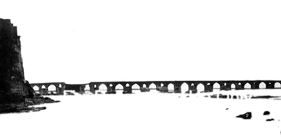

YOL ARKADAŞIM
Elimdeki zarfın arka yüzündeki adrese baktım. Otuz yıl önce postaya verildiği yerin harflerini okudum teker teker:
Te-hı-te; Taht.
Sin-lâm-ye-mim-elif-nûn; Süleyman.
Bir tire koydum araya, Farsça tamlamayı kurdum: Taht-ı Süleyman.
Taht-ı Süleyman’dan gelmişti bu mektup. Demek ki şimdi bana ne çok yolculuk var ve yolun sonunda daima Taht-ı Süleyman var. Peki ama ben ne kadar çok yoldan geçerek varacağım Taht-ı Süleyman’a? Üstelik otuz yıl geçmiş aradan, aradığım hâlâ yerinde duruyor mudur? “Geleceğim” demedim. Bekliyor mudur?
Çalışma masamın başında, üzerinde donuk bir Şubat ışığı oynaşan sararmış zarfı otuz yıl üzerine bir kez daha açtım, otuz yıl önce arkasına ancak bir kez düşebildiğim ve çabuk yorulduğum şeyi bu kez bulmaya kararlıyım. Yasemen “Buluruz” demedi mi? Ne ben otuz yıl önceki benim ne de İran o eski İran. Değişmeyen tek makam: Taht-ı Süleyman.
Enine doğru ikiye katlanmış çizgisiz kâğıdın başına mavi tükenmez kalemle kondurulmuş hitap yerli yerinde: “Azizim”. Yazılmış olanlar da satır satır, dizi dizi duruyor. Bir de yazı, o hiç değişmiyor. Fakat bu mektup asıl merakımın ne olduğunu anlamıyor, bana ondan haber vermiyor. Hal hatır. Sonrası iyilik sağlık. Eski insanların bütün mektupları gibi, bolca selâm, bolca isim.
Oysa ben şimdi olduğu gibi otuz yıl önce de dedemi, daha doğrusu on iki yaşımda iken kaybettiğim ve ancak bir parça tanıyabildiğim dedemi değil onun asıl hikâyesini, yani gençliğini merak etmişim. Fakat zamanı varmış her şeyin, otuz yıl beklemişim. Şimdi elim ancak varınca, gitmeye karar vermişim.
Zaman geldi. Fakat huzursuzum ben. Hayal meyal hatırladığım dedemin hikâyesi mi benim huzurumu kaçıran? Zamanında daha fazla anlattırmak, daha fazla dinlemek, daha fazla bilmek ve öğrenmek mümkünken, hikâyenin kahramanı henüz sağken ve bana bu kadar yakınken nasıl bu kadar gafil olabilmişim? On iki yaş! Çocukluğun taşıyamadığı merak yegâne müdafaam benim. Gafletin bir kefareti olsa katbekat ödeyebilirim. Ama yok. “Yitik zamanın peşinde”yim.
Ne olmuştu da Tebrizli tacir yerini yurdunu terk etmiş, evinden ocağından, anasından atasından kopmuştu? Ailenin haylaz çocuğu muydu, istenmeyen kişi mi olmuştu? Affedilmeyecek bir hata mı işlemişti ki ikinci vatanında kurduğu yuvaya, tüttürdüğü ocağa rağmen unutamadığı anavatanına mektuplar yazıp dursa da gelmezdi bu mektupların cevabı. Kovulduğu cennetin kapıları bir türlü açılmaz, kimseler ona cevap yazmazdı; tek mektup müstesna. Trabzon’a yerleştiği daha ilk yıllarda aldığı bu mektupta ona “Geri dön” denmişti. “Köprülerin altından çok sular aktı, geri dön.” Dönmemişti o. Bu çağrıya icabet etmemiş, Zehra’sının, Sehend Dağı’nın gölgesinde, o bambaşka coğrafyada, bambaşka alışkanlıkların, bambaşka insanların arasında yaşayamayacağını düşünmüştü en fazla. Ne geri dönebilmişti ne de hiçbir şey olmamış gibi yapabilmişti. Bir haber, bir rabıta, bir gönül bağıydı bütün istediği. Bir mektup, aralarında gidip gelsindi. “Ben buradayım, siz de oradasınız değil mi? Ben sizi biliyorum, sizin de beni bildiğinizi bileyim. Söz ile söyleyin, ikrar edin. Beni cennetinize tekrar kabul edin.”
Ama hayır! Kesin bir sükûtla bölünmüştü o tek mektubun kurduğu köprü. Bu nasıl bir kovulmaydı ki ölümüne değin Taht-ı Süleyman’a yılda birkaç mektup yazdığı halde bir daha cevap alamamıştı. Artık gözlerinin feri söndüğünde, daha da hazini hafızası kelimelerine ihanet edip Farsça sözcükler dilinden yapraklar gibi ağır ağır düştüğünde, yerine yenileri koyulamayan eksik kelimeler meramına artık yetmeyince oysa meram giderek daha da çoğalınca Menije görünmeye başlamıştı evimizde. Trabzon’daki İran konsolosunun bulduğu, üniversitede okuyan Fars bir öğrenciydi Menije. Urumiyeliydi ve şayet çocukluğumdan kalan hatıra beni yanıltmıyorsa kocaman, aydınlık, pırıl pırıl bir gülüşü vardı ve galiba en güzel yeri ceylanlar gibi bakan koyu karanlık gözleriydi.
Mektuplar döşenirdi Menije’nin inci harflerinden. “Yaz kurban” derdi dedem. “Ben sizleri, vatanımı, atamı, anamı, biraderimi, ablalarımı, Tebriz’i, Taht-ı Süleyman’ı, Sehend Dağı’nı çok özlemişim. Burada rahatım huzurum, ikbalim servetim yerli yerinde. Artık yaşlandım. Sularım duruldu. Kanım sakin akıyor. Ama vatanım aklımdan çıkmıyor.”
“Oku aziz can” demişti bir keresinde.
“Tamam, Settarhan Amca” demişti Menije. Mektubun önce Farsçasını, yetmemişti sonra Türkçesini okumuştu. Derkenarlarla, satır aralarıyla, yazılanlardan çok yazılmayanlarıyla uzayıp giden mektup benzerleri gibi dedem tarafından öpülüp zarfa konmuştu. Dimdik, hâlâ çakı gibi bir adamdı benim dedem. Ama bütün bunlar çocuk gözlerimin önünde olup biterken, Allah’ım, ben ne kadar gafildim.
Taht-ı Süleyman taifesi Nuh diyor peygamber demiyor olmalıydı ki bir cevap olsun gelmiyordu. Büyük ceza. Yıllar yılları kovaladı. Böyle sürdü gitti, beklenen mektup gelmedi. Ama sonra bir gün, en olmaması gereken gün, beklenen cevap geldi, dedemin ölümünden iki gün sonra. Hakikaten “roman gibi”. Teyzem gözyaşları içinde çantasından bir zarf çıkardı. Menije çağrıldı. Bolca selâm, hal hatırdan ibaret bir mektuptu bu da, o kadar. Ve ki gidenler gidince geride kalanların paylaşacak bir şeyi kalmamış olmalı ki yazışmanın devamı gelmemişti. Gel zaman git zaman, fakültedeyken Fars bir arkadaşa bir mektup yazdırmıştım ben de, tam otuz yıl önce. Bir de cevap almıştım, işte şu elimde tuttuğum zarfın içinde. Ama yıl 1979’du. İran tümüyle kendi içine kapanırken Taht-ı Süleyman-Trabzon hattındaki yazışma bir kez daha kesilmiş, ben de şu adresi nice cevapsız mektuplar serüvenine ekleyerek belleğime yerleştirmiş, zamanına değin rafa kaldırmıştım.
Taht-ı Süleyman’dan her nasılsa gökten düşen elma gibi Trabzon’a düşüvermiş dedemin hikâyesi sade çizgileriyle belliydi aslında. O, Tebriz, Batum, Tiflis, Bakü hattında halı ticareti yapan bir tacir. Batum’da bulunduğu sırada Bolşevik İhtilâli patlak verip sınırlar kapatılınca bir daha Tebriz’e dönememiş, Trabzonlu bir motorcunun yardımıyla onun şehrine kaçmış, İstanbul’a geçmek niyetiyle Trabzon’a şöyle bir uğradığını sanmış ama büyükannemle evlenince burada kalmış. Büyükannemin de hikâyesi belli, o da 1916’da Rus işgaline uğrayan Trabzon’un İstanbul’a kadar gidip dönen muhacirlerinden biri.
İki ırmak onlar. İkisinin de birleşip büyük bir ırmağa dönüşmeden önce ayrı ayrı akıp geldikleri kumullu yataklar, mecralar, kimyalar var. Benim var olmam için birbirine doğru akmış bu iki ırmağın birleştiği yerde milyonlarca ihtimal arasında mümkünlerden bir mümkünüm sadece ben. Öyleyse mümkünümün yola çıkış anını, ırmaklarımın kaynağını bulmam gerek. Dedemin bile başaramadığı şeyi başarmak yani; geri dönmek. Başlangıç noktasına ittiba etmek. Gitmek.
Merak, zamanı gelmiş bir katmer gibi açılıyor içimde. Haydi, öyleyse zaman geldi. Bir tacir ve bir muhacirin mümkün kıldığı varlığıma şimdi seyyahlık yaraşır. Yol zamanı.
Ama benim de yolum yolculuğum var; demem o ki bu karara varmam, bu cesareti toplamam kolay olmadı. Her şey Bakü’den aldığım bir sempozyum davetini, biraz da tacirin bir zamanlar yolunun geçtiği şehri görmek arzusuyla kabul ederek üç ay önce Bakü’ye gitmemle başladı. Önce onu anlatmalıyım. Çünkü Doğu’nun kapıları bana ancak o zaman açıldı ve yol arkadaşımı da orada buldum.
Üç ay önce, Kasım başı. Bir sempozyum vesilesi ile Bakü’ye gidiyorum. Bakü’ye Trabzon’dan uçak var fakat pervaneli bir uçak bu, İstanbul’dan jet ile bir buçuk saatte alınacak mesafeyi o buradan üç saatte alacak. Olsun. Buradan İstanbul’a geçip İstanbul üzerinden Bakü’ye gitsem hem aynı zamanı harcayacağım hem de böylesi bir rota bana abes gelecek. Üstelik bu pervaneli uçak öyle 10.000 “feet” yükseklikte filân değil, gayet insanî irtifalarda yol alacak. Bu harikulâde. Çünkü böylece yeryüzüne tanınır bir yükseklikten bakabileceğim, şehirleri, dağları, ırmakları seçebileceğim.
Gerçekten de öyle oluyor. Azerbaycan Hava Yolları’na ait bir uçakta abartılı makyajlarıyla Rus hosteslerin ikram ettiği kahveyi yudumlarken başımı cama dayamış dışarıyı seyrediyorum. Hiçbir şey bir noktaya dönüşmüyor, her şey yerli yerinde, sadece ben biraz uzaktan bakıyorum. Güneşli, berrak bir gün. Karadeniz kıyılarını ayan beyan izlemek mümkün. Çoruh nehrini ve Batum’u tanıyorum. Sınırı aşmışız. Kuş uçuşu gitmek oradan geçmemizi gerektirse de Ermenistan gökleri bize kapalı olduğu için Gürcistan üzerinden uçuyoruz.
Şunlar, bu ihtişam ve bu güzellikle başka türlüsü mümkün değil, Kafkas Dağları. Bir kelepçe gibi uzanıyor ve yumuşak bulutların, altın ışıkların, koyu mavi gölgelerin arasında yüzen karlı zirveleriyle, bitmeyen masallarını anlatıyorlar. Hazar ve Karadeniz arasında uzanan Kafkasya’ya Arap coğrafyacılar “Halklar Dağı” derlerdi. Her vadisinde neredeyse bir halkın yaşadığı dünyanın bu en kalabalık, en renkli ve en problemli bölgesini bu mesafeden bir minyatür çerçevesine sığdırılmış görmek, üzerimde derin bir duygu, sarsıcı bir etki uyandırıyor. Çünkü bu yükseklikten bakınca orada yaşanmışların hükmü kalmıyor. O yangınlar bu dağlarda bu taşlarda mı tutuştu? Korku bu dağları mı bekledi? Bu dağların gördüğünü mü kimseler görmedi? O ağır yük bu dağların mı omuzlarına bindi? Bu dağlar da mı tanık tutulduklarına tahammül etti? Bu dağlar da mı mahşerde konuşacak sıradağlardandır, o vakte kadar insanlar yalan yanlış konuşacak mıdır?
Kafkas Dağları çok azametli, bitmiyor. Her sıra dağın arkasından bir yenisi çıkıyor. Bir zirveyi başka bir zirve takip ediyor. Ama işte sonunda onu da aşıyoruz. Onun böylesine kavranması, bütünüyle algılanması içimi eziyor. Fakat şüphe yok. Eteklerine insem dağ yine dağ olacak, küçülen ben olacağım. Sonunda yolculuk bitiyor. Bakü’ye iniyoruz. Doğu’ya ilk kez bu kadar yakınım.
İlk gün sempozyum telâşesi ile geçti. Burada tanıştığım bir genç kız var. Adı Yasemen. Müzik tarihi doktorası yapıyor. Sempozyum boyunca misafirperverliğini esirgemediği gibi dün de bana şehri gezdirdi. Nasıl bir yol arkadaşı olacağını henüz ne o biliyor ne de ben. Ama Yasemen bu şehrin, dahası Doğu’nun ruhu ve ona baktıkça anlıyorum ki Doğu ancak doğudadır. Orada her ayna seni gösterir. Giyimler, şiveler, davranışlar, sosyal konumlar, çiçekler, ağaçlar değişse de bütünüyle doğuda başlangıçtan beri kesintisiz gelen, değişmeyen bir şey var. Doğu bütün ırmakların ortak ana kaynağıdır. Gülün yurdu doğudadır.
Dün Bakü’yü Yasemen’in hazırladığı güzergâh üzerinde çoğunlukla yürüyerek dolaştık. Yorgun günün sonunda Tarkovi’ye geldiğimizde iri ve sağlam gövdeleriyle yükselen asırlık ağaçlar koyu ve derin gölgeler arasında parıldıyor ve hafif bir rüzgâr esince birkaç yaprak ağır ağır düşüyordu. Cadde ışıl ışıldı ve eski Rus konaklarından, neft milyonerlerinin saraylarından süzülen ışık yollara dökülüyordu. Kasım akşamı erken iniyor. Her şey eski zaman olurken birden hafif bir melodi işittik. Az ötede, akordeonunu göğsüne yaslayarak parkın alçak duvarı üzerine oturmuş bir sokak çalgıcısı. Yaşlı fakat dinç bir adam. Hali tavrı zarif; temiz, ince ifadeli, feleğin gadrine uğramış gurbet bakışlı. Sırtında çok eski, el örgüsü, dik yakalı bir kazak var. Eski bir pantolon, yıpranmış ayakkabılar. Elleri ince uzun. Başında geri yatırılmış yırtık bir yün bere. Gözleri buz mavisi. Yerde akordeonun kutusu açık. Gelen geçen içine birkaç kuruş atıyor.
Yasemen “Bu Rus’tur” diye işaret etti. “Her zaman buradadır ve çok güzel çalar.”
Yetmiş yaşlarında olsa, demek yaşadığı yerde bunca yabancı duran bu adam, Sovyetlerin dağılmasından sonra gitmeyenlerden biri. Yanık, çok yakıcı, çok içli bir ezgiye başlıyor. Bir hançer kalbimin içini oyup dururken gurbet duygusu yakama yapışıyor. Büyülenmiş gibi ilerliyorum. Ben sözünü tutmayan köyün çocuklarından biri değilim, o da fareli köyün kavalcısı değil ama böyle bir müziğin etkisinden kurtulmak imkânsız. Benim “ha demeden hayran olan” bir gönlüm var, o ise aynı şeyi anlayan iki kişiden birinin tebessümüyle bakıyor yüzüme. Bir selâm gülümseyişi bu. Az öteye, duvarın üzerine usulca ilişiyorum. Yasemen gülümsüyor. Yapraklar ağır ağır düşmeye, sarı ışıklar konakların pencerelerinden süzülmeye devam ediyor. Ezginin ayrılıklardan bahsettiğini tahmin etmek zor değil. Bu kadar hazin bir parça ancak hasretten söz edebilir ve bu kadar içli okumak için hasreti bilmiş olmak gerekir. Gözlerim yaşarıyor. Parça bittiğinde sessizce, utanarak kutuya birkaç kuruş bırakıyorum. Bu müziğin karşılığı bu olmamalı. Değil ki o da susmuyor. Ödediğim bedelin çok daha fazlasını ikram ediyor bana. Sokak çalgıcısı ile bağışçısı değil, müzisyenle dinleyicisiyiz sadece.
“Gidelim” diyorum Yasemen’e. “Hiç kimsenin yurdu yok burada.”
Yasemen kibarca ekliyor, daha doğrusu düzeltiyor:
“Yurtlarından ayrı kalmamak için milletlerinden ayrılmışlar.”
Başımı kaldırıp Yasemen’e dikkatle bakıyorum. Umduğumdan çok fazlası.
Bakü’de üçüncü sabahım. Aşağı iniyorum. Yasemen beni bekliyor. Sırtında gri bir manto var, saçları kumral ve omuzlarına dökülüyor. Onu her görüşümde daha fazla sevindiğimi hissediyorum.
“Önce Ateşgâh’a gideceğiz hocam” diyor. “Yani Ateşbehram’a. Sonra da İçerişeher’e.” Benimle İstanbul Türkçesi ile konuşsa da özel isimleri kendi ağzında telâffuz ediyor genellikle. Yüzünde, şaheserini sona bırakmış ve yaratacağı etkinin şimdiden farkında olanlara özgü tatlı bir ifade, yanakları pembeleşmiş.
“Tamam” diyorum. “Kılavuz sensin.”
Ateşgâh, Zerdüştîlerin ibadet mekânları. Şimdiye kadar bir ateşgâh görmedim, bundan sonra göreceğimi de zannetmiyorum. Ama ilginç bir ziyaret olacağı kesin. Bir taksi tutuyoruz, Surahanı semtine doğru yola koyuluyoruz.
Kıpkızıl akan lâvları uzaktan göstererek beni bir yanardağın kıyısından geçiriyor Yasemen. Bu ülke, evet, bir ateş ülkesi, yerden bile ateş fışkırıyor fakat hiçbir şey aniden karşıma çıkan sekiz kapılı, kerpiç dokulu bu ateşgâh kadar cayır cayır yakamaz insanı ve kendisi de öyle yanamaz. Burası avlunun etrafında sıralanmış hücreleriyle bir kervansaraya benziyor ve ortadaki sunakta göstermelik de olsa “ebedî ateş” hâlâ heybetle yanıyor. Sersemliyorum.
“Ateşdan” diye fısıldıyor Yasemen.
Tümüyle sağlam kalmış bu Zerdüştî ateşgâhının ortasında yanan ateş kendine çekiyor beni. Yaklaşıyorum, yarı çömeliyorum. Nâr-ı cehennem. Nâr-ı İbrahim. Alev dillerinde ateşin bir ağaca dönüşerek gökyüzüne doğru dal budak saldığını görüyorum. Ateş, dokunanı kendisine benzetiyor, ona yaklaşanın eskisi gibi kalması mümkün değil. Alevler saçlarımı tutuşturacak neredeyse, kızıl dillerin hararetinden yanaklarım yanıyor. Üzerimden yakıcı bir esinti, belli belirsiz bir hatıra geçiyor. Sarsılıyorum. Henüz sebebini çözemiyorum ama dilimden size bu hikâyeleri anlatırken herhalde en çok kullanacağım cümle dökülüyor:
“Tacirin yolu acaba buradan geçti mi?”
Ateşgâhtan sonra İçerişehir’e gidiyoruz. “İçerişeher, Bakü’nün en eski iç halkası” diyor Yasemen. “Neredeyse hiç bozulmamış. Şirvanşahlar Sarayı’na götüreceğim şimdi sizi hocam. Ondan sonra da Kervansaray’da çay içeceğiz. Orası benim en çok sevdiğim yerdir.”
XV. asırdan kalma bu han sarayına adım attığımız andan itibaren büyüleyici bir sessizliğe gömülüyoruz. Trafiğin uğultusu, devasa şantiyelerin tozu toprağı, hayatın gürültüsü kesiliyor birdenbire. Taşın zamanı başlıyor. Taş, zamanın tek tanığı. Yasemen eyvanların, kemerlerin, kubbelerin arasında bir görünüp bir kaybolurken benim zamanıma müdahale etmiyor. Aynı zamanı ama ayrı ayrı yaşıyoruz. Bir terasın korkuluklarına oturuyoruz sonra. Birden yağmur başlıyor. Ben, şalımı açıyorum, ikimizi aynı örtünün altına alıyorum. Aynı şalın altında aynı yağmuru seyrettiğimiz andan itibaren hikâyemi onunla paylaşabileceğimi, tacirin coğrafyasını onunla birlikte keşfedebileceğimi, o güzergâhın üzerinden onunla geçebileceğimi hissediyorum. Bu kadar zaman yetiyor ona güvenmem için. Çünkü sevdim ve ben kalbiyle yaşayanlar zümresindenim.
“Yasemen” diyorum yağmur devam ederken, “Tebriz’e gidelim.” Aslında gidebileceğimize ben de inanmadan. Ama lâf olsun diye de değil, çok güçlü bir istek bu. Sadece gerçekleşebileceğine inanılmayan çünkü yolu yordamı, haritası güzergâhı yabancı olan.
“Gidelim hocam” diyor, “Ama ne zaman? Yazdan önce izin alamam. Ancak Temmuz’da.”
Bir tek cümle. Bütün ırmakların yönü işte o zaman değişiyor. Çünkü bu cümle, gayrimümkün zannettiklerimin, tahayyülümün sınırları dışında kalan bütün hayallerimin mümkünler faslında durduğunu ilk kez gösteriyor bana. Mümkün! Öyle olmasa “Ne zaman?” diye sormazdı. Kalbim çatlayacak.
“Yasemen” diyorum, “Ondan sonra da Batum’a, Tiflis’e gidelim.”
Gülümsüyor “Bakı”nın ruhu. “Gidelim hocam” diyor. “Ama o da ancak bir sonraki yaza.”
Mümkünler faslı, bir daha.
Çok ciddi. Şaka yapmıyor, gülmüyor, söylediği cümlenin üzerinden geçip gitmiyor, bir dakika sonra unutmuyor onu; kendisini kaptırdığı bir fantezinin içinde değil. Ciddi ciddi zamanlama yapıyor.
Şirvanşahlar Sarayı’nda, Kasım yağmurunun altında, henüz tanıştığım bir genç kızla aynı şala sarınmış, ömrümün yolculuğunun programını yapıyoruz. Ne kadar kolaymış bunca yıl cesaret edip de niyet bile edemediğim o büyük yolun kapısının önümde açılması. Ciddi ciddi konuşuyoruz, şartları tartıp döküyoruz. Yola koyuluyoruz hâsılı.
“Temmuz” diyor. “Önce Tebriz’e gidelim. Orada tanıdıklarım var. Sonra da Tiflis ve Batum’a gideriz. İki yaz, üst üste.”
İçerişehir’in daracık, dolambaçlı, kemerli, tünelli yollarında dolaşıyoruz bir süre daha. Sonunda Kervansaray’a geliyoruz. Yağmur çoktan durmuş, hava neredeyse açmış. Avludan geçiyor, eyvanlara açılan hücrelerden birine giriyoruz. Ahşap bir masa, hasır iki sandalye. Güler yüzlü bir kadın karşılıyor bizi. Porselen bir demlikte hoş kokulu bir çay getiriyor; kekik kokusu bu, yabanî. Yanında “murabba”, bir tür reçel. İncecik limon dilimleri porselen tabakta billur ışığıyla parlıyor ve bu şehirde çaya limon kabuğunun kokusu çok yakışıyor. Şirvanşahlar Sarayı’nda konuştuklarımızdan sonra bu çay faslı, bu tat, bu koku. Başım hoş. Rüzgâr okşuyor.
“Tebriz’i ve Tiflis’i görmeyi çok mu istiyorsunuz hocam?” diye soruyor Yasemen. Demek hâlâ mümkünler faslındayız. Demek hâlâ üzerinde durulacak bir istek bu benimki. Öyleyse açma, anlatma zamanı.
“Yasemen” diyorum, “İçimde bir roman dönüp duruyor. Roman olsun diye değil ama dedemin izini bulmak, şehrini, toprağını görmek istiyorum. Düşünsene orada bizim ailemizin bir kolu, kolu bile değil asıl ırmağı duruyor.”
Yüzü pembeleşiyor, ışıyor Yasemen’in. Çok genç ama beni akranımmış gibi anladığını hissediyorum. Yani anlatabilirim. Yavaş yavaş özetliyorum hikâyeyi. Son yıllarda her zamankinden daha çok merak ettiğimi, gitmek istediğimi, oysa Taht-ı Süleyman damgalı bir mektubun üzerindeki adresten başka hiçbir bilgiye sahip olmadığımı, onun da otuz yıl öncede kaldığını. Ve bana bir yol arkadaşı lâzım olduğunu. Bunu, bu son cümleyi söylemiyorum ama. Her şey kendiliğinden oluyor.
“Buluruz hocam” diyor. “Hele bir gidelim.”
“Buluruz” deyişi de o kadar mümkünler faslından ki “Buluruz” diyeceğim ben de neredeyse. İncecik limon dilimini fincanımın içine bırakıyorum yavaşça. Kaşığın porselene dokunurken çıkardığı sesi dinliyorum ve bu yolculukta eğer bir kişi ile birlikte olacaksam bunun Yasemen olması gerektiğini anlıyorum. Bana bir yol arkadaşı lâzım olduğu için değil. Gidebileceğimize, dahası bulabileceğimize inandığı, bunu bir fantezi olarak görmediği ve en çok da o dünyadan olduğu, o dünyanın cilvelerine tanık olduğu için. Bana da, bulabileceğimize de benden fazla inandığı ve kendini bu yolculuğa gönüllü kattığı için. Anladığı ve kolaylaştırdığı için.
Çok kolaymış ama bu kadar kolaylaşmasının vakti zamanı varmış. Ertesi sabah Trabzon yolcusuyum. Dönüş vakti. Çok erken kalkıyoruz. Sabah soğuğunda şalımı çıkarıp onun omuzlarına atıyorum. Gözleri hafif nemli.
“Ben araştırmaları yapar, bağlantıları kurar, size bilgi veririm hocam” diyor, “Temmuz’da.”
“Temmuz’da” diyorum.
Şoför “Acele edelim hocam” diyor. “Trafik var.” Bakü’nün trafiğinde, koca bir şantiyeye dönmüş şehrin tozu toprağı arasında havalimanına doğru yol alıyoruz.

I. KİTAP
NAR AĞACI
Elimde otuz yıl önce gelmiş Taht-ı Süleyman mektubu, zihnimde Yasemen’in yol arkadaşlığı, dışarıda mecalsiz güneş, Şubat soğuğu. Temmuz’a daha çok vakit var. Okumam gereken final kâğıtları masamın üzerinde, “Taht-ı Süleyman” diye mırıldanıyorum ne yapacağına karar vermişlere mahsus bir baş işaretiyle. Kendimi, kararımı onaylıyorum, parmaklarımı masanın üzerinde tıkırdatırken, “Taht-ı Süleyman.”
Yerimden doğruluyorum. Üzerinde Kız Kulesi’nin resmi bulunan teneke bir kutuyu çıkarıyorum dolaptan. Dedem öldükten sonra onun evinde bulunan, yer yer paslanmış, eğrilip bükülmüş bir kutu bu. Dedemin hazine sandığı. Kapağını açıyorum, içindekileri masamın üzerine yayıyorum.
Taht-ı Süleyman’a yazılıp da gönderilmemiş mektuplar, gönderilip de cevabı alınmamış olanların kopyaları, Taht-ı Süleyman’dan gelmiş tek cevap, firuze taşlı bir yüzük, birkaç Rus rublesi, bir evlenme cüzdanı ve beş tane eski zaman fotoğrafı.
Bunların sadece iki parçası tacirin gelirken beraberinde getirdiği yük. Birkaç ruble ve mavisi solmuş firuze taşlı bir yüzük, o kadar. Bu kadar az şey mi almış yanına geçmişinden geçerken? Bu kadar mı azalmış? Bu kadar mı saklanmış? Yükü ne kadar da hafifmiş. Fakat ne kadar ağır bir azlık bu. Bir yangın varmış da o sadece bunları mı kurtarmış? Geride neler bırakmış? Yoksa yazgısı bir anda boşluğa düşen bir kahraman gibi ne önünü ne de arkasını mı görebilmiş? Teçhizatsız mı kalmış? Hiçbir şey bilmiyorum. Az ama bu azlıkta ayrılıyor birbirinden benim hatıramda kalmış ihtiyar bir adamla onun bir zamanlar olduğu civan delikanlı, roman kahramanı.
Evlilik cüzdanının kapağını kaldırıyorum. Sol sayfada siyah çarşaflı, yüzü açık, gencecik, su gibi duru, fildişi bir madalyon oyması kadar güzel bir kadın. Sağ sayfada uzak yerli, yağız bir adam. Bu kadın benim büyükannem, Zehra; bu da benim dedem, Settarhan. Yerimden kalkıyorum. Çalışma odamın penceresinden karşıdaki küçük bahçeye bakıyorum. Güneşli Şubat ayazında çıplak dalların arasından birbirini kovalayan iki kuş havalanıyor, tarhlarda açmış birkaç nergis rüzgâra teslim. Evin içinde odaları dolaşıyor, bu kez ön pencereden denize bakıyorum. Kendime bir çay demliyorum, Bakü’nün çayı bu. Bir fincan alıyorum, gerisin geri masamın başına dönüyorum. Sınav kâğıtları beni bekliyor.
Dumanı tüten fincanı masamın üzerine bırakırken az önce yaydığım fotoğrafları teker teker elime alıyorum.
Bir: Büyükannemin baba evi, “Eski Ev.”
İki: Gülcemal vapuru. “İsmail dayım bu vapurla Balkan Harbi’ne gitmiş” derdi annem.
Üç: İstanbul’da Hamidiye Etfal Hastanesi’nde bir Hilâl-i Ahmer hemşiresinin fotoğrafı, daha doğrusu bir kartpostal.
Dört: Trabzon’daki Taşhan.
Bir de Trabzon’da Meydan’ın çok kalabalık bir günde çekilmiş fotoğrafı. “Bunun ne zaman olduğunu bilmiyorum” derdi annem. “İnsanların ellerinde bayraklar var, belki bir bayramdır.”
Fotoğrafları evirip çeviriyorum. İçimden bir şey taşacak benim. Şu, zamanı belli olmayan fotoğrafı elime alıyorum. Meydan’da bir kalabalık var, hıncahınç. Fakat alışıldık kalabalıklar gibi değil. İnsanların ellerinde de evet, bayraklar. Ama yüzler gergin, kederli, telâşlı. Bayrama benzemiyor. Üstelik çarşaflı kadınlar erkeklerle bir arada. Olağanüstü bir şey oluyor. Ama ne? Kalabalığın ortasında bir tellâl var. İri yarı bir adam, başında abanî bir sarık, sırtında bir cepken. Tokmağını kaldırmış, davulun gergin yüzüne tam indirmek üzere. Ve Trabzon’un Müslüman ahalisi kadar gayrimüslim ahalisinin, Ermenilerinin ve Rumlarının da onu aynı dikkatle dinlediğine bakılırsa çok önemli bir şey söylüyor olmalı.
Bu fotoğrafa ne kadar baktığımı bilmiyorum fakat hayli uzun süre bakmış olmalıyım. Çünkü şekillerin sislendiğini, bulandığını, buğulandığını fark ettim önce. Sanki resim bana yaklaştı. İlk anda yorgunluğuma verdim, gözlerimi kırpıştırdım. Evet, biçimler yeniden netleşti. Ama başka türlü bir netleşmeydi bu. Birden yaprakların hafifçe oynamaya başladığını, üzerlerinde ışığın parladığını ve renklerin belirginleştiğini fark ettim. Derken bir canı olan her şey kıpırdamaya başladı. Çok geçmedi, mahşerî bir gürültü doldurdu kulaklarımı. Hayatın o sıcak uğultusu, rutubetli sıcağın içinden çarptı yüzüme. Bağırıp çağıran insanlar da yerlerinden doğrulan develer ve onların ağızlarındaki köpük kadar canlıydı. Tellâlın tokmağı davulun üzerine indi. Fotoğraf kartonunun üzerinde ölü bir an gibi donmuş olan hayat, bir film karesinin “devam” tuşuna basılmış gibi, kaldığı yerden devam etmeye başladı.
“Seferberliktir!” nidasını arka arkaya üç kez tekrarlayan tellâlın sesini duyunca bütün o hayat sahnesinin içine girdiğimi anladım. Tellâl kocaman davulunu olanca gücüyle döverken davudî bir sesle haykırıyordu. Ter yanağından akmıştı ve gömleği sırtına çoktan yapışmıştı.
“Ey ahali! Dinleyin! Duyduk duymadık demeyin! Seferberlik ilânıdır. Kara ve deniz ordularının seferberliği ve tüm müstahkem mevkilerin silâhlandırılması için Padişah efendimizden yüce irade çıkmıştır.”
Tellâl “Seferberliktir!” diye bir kez daha bağırdığında anladım durumun vahametini. Seferberlik! “Memleketin maddî manevî bütün kuvvetini, yani askerî, ekonomik, psikolojik ve siyasî bütün güçlerini barış durumundan topyekûn savaş durumuna seferber etmesi. Yola, yolculuğa, savaş durumuna geçmesi.”
Tellâlın peşine takıldım.
O, bir kez daha “Ey ahali!” diye bağırdı. “Seferberliktir!”
“Tiir” hecesi Boztepe’ye çarpıp Meydan-ı Şarkî’ye geri döndü, Ferah Lokantası’nın, Şems Oteli’nin camları zangırdadı.
Demek ki seferberlik ilânına denk gelmiştim. Ama hangi seferberliktir bu, hangi zamandayım, işte onu ilk anda çıkartamadım. İnsanların giyim kuşamlarından, Meydan’daki binalardan, havagazı sokak lâmbalarından, toprak zeminden filân 1900’lü yılların başında olduğumu az çok anlayabildim. Öyleyse hangi seferberlik? Millî Mücadele için erken olduğuna kanaat getirdim. I. Cihan Harbi mi? Yoksa Balkan Harbi mi? İkisinden biri. Hafifçe kırılmış olsa da nemli bir sıcak, basık bir hava vardı. Ağaçlar hâlâ yapraklıydı, sert bir rüzgâr, sayılı bir fırtına geçmemişti üzerlerinden. Tanımaz mıydım kendi şehrimin havasını ben? Güz mevsimindeydik. Eylül sonu? Ekim başı? Öyleyse? Aman Allah’ım! Aman Allah’ım!
Tellâl o malûm girizgâhı bir kez daha tekrarladı.
“Ey ahali!” Duyulduğundan emin olmak için biraz bekledi. “Duyduk duymadık demeyin!”
Ortalığa böylesi bir ölüm sükûneti çökmüşken, bir kulağı olan herkes kulak kesilmişken ve o böyle bir sesle haykırırken duymamak mümkün mü? Gerisi geldi:
“Balkan milletleri topyekûn harp hazırlığı içindedir.”
Evet, yanılmamışım, Balkan Harbi Seferberliği. Okuduklarımdan hatırladığım tarihi, tellâlın haberiyle birleştirince 1 Ekim 1912’de olduğumuzu anladım.
Düşmemek için bir ağaca yaslandım.
Tellâl pek çok maddeyi arka arkaya sıralayarak devam etti; Osmanlı hükümetinin Rumeli’de kısa bir müddet evvel terhis ettiği orduyu şimdi yeniden ve topyekûn silâhaltına toplamak azimetinde olduğunu, Trabzon ve havalisinden 87. Alay adıyla bir alay oluşturulacağını, sadece yükümlülerin değil savaşa gönüllü olarak katılmak isteyenlerin de belediye idaresine başvurması gerektiğini bağıra bağıra ilân etti. Halkın sakin olmasını, fırınlara ve mağazalara yığılmamasını, aksi yönde bir emir çıkmadıkça ticarethanelerin açık tutulmasını, her türlü yardım için ilgili makamlara başvurulmasını da ekledi. Terini bohça büyüklüğünde bir mendille silerken aynı şeyleri iki sokak ötede tekrarlamak üzere arkasında devamlı artan bir kalabalığı sürükleyerek gitti. Duyurudan anlaşılan şuydu ki tez günde tez saatte 87. Alay’ın cepheye sevki için hazırlıklar tamamlanmalıydı. Büyük kattan gelen bu büyük emir milletin cümlesini yerinden oynattı. Kan kaybıyla zaten başı nicedir dönmekte olan Trabzon halkının da bütün millet gibi kalbi ha durdu ha duracaktı.
Orada öylece kalakaldım. En büyük hayalim gerçek olmuş, zamanda geri gitmiştim. De! Bula bula bu zamanı mı bulmuştum?
“Seferberlik.” Neydi? Adı var tamam, etkisi de belli. Ama kendisi, maddesi, niceliği nasıl bir şeydi? Meclis-i Mebusan’da alınan bir karardı evvelemirde. Sonra Sultan Mehmet Reşad tarafından onaylanarak dönemin resmî gazetesi Takvim-i Vekayi’de yayımlanan bir kanun. Sonra Harbiye ve Dâhiliye nezaretlerine gönderilen bir irade ve merkezden bütün illere gönderilen bir telgrafname. Sonra? Sonra belediyeye, muhtarlıklara dağıtılan bir buyruk. Sonra tellâllarca okunan bir emirname, aynı zamanda bir yerlere yapıştırılan bir evrak. Ev ev, yüz yüze yapılan yoklama. Yani kaderi doğrudan değişmekte olan devletle yine kaderi doğrudan değişmekte olan milletin yüzleşme anı: Bundan sonra varlığın da yokluğun da benim için. Sadece benimsin.
Bu ana tanığım işte.
Tellâl iki sokak ötede bir kez daha “Seferberliktir!” diye bağırdığında düşüncelerimden sıyrıldım. Yaslandığım ağaca doğru yürüyen siyah çarşaflı yaşlı bir kadına baktım. Kırışıklar içindeki esmer yüzü açıktı ve gözleri yaşlıydı. İki adım attım sırtımı ağaçtan ayırarak. Durumumun garipliğine aldırmadan “Af edersiniz teyzeciğim” dedim. Bakışları beni delerek geçti, hiçbir şey duymamış gibi ileriye bakarak yürümeye devam etti. Bir daha sersemledim, kanım damarlarımda dondu sanki. O zaman sadece yaşlı kadının değil, yanımdan geçip giden onca insanın da bu kadar farklı görüntüme rağmen bir kez olsun dönüp yüzüme bakmadıklarını fark ettim. Oysa giydiğim kot pantolon da, yüzümdeki makyaj da en önemlisi açık saçlarım da onlara çok yabancıydı. Dönüp bakmaları lâzımdı doğal olarak ama bakmıyorlardı işte. Öyleyse evet, beni görmüyorlardı. Sağıma soluma bakındım, az ötedeki bir zücaciye dükkânına yaklaştım. Camekânının tam önünde durdum, baktım. Camların temiz yüzeyi de gökler kadar boştu. Elimi bastırdım kalbime, yerinden çıkmasın diye. Başım dönerken dükkânın kapısına tutundum. Görüyor ama görünmüyordum. Öyle mi? Konuşuyor ama işitilmiyordum. Dokunuyor ama fark edilmiyordum. Vardım ama yoktum. Gölgeydim sadece.
Bana tam anlamıyla ne olduğunu ancak o an anlayabildim. Ben de, Alice’i, Harikalar Diyarı’na geçiren ayna gibi bir fotoğraf kartonunun arkasına geçmiş, eski zamanın içine girmiş olmalıydım. O kadar istediğim, yakıcı bir hasret duyarak, imkânsızlığını bile bile içimde büyüttüğüm şey gerçek olmuştu ve en önemlisi de şuurum, bugünkü şuurumdu, yaşadığım zamana, şimdiki zamana aitti.
Ya Rabbi, bu benim zaman zaman öğrencilerimle oynadığım bir oyun değil miydi? Ve bir oyun kadar da hacimsiz değildi, hayatımın en büyük dileği, hatta cennet tasavvurumun aslî parçasıydı. Beş Şehir’in “İstanbul” bahsinde son bölümü sınıfta okurken oynardık bu oyunu, Tanpınar’ın “mazi ile hangi seviyede ilişki kurmamız gerektiğini” irdelerken uyardığı şeyi anlamaya çalışırken.
“Bugünün rüzgârında yıkanan mazi gülü” diyordu üstat. Geçmişi bizim için manalı kılan şey, ona bugünden bakıyor olmamızla alâkalıydı. Onun bugün ve yarın için bize vereceği hızdı aslolan.
Söz buraya gelince her yıl aynı neşeyle sorardım öğrencilerime.
“Şimdi bir zaman makinesine bineceğiz. Nereye gitmek istersiniz?”
Zaman sınırlı bir şeydi ve her yıl üç aşağı beş yukarı benzer cevaplar gelirdi: “Kanuni devrine. Fatih zamanına. Fransız İhtilâli’ne. Bolşevik Devrimi’ne. Osman Bey’in yanı başına. Göktürkler zamanına. Orta Asya’ya. Asr-ı Saadet’e.”
“Peki” derdim. “Pekâlâ, gidiyoruz. Ama yanımıza almamız gereken bir şey var, o nedir?”
Çocuklaşırlardı ardına kadar açık pencerelerden Mayıs kokuları sınıfımıza dolarken.
“Defter, kalem, fotoğraf makinesi, cep telefonu, internet, şarj aleti.” Gülüşürdük.
“Yoo” derdim. “Bunlar değil.”
Ciddileşirlerdi bu kez. Dururduk biraz. Ses yok. Cevabı ben verirdim.
“Şu anki şuurumuzu alacağız yanımıza. Aksi takdirde bu yolculuğun hiçbir anlamı olmaz ki. Düşünsenize XVI. asra gitmişiz ama XXI. asırdan geldiğimizi bilmiyoruz. O zaman ne anlamı var bunun? XVI. asırda yaşayan herhangi bir Osmanlı’dan ne farkımız kalır?”
Her şey gelip, bilmekte çözülürdü, onda düğümlendiği gibi.
“Bir daha düşünsenize” derdim. “Ya biz şu anda XXV. asırda bir zaman makinesine doluşarak XXI. asra seyahat etmiş zaman seyyahları isek. Ama o zamanki şuurumuzu yanımıza almadığımız için olup biteni anlamıyorsak. Görüyorsunuz işte, eğer bilmiyorsak bir anlamı yok ne olup bittiğinin. Biliyorsak her şey var.”
Tellâlın davuluna inen tokmak damarlarımdaki kanı dondurmasa tadını çıkarabilirdim mucizeye benzer bu tecrübenin. Ama benim bildiklerimi şu kalabalığın bilmediğini, birkaç hafta, birkaç ay, birkaç yıl içinde olup bitecekleri düşününce ürperdim. Neler olacağını keşke ben de mi bilmeseydim? Keşke o kadar okumasaydım ya da şuurumu çalışma masamın başında bıraksaydım. Keşke aralarında kaderdaşlarından biri gibi ne olacağını bilmeden yaşayıp gitseydim. Bilgim de bilincim de yanımda oysa. Ben biliyorum ama onlar yarın ne olacağını bilmiyorlar. Önümüzdeki on bir yıl içinde yaşanacaklar ise akıllarının ucundan bile geçmez.
Belinde kuşağı, sırtında yeleği, ayağında poturları ile bir eşeği sürükleyerek yanımdan geçen genç köylüye baktım. İki haftayı bulmadan cephe yollarına düşecek olan şu saf delikanlı vatanı kurtarmaya gideceğini zannediyor. Ama ben? Ben öyle olmayacağını biliyorum. Koca devlet göz göre göre gidiyor. Benim gözlerimle bakınca göz göre göre geliyor gelecek olan. Ateş yoksa da duman çoktan boğula boğula, kıvrıla kıvrıla yükselmeye başlamış. Gemi batıyor.
Şu mahşer kalabalığına dönsem, meydanı hıncahınç dolduran bu insanları, kırmızı fesli efendileri, kıranta beyleri, hâkî üniforma içinde kılıç parlatan zabitleri, mülâzımları, mektep çocuklarını tutsam, yakalarından silksem, bildiğim onca şeye rağmen yine de bildiğimden en fazla emin olduğum şeyi onlara söylesem. “Gitmeyin” desem. Kareli çarşafları içinde yüzleri kapalı kadınları yakalasam kollarından sonra, “Göndermeyin” desem. Ama sesim yoktu, duymazlardı beni. Hoş, duysalar da ne fark ederdi. Bana mı inanacaklardı? Hangi birine mani olabilirim ki? Hem üçünü beşini engellesem bile ne değişirdi?
Kassandra lâneti bu. Olup bitecekleri bilip, görüp de önüne geçememek. Önüne geçememek çünkü buna kimseyi inandıramamak. Troya’nın son kralı Priamos’un kızıydı Prenses Kassandra. Verdiği sözü tutmamanın bedelini ağır ödemişti. Kendisine âşık olan tanrı Apollon’dan, aşkına mukabil, geleceği görme yetisi istemiş fakat Apollon ona bu yetiyi bahşettiğinde derin bir ikileme düşmüştü Kassandra çünkü bedenini tertemiz saklamak ve rahibe olmak istiyordu. Daha yüksek bir gerekçeyi sahiplenerek dönmüştü sözünden. Ancak öfkeli tanrı ona öyle bir karşılık vermişti ki Kassandra bundan böyle olacakları bilecek, görecek ama buna kimsecikleri inandıramayacaktı. Büyük ceza. Tahta atın karnında şehre kendi elleriyle aldıkları savaşçıların, Troyalıların sonu olacağını ayan beyan görmüştü Kassandra ama buna kimsecikleri inandıramamıştı.
Meydan’daki mahşerin ortasında Kassandra’ydım ben şimdi. Şu farkla ki kâhin Prenses’in görüp göreceği tek yangın vardı. Benimse dört bir yanda şimdiden tütmeye başlayan dumana bakılırsa göreceğim alevler yüzlerce Troya şehrini yakmaya yetip artacaktı.
Zaman zaman yaşadığım bir duygu, çok geçmeden bu seferberlik kalabalığının ortasında da yakaladı beni. Kendi zamanımda meselâ Uzun Sokak kalabalığında, İstiklâl Caddesi’nde, ya da Halep Çarşısı’nda veya benzer bir yerde yaşadığım o duygu. Bir an için başımı kaldırır, etraftaki telâşlı, koşuşturmalı, hep bir şeylere yetişmeye çalışan kalabalığa bakardım. Haklarında bir şey bilmezdim ama kesin olan tek bir şey var olurdu: “Bunların hepsi bir gün ölecek.” Kendi zamanımda kurduğum cümle gelecek zamanlı olurdu. “Hepsi ölecek.” Ama şimdi: -di’li geçmiş zaman hali.
“Bunların hepsi öldü çoktan. Hepsi ölümü tattı bile.”
Ağzımı açtım. “Hepiniz öldünüz, biliyor musunuz?” diyecektim, “İstisnasız hepinizin ölü olduğu bir zamandan geliyorum ben.”
Vazgeçtim. Söylesem de kimseler duymazdı, duysalar bile bakalım inanırlar mıydı?
Şehrimin sokaklarında peşine takıldığım tellâlın “Seferberliktir!” nidası beynimin içinde zonklarken kendi teorilerimden birinin daha yerle bir olduğunu fark ettim. “Olmuş bitmiş, devrini ve hükmünü kaybetmiş olaylar” der dururdum onların üzerinden geçerken. Oysa olmuş bitmiş, devrini ve hükmünü kaybetmiş olaylar için de ağlanabileceğini anladım. Çünkü hiçbir şey olup bitmiyordu ve demek her şey bitmeyen bir zamanda daha doğrusu zamansızlıkta biteviye yaşanıp duruyordu. Yaşanıp durmasaydı, şu an üzerinde sınav kâğıtları bekleyen bir masanın başında bir fotoğrafa baktığımı, buraya zaman aşırı geldiğimi bile bile böyle acı çeker miydim hiç?
Yine de birbirine zıt iki duygunun arasında kaldım; tanık olacağım dehşetin bilgisi ile nihayet zamanın yekpareliğinde geçmişin yaşanması. Bilen yanımla, yaşananlara tanık olup ben de yanacaktım. Ama rüya olmayacak kadar gerçek olan bu “rüya gibi”likte tarifi mümkün olmayan çok tatlı bir kamaşma içinde de kalmıştım. Aman Allah’ım, aklım başımda benim. Meydan’da toplanmış şu kalabalık arasında büyük büyük dayılarım, amcalarım, dedelerim var. Annem daha doğmamış ama yoluna çıkabilirsem anneannemle henüz gencecik bir kızken karşılaşabilirim. 1912. Demek anneannem henüz on beş yaşında. Henüz evli değil. Dedemle karşılaşmamışlar. Dedem henüz Tebriz’den gelmemiş bile. Demek ki İsmail henüz Balkan Harbi’ne gitmemiş. Hiçbirini bilmiyor anneannem bunların. Ama ben biliyorum.
Ne garip! Ben onların bildiklerini kabaca biliyordum ama onlar benim bildiklerimden tümüyle habersizdiler. Ne kadar çok şeyi bilmediklerini düşündüm. Evet, Nigâr Hanım henüz sağdı, Halide Edip Seviye Talip’le romancı şöhretini şu sıralarda kazanmıştı ama Sinekli Bakkal’a daha yıllar vardı. Yahya Kemal Paris’ten dönmemişti, Mustafa Kemal, Trablusgarp Savaşı’nda parlayan gencecik bir isimdi sadece. I. Cihan Harbi. Osmanlı’nın dağılması. Bolşevik Devrimi. Millî Mücadele. Türkiye Cumhuriyeti. II. Cihan Harbi. Sovyet Rusya. Atom bombası. Çernobil. Televizyon. İnternet. Cep telefonu. Şarj aleti… İnanılır gibi gelmedi bu durum bana. Eksiktiler. Sanki Âkif “Vurulup tertemiz alnından” dizelerini daha yazmadan yaşamak mümkün değilmiş gibi.
Sonra dönüp kendime baktım. Acaba ben ne kadar eksiktim? Henüz neler keşfedilmeden, icat edilmeden, neler yaşanmadan, neler olup bitmeden yaşayıp gidiyordum ben de? Çıkamadım içinden. Sonunda bıraktım bütün bunları düşünmeyi. Eski zamanın el değmemiş bir rüya anına rastladığım doğruydu, kendimi bu rüyanın tadına, o tatlı kamaşmaya bıraktım.
Tellâlı kendi nidalarıyla baş başa bıraktıktan sonra, sokak arasından çıkarak Meydan’a döndüm yeniden. Biraz daha sakinleşmiş olarak etrafıma bakınmaya başladım. Bizim, Meydan olarak bildiğimiz bu yere onlar Meydan-ı Şarkî yani Doğu Meydanı diyorlar, dahası Hıristiyan nüfus burada yoğunlaştığından adı halk dilinde Gâvur Meydanı buranın. Benim zamanımda Meydan’ı dolduran büyük taş yapıların çoğu yerinde yok, o zaman var olanların da çoğu bugün yok. İsmini bildiğim, resmini gördüğüm binalar ise işte karşımda. Vapur şirketlerinin acenteleri; önce telgrafhane, sonra Selâmet Oteli olan bina; İskenderpaşa Medresesi, Millet Parkı, Şafak Oteli, Ferah Lokantası. Ya Rabbim hepsi burada. Şurası Arafilboyu’nda Limonlu Sokak, şu da Tekke Mahallesi.
Ne yapacağımı nereye gideceğimi düşünmeden Cihan Oteli’nin önünden geçerek denize inen İskele yoluna saptım önce. Atlarla, arabalarla dolu bu gürültülü sokağın başında her biri koyun büyüklüğünde sokak köpekleri boylu boyunca uzanmış, kimsenin onlara dokunmayacağından emin, derin derin uyuyorlardı. İhtiyarlardan birkaçının onları rahatsız etmemek için yollarını değiştirdiğini, kenarlarından geçtiğini ya da üstlerinden atladığını gördüm. Bahçe duvarlarından nar, portakal, turunç ve limon dalları sarkıyordu. Trabzon hurmaları olgunlaşmaya başlamıştı ve yeşili yorulmuş otların arasındaki taşlardan fışkırmış yabanî incir ağaçları hâlâ yaz kokusu salıyordu. Şehrin basamak basamak denize doğru indiği, bütün sokakların önünde sonunda denize açıldığı, araya yolun girmediği zamanlardaydım. Liman henüz eski halindeydi ve yolun sonunda kumsallar uzanıp duruyordu.
Biraz daha ilerleyince kapılarda bekleyen süslü faytonları, landoları, onların yanında bekleyen arabacıları ve hemen önde resmî giysili kapıcılarıyla yol boyunca sıralanmış meşhur konsolosluk binalarını tanıdım. Rusya, İran, Belçika, Fransa, İtalya, Avusturya-Macaristan, Kuzey Almanya bayraklarını ya da yazılarını çıkarabildim. Başında tüylü şapkasıyla İtalyan konsolosu kendi binasına girerken de; papağı, vişne rengi uzun etekli kaşmir ceketiyle İran konsolosu kendi binasından çıkarken de; Rus konsolosluğunun önünde bir madam arabaya binerken de tarihî bir film seyrediyorum sandım. Geri döndüm sonra. Meydan-ı Şarkî’yi seferberlik şaşkınlığı içinde bırakarak güllerin deli gibi açtığı, bitmeyen yazlara dâhil bir Ekim gününde 97 yıl önceki şehrimin sokaklarında dolaşmaya başladım.
Ne garip, kendi şehrimde olsam da çok yeri tanımıyordum. Bu şehrin sokaklarında bir yabancı gibi dolaşmak benim kaderimmiş. Kendi zamanımda tanınmadan adım atmayı seviyordum. Yalnızdım ve insanları seviyordum ama yine de yalnızlığımı daha çok seviyordum. Şimdi de kendi zamanımdaki kadar yalnız ve yabancı, adım adım sokakları geçiyordum. Trabzon’un eski yüzünü görmekle eski Trabzon’un bilmediğim yüzlerini görmek arasında çok fark vardı. Maraş Caddesi henüz Ruslar tarafından açılmamış ama onun yerinde uzanan ince, küçük bir yol var. O yol boyunca ilerlemeye, ara sokaklara girip çıkmaya, arka sokaklara sapmaya başlayınca karşılaştım o bilmediğim yüzle. Metropolitan Kilisesi, Rum Koleji, Rum Hastanesi, Ermeni Mektebi, Ermeni Kilisesi… Şu denizi, Boztepe’yi, Yoroz burnunu, Faroz’u, Moloz’u, Sotka’yı tanımasam kendi şehrimi çıkarabilir miydim acaba? Ama yo, Gazipaşa Yokuşu, Cumhuriyet Caddesi yerinde olmasa da işaret taşlarım yerli yerindeydi. Daracık sokaklar üzerinde hepsi de bahçe içindeki evleriyle Trabzon’un aşina yüzü ve onların arasında İmaret Mezarlığı, Gülbahar Türbesi, Yeni Cuma Camii kendi yerlerinde duruyordu ve hele şükür Uzun Sokak o zaman da bugünkü gibi boylu boyunca uzanıyordu.
Bu hengâme, bu velvele ortasında görünmediğime ve dokunulmadığıma duyduğum emniyetle kendimi gidişata bıraktım. Hayy’sın Allah’ım. Selin ortasında damla ne kadar emniyetteyse ben de o kadar emindim nihayetinde. Meydan’dan Uzun Sokak’a saptım. Kitapçı Hamdi’nin, Trabzon’un bu meşhur kitapçısının, adını o kadar işittiğim dükkânının önünden geçerken bu yaşadığımın ne olduğunu artık düşünmeyecek, nasıl taşıyacağımı hesaplamayacak denli tatlı duygulara bırakmıştım kendimi. Camekânın üzerinde Âyine-i Efkâr yazısını parlatan Kitabî Hamdi’nin bu, Uzun Sokak’taki kaçıncı dükkânıdır acaba? Vitrinde önce İbrahim Cudi Lügati’ni tanıdım. El aman! Bu lügatin kelimeleri arasında az dolaşmamış, az kaybolmamıştım.
Usulca süzüldüm kapıdan içeri. Raflarda sıralanmış Ekrem’leri, Ahmet Midhat’ları, Halit Ziya’ları, Mehmet Celâl’leri, Safvet Nezihî’leri görüyordum. Şu yığın ayrılmış, kıraathanelere gönderilecek; şu yığın, Kitabî Hamdi’nin kendi yazdığı Kıraat-i Etfal, Kıraat-ı İbtidaiyye kitapları. Şu, derin bir sohbete daldığı zat da Sultanî’nin meşhur edebiyat öğretmeni İbrahim Alâeddin Bey olmalı, Gövsa.
Şimdi Hamdi Efendi’nin yanına gitsem. Otursam karşısına, kendimi göstersem. “Biliyor musun?” desem, “Haberin var mı? Dört yıl sonra bu şehir Ruslar tarafından işgal edilecek. Bütün şehir halkıyla birlikte sen de yerini yurdunu, dükkânını, ekmek kapını, kültür ocağını bırakıp muhacirliğe çıkacaksın.”
“Deli misin sen?” derdi herhalde. Aldırmasam, devam etsem:
“Döneceksiniz geriye. Ama döndüğünde bütün dükkânını Rumlar tarafından yağmalanmış bulacaksın.”
“Deli misin sen?” derdi herhalde bir daha.
Diyemedim tabii. Onun yerine camekân önünde sıralanmış kiralık kitapları okşamakla yetindim. Popüler edebiyat. Geceliği çok ucuz; Zavallı Necdet, Mehcure.
Yola devam ettim. Çarşı Camii’ni, Muvakkithane’yi geçip de Bedesten’e giden yol üzerinde olduğumu anlayınca aktarlar çarşısına uğramadan edemedim. Binbir çeşit baharat kokusunun birbirine karıştığı çarşıya daha ilk adımı atınca başım döndü. Kubbelenmiş çivitleri mavisinden, safranı sarısından, tarçını çubuğundan, karabiberi habbesinden, anasonu kokusundan, reçineyi buğusundan, kelle şekerleri mor kalın kâğıdından, mercanköşkü renginden tanıdıysam da geriye tanımadığım binbir çeşit baharat kaldı.
Tabakhane ve Zağanos köprülerinden geçerken en çok da bu derelerin suyunun ne kadar çok ve temiz olduğuna hayret ettim. Neredeyse gümrah birer ırmak gibi akıyorlardı. Şimdilerde cılız birer suydular oysa. Ortahisar’a vardığım sırada caminin minaresinden derin, yanık bir ezan sesi yükseldi. Üzerine seferberlik tedirginliği sinmiş ses, perdesiz peçesiz, hançereden çıktığı gibi içli, hiçbir metalik engele takılmadan, başkalaşmadan, sunîleşmeden, insanın kalbine çarpan bir saflıkta yayılıyordu. Namaz hazırlığındaki cemaat ise bir yandan hararetli hararetli seferberliği, yaklaşan savaşı tartışıyordu. Onlar namaza durdular. Ben? Seferî miyim değil miyim, bir türlü kestiremedim. Dahası, kılsam mı kılmasam mı, karar veremedim. Onları orada bırakarak birbirine yakın evlerin sıralandığı daracık sokaklardan birine daldığımda içimi gölgeli bir serinlik kapladı. Yalan değilmiş eskiden her şeyin daha güzel olduğu; bir nostalji sayıklaması değilmiş. İşte gözlerimle görüyordum. Sokaklar eğri büğrü olsa da kâgir evlerin hepsi bahçe içinde tek ya da iki katlı, kiremit damlı. Bütün şehir gibi burada da yüksek duvarların arkasından sokağa sarkmış portakal ve turunç ağaçları, nar dalları var, aralık kalmış kapılardan içeri çekincesiz göz attığımda taşlığın iki yanına sıralanmış gülhatmiler, sarmaşık gülleri, büyük ve keskin kokulu karanfiller, duvar diplerinde mor, kırmızı, pembe, beyaz sardunyalar. Hepsinin güzelliğine işte ben tanığım.
Gölgelerin enine kestiği sokağın ıssızlığında biraz daha yürüdüm. Cıvıl cıvıl sesler gelmeye başlayınca kulak kabarttım ve yolun sonunda mescidi seçebildim. Alçak pencerenin şebekeleri arasından eğilip bakınca servi ağaçları, gülhatmiler, yabanî gül sarmaşıklarından ibaret bir minyatür sahnesiyle karşılaştım. Su kokan avlunun ortasında bir şadırvan ve etrafında revaklara açılan sekiz ders odası vardı; odaların kapıları, içeri giren herkes ilmin ve muallimin önünde saygısını göstersin, kendi acizliğini bilsin diye, ortalama insan boyundan alçak yapılmıştı.
Sağa sola dağılmış çocukların haykırışları bitip tükenecek gibi görünmüyordu. Gülümsedim, seferberlik umurlarında değildi. Derken beyaz sarıklı, beyaz sakallı, çok zayıf ve dimdik bir hoca efendi siyah cübbesi içinde görününce çocukların ders odasına doğru koşuştuğunu gördüm. Fakat içlerinden ikisi oyuna dalmış, ne hoca efendinin geldiğini ne de arkadaşlarının ders odasına girdiğini fark edebilmişlerdi. “Eyvah” dedim. “Gitsem, omuzlarına dokunsam, çoktan sınıfa girmiş hoca efendiyi göstersem işaret parmağımla.” Mümkün değil. Çaresiz bekleyip ben de görecektim.
Çok geçmedi, hoca efendinin gönderdiği sınıf mümessili geldi, çocukların başına dikildi. Bizim haylazlar o kadar kendilerinden geçmişlerdi ki ne mümessili fark edebildiler ne de ders odasının kapısında ve pencerelerinde birikmiş küçücük başların hep bir ağızdan bir makama başladıklarını:
Ooo Ali ile Veli
Hoca efendi geldi
Değnek minder altında
Uzun mu uzun eli
“Ali ile Veli” ancak mümessil çocuk küçük bir pençeye benzeyen eliyle sırtlarına dokunduğunda kendilerine gelebildiler. Utançtan kıpkırmızı, terden sırılsıklam ve korkudan titreyerek koştular içeri. Ceza belliydi, bütün ders boyunca tek ayaküstünde duracakları kapı arkasına geçtiler.
Dersliğin açık kapısından içeri uzattım başımı. Dört tarafı dolaplar ve peykelerle çevrili, sıra sıra rahleler ve minderlerle döşeli bir derslikti bu. Kestane tahtasından zemin hoca efendinin haremi ve kızı tarafından fırçalanmış, henüz kışlık kilimler serilmemişti. Rahleleri önündeki öğrenciler de beyaz bir koyun postu üzerindeki hoca efendi gibi diz kırarak oturmuşlardı. Hoca efendi, bir gözü tek ayaküstünde duranlarda bıyık altından gülerken, yeni başlayanlara temel bilgileri sayılarla ve tekerleme suretinde belletiyordu. O, değneğini tahtaya vurarak soruyor, sınıf hep bir ağızdan avazı çıktığı kadar bağırarak cevap veriyordu:
“Bir nedir?”
“Al-laaaah.”
“İki nedir?”
“Teyemmümün farzla-rııı.”
Hoca efendi, “Teyemmümde iki darb bir mesih tek maddedir” diye uyarırken değneğini üç kez kara tahtaya vurdu:
“Üç nedir?”
“Guslün farzla-rııı.”
“Dört nedir?” Değnek dört kere vurdu.
“Abdestin farzla-rııı.”
“Beş nedir?”
“İslâm’ın şartla-rııı.”
“Rııı” heceleri uzayıp gidiyordu.
“Altı nedir?”
“İmanın şartla-rııı.”
“Yedi nedir?”
“Cehennemin kapıla-rııı.”
“Sekiz nedir?”
“Cennetin kapıla-rııı.”
Hoca efendi, cenneti cehennemden bir fazla kılan kapının tevbe kapısı olduğunu anlatmaya başlamıştı ki ben yan sınıfa geçtim. Orada da bir başka hoca efendi ileri seviyedeki öğrencilere Kur’ân hıfzı talim ediyor, elinde odun saplı bir kurşunkalemle, yanlış okunan bir kelimenin geçtiği satırı göstererek harflerin mahreçlerini, tecvidin kurallarını hatırlatıyor, ertesi günkü “haslama” esnasında bunları gözden geçireceğini söylüyordu. Aklım geride kalsa da mescidden, dersliklerden, çocuklardan, hoca efendilerden ayrıldım. Şehrimde şaşkın şaşkın dolaşırken bu defa kendimi Rum Mektebi’nin önünde buldum.
Çocuk her yerde aynı, her mektepte uçarı. Teneffüs vakti, kumsala inmiş, oynuyorlardı. Denizle arasına şimdi uzun mesafeler girmiş bu okul o vakit kumsala nazırdı. Hava öyle sıcak, Ekim denizi öyle sakindi ki suyun kenarında tek kıpırtı yoktu ve sabah kıyıya çekilmiş sandalların izinde tek kum tanesi bile yerinden oynamamıştı. Kumun üzerine oturdum ben de, ayaklarımı uzattım. Denizin çoktandır unuttuğum kokusunu çektim içime. Hangisidir, Kemerkaya sahilindeki Virankaya’yı çıkarmaya çalıştım. Teneffüste bile ders kitabı okuyan iflâh olmaz çalışkanları, gölgelerini uzata uzata koşan, suya taş atıp kaçan çocukları seyrettim bir süre. Hadise çok geçmeden başladı. İki çocuğun boyun bağlarını çözdüğünü, yeleklerini, gömleklerini çıkardığını gördüm önce. Birkaç adım sonra pantolonlarını, kunduralarını, çoraplarını da çıkardılar ve koşarak kendilerini yazı aratmayan bu sıcakta suya attılar. Sırtüstü yüzerek denizle gök arasında iyice açıldıklarında kıyıdaki bütün seslerin kesildiğini de fark edemediler tabii. Oysa siyah cübbeli, kara sakallı papazların koşuşturduğu avluda kravatı, ceketi ve şapkasıyla tabiat dersinin öğretmeni görünmüştü çoktan. Bir elini dudaklarına götürerek talebelerine “sus” işareti yapan öğretmen, diğer eliyle ders odasını gösterdi. Kendisi de dut ağacına yaslanarak sudaki kaçakları bir süre göz hapsine aldı, sonra dersliğe geçti. Kafatasından başlayarak iskeletin kemiklerini anlatmaya başladı.
Denizdekilere gelince; cıva kadar durgun ve parlak suyun koynunda yüzdüler, yarıştılar, birbirlerinin omuzuna çıktılar, ters takla attılar, dalıp dipten kum, çakıl çıkardılar, “Suyun altında kim daha çok kalacak?” oynadılar. Suda yapacak bir şey kalmayınca bu kez kendilerini kıyıya, güneşin altına attılar, kumun üzerinde küçük ve mutlu merkepler gibi debelendiler. Neden sonra etraftaki bıçak kesmez sessizliği fark ettiklerinde akılları başlarına geldi ama olan olmuştu çoktan. İskeletin kemiklerini bu defalık kısa kesen öğretmen, sırtını yeniden dut ağacına vermiş, onlara bakıyordu ve gözlerindeki ifadeye bakılırsa kıyamete değin o ağacın dibinde beklemeye kararlıydı.
Gülümseyerek ayrıldım. Herhalde tek ayak cezası onlar için de yeterli olacaktı. Benimse bu zamansızlıkta bile zamanım azdı.
Benim de mezunlarından biri olduğum Trabzon Lisesi, şimdi Trabzon Sultanîsi, onu, hemen karşısındaki Emir Sultan Türbesi’ni, geniş çayırların üzerine serpilmiş türbeleri geçerek Kavak Meydanı’na geldim. Adı kimi Kavak kimi Kabak olarak telâffuz edilen bu meydan spor müsabakalarının ve bayram eğlencelerinin yapıldığı yerdi aslında. Ellerinde çevgânlarıyla cirit atanların koşuştuğu çayırlarda bayram günleri çeşitli eğlencelerin, panayırların kurulduğunu biliyordum. Neşeli satıcıların gözümün önünden geçtiğine, türlü müziğe, dönme dolaplara bakılırsa bir bayramdan henüz çıkılmış olmalıydı. Bir kenara çekildim, etrafı seyretmeye başladım. Rusya’dan gelmiş cambaz, ipin üzerinde önce yürüdü sonra tam orta yerde sandalyesini kurdu, sigarasını tüttürdü. Şerbetçiler, şıracılar, simitçiler, helvacılar, lokumcular, macuncular tenteli işporta arabalarını ite ite dolaşıyorlardı; kahveciler, çaycılar dizi dizi tezgâhlarını açmışlardı. Çoğunun İranlı olduğu kıyafetlerinden belli olan çaycıları görünce heyecanlandım. Tezgâhlarında Rus işi, damgalı, pirinç semaverler haznelerindeki kor kömürden har almış, fokur fokur kaynamaktaydı. Kokusundan kekik ve karanfili ayırt edebilsem de çeşitli baharatlar katarak harmanlanan bu çayı yudumlayamadım. Porselen demlik gibi kırmızı çay tabaklarına resmedilmiş palabıyıklı, ihtişamlı İran Şahı’nı da tanıyamadım.
Bunca yere uğrayarak, sağda solda oyalanarak gün boyunca şehrimi bir baştan bir başa dolaşmıştım. Ne hazin, bu şehirde benim bir evim yok. Fakat “evim” diyebileceğim bir ev var, şimdi oraya gideceğim. Büyükannemin baba evine. Mahallesini biliyorum. Ne zaman bu yedi kapılı şehrin Fatih kapısından geçerek sur içine girsek, birkaç sokak ötede annem yerini gösterirdi, “Annemin baba evi buradaydı” diye. Sonunda akşam inerken büyükannemin mahallesine geldim. Deniz yerli yerinde, hayli yıkık olsa bile Fatih’in kapısı da. Öyleyse buralarda bir yerde olmalı. Ama bunca evden hangisi? Bahçesinden nar dalları sarkan bir evin neftî renkli kapısına sırtımı yaslayıp etrafıma ne kadar bakındıysam da, acı incir kokan sokaklara ne kadar girip çıktıysam da olmadı. Bu kadar yakınına gelsem de hem yerlisi hem yabancısı olduğum bu şehrin Pazarkapı Mahallesi’nde “Eski Ev”i bulamadım.
Bulduysam da tanıyamadım. Yanından geçip gitmiş olmalıyım.
Kendime geldiğimde çalışma masamın başındaydım. Fincanımdaki çay önümde duruyordu ve dumanı hâlâ tütüyordu. Arkama yaslandım. Ellerim iki yana düştü. Doğru muydu? Ben, bütün bunları yaşamış mıydım? Bir tebessüm takıldı dudağıma. Kan bastı bedenimi. Dahası yoktu bunun. Bir ömür boyu aradığı metni ele geçiren ama onun alfabesini çözemeyen birinin o alfabeyi ansızın çözdüğü anda hissettiği ne ise ona benzer bir duygu. Nihayet, kurguyla gerçek, tarihle bugün, resimle hayat, düşle hakikat arasında bir köprü uzatmıştım. Bir şeye, ulaşılması imkânsız bir şeye düpedüz dâhil olmuş, kimsenin yaşayamadığı bir şeyi biricik olarak yaşamıştım. İlk kez, hayatımın sebebi yani varlığımın ta kendisi olan bir kadınla bir erkeğin hayatını romanda ararken ben de hayatın içine düşmüş ve ilk kez hayatı kendim için yaşamıştım. Ben ki ömrüm boyunca seyredip de içine girememekten, yaklaşıp da yaşayamamaktan şikâyet edip durmuştum. Bundan sonra ölsem de gam yemezdim. Seferberlik günü, Taht-ı Süleyman’ın örtüsünün saçak ucunda bir inci tanesiydim, zaman da bendim mekân da. Geçmiş’te değil şimdi artık tam içindeydim. Daha doğrusu “geçmiş değil, şimdi de değil”deydim. Ne yarın vardı, ne dün ne bugün. Mutlak bir anın içindeydim. Ama bütün bunları anlatacağım biri? Kim inanırdı? Her şeyi teneke kutunun içine doldurdum. Paslı kapağı sıkı sıkı kapadım, masanın en uzak köşesine ittim. Sınav kâğıtlarını okumaya başladım.
Ertesi gün pazar, evde ve aynı masanın başındayım. Defterim önümde açık, kalem bir kenarda boynu bükük. Günler bir avuç, ikindi çoktan geçmiş. Şubat güneşinin donuk sarı ışığı tül perdenin gül desenlerini defterimin üzerine düşürüyor. Yerimde duramadım. O şey içimden taşıyor yine. Teneke kutuya uzandım tekrar, paslı kapağı kaldırdım. İkinci fotoğrafı elime aldım. Pazarkapı kumsalında, geniş bir bahçe içinde, iki katlı bir ev bu. Anneannemin, bir türlü bulamadığım baba evi. Karıncaların su içmeye inse incinmeyeceği günlerden birinde çekilmiş olmalı bu fotoğraf. Çünkü deniz, denizden çok durgun bir göle benziyor. Masamın gözünden büyüteci çıkardım, incelemeye başladım. Bahçede ayrı bir yere kurulmuş yerin mutfak olduğunu tahmin edebildim. Şu tek göz oda çamaşırlık, şu hamamcık, şu da müştemilât olmalıydı. Evin üst kat çıkmasındaki pencerelerden biri açıktı ve perdenin yarı dışarıda olduğuna bakılırsa tatlı esintili bir gündü. Bir eski zaman hikâyesinin içine girebilmek için hayatın böyle bir sahnesinden daha uygunu olamazdı. Olacaksa böyle bir günde olmalıydı.
Önce deniz, kumsalla dudak dudağa geldiği yerde kıpırdamaya başladı sonra ağaçlarda dallar hafif hafif oynaştı. Fotoğrafın sepya renkleri değişti, yapraklar ağır ağır yeşerdi, deniz maviye, ev kirli sarıya, kiremitler kırmızıya döndü. Mutfağın camsız pencerelerinden, içerideki biri genç kız diğeri orta yaşlı iki kadını seçebildim. Ayak seslerinin işitilmesi ile yer ocağının üzerindeki reçel kazanının fokurdaması aynı ana rastladı, hayat durduğu yerden, film dondurulduğu kareden devam etmeye başladı. Bahçeden sarkan nar dallarını, neftî boyanmış kapıyı dünya gözüyle görünce seferberlik günü tanıyamadığım evi tanıdım, şaşkın şaşkın etrafa bakmaya başladım. Büyük evin yüksek duvarlarını, o duvarlardan birine bitişik yükselen bir başka evin varlığını, üstelik o zamanlarda olmaması gereken bir şeyi, küçük pencerelerden birinin Eski Ev’in bahçesine açıldığını gördüm. Demek iyi komşulardı bunlar, arada bir “maraza” çıkmamış, soluğu kadı’nın kapısında almamışlardı ve Trabzon Merkez Sancağı Pazarkapı Mahallesi Şer’iye Sicilleri’nden birine bir dava bırakmamışlardı. Oysa az değildi “Bahçeme pencere açtın” diye kadı’nın, mahkemenin yolunu tutup davalı olanların sayısı bu devirlerde.
Hangi zamanda olduğumu anlamaya çalıştım. Balkan Harbi seferberliğinin ilân edildiği gün gelmiştim ilk kez eski Trabzon’a. Oysa şu anda ortalıkta seferberlik havası filân yoktu. Tam tersine, yanımdan geçip giden kadınlar, erkekler gayet mutlu görünüyorlardı. Ben birinci fotoğrafa vaktinden evvel bakmışım galiba. Şimdi aynı yılda ama bahar başlangıcında olduğumu tahmin edebiliyorum. Sanırım bu kez altı yedi ay kadar öncesine geldim.
“Zehra!”
Büyükhanım başını kaldırdı, yılların telâşesi ile yorgun sesini mutfağın dişsiz, karanlık bir ağız gibi açılan camsız pencerelerinden üst kattaki çıkmanın penceresine yolladı.
“Zehra!” diye seslendi yeniden.
Yukarıdan “Efendim!” diye cevap geldi.
“Kilerden ayva getir biraz, komposto yapacağım kızım.”
Duvarın kenarındaki nar ağacına dayanmıştım. Bir bedenim olsaydı sırtımdan aşağı ter inerdi herhalde. “Zehra”, bu benim büyükannemin adı. Demek oradaydı, şu sundurmanın üzerindeki çıkmanın açık pencerelerinin ardında. Nar ağacından ayrıldım, taşlığı boydan boya yürüdüm, iç kapıdan girdim, iki odanın açıldığı genişçe sofayı geçip, hafifçe dönen merdivenden usulca yukarı seğirttim.
Denize bakan çıkmanın içinde, geceleri açılan gündüzleri dürülen döşeğinin üzerinde oturuyordu. Sağ ayağını altına almış, diğerini uzatmıştı. Dirseğini pencerenin pervazına dayayarak elini şakağına yaslamıştı. Başında, ensesinde düğümlediği vişne rengi bir örtü vardı ve iki damla inci kulaklarında parıldıyordu. Üzerine bir resim çiziktirilmiş kâğıtla kalemi bir tarafa bırakmış, denize bakıyordu. İlk karşılaşmamızdı, onu dünya gözüyle ilk görmem. Demek resim yapıyordu. Üzerine çarşaflar, elbiseler asılmış gerili ipin az ötesinde merdivenin korkuluklarına yaslandım. Derin bir nefes aldım. Bir sesim olduğuna inansam, “Bak bana, benim, ben!” diyecek, tanışlık verecektim.
“Sen de kimsin?” diyecekti herhalde.
“Ben senin torununum” diyecektim. “Hiç görmediğin, sen öldükten çok sonra doğmuş olan torunun. Hem bakma torunun olduğuma. Yaşım, senin şu an olduğun yaştan bir hayli büyük. Hatta öldüğün yani öleceğin yaştan bile.”
Olmadı. Sessizce izledim.
Mutfaktaki ses tekrarladı, “Kilerden ayva getir biraz kızım, duymuyor musun?”
Zehra başını kaldırdı, yüzünü ekşitti. “Olmaz.”
Sıkıntıyla söylendi Büyükhanım: “Niye kızım?”
“Bilmiyormuş gibi davranma. Ayva tutamam ben, bilmiyor musun? Bakamam bile.”
“Öyle ya!”
Büyükhanım unutmuştu ama Zehra ayva tutamaz, bakamaz, adından bile hoşlanmazdı. Meyvesi bir yana, ayvanın yaprağına, ağacına bile dokunamazdı. Ah bu kız ne kadar da şımarıktı.
Büyükhanım, taş teknenin başındaki Keyfiye’ye -bu adı da nereden bulmuşlardı- reçeli taşırmamasını, zamanı gelince pilâvın pirincini salmasını -ayıklanmıştı-, ıspanakları yıkamasını, fındıkları kırmasını -şuraya çıkarmıştı işte-, zamanı kalırsa eve geçip sofanın ortasındaki masa lâmbasının karpuzunu silmesini -sakın ha kırmasındı- tembihleyerek zembilini koluna taktı, önce kilere uğradı ayvaları aldı, sonra arka bahçeye doğru yollandı.
Ben de peşine takıldım. Taşlığa çıktığında Büyükhanım, tulumbanın önündeki oluğun yosunlarına baktı. Temizlemek lâzımdı bunu ama o söylemezse kimsenin umurunda değildi böyle işler. Başını esefle salladı. Aradaki tahta kapıyı itti, meyve bahçesine geçti. Ellerini belindeki önlükle kurularken kuyunun yanındaki taşa oturdu, mavi hırkasının birkaç düğmesini açtı, kendisini derin bir sessizliğin ortasında bir parça dinlenmeye bıraktı. Mart ayının o şaşırtıcı ve ani sıcaklarından biriydi ve eğer böyle giderse tomurcuklar herhalde bir gecede fışkıracaktı. Hafif bir esinti birkaç dalı oynatırken Büyükhanım üzerinde bir çift göz hissetti. Başını kaldırdı, yanılmamıştı, Siranuş Hanım’la göz göze geldi. Komşusu, Hayganuş’u sıkı sıkı kucaklamış, küçük pencereden dışarı baktırıyor, bir yandan da Büyükhanım’a lâf yetiştiriyordu.
“Huysuzlandı yine komşucuğum, hastalandı biraz, hava alsın diye pencereye çıkardım.”
“Ah bu pencere!” diye geçirdi içinden Büyükhanım. Hacıbey’e kalsa çoktan mahkemenin kapısına dayanacak, bahçesine, mahremiyetine açılmış bu bir çift gözü kapattıracaktı külliyen. Evine göz dikmiş bu yabancı pencereden oldum olası hoşlanmamıştı Hacıbey.
Büyükhanım’sa daha bu mevzuun açıldığı ilk gün, “Bu evi öyle satın aldılar” demişti. “O pencereyi de onlar açmadılar.” Ve eklemişti:
“Hem Siranuş Hanım benim en iyi komşum. Varlığındansa yokluğunun zararı dokunur bana.”
Siranuş Hanım’ın kocasını ise o pencerede bir kez olsun görmemişti. Nasıl görsün, sabahtan akşama kadar meşguldü kumaş tüccarı Aramyüs Efendi. Hem görse bile ne fark ederdi? Pencere işte! Burası da arka bahçeydi.
Büyükhanım’ın genç kızlığında anlatılanlara bakılırsa daha da eski zamanlarda Trabzon’un Rum ve Ermeni mahalleleri, Müslüman mahalleleriyle bu kadar iç içe değildi. Ama zamanla şehir içinde sınırlar atlanmış, diğer mahallelere dal budak salınmış, Müslüman mahallelerinde de evler açılmıştı. “Gâvur” sıfatı bazen çekinceli bazen mesafeli çoğu zaman ağır cüssesiyle isimlerinin başında dursa da asırlar içinde onlarla komşu olunmuş, komşuların birbirinin külüne muhtaç olduğu kısa zamanda anlaşılmıştı. Yeri gelince korumalı kollamalı, mahkemede vekil şahit, han odasında hami, kahvesinden kırk yıl hatırlı, yeri gelince Trabzon denizinin mizacından nasipli, kanlı bıçaklı olunmuştu. Kim “Aralarından su sızmazdı” dese yalan olurdu yani. Ama sudan sebeplerle olurdu bu. Geçimsizlikleri Müslüman ahalinin birbiriyle geçimsizliğinden başka türlü değildi hâsılı, toprak onları da kendisine benzetmişti. Türk’le Ermeni’yi mahkemeye düşüren sebep Türk’le Türk’ü mahkemeye düşüren sebepten farklı değildi ve gerisi önemsizdi. Sonra? Sonrası sen sağ ben selâmetlik, iyilik güzellikti. Nicedir tatsız haberler tatsız olaylar eksik değildi gerçi, ağızlarının tadı bozulmaya başlamıştı handiyse. Ama Büyükhanım, Siranuş Hanım’dan razıydı, Allah da ondan razı olsundu.
Büyükhanım bir yandan Siranuş’a lâf yetiştirir bir yandan da bunları düşünürken bense içine çekildiğim bu harikulâde oluşta daha da harikulâde olan şeyi fark ettim. Bir köşeye sinerek seyrettiğim bu insanların, edebiyat terminolojisiyle konuşursak, “hâkim bakış açılı” bir anlatıcı kulağımın içine fısıldar gibi, düşüncelerini de okumaya başlamıştım.
Akşam sofrası kurulduğunda Hacıbey, Trabzon Sultanîsi’nin malûlen emekli hendese muallimi, 93 Harbi gazisi; kasığından kesik sağ bacağının yerinde yıllardır taşıdığı takma bacağı Büyükhanım’ın yardımıyla dizinden kırıp da alçak bir iskemleye otururken -mindere oturamazdı-,
“İsmail gecikti” diye mırıldandı.
İsmail. Trabzon Sultanîsi’nin son sınıf öğrencisi.
“Gelir birazdan.”
Geldi.
Kapının çıngırağı çekildi önce. Zehra yerinden fırladı.
“Ben açarım.”
Zehra’nın peşine takıldım, o, bahçe kapısına koşarken ben sofa kapısına yaslandım. İsmail’i göreyim.
Gördüm. Bahçe kapısından içeri girdi, taşlığı boydan boya yürüdü. Yanımdan geçerken yüzüne baktım. Orta boylu, incecik, kumral saçlı, gözleri sükûnetli bir kehribar yeşili; tıpkı Zehra gibi saz benizli. Demek buydu annemin hiç görmediği İsmail dayısı. Devlet-i Âliye’nin Rumeli adağı, kurbanlık koçu, Zehra’nın İsmail’i.
Henüz lise son sınıf öğrencisi olmasına rağmen benim zamanımdaki üniversite öğrencilerinden çok daha olgun görünüyordu. O zaman aklıma yine annem geldi. “Bizim zamanımızda lise öğrencileri kocaman adamlardı, ortaokul kızları da evli barklı kadınlar kadar gelişmişti” der dururdu. Haklıymış. Annemin zamanında öyleyse, Zehra’nın zamanında, işte ben şahidim, haydi haydi böyleydi. Hem İsmail çok yakında Darülfünun’un Felsefe şubesine yazılacaktı, İstanbul’u görecek, orada okuyacaktı. Bir de şiir kitabı yazacaktı.
Sofanın ortasındaki yeşil çini sobanın ateşi geçmeye yüz tutmuş, bakır mangalda kıvama gelmiş közün külü açılmıştı çoktan. Masanın üzerinde şişesi parlatılmış gaz lâmbası ağır ağır yanıyor, hemen yanında birkaç şamdan, odalarına çekilecekler için hazırlanmış bekliyordu. Üst sofaya çıkan merdivenin alt basamağına oturdum, iki elimle korkuluklara sarıldım, başımı araya yaslayarak sofradaki bu beş kişiyi sessizce izlemeye başladım. Fakat Zehra, çorbasına düşen iki limon çekirdeğini yüzünü buruşturarak topladığında az kalsın kahkaha atacaktım.
“Ah Zehra! Demek bu huy bana senden geçmiş. Limon çekirdeği gördüğümde kirpi okları gibi kalkan sinirlerimi kimden aldığımı şimdi öğrendim.”
Hacıbey sofrada fazla kalmadı, yine Büyükhanım’ın yardımıyla yerinden kalktı, fiske şamdanıyla önüne düşen Keyfiye’nin peşinden odasına doğruldu. Kur’ân’ı her zaman döşeğinin başucundaydı ama bu kez Keyfiye’ye duvar hücresinin içindeki Mesnevî’yi işaret etti. Arkasında takma bacağının takırtısını bırakarak sofaya açılan iki odadan birine çekildi.
Diğerleri hâlâ sofra başındaydılar. Hacıbey gidince daha bir şen şakrak davrandıkları gözümden kaçmadı. Zehra’nın ayva kompostosuna uzandığını gören Büyükhanım, “Zehra, maşallah kızım” dedi.
“Ayvaya dokunamıyorsun. Ama kompostosuna sıra gelince bana mısın demiyorsun.”
“Ama” diye yüzünü buruşturdu Zehra. “Bu hali o haline hiç benzemiyor ki. Sanki o değil.”
Büyükhanım kendi genç kızlığını düşündü. Ayvaya, şeftaliye dokunmayı o da sevmezdi ama hiç böylesine büyütmemişti. Bu kız belli ki zoru görmemişti. Yarın bir gün el evine gidince kuzu kuzu ayva da soyardı, şeftali de toplardı. Tatlı tatlı gülümsedi Büyükhanım. Hele şimdi rahatlarını yaşasınlardı ve yeter ki onlara bir şey olmasındı, Büyükhanım bütün ayvaları toplamaya razıydı.
Varlığını başkalarının varlığına bağlayalı beri Büyükhanım’ın ruhunda kendine ait kederin de neşenin de öyle ahım şahım bir yeri kalmamıştı. Varsa yoksa Zehra, İsmail ve Hacıbey’di. Öyle büyüktü ki kaybettiği şey, doğum yatağındaki kızını ölüme verirken ruhunun kendisine ait olan yeri de sökülüp çıkarılmıştı içinden sanki. Yüce Rabbim annelerini alırken babalarını da geride bırakmamış, altı ay arayla ikisi de fidan gibi devrilip gitmişlerdi. Burnunun direği sızladı Büyükhanım’ın, doğumda ölen anne, bir kızı olduğunu bilmemişti bile. Büyükhanım bir yandan kızının ve damadının acısında kavrulmuş, diğer yandan öksüz ve yetim iki çocuğu yetiştirmenin telâşıyla tam kopacağı yerden hayata bağlanmıştı. İki çocuk, Büyükhanım ve Hacıbey’e yaşlılık taraflarından gençlik getirmişlerdi. Yüce Yaradan izin vermiş, öksüz ve yetimler de ortaya çıkmış, bugünlere gelmişlerdi işte. Ama gözünden kaçmazdı Büyükhanım’ın, bir tarafları hep eksik kalmıştı onların. İsmail derin ve uysal bir ırmak gibi kendi içine akmış, orada göllenmiş, tortulanmıştı. Hep düşünceli, hep derin ve mahzundu. Kafiyeler çıkarırdı kelimelerden ama şiirini henüz yazmamıştı. Ondan üç yaş küçük olan Zehra ise epeyce nazlanmış, bir hayli şımartılmıştı. El üstünde tutulmaya alışmış, ama nereye akacağını bilememiş, mecraını kestiremeyen coşkun sular gibi taşmıştı.
Büyükhanım başörtüsünün ucuyla gözlerini kurularken, duvardaki “Bu da geçer ya hû!” levhasına gözü takıldı. Eğri asılmıştı. İçinden “Kalkınca düzeltirim” diye geçirdiyse de dayanamadı, yerinden kalktı, levhayı düzeltti. Geri çekildi bir daha baktı, bir daha düzeltti. Tam o sırada Zehra, İsmail’e göz kırparak “Büyükhanım” dedi.
“Sağ tarafı birazcık sarkık hâlâ.”
Bir adı vardı elbet onun da. Ama o herkesin Büyükhanım’ıydı. Adı, sıfatının arkasında unutulmuş, mahalleli ve komşular gibi kocasının ve torunlarının da Büyükhanım’ı olup çıkıvermiş, makamından ibaret kalmıştı. Kimse onun ismini merak etmez, bir ismi olduğu akla bile gelmezdi.
Büyükhanım endişeli gözlerle baktı levhaya. “Acaba?” Bir daha. Hayır, tamamdı. Tam da olması gerektiği gibi, ne bir milim sağa ne bir milim sola, dengedeydi.
Çocukların gülüşmelerine aldırmayarak sofra başına döndü. Bir milimlik hataya bile tahammülü olmayan bu kadın dünyadaki bütün ırmaklar kendi yataklarında akmadığı sürece huzur bulamayanlardandı. Her şeyin mükemmeline karşı sevk-i tabii içinde akan ruhu ancak kusursuzluklar içinde dinlenebilirdi. Yaradan kusursuz kurmuştu endazesini, yaradılış mükemmeldi. Ama kul kısmı dünyayı eğriltmekle kalmadığı gibi bu eğrilikten dolayı rahatsızlık da duymuyordu. İşte Büyükhanım en fazla da bunu anlayamıyordu. “Ahir zamandayız besbelli” diye geçirirdi içinden böyle zamanlarda. “Dünya bozuldu.”
Bilirdi elbet Büyükhanım, dünyayı düzeltmenin mümkünü yoktu. Lâkin fedakârlık sınırlarını zorlasa da, hiç olmazsa endazeyi kendi evinde kurabilmişti ve bu ahenk Büyükhanım’ın yaşamayı becerebildiği kıvama gelip dayanmıştı. Diğer yandan her eğrinin, her eksik gediğin, her kusurun, her hatanın sorumluluğunu üzerine almakta da onun üstüne yoktu. Parçalanmış, dağılmış her hayatın hesabı bir parça ondan sorulurdu ve bir hayatın dağılması için yapılan şey kadar, bir hayatın toplanması için yapılmayan şey de onun boynuna vebaldi sanki. Bilerek ve isteyerek kimseye bir kötülüğünün dokunmadığı muhakkaktı ama o bilmeyerek ve istemeyerek de olsa kimseye bir fenalığı dokunmuş mu, bunun hesabındaydı. Ezcümle, hayatın bariz kantarlarından çoktan geçmiş, kalbin hassas terazisine düşmüşlerdendi.
Düşünceleri uzayıp gidecekti, Zehra’nın İsmail’e söylediği cümle kulağına çalınmasaydı.
“İsmail, yarın futbol oyunu seyretmeye gidelim.”
“Kız kısmının futbol temaşasında ne işi varmış?” diye itiraz edecek oldu Büyükhanım. Bu futbol lâfını son zamanlarda pek sık duyar olmuştu, mahalledeki kadınlar bile pek bir merak sarmışlardı. İyi de kız kısmına göre bir temaşa mıydı ki bu?
“Yoo” dedi İsmail Büyükhanım’a. “Şimdi kadınlar da Kabak Meydanı sırtlarından futbol maçı seyrediyorlar.” Sonra Zehra’ya döndü:
“Yarın hazır ol. Ama öyle fazla süslenip püslenme. Büyükhanım’ın eski çarşaflarından birini giy hatta.”
Zehra’nın iki dudağının arasından çıkacak her arzu İsmail için bir zorunluluktu.
Ertesi sabah Zehra taşlığa indiğinde İsmail gülmekten kendini alamadı. Kızın sırtında Büyükhanım’ın en eski çarşafı vardı gerçekten, ayaklarına da pazar pabuçlarını geçirmişti. Evden çıktılar, beşikçilerin, sandıkçıların, tornacıların arasından geçerek Kabak Meydanı’na doğru yola revan oldular. Tabii ben de arkalarındaydım. Zehra’ya baktım, İsmail’in yanında yürürken adımlarının işvesiz nazsız olmasına dikkat ediyordu ama endamını saklamasına imkân yoktu. Kabak Meydanı’nı gören bir sırtın üzerine çıktık. Tespih taneleri gibi yan yana dizilmiş kadınların meydanda oynanan maçı seyrettiğini görünce anladım bu şehirde daha o zamanda bile futbolun kan gibi damarlardan aktığını. Zehra ise önce bir ağaca yaslandı, sonra başını İsmail’in omuzuna dayadı. Olup biteni izlemeye başladı.
Bense, onlar kâh aynı ağaca kâh birbirlerine yaslanarak oyunu seyrederlerken yaklaştım usulca, tam arkalarında durdum. Başımı neredeyse Zehra’nın sağ omuzunun üzerine bıraktım. Kendisini seyre o kadar kaptırmıştı ki zaman ötesi görünmeyen bir varlık değil de kanıyla canıyla bir âdemoğlu olsaydım bile beni fark etmezdi eminim. Garip ki herkesin futboldan anladığı bir şehrin o şehri hiç terk etmemiş ama galiba futboldan anlamayan tek sakini olarak ömrümdeki ilk futbol maçını anneannemin gençlik omuzuna yaslanarak seyrettim. Ve tıpkı bugünkü gibi o gün de futbola dair tek bilgim kaleye giren topun gol anlamına geldiğini bilmekten öteye geçmedi. Eh, bunu anlamak da hiç yoktan iyiydi. Üstelik toprak bir sahanın üzerinde bir topun ardından sağa sola koşturan futbolculardan daha çok kadınların heyecanıyla ilgiliydim ben. Çarşaflı, genç, yaşlı bir sürü kadın, çoluk çocuk, kurallarını çoktan kavradıkları oyunun gidişatına uygun olarak deniz gibi dalgalanıyor, yeri gelince coşuyor, bağırıyor, yeri gelince dizlerini dövüp vahlanıyordu. Futbol bu, seyredeni oynayanından daha yorgun, daha heyecanlı, ortalıkta bir gürültü patırtıdır gidiyordu kısacası.
Fakat tam o esnada denizin iki dalgası arasındaki sessizlik gibi bir sessizlik beni içine aldı. Sanki bir göz üzerimize dikilmiş bizi seyrediyordu. Ani bir irkilmeyle biraz geri döndüm. Yanılmamışım. Ayaklı, körüklü, hantal mı hantal bir fotoğraf makinesi gördüm önce. Trabzon’un meşhur fotoğrafçısı, Kakuli Kardeşler’den büyük olanıyla bir fotoğraf makinesinin objektifi arkasından göz göze geldim. Kadrajında yer tutsam da bu fotoğrafta yerim olmadığını bilirken bile gülümsedim objektife. Ne fotoğrafçı gördü beni ne başka biri, oysa vardım işte. Seyirci kadınlar top peşinde nefeslerini tutmuşken, kocaman makinenin gözü açılıp kapandı. Bir perde, anın gözünde indi kalktı. Zamanın aynasının boylu boyunca kırıldığını ve o andan geriye ölümsüz bir suret kaldığını anladım.
Salı, bu evde kelimenin en uygunuyla “hafif” geçerdi. Çünkü kuralları belliydi Büyükhanım’ın. Haftanın günleri, bir şeylerin yapılmasına ya da yapılmamasına mahsus bir takvim içine yerleşmişti ona göre. Başka türlü bu evin gemisi yürümezdi ve bu tıkır tıkır işleyişte oluşacak en ufak bir aksama, açılacak en ufak gedik Büyükhanım’ın en büyük korkusuydu. Salı günleri çamaşır yıkamaz, yıkanmasına da izin vermezdi meselâ. Hatta önemli işlere de salı günü başlamazdı.
Salı sabahı uyandıktan sonra önce ön bahçeye indi. Tarhları, toprak saksıları, gaz tenekelerini bir bir yokladı, gözü gibi baktığı çiçekleri okşadı, suladı, kuru yaprakları ayıkladı; sonra arka bahçeye, meyve ağaçlarının yanına geçti. Neden sonra içinden “Rabbimin hikmeti işte, şu portakal ağacı çiçek, meyve, yaprak, aynı anda hepsini üzerinde taşıyor” diye geçirerek sundurmada sabah kahvesini höpürdeten Hacıbey’in yanına döndü. “Mart iyi geçiyor,” diye mırıldandı Keyfiye’nin getirdiği kahveyi alırken. “Eee, Mart ne de olsa” diye ekledi, kış ayazları da ondaydı yaz sıcakları da.
Kavakların yaprak dökme biçimi, ayvaların azlığı çokluğu, kestanelerin dökülme zamanı ve daha bir sürü şeyden Büyükhanım mevsimlerin nasıl geçeceğini tahmin edecek bilgiye az çok ulaşmıştı yıllardır. Denizin renginden havanın birkaç saat içinde patlayacağını kestirebilir, fırtınanın takvimini bilirdi. Ama yıllık iklim haritasını çıkarmak için daha kesinlikli bir yolu vardı onun; Mart’ın ilk on iki günü takvimi ve Büyükhanım’a bakılırsa ta ezelden bu yana halkın tuttuğu bu takvim, kâğıtlarda yazılı takvime göre çok daha güvenilirdi.
Mart 1, Rumî yılın başıydı ve her yıl o gün Büyükhanım takvimini çıkarmaya başlardı. On iki gün boyunca günün muhtelif saatlerinde denize bakan pencereye yanaşır, burnunu cama dayar, denizin haritasından göklerin resmini çıkarmaya alışkın yaşlı denizciler gibi ufku gözlerdi. Dağa bakan pencereye döner, bulutların halden hale, resimden resme girmesini uzun uzun izlerdi. Mart’ın 1’inden itibaren 12 gün sayarak havanın nasıl olduğunu, günün nasıl başlayıp hangi renge boyandığını sonra nasıl bittiğini titizlikle gözler, kaydederdi. Bu 12 günün her biri sırasıyla yılın 12 ayına denk gelirdi. Mart 1, Mart ayına denkti örneğin; Mart 2, Nisan’a; Mart 3, Mayıs’a; yılın son ayına kadar böyle giderdi. Kendi annesinden öğrendiği, onun da herhalde izi sürülemeyecek kadar eski bir anneler silsilesinden öğrendiği bu takvim Büyükhanım için o kadar önemliydi ki emsali hiçbir kadın okuma yazma bilmezken o, zekâsına güvenmiş, uzun kış gecelerinde kocasından takvimini kayda geçirmesine yetecek kadar okuma yazma bile öğrenmişti.
Fincanını Keyfiye’ye uzatırken, “Aman kızım dikkat et, kırma” dedi. “Neme lâzım”, sakarı kaza gelmeden uyarmak gerekirdi. İçeri geçti. On iki gün dolmuş, takvimi tamamlanmış, yorum yapma zamanı gelmişti.
Yer minderine oturdu, gözlüğünü taktı, kâğıdı önüne yaydı. Satırların üzerinde gezinerek, gelecekten haberler okuyan bir kâhin gibi Mart takvimini yorumlamaya başladı.
Martın 1’i kararsız, 2’si güneşli, pırıl pırıl geçmişti. Demek ki Mart ayı kararsız geçecek ama Nisan’da bahar kendisini gösterecekti. 3 Mart’ta soğuk iyice azalmış fakat öğleden sonra bulutlar belirmiş, hava hafifçe serinlemişti. Öyleyse Mayıs ayı, ortalarına kadar bahar ama sonrasında sonbahar gibi olacaktı. 4 Mart’ın karşısına yazılanlara göre Haziran bütünüyle sıcak, güneşli, pırıl pırıl olacaktı. 5 Mart’a bakılırsa yağışlı Temmuzlardan biri bekliyordu onları. Üstelik 6 Mart’ta öğleye kadar iyi sayılabilecek hava öğleden sonra bulanmış, akşamüzeri aniden çok keskin bir soğuk çıkmıştı. Ağustos’un demek ki yarısı yaz yarısı güz olacaktı. Bütün bu alacalı bulacalı havalarda düz olan denizin yüzü 7 Mart’ta hafifçe kırışmış, tüllenmişti. Buna göre Eylül ve Ekim, alışıldık Eylül Ekimler gibi geçecekti. Fakat şu 9 Mart’ta ne olmuştu ki deniz önce Rize’ye doğru bir ırmak gibi akmaya başlamış, kabarmış, dalgalanmış, sonunda fırtına patlamıştı. Hem de ne fırtına! Çok soğuk, çok yağmurlu, çok kapalı olan gün boyunca Karadeniz, her biri yekdiğerini tetikleyerek sıra sıra gelen dağ gibi dalgalarıyla kumsalı basmış, iskeleyi aşmış ve uğultulu ağızdan yayılan çığlıkları hiç durmamıştı. Demek ki Kasım başında alışılmadık bir fırtına bekliyordu onları. Allah o vakitte dağda bayırda kalacaklara kuvvet versin; evsiz barksızlara, aç açık kalmışlara, yerinden yurdundan olmuşlara en çok da öyle zamanlarda yardım etsin, yola, ah hele denize çıkacaklara külliyen acısındı. Aklı olan böyle bir havada başını kapıdan bile uzatmazdı. Allah’a çok şükür ki başlarını sokacak bir damları, tüten bir ocakları vardı. Büyükhanım diğer aylara şöyle bir göz attı. Takvimi kaldırdı. Mutfağa indi. Pirinç ayıklamaya başladı.
Çok geçmeden “Nine!” diye seslendi Zehra dışarıdan. “Nine!” diye yineledi İsmail.
“Efendim!” diye cevap verdi Büyükhanım başını kaldırırken.
Fakat bu sesler var ya, bu sesleri tanıyordu o. İkisinin de sesinde işlenmiş kabahatin, artık geri alınamayacak bir adımın haberini sezdi. Hele “Nine” diye seslendiklerine bakılırsa epeyce de büyük bir münasebetsizlik yapmışlardı.
“Nine!” diye bağırdılar bir daha, aynı anda bir ağızdan.
Büyükhanım pirinç tepsisini bir kenara koydu, gözlüğünü de yanına bıraktı; ayıkladığı taş parmaklarının arasından kurtulup gerisin geri pirinçlerin arasına karışmıştı. Pencereye yanaştı.
“Ne oldu yine? Ne var?”
İkisi birden sundurmanın merdivenlerinde dikilmiş, bahçeyi gösteriyor ve “Gelsene biraz” diyorlardı.
Mutfaktan taşlığa çıktığında Büyükhanım sundurmanın iki yanındaki hatmilerin, gözü gibi baktığı bahar dalının, kasımpatıların, duvar dibine ektiği karanfillerin, gülfidanlarının, filbahrilerin, daha nelerin; üzerinden bir dev anası geçmiş gibi yerlerde yattığını gördü. Gözlerine inanamadı. Alçak bahçe duvarının üzerine çöktü.
“Ne oldu?” diye soracaktı ki önce arkasından bir şeyin sırtına abandığını, kalın çivilerle dolu iki pençenin omuzlarına battığını, sonra iğrenç kokulu bir nefesin omuzunun üzerinden yüzüne çarptığını, en son da ıslak, sıcak, zımpara taşı gibi pürtüklü bir şeyin yanağını boydan boya yaladığını hissetti.
Çığlığına içeriden Hacıbey, yan taraftan komşu Siranuş Hanım koştu.
Gözlerini açtı Büyükhanım. Altın rengi küçük bir köpek. Galiba göğsünde de beyaz bir akıtması vardı; başında durmuş, neşeli neşeli kuyruk sallıyor, bir oturup bir kalkıyor, Büyükhanım’ın etrafında dört dönerek kesik kesik havlıyordu.
Siranuş Hanım kahkahalar arasında, “Korkma komşum, korkma, kopektir, bir şey yapmaz” diyordu.
“Kopek!” Öyle mi? Büyükhanım “kopeği” tanımıyordu sanki, iki çift lâf söyleyecekti Siranuş Hanım’ı bu kadar sevmeseydi, bir de, yerinden kalkabilseydi.
Büyükhanım’ı, iki koluna girip kaldırdılar. Tulumbadan su, limon kolonyası, Halep sabunu; neden sonra kendine gelebildi. Ona kalsa kuyuya sarkar kırklanırdı, Zehra “Kahveler hazır” diye seslenmeseydi. Siranuş Hanım “Haydi komşum” diyerek Büyükhanım’ın koluna girdi, sundurmaya çıktılar.
Mesele anlaşıldı. Dün akşam İsmail eve gelirken bu köpek peşine takılmış, eve kadar onunla gelmiş, iki kafadar da onu gece arka bahçede saklamışlardı. Hem öyle anlatıyorlardı ki; sabahki sonuç evet vahimdi gerçi ama bu sadece bir kazaydı ve onu göndermek artık imkânsızdı. Ne yapar, nerede, nasıl yaşardı? Daha küçücüktü. Yitip gitmez miydi? Ona yazık olmaz mıydı? Büyükhanım onun da bahçenin bir köşesinde yaşamasına razı olamaz mıydı?
Asla olmazdı.
“Bak ama ne kadar güzel” dedi İsmail.
“Ya! Bir o güzel, bir de Balat’taki Mişon” dedi Büyükhanım öfkeyle.
Zehra aklında kalan ve bütün canlıları kapsayan iyilik öğütlerini sıralayıp durdu. Kim bilir hangi Mesnevî dersinden aklında kalmışsa, yavrularının yanından ayrılamadığı için aç kalan ana köpeğin iniltilerini fersah fersah öteden işiterek ona elceğiziyle şekerleme götüren Mevlâna’yı hele hiç ihmal etmedi. İsmail ise hepten allâme kesilmişti. Büyükhanım’ın önünde diz çökmüş ellerini okşarken, getirdiği misaller Kanuni Süleyman’a kadar uzanıyor, İslâm tarihinden menkıbeleri de unutmuyordu. Ebu Derda’yı ölüm döşeğinde devesinden helâllik dilerken gözünün önüne getirince Büyükhanım’ın da gözleri doluyordu evet, ama yine de dargınlığı geçmiyor, Nuh diyor peygamber demiyordu.
“Ben namazlı niyazlı kadınım. Bu kelbi evimde istemem. Melâike girmez sonra evime.”
Kelb ne kelime, eğri kuyruklu Mestan bile onun eşiğinden kolay kolay geçemezdi.
Yine de gülümsedi İsmail. Zehra göz kırptı. Tamamdı.
“Tamam. Eve girmesin. Arka bahçe ona yeter.”
“Ya sabır” çekti Büyükhanım. Hiç olmazsa eve girmesini engellemiş, sözünü geçirmişti! Hacıbey’in bıyık altından güldüğünü görmese bu kadarına da razı gelmezdi.
İş bu raddeye gelince, “İsmini biliyor musun onun?” dedi Zehra.
“Hayır, bilmek de istemiyorum.”
“Hadi, ismini sen koy.” Başını ninesinin omuzuna yaslamıştı Zehra, kedi gibi. Ona sarılmamak için kendini zor tuttu Büyükhanım, ama şımartmamalıydı.
“Yok” dedi, “Ben isim vermem o köpeğe.” İsim vermek, sahiplenmek demekti. İsim verdiği andan itibaren köpeğin bir varlığı olacaktı, kabullenilmiş, sahiplenilmiş bir varlık. Hayır olmasındı.
Zehra, “Masal onun adı nine,” dedi. “Hani masaldaki büyülenmiş şehzade var ya, onun gibi bakıyor. Hani cadının köpeğe çevirdiği şehzade.”
“Hay anlatmaz olaydım o masalı” diye geçirdi içinden Büyükhanım. Anlattığı her masalın başkahramanı gelip karşısına böyle dikilecekseydi!
Ertesi sabah kahve vakti Büyükhanım, gözü ara sıra hallaç pamuğuna dönmüş ön bahçeye, yolunmuş kasımpatılara, belinden kırık bahar dalına kaysa da kendisini Siranuş’un tatlı diline teslim etmekte naz etmedi. Daha bahçe kapısından girerken bir eliyle Hayganuş’u çekeleyen Siranuş diğer eliyle bir kutu Hacıbekir lokumunu, bir şişe Erenköyü kolonyasını uzatarak “Al komşum” demişti, “İstanbul’dan geldi, bunlar senin.” Söz dönüp dolaşıp yine “kopeğe” geldi. Bu işte bir iş var gibiydi. Bu Zehra kız, belli ki Siranuş’u da içten kale fethetmiş, üzerine öyle salmıştı. Yoksa Masal’ı korumak Siranuş’a mı kalmıştı?
Neyse! Güneş, Büyükhanım’a kahvenin rehavetini kat kat artırarak iyi geldi. Havadan sudan konuştukları en dertsiz, en tasasız sabahlardan birinde keyifler kekâydı ve atı alan Masal Üsküdar’ı çoktan geçmişti.
Kadınlar gülüşürken Hayganuş bir köşeye çekildi, zamansız bir oyuna geçti. Bu oyunda bez bebeği Anuş, kendisi anneydi. Sular seller kadar berrak, bir o kadar cennetti.
Büyükhanım’ın neşesi yerine gelse de Zehra ve İsmail’e içten içe sürdürdüğü dargınlık günlerce geçmedi. Mesnevî dersinde İranlı Hafize Hanım, canın bütün evrene dağıtıldığını, bu yüzden en ufak canlının bile yaşama hakkının kutsal olduğunu, bu dünyanın sadece insanlara ait olmadığını uzun uzun anlatmasaydı bu dargınlık sürüp gidecekti. Böyle bir ders vermek aklına nereden gelmişti Hafize Hanım’ın? O da mı olup biteni duymuştu? Büyükhanım üstelemedi, bahar dalının geri kalanını, çiçeklerden kurtarabildiklerini bir daha dikti. İki bahçe arasındaki tahta kapıya kocaman bir kilit taktı, kilerine kilit vurmayan Büyükhanım anahtarı beline astı. O ikisini çağırdı, arka arkaya şartlarını sıraladı:
Arka bahçeden ön bahçeye adım atmayacaktı. Eve girmeyecekti. Gözüne görünmeyecekti. Ses çıkarmayacaktı. Yoksa kendisini anında kapının önünde bulurdu…
Ama birkaç gün sonra kendisini çeyizinden kalma el örgüsü perdenin arkasından onu seyreder bulunca, “Allah Allah!” dedi Büyükhanım, hakikaten pek de güzel bir şeydi. Üstelik Büyükhanım’ın olduğu tarafa ısrarla bakışına, gelip gelip pencerenin altında oturuşuna, başını merakla eğişine, kulaklarını kırpışına bakılırsa pek de akıllıydı. Hem galiba en çok da Büyükhanım’ı sevmişti. Ama yine de hayır, onu sevmesini Büyükhanım’dan kimse beklemesindi!
Ona dokunmayı inatla, ısrarla reddetti. Dokunmak ne kelime, eteğine sürünse, eteğini kesecekti. Geceleri el ayak çekildikten, herkes uyuduktan sonra evin içindeki patırtıları ise duymazdan geldi.
Birkaç gün sonra Masal’ı düşünmeyi bıraktı. Aklı İran konsolosluğundaki Nevruz davetine kaydı. İranlı Hafize Hanım’ın devamlılarından olan Cemile Hanımefendi, Büyükhanım’dan konsolosluktaki Nevruz ziyafetine Zehra’yı da alarak katılmasını rica etmişti. İran konsolosu Lütfullah Bey’in annesiydi Cemile Hanımefendi, ayrılırken eklemişti hatta, Siranuş Hanım’ı da lütfen beraberinde getirsindi.
Büyükhanım “Olur mu?” diye geçirmişti içinden, zaten kendisi misafir, bir de misafirin misafiri? O zaman İranlı Hafize Hanım onun içinden geçeni okumuş gibi, “Çekinmeyin. Nevruz sofrası Halil İbrahim sofrasıdır” demişti usulca. “Eksildikçe artar.”
Yıllar önce Urumiye’den Trabzon’a gelmiş ve Mesnevîhanlarıyla meşhur bir ailenin kızıydı Hafize Hanım. O zaman sadece yedi yaşındaydı. Zaman içinde anavatanına dair hatıraların çoğu buhar olup uçmuştu belleğinden fakat sermayesi arasında iki şey vardı ki onları hiç unutmamıştı. Bir, İran’ın tamamı gibi Urumiye’nin de hemen her evinde kurulmuş halı tezgâhlarıyla dolu dokuma atölyeleri; iki, Mevlâna’nın dili. Trabzon’da halıya dair hatırasını dinç tutacak hiçbir şey yoktu, hayatının dili ise bütünüyle Türkçe olmuştu. Fakat ailesinin Mesnevîhanlık geleneğini o, Trabzon’da kadınlar arasında sürdürmüş, Mevlâna’yı Farsçadan okuyarak şerh ederken hem anadilini unutmamış hem de ruhunu pek tutabilmişti. Adı mahallenin kadınları arasında “İranlı Hafize Hanım”a çıkmış olsa da aslında Azerbaycanlıydı. Birkaç kez bunun böyle olmadığını anlatmaya kalkışmış, fakat orada da Türklerin var olduğunu kadınlara bir türlü kavratamamış, sonunda bütün bütün vazgeçmişti. Nasıl görüyorlarsa öyle bilsinlerdi.
Nevruz, dirilmeydi Hafize Hanım’a göre, yıkık devletlerin ayağa kalkması, yitik ikballerin parlaması. İşte o dirilmenin hatırına Büyükhanım ceviz çekmecesine uzandı, anahtarı kilitte çevirdi. Yılda ancak bir iki kez kullandığı, ara sıra yıkadığı tek kat inci gerdanlığı boynuna taktı. Kuru gül rengi markizet elbisesinin yakasını düzeltti, ince sıra dantelini tırnağıyla ütüledi. Kuşağını bağladı, siyah hırkasını sırtına geçirdi. Saçlarını ensesinde topladı. Mor sümbül rengi başörtüsünü saçlarının üzerine sardı, aynaya baktı. Isfahan işi pirinç sürme kabının kapağını çevirdi. Alt üst. Gülümsedi. Ceviz çekmeceye bir daha baktı, elmas yüzüğünü de parmağına geçirdi. Gelin olduğu gece yüzgörümlüğü olarak takılan zümrüt küpelerse zaten her zaman kulağındaydı. Henüz uyanmamış Hacıbey’e, onun, yatak başına diklenmiş takma bacağına şefkatle baktı. Dünyanın bütün yollarını yürümüş gibi her zaman yorgun olan Hacıbey çok uyurdu. Büyükhanım ayaklarının ucuna basarak odadan çıktı, mutfağa indi.
Böreğin bir yüzünü akşamdan kızartmıştı Büyükhanım, diğer yüzünü çevirdi. Yaprak sarmalar kalem inceliğinde, fındıklı baklava zar kalınlığında, şerbeti kararınca. Çocuklar ve Keyfiye için bardaklar hazır, çay içilecek. Hacıbey ve Yıldırım içinse çorba kâseleri.
“Haydi” dedi Keyfiye’ye Büyükhanım. “Sen bunları sofaya taşı kızım, sofrayı aç, ben sobayı harlayayım.” Tabiat çoktan uyanmış, bahçeler ısınmış olsa da evler kış soğuğunu henüz üzerinden atamamıştı. Mutfaktan sofaya geçerken havadaki bahar kokusunu içine çekti. Mimozalar patlamış, meyve ağaçları tomurcuklanmış, su yürümüştü bütün damarlara. Kışın orduları çoktan mağlûp, topraktan koku, sudan buhar yükseliyordu. “Ya Hayy!” dedi, ölmüşlere can üfleniyordu. Ama işte Mart ne de olsa, aldanmaya gelmez, güneşin önünden bir bulutçuk geçse üşünüyordu.
Sofradan kalkarken Yıldırım’a döndü Büyükhanım. Şimdi konsolosun annesi ve haremi hanımefendiler Nevruz konuklarını binbir gece sofralarında ağırlayacaklardı, konukların boş gitmemesi de nezakettendi. Çıkınlar tamam mıydı? Tamamdı ama içine sinmedi bu “Tamam” Büyükhanım’ın, çünkü Yıldırım’ın her işi “Eh işte”ydi.
Hacıbey’in 93 Harbi’nden emir eriydi Yıldırım. Yukarı yerliydi. Savaşta bir kez kaçmaya kalkışmış, kurşuna dizilmekten Hacıbey’in himmetiyle kurtulmuştu son anda. Savaş bittikten sonra gelip ona kapılanmış, ekmeğinden nasiplenmiş, evin emektarı olmuştu bir bakıma. Safça bir adamdı. Geçkince evlendikten sonra karısı Seher’le müştemilâtta yaşamaya devam etmiş, geç yaşında da baba olmuştu. Keyfiye, eline doğmuştu Büyükhanım’ın. Seher ise birkaç yıldır vaktini daha çok köyde, babasının evinde tütünle geçirir olmuştu ancak çamaşır günü Büyükhanım’a yardıma gelirdi. Ama Keyfiye babası gibi köyü sevmez, hele de yıl on iki aysa emeği on üç ay olan tütünün zahmetinden de onun kaçakçısına, kabadayısına, kâhyasına, barhanesine bulaşan dedesinden de hiç hazzetmezdi. Fındık toplanır, tütün kırılırdı; aralarındaki fark daha fiillerinden belliydi. Ama dede bunu görmezden gelir, kendi cebine girecek parayı bilirdi.
Zehra’ya döndü Büyükhanım:
“Haydi kızım, sen de hazırlan, çarşaflan, gecikmeyelim.”
Arka bahçeye geçti, Siranuş Hanım’ın penceresine doğru seslendi: “Haydi komşu. Gidiyoruz.” Komşu çoktan giyinmiş, örtünmüş, penceredeydi; aşağı inmesi bir dakika sürmedi. İranlı Hafize Hanım’ı aldılar, kadınlar önde, bohçaları yüklenmiş Yıldırım arkada, Şark Meydanı’na doğru yola koyuldular.
Rıhtım Yolu’nda İran konsolosluğunun resmî binasını geçip de harem kısmının merdivenlerini tırmandıklarında Cemile Hanımefendi’yi karşılarında buldular. Simsiyah kaşları alnının ortasında neredeyse birleşmiş, bol sürmeli iri gözlü, geniş gülümsemeli, esmer bir kadındı Cemile Hanımefendi ve yanında bir fidan gibi salınan gelini Puran Hanım ne kadar suskunsa Cemile Hanımefendi o kadar konuşkandı. “Ay Hanım” diye başladı. Neredeyse kısık bir sesi vardı ve sonradan öğrenilmiş kötü bir Türkçeyle konuşuyordu. Zehra onun yorulmadan nasıl konuşabildiğini merak etti; sanki üç cümle daha söylese boğulacaktı. Ama Cemile Hanımefendi, susmaya niyeti olmadığı gibi boğulacak gibi de görünmüyordu.
Limana nazır pencerelerden birinin önündeki koltuğa oturan Zehra bir süre gemileri, mavnaları, rıhtım kalabalığını seyretti, sıkıldı, bu kez salonu incelemeye başladı. Yerde parça parça, sayılamayacak kadar çok halı, yaldızlı oymaları denizin dalgaları gibi şahlanmış mobilyalar. Duvarlarda levhalar, resimler, aynalar, sağda solda irili ufaklı çiniler, vazolar, şamdanlar, lâmbalar, kandiller, semaverler, porselenler, minderler, vesaireler… Zehra antikacı Sarkis’in dükkânına benzeyen bu kalabalığı yadırgadı. Salon çok kalabalıktı. Limana bakmaya başladı tekrar. Başını çevirdi sonra, hepsi kırkını çoktan devirmiş konsolos madamlarını inceledi bir süre.
Ya Rabbi! Bugün nasıl bitecekti?
Gün bitti. Gece Zehra döşeğine yüzükoyun uzandığında sağ elinin tersini yerdeki adı sanı belli olmayan gariban halının tüyleri üzerinde önce düz sonra ters yönde gezdirdi. O gün İranlı Hafize Hanım, konsolosun evindeki eşsiz Tebriz halısının bordürlerini işaret ederek, “Şu pervazlar olmasa, bu desenlerin de anlamı olmaz” demişti.
“Çünkü sonsuzluktan gelerek bir pervazdan halıya giren desenler bir süre göründükten sonra diğer pervazdan çıkıp yine sonsuza gider. Halı, sonsuzluğun bir çerçeve içinde seyredildiği bir an’dır sadece.”
Hafize Hanım’ın bahsettiği şeyi, sonsuzluktan gelip yine sonsuzluğa giderken bir süreliğine bu kusurlu dünyaya uğrayan desenleri görmeye çalıştıysa da bir süre sonra uykuya daldı Zehra. Hayy’dan gelen Hû’ya gidiyordu rüyasında ama sonsuzdan sonsuza bir yol, işte onu bulamadı.
Büyükhanım’sa alt sofada yarın Siranuş Hanım’a gideceklerini söylüyordu. Siranuş’un yeğeninin karısı da oraya gelecekti. Kızı Marta’yla.
Hacıbey bu işten pek hoşlanmamıştı.
“Siranuş Hanım’ın yeğeni? Şu meşhur Agop mu?”
“İsmini bilmem. Herhalde odur.”
“Onun hakkında pek de iyi şeyler söylenmiyor. Çetelerle münasebeti varmış adı batasıcanın. Daha iki gün evvel baskına uğramış. Evinde bir sürü silâh bulunmuş. Niyeyse artık.”
“Ben bilmem…” dedi Büyükhanım. “Bana ne Agop’tan? Eğer öyleyse Allah’ından bulsun. Ben Siranuş Hanım’a gideceğim.”
Haziran ortasında sıcaklar bastırdığında “Kiraz mevsimi hiç böyle sıcak geçmezdi” diye şikâyet ediyordu Büyükhanım. O bunaltıcı günlerden birinde Zehra’ya gecelik poplin almak için Trabzon’un meşhur çarşısına çıktılar. İç içe açılan dik sokaklarda meslek erbabı kendi nizamlarında sıralanmıştı. Her birinin kendi sokağı, mıntıkası belliydi, sadece kahvehaneler her yerdeydi. İran’ın kıymetli halıları, Isfahan’ın nadide kumaşları, Diyarbakır’ın, Bursa’nın eşsiz taşları, antika silâhlar, değerli paralar, tilkiler, maymunlar, kuşlar hep bu çarşılarda satılıyordu. Dükkânlarının ya da açılmış tezgâhlarının önünde Türk, İranlı, Azerbaycanlı, Arap, Afgan, Rus, Rum, Ermeni bezirgânlar kimi tatlı sözler ve abartılı hareketlerle müşteri çekmeye çalışıyor, kimi sessiz ve vakur sadece bekliyordu. Binbir Gece Masalları’nın çarşıları ancak böyle renkli böyle hareketli olabilirdi ve İranlı Hafize Hanım’a bakılırsa kepenkleri “Yevmin cedid rızkın cedid” dualarıyla açılan böyle bir çarşıyla sadece Tebriz’in çarşıları boy ölçüşebilirdi.
Satın alacakları hepi topu birkaç arşın poplin kumaştı. Büyükhanım’a kalsa öğleye kadar gidip dönerlerdi çoktan ama evdeki hesap çarşıya uymadı, ikindi olduğunda evin yolunu tutamamışlardı bile.
Sonunda elleri boş, döner aynalı camekânların, aynacıların, camcıların önünden geçerek dönüş yoluna girdiklerinde alınları sorguçlu, ince uzun bacaklı develerini çekeleyerek mal teslimatına çıkmış Acemleri, Azerbaycanlıları gördüler.
“Şark Meydanı’na kervan konmuş herhalde” dedi Büyükhanım.
Demez olaydı.
Hacıbey odasına çekilir çekilmez “İsmail!” diye seslendi Zehra. Sarışın bir kedi kadar sokulgan, bir o kadar sevimliydi.
Ama “Eyvah!” diye geçirdi içinden Büyükhanım başını, gaz lâmbasının ışığında onardığı potlu çarşaftan kaldırıp gözlüklerinin üzerinden bakarken. Bu sese sinmiş şımarık masumiyeti, ardından gelecek münasebetsiz isteği ne zaman olsa sezerdi.
“Efendim?” dedi İsmail.
“Kervan gelmiş, yarın develeri görmeye gidelim.”
Demek münasebetsiz istek gerçekten yola çıkmıştı. Büyükhanım İsmail’e baktı. İsmail, Zehra’ya hiç “Hayır” demezdi ve Zehra nelere heves etmez, nelere kalkışmaz, hangi birinden yarı yolda vazgeçmezdi ki?
Sabah olduğunda Zehra ve İsmail yola düştüler. Duvarların üzerinden sarkmış sarmaşıklar, dallar, eski zaman ağaçları arasında, gölgeli daracık sokaklardan geçe geçe sonunda Meydan’a geldiler. Sağlı sollu sıralanmış kalabalığa bakılırsa deve ve kervan meraklıları az değildi Trabzon’da. Halk bir bayram yerine yığılır gibi Meydan’a yığılmış, bütün şehre bir hareket bir bereket gelmişti.
Tebriz’den başlamış, Doğubayazıt üzerinden Erzurum’a varmış, Cevizlik’ten geçerek Trabzon’a ulaşmıştı bu yorgun ama görkemli kervan. Yolu, eski zaman kervanlarına göre kısa sayılabilirdi belki ama yine de bütün bütün yabancı kokuları, renkleri, tatları, çeşitleri toplamış gelmişti. Üzerlerinde, aşıp geldikleri elma bahçeleriyle dolu vadilerin, fıstık bahçelerinin, birinden kurtulup öbürünün eteğine düşülen dağların, hanların, kervansarayların, kazaların, belâların, sınavların, cefaların hatırası; sisleri, yağmurları, karları, tipileri, boranları, yol kesen eşkıyaları ile yolculuğun bütün korkusu; nihayet menzile varmanın ferahlığı vardı. Esmer ve sert yüzlü kervanbaşı devesinin yanına attığı halının üzerine yarı uzanmış, gururla nargilesini tüttürüyordu, bu kervan ondan sorulmuştu. Başlarında papakları, dize kadar inen belden oturtmalı uzun etekli ceketleri, uzun çizmeleri ile birbirine benzeyen Acem, Ermeni, Gürcü ve Azerbaycanlı tacirler ise sağa sola koşturup duruyor, denk çözüyor, mal teslim ediyordu. Yerli Rumlar ve Ermeniler de oturan develerin arasına dalmış, akıl almaz bir gürültünün ortasında bağrışıp duruyorlardı. Trabzon Meydanı sanki yabancı bir ülke, bambaşka bir şehirdi. Tebdil-i mekânda ferahlık olduğu muhakkaktı fakat bazen mekân da tebdilden ferahlanırdı.
Bu rengârenk insan kalabalığından daha çok develeri seyretti Zehra. Hepsi bakıcılarından çok daha süslü onlarca devenin öfkeyle homurdanmaları -deve huysuz ve aksi hayvandı-, içlerinden birinin sık sık ortalığı birbirine, tozu dumana katarak kaçması, hamurlarını yedikten sonra saatlerce geviş getirmeleri, o esnada şikşikiye balonunun ağızlarında şişip büyümesi saatlerce seyredilebilirdi. Ama Zehra çabuk sıkılan biriydi ve İsmail bu bakışı iyi tanırdı.
“Sıkıldın mı?”
“Yok! Ama hadi gidip limonata içelim.”
“Peki.”
Dondurmacı Nikos’un terasında, camı incecik işlemesi zarif bir bardak içindeki limonatayı yudumlarken Zehra, liman açıklarındaki fırtınanın; gürültüleri, şimşekleri, yıldırımları ile ufku bir baştan bir başa geçişini seyretti bir süre; Trabzon’un, yazın da eksik olmayan sayısız fırtınalarından biriydi. Ve durup dururken “Hadi” dedi İsmail’e.
“Bul bakalım kafiyelerini: Âh.”
İsmail bir çırpıda saydı: “Râh, ervâh, gâh, tecelligâh, agâh, nigâh, ikrâh, iflâh…”
Biraz düşündü, ekledi:
“Günâh da âh’la kafiyelidir. O da siyâh’la, simsiyâh’la, vâh’la, eyvâh’la. Lâkin hepsi de Allah’la. Âh’tır kafiyelerin en güzeli.”
“Peki” dedi Zehra bu kez: “Ân.”
İsmail ân’ı âh kadar düşünmedi bile. Gözleri ufuktaki fırtınada, bir kâğıttan okur gibi sıralamaya başladı:
“Cân, cânân, cihân, nâlân, nihân, şâyân, hân, hanümân, şadumân, hazân, nâtüvân, kervan, ezan, ramazan, zaman, mekân, anbean...”
Zehra sözünü kesti onun.
“İsmail, dayan yüreğim dayan!”
Böyle giderse İsmail, acemi şairler için hazırlanmış kafiye mecmualarından birini herhalde tekmilinden tamam edecekti.
“İsmail, hep kafiyelerini duyuyoruz senin, şiirin nerede? Neden hâlâ şiirini yazmıyorsun?”
“Önce kafiyelerimi kurayım ki şiirim sağlam olsun.”
Söylediğine kendisi de güldü ama. Eli bir türlü kalkmıyordu şiire, korkuyordu işte. Kafiye eşiğinde dolaşıp bir türlü şiirin çadırına giremiyordu. Ama Darülfünun’a gittiğinde şiir kitabına da başlayacaktı. Çünkü İstanbul’da her şey bambaşka olacaktı.
Limonatayı Millet Bahçesi’nde dondurma izledi. En son Ferah Lokantası’nın önünden geçerlerken, göz ucuyla yetinemeyip başını içeri uzatan Zehra “İsmail” dedi.
“Beni bir gün de buraya getir.”
“Peki. Getiririm. Üniversiteye kaydolacağım zaman. İstanbul’a gitmeden önce.”
O sırada Zehra yeni bir kafiye vermişti:
“Murâd.”
“Nâmurâd” dedi İsmail, “Bermurâd” aklına gelmemişti.
Deveyle, kervanla, kervancıyla; dünyanın yedi iklim dört bucağı üzerine devrilmiş bir bardak buzlu limonatayla, fırtınalar ve kafiyelerle dolu bir günün havaîliğinde eve dönmek için yola girdiklerinde ise hayatın iskelet eli bambaşka bir ayna tuttu yüzlerine. Meydan çıkışında kurulmuş bir idam sehpası eteklerine süründü. İsmail durmak istemedi, Zehra’yı çekeledi. Zehra’ya ise uzaktan fakat geniş bir açıdan gördüğü şey yetti. Bütün gece, göğsünde işlediği suçun yaftasıyla ipin ucunda dönen, elleri arkasından bağlı, boynu kırılmış da omuzuna düşmüş beyaz entari içindeki o beden; sapsarı, kanı çekilmiş o çehre; yarı aralık kalmış gözlerdeki donuk parıltı, bir şey söyleyecekmiş de zaman bulamamış, söyleyeceği içinde kalmış o ağız gözünün önünden gitmedi. Uyudu uyandı, döndü durdu döşeğinde. Bir insanın ne yapmış olması gerekirdi ki böyle bir cezaya çarptırılsın? En ağır suçları gözden geçirdi, yakın yere getiremedi. Hayatta var olduğunu bilmediği suçlar aklına bile gelmedi.
Ağustos bütün sıcağıyla bastırmış; güneşsiz, boğucu, rutubetli bir hava bütün Trabzon’u bunaltmıştı. O sabah bezdirici bir kıyamet korosuyla uyandığında başını yastığın altına soktu Zehra, iki eliyle de kulaklarını bastırdı. Ağustosböceklerinin şu yeknesak ötüşlerini duymasındı. Dışarıda cayır cayır yakan bir güneş olduğunu, önünde bitmek tükenmek bilmeyen, can sıkıntısıyla dolu, bıkkınlık verici, birbirinin aynı günlerden birinin daha uzandığını düşündü. Sonbaharın ilk yağmur damlasına, ilk rüzgâra, sıcakların kırılacağı ilk güne daha çok vardı. “Ağustos’a bastın, buza bastın” derdi Büyükhanım, ona kalsa “Ağustos’un yarısı yaz, yarısı kıştı.” Ama hani nerede? Sağdan sola döndü Zehra, solda sağa. Güneşin duvar üzerinde işaret ettiği yere bakılırsa uyanılmayacak kadar erkendi henüz ama yeniden uykuya dalınmayacak kadar da geç. Yarı uyku yarı uyanıklık arasında ne kadar zaman geçtiğini bilmedi. Yatağın içinde oturdu. Ağustos günü onu bir kürk gibi bunaltan kumral saçlarını ensesinde kocaman bir düğüm yaptı. Dışarıdan gelen seslere kulak verdi, Büyükhanım’la İsmail konuşuyorlardı. Yerinden kalktı, yarı beline kadar pencereden sarktı. Geri döndü. Nicedir el sürmediği yastık örtüsünü elişi bohçasından çıkardı. Son çiçeğinde yarım kalmış süsen demetine isteksizce şöyle bir baktı. Kavuniçi süsenin son gölgesini işlemek için iğnesine açık tonda bir iplik geçirdi... Bitti. Motifi tırnağının ucuyla ütüledi. Yastığın üzerine serdi, uzaktan baktı. Yerinden kalktı, daha uzaktan baktı. Güzel olmuştu. Ama bu renkler ona yetmedi. Sıkıntıyla öteye itti süsen demetini. Bileğinden tatlı bir kamaşma, parmak uçlarından ruhunu dökmek isteği geçti.
Aslında bu istek hayli zamandır “Ben buradayım” deyip duruyordu. Siranuş Hanım’a gittikleri gün, annesi kadar suratsız olan Marta, Zehra’yla iki kelâm etmeye yanaşmayınca Siranuş içinde türlü türlü fotoğraflar, rengârenk kartpostallar bulunan kocaman bir kutu getirmişti önlerine, oyalansınlar diye. Neler yoktu ki bu kartonların üzerinde? Mor menekşe demetleri, mavi ortancalar, pembe kurdeleyle bağlanmış gül buketleri, yalnız geyiklerin mutlu evlere uzaktan baktığı kar manzaraları, yaldızlı Noel kartları, kırlar boyunca uzanan düğün çiçeği tarlaları, dalgalı denizlerde güvenle yol alan güçlü gemiler, güzel beyaz yelkenliler, boynunda kırmızı kurdelelerle küçük kediler, sepet içinde minik sevimli köpekler. Zehra içlerinden mor menekşe demetini eline almış, yürek biçimindeki koyu yeşil yaprakların üzerine düşen güneş ışığına, arkada kalan yarı gölgeli kısma, ressamın menekşelerin moru üzerinde gidip gelmiş fırçasının izlerine uzun uzun bakmıştı. İçine tatlı bir duygu, güçlü bir istek dolmuş, bileklerinde, parmak uçlarında ışıklı bir kamaşma hissetmişti ve o arzu işte o günden bu yana eksilmemişti.
Sundurmaya indi. İsmail ve Büyükhanım’a döndü.
“Ben” dedi, “Resim yapacağım.”
Yağlıboyanın kokusu her şeyden daha güzeldi.
Şerbet gönüllüydü Zehra tamam ama her devrilen bardaktan sonra sığındığı yer de bu gölgelikti. İsmail’in Sultanî’deki resim dersleri için alınan yağlıboyalarını Zehra bitirmez miydi? Ve ki el yordamıyla, usul bilmeden yaptığı resimler bile o kadar güzeldi ki bu kez o istemeden İsmail, “Zehra” dedi.
“Sana bir resim öğretmeni tutalım.”
“Tutalım.”
Büyükhanım bile ilk kez “Lâhavle” çekmedi ama İsmail, “Önce büyükbabamla konuşalım. Eğer o izin verirse Celil Hikmet Bey’le konuşuruz” dediğinde irkildi.
Büyükhanım Sultanî’de resim öğretmeni olan Celil Hikmet Bey’in ahlâklı, temiz biri olduğundan emindi ama Zehra’ya yedi kat yabancı, genç bir adamdı neticede. Nasıl olacaktı? İçi bu işe hiç razı gelmedi. Hayra alâmet etti ve dikişinin başına döndü. Akşama kadar düşündü durdu. Son ümidi Hacıbey’in bu işe izin vermemesiydi. O da boş çıktı.
Hacıbey, “Ramazan yaklaşıyor. Bir akşam Halil Safa ile Halide’yi iftara çağırın. Meseleyi Safa’ya açarız. O, Celil Hikmet Bey’le konuşur” diyordu.
Halil Safa geldiğinde önce Büyükhanım’ın sonra Hacıbey’in ellerini hürmetle öptü. Esmer, şahin burunlu, şahin bakışlı, karayağız, genç bir adamdı.
“Halide nerede?” diye sordu Büyükhanım şaşkınlıkla. “Onu niye getirmedin a oğlum?”
Kızların uğrunda ayılıp bayıldığı, Trabzon Sultanîsi’nin yakışıklı ve meşhur muallimi Halil Safa da, dört ağabeyinin bile isminin sonuna “Hanım” eklemeden hitap etmediği kıymetli “Halide Hanım” da Büyükhanım’ın yeğenleriydi. İkisinin arasında elle tutulur gözle görülür bir şey geçmemişti gerçi ama gözleri ve gönülleri birbirine akmış, aileler de bu işe hayır dememişlerdi. Neticede alan razı veren razı; Halide dünden razı gelmişti bu işe, Halil Safa ezelden.
Halil Safa’nın yüzünden tatlı bir pembelik geçti. “Gelemedi hala” dedi. “Yataktan çıkamıyor epey zamandır. Annem yanında.”
Büyükhanım güldü, Halide’nin hamile olduğunu biliyordu.
“Olsun oğlum, olsun. O iyi olsun yeter ki. Biz yarın onu ziyarete gideriz.”
“İftara kadar Halil Safa Bey oğlumla biraz sohbet edelim” dedi Hacıbey.
Onlar günün bu en tatlı vaktinde hararetli bir sohbete başlarken, İsmail adap gereği konuşmaktan çok dinliyordu. Gidişatın kötülüğünden, Balkanlar’ın kaynadığından bahsettiler önce. Durumun vahameti hususunda aralarında bir fikir ayrılığı yoktu fakat sebepler ve çözümlere gelince işler karışıyor, yollar ayrılıyordu.
Hacıbey “Sultan Hamid devrinde böyle değildi” diye başladığında Halil Safa, sözünü esirgemeden, “Enişte” dedi.
“Sizin Sultan Hamid’iniz de pek hayırlı işler görmedi. Zulüm ile döşediği yolun taşları yerden göğe ulaşmıştı. Devr-i Hamid’i nasıl böyle hasretle yâd edersiniz? Siz de yaşadınız siz de gördünüz.”
Hacıbey, gözlerinde görmüş geçirmiş bir bakışla, “Halil Safa Bey oğlum” dedi, “Gençlik bilse ihtiyarlık yapabilse, diye bir söz vardır.”
“Neyi bilsek? Kimin kimi jurnalleyeceği belli değildi. Baba evlâdından, komşu komşusundan korkar olmuştu. Sansür adına ne facialı komedilerin oynandığını biliyor musunuz?”
Hacıbey sustu.
“Bilmezsiniz tabii. Biz de bilmiyorduk. Beğenmediğiniz İttihat ve Terakki sayesinde öğreniyoruz bütün bunları.”
İsmail hafifçe güldü, Halil Safa Bey’inki asabî bir gülüştü.
Hacıbey ise uzak bir hayale daldı. İstanbul’da, Mühendishane yıllarında mektebin bütün öğrencileriyle birlikte katıldığı selâmlık törenlerinden birinde bir an için görebilmişti o heybetli adamı. Yıldız’ın yanı başındaki Hamidiye Camii’ne gitmek için çıktığı cuma selâmlıkları Sultan’ın halk tarafından görülebildiği tek zamandı zaten. Bir araba içinde geçmişti Hacıbey’in önünden Sultan Hamid. Görünürde her şeye sahip olan bu kişi, simsiyah bir redingot içinde tamamıyla sadeydi; ne bir mücevher ne bir sorguç ne bir kaftan ne de başka bir şey. Başında, rütbesiz askerinden sadrazamına kadar bütün Osmanlı erkeklerini birleştiren o mahut serpuş, koyu kırmızı bir fes vardı. Şu haliyle sırmalı seyisleri Sultan Hamid’den çok daha alâyişliydi ve arabacısı, Sultan Hamid’den çok daha süslü çok daha gösterişli giyinmişti. Bir masal arabasına benzemeyen araba da Sultan’ın giyimi kadar sadeydi ama körüğü yarıya kadar kapanmış bu landoyu çeken üç at bir eşine ancak masallarda rastlanabilecek emsalsiz güzellikteydi.
O lando içinde cihanın dertli padişahı ecnebî elçilerin, Yemen’den gelmiş Arap şeyhlerinin, medrese ve Darülfünun öğrencilerinin, saray erkânının, generaller ve amirallerin ortasından, sadece kendi muhafızlarına dayanarak geçip gitmişti. Kırmızı fesinin altındaki mağrur yüzü kederli fakat güçlü görünüyordu ve ne korkak ne de zalim gibiydi. Bandonun kulakları sağır eden mızıkasına ve mahşerî kalabalığın neredeyse landonun tekerleklerine yapışmasına rağmen Zat-ı Şahane’den etrafa yayılan tek duygu sükûnetti. Bu sükûnetin arkasında çok kuvvetli bir tevekkül olması gerektiğini de Hacıbey o vakit sezebilmişti.
Halkla arasına girmiş barikatlar boyunca, padişahın arabası önlerinden geçerken binlerce kişinin haykırışları ve askerî birliklerin alkışları da arabaya paralel olarak dalga dalga ilerlemiş, bandonun sesi bile bu alkışları bastıramamıştı. Sultan, camide yarım saat kalmış, dışarıda bekleyen muhafızları o camide olduğu sürece bir an bile camiye sırtlarını dönmemişlerdi.
Hacıbey gençliğinin en kıymetli gününü hatırladığında kalbi burkuldu. “Ah Sultan’ım” diye geçirdi içinden “Gör, ne haldeyiz.” Şimdi ne yaptığı belli olmayan genç, tecrübesiz, bir alay İttihatçı kendi hülyalarının ateşli maceraları peşinden koşarken Ayasofya’ya imam olmuş, koca Osmanlı’yı da kendilerine cemaat kılmışlardı.
Halil Safa ise heyecanlı, en az fikirlerinin arkasına takıldığı zabitler kadar ateşli bir lisanla Sultan Hamid’in istibdadına, sansürlerine, jurnallerine verip veriştiriyordu. Hacıbey biraz düşündü. Belli ki bu gençlerle yollar çoktan ayrılmıştı. Bari padişahtan geriye kirli bir hayal, müstebit bir sima kalmasındı.
“Siz” dedi, “Halil Safa Bey oğlum, saltanatı devrinde koskoca Padişah’ın, padişahtan daha fazla padişahçı olanlarca kuşatılmış olduğunu görmüyor musunuz?”
“İyi ama” dedi Halil Safa, “İyi padişahlara düşen de padişahtan fazla padişahçı olanların önünü kesmek değil midir? Aksi takdirde tarihe alınlarında bir müstebit damgasıyla geçerler.”
Hacıbey sıkıntıyla gülümsedi. Bu genç adamın her şeye verecek bir cevabı vardı ve bu cevapları kale almamak giderek güçleşiyordu. Yine de eklemeden edemedi:
“Halil Safa Bey oğlum, Sultan Hamid devleti korumak için milleti sıkmaktan başka bir yol bulamamıştı. Ne yapaydı? Bıraksaydı da elinin altındaki unsurlar dört bir yana mı dağılsaydı ipi kopmuş tespihler gibi? Bırakmak istemedi. Bedeline de razı geldi. Lâkin sizinkiler? O kadar ‘hürriyet’ tarrakasıyla tepemize inen şu mahut Meşrutiyet. Meşrutiyet’e bir diyeceğim yok da sen bugünkü siyasanın daha iyi olduğuna inanıyor musun? Her şey kendisini yekdiğerine bağlayan bağlardan kurtulmuş, almış başını gidiyor. Böyle giderse İttihatçılardan da tarihe ‘koca devleti dağıtan adamlar’ olarak bir nam kalacak, korkarım bu çatır çatır kopan dallar Osmanlı ağacında kök de bırakmayacak. Ve böyle giderse, Allah saklasın, bir hükümetin hükümleri bütün bir milletin alnına yapışıp kalacak. Yüz yıl sonra gelenler bile o lekeyi alınlarından temizleyip çıkaramayacak.”
Söz gelip “Osmanlılık-Türklük” bahsine dayandığında lâfa hiç karışmasa bile İsmail, Halil Safa’nın söylediklerini akla pek uygun buldu. Halil Safa, ne kadar tecrübeli olsalar da yaşlılara karşı gençlerin taşıdığı taze ve keskin bilgiyle konuşuyordu.
“Devir değişti” dedi. “Osmanlılık bu devrin ihtiyaçlarına cevap veremez. Ok yaydan çıktı bir kere enişte. Artık geri dönüşü yok bunun.”
Halil Safa’ya göre Devlet-i Âliye’nin unsurlarının yol ayrımında o kadar ileri gidilmişti ki artık geri dönmek için vakit çok geçti. “Ermeni Ermeniliğini, Rum Rumluğunu fark ederken Türk de Türklüğünü fark etti. Bundan sonra tek çare bu yol üzerinde yürümek. Türk, artık ne gazellerdeki güzelin sıfatı ne de idraksizliğin zamiri. Bu yangından artık Osmanlılar olarak çıkamayız. Çıkarsak ancak Türkler olarak çıkacağız.”
Hacıbey alçak hasır sandalyesinde doğruldu. Sağlam bacağı sancımıştı.
“Bu devlet” dedi, devlet derken içinden derin bir saygı geçti, “Türk’ü, Kürt’ü, Ermeni’si, Rum’u, Arnavut’u, Arap’ı, Yahudi’si daha bilmem kimiyle, yetmiş iki milletiyle asırlarca gül gibi geçinip gitti. Milleti bilirdi Osmanlı ama milliyetçiliği bilmezdi. Farklı milletler bir arada fakat birbirine dönüşmeden yaşardı onda. Benzeyecekleri değilse de bütünleşecekleri tek şey Osmanlı kimliğiydi. Kendileri olarak, dillerini, dinlerini ve kültürlerini muhafaza ederek Osmanlı olmuşlardı. Ama Osmanlılık söz konusu olduğunda bu farklılıkların da bir anlamı kalmazdı. Bu devlet, Rum ile Ermeni arasında bir fark gözetmez, onları Türk’ten ayırmayı da aklına getirmezdi. O zamanlar, Osmanlı olmak, Rum olmaktan önce gelirdi ve Rum olmak Arnavut olmaktan, o da Türk olmaktan farklı değildi. Devlete hizmet ettikleri müddetçe kim olduklarının önemi yoktu, İslâm bile devlet kademelerinde yükselmek için gerekli şart değildi. Osmanlı toprakları üzerinde yaşayan liyakatli kullar olmak, menzile varmak için birlikte yola çıkanların gerekli tek azığıydı. Ermeni de, Yahudi de, Rum da, şansı, kabiliyeti ama en fazla aklı yaver giderse paşa olabilir, elçi olarak Osmanlı devletini temsil edebilir, nazır olabilirdi. Ama ne zaman ki Rum’un Rumluğu, Ermeni’nin Ermeniliği, Yunan’ın Yunanlığı Osmanlı olmanın önüne geçti, o zaman bütün dengeler bozuldu.”
Gözleri Rum’un, Türk’ün, Ermeni’nin aynı toprak üzerinde aynı ideallerle yaşadığı o saadet günlerinin hülyasıyla dolu, “Geçti o devirler” diye mırıldandı Hacıbey. Belli ki hayat artık eski hacıbeylerin anlayamayacağı kadar değişmişti. Devir, şimdi başka bir devirdi. İskeleti tutan bağların kopmasıyla bütün kemikler dağılmış, bünyeyi birbirine bağlayan kimya uçmuş, binayı ayakta tutan çimento erimişti. Her şey diğerinden ayrılıp başkalaşmış, alfabenin harfleri dağılınca ortada anlamlı bir cümle kalmamıştı. Alacalı resmin ahengindeki koca dünyada artık her renk diğerinden ayrılmak istiyordu. Bunun için zemin korkunç sarsıntılarla yerinden oynuyor, her şey birbirinden kopuyordu.
“Geçti o devirler” diye tekrarladı Halil Safa. İlk kez aynı fikirde birleşmişlerdi.
“Siz” dedi Hacıbey. “İnsanları Türk, Kürt, Ermeni, Sırp, Yunan, Rum... Nasıl birbirinden ayırıyorsunuz? Takvaca üstün olanın en hayırlı olduğunu, Yaradan nezdinde Arap’ın Arnavut’a, Türk’ün Acem’e bir üstünlüğü olmadığını bilmiyor musunuz?”
Zannınca artık bu soruya da verecek bir cevabı olamazdı Halil Safa’nın. Ama yanılmıştı.
“Semavî bir dinin mensuplarıyız biz elhamdülillah” diye başladı genç adam, “Âlemleri yaratan Allah’a hamdolsun. O bir kavmin değil âlemlerin Rabbidir elbet. Hiçbir kavmin diğerine bir üstünlüğü olmadığını da biliriz. Ama insanlık ağacının değerli bir dalı olmakla da onurlanırız. Ve işe önce kendi bahçemizi süpürmekten başlarız.”
Hacıbey sustu. İçinden bir tebessüm, hatta bir ümit geçti. Haklı mıydı acaba? Bu yol eğer böyle giderse. Fena değildi bile. Üstelemedi. Ama şu İttihatçıların aymazlıkları var ya. İşte onlara güvenmiyordu ve Osmanlılardan Türkler olarak bir ağaç yeşertecek kumandan henüz görünürlerde yoktu.
O günkü Meşveret gazetesinin Balkanlar’daki kaynaşmayı haber veren manşetini gösterdi Hacıbey. Böyle giderse savaş olacaktı.
“Olsun” dedi Halil Safa heyecanla, “Olsun.”
Derin bir sessizlik oldu. İçi sıkıldı Hacıbey’in; bu toy çocuklar savaşın, hele de hazırlıksız yakalanılmış bir savaşın ne demek olduğunu bilmiyorlardı galiba. Her konuda bugünün gençlerine açık bir kapı, onların fikirlerine bir haklılık payı bırakabilir, eskilerin eskide kaldığını hesaba katabilirdi ama savaş var ya, işte bunu hiç kimse Hacıbey’den daha iyi bilemezdi ve bu konuda sonuna kadar diretebilirdi. Şunun şurasında Rumeli’de yeni terhis edilmiş bir ordu nasıl toparlanacaktı? Hele de alaylısı mekteplisi, nizamîsi redifi, zadegânı kurmayı ile birbirine düşmüş; İttihatçısı İtilâfçısı ile boğazına kadar siyasete bulaşmış, siyaseti vatandan daha büyük bir ülküye dönüştürmüş, savaş mitinglerini bile ayrı ayrı tertip eden subayların sevk ettiği bir ordu ile bu savaş nasıl kazanılırdı? Ölmeyi bayılmak zannediyordu şimdiki ateşli gençler ve resimdeki yangına bakarak yanmayı, yanmak zannediyorlardı. Şairin hülyaları hakikate dayanacaktı ha! Ah bu çocuk şarkıları.
Bu plansızlığın, bu hazırlıksızlığın, bu toyluğun ve macera tutkusunun neye mal olacağını adı gibi biliyordu Hacıbey. Çok, çok kötü günler bekliyordu bu ülkeyi. Ağzından yel alsındı ama aha şu Yoroz’un arkasında bekleyen fırtınalar bile yanında hiç kalacaktı.
Hacıbey’in sağlam bacağı bir daha sancıdı. Sıcak bir rüzgâr esti. Güneş ufkun arkasına henüz inmişti ki müezzinin sesi duyuldu. Bu, her türlü emrin üzerindeydi. İçeri geçtiler. Sultan Hamid’i de çil yavrusu gibi dört bir yana dağılan unsurları da onların arasında kendi kimliğini kuşanmaya çalışan aslî unsuru da şimdilik bir kenara bıraktılar. Zaman çok şeye gebeydi ve bu doğumdan herkesin beklediği farklı bir şeydi.
Zehra’nın resim dersi almasına ilişkin meseleye ancak Hacıbey teravihten dönünce, gecenin sonuna doğru sıra geldi. Halil Safa Bey bu işe pek sevindi. Büyükhanım son bir gayret, itiraz edecek olduysa da üç erkek, “O devirler eskidendi” diye sözü ağzından gerisin geri itiverdiler. Ayrılırken Halil Safa, İsmail’e döndü.
“Yarın Sultanî’ye gel, Celil Hikmet’le konuşalım.”
Ertesi sabah Zehra ve Büyükhanım, Halide’ye doğru yola koyulurken İsmail de Sultanî yolunu tuttu. Bahçedeki büyük çınar ağaçlarının arasından geçerek cümle kapısının önüne geldiğinde talebelerin bu kapıdan girmemesi için emir almış huysuz kapıcıyı ikna etmesi kolay olmadıysa da sonunda muallimler odasının kapısını çalmayı başardı. Büyükçe bir masanın ucunda Halil Safa ile Celil Hikmet sohbete dalmışlardı. Bir süre İsmail yokmuş gibi devam ettiler, savaş ihtimali ve siyaset kadar Ramazan ayından ve havalardan da söz ettiler. Halil Safa’nın aksine, Manisalı olan Celil Hikmet bu sıcaklardan hiç şikâyetçi değildi. Bir yıl önce tayini buraya çıktığında, dul bir kadın olan annesi “Dünyada bırakmam oğlumu” diyerek zaten direği kırılmış evini ocağını kapatmış, kızını da yanına alarak Trabzon’a yerleşmişti. Ani parlayışlarını ilk anda yadırgasalar da zamanla bu insanlara alışmış, onları anlamış ve sevmişlerdi fakat bu kapalı havaya hiç alışamamış, Manisa’nın güneşini hasretle anmışlardı sürekli.
“Güneşi ancak görebildik” dedi Celil Hikmet.
Halil Safa bir kahkaha attı.
“Dur bakalım, azizim” dedi. “Sen daha bir şey görmedin. Gözünü sevdiğimin şehri. Bazen yağmur bir hafta, iki hafta, bir ay, hatta kırk gün hiç kesilmeden yağar; çisesini, sağanağını, bardaktan boşanırcasını ardı ardına ekler, halden hale girer, hiç olmazsa sise bürünür iner. Sonunda sokak araları rutubet kokmaya, evlerin duvarları yosun tutmaya, yeşermeye başlar. Başımızı çıkarsak kapıdan, neredeyse burnumuzun ucu da yosun tutar.”
Halil Safa böyle anlattıkça Celil Hikmet’e öyle geldi ki denizi kara, havası yağmur oldukça bu şehir bu şehirdi. Ama yine de Manisa’nın güneşini özlemekten vazgeçmesini ondan kimse beklemesindi.
Nihayet Halil Safa, “Celil Hikmet Bey” dedi, “Sizden bir ricamız olacak. İsmail’i tanırsınız. Benim halamın oğludur.”
“Tanımaz olur muyum?” dedi Celil Hikmet İsmail’e bakarak. “O benim felsefe tahsil etmeyi düşünen şair öğrencim.” Gülümsedi, “Henüz şiirini yazmasa da kafiyeleri pek kuvvetli.”
Halil Safa devam etti:
“İsmail’in bir kız kardeşi var. İyi de resim yapar. Eli pek yatkın. Renkleri ve çizgileri kuvvetlice. Ama teknik bilmiyor. Sığınacak bir liman bulamadığından da kendini hevesten hevese atıyor.”
Celil Hikmet dikkatle dinliyordu. Halil Safa sadede geldi:
“Demem o ki bir parça resim eğitimi alsa iyi olacak. Çok ciddi olmasına gerek yok bu eğitimin, ressam olacak değil. Ama bir şeyi gerçek anlamıyla bilmezse kendisini heveslerinden kurtaramayacak. Anlatabildim mi bilmiyorum?”
Celil Hikmet kendisinden ne istendiğini anlamıştı.
“Elbette” dedi. “Sizin isteğiniz benim için emirdir. Hem İsmail’in de hatırı var. Ne zaman başlayalım?”
İsmail dayanamadı, söze girdi:
“Hemen.”
Ve nedense ekledi: “Vakit az.”
“Peki, öyleyse yarın gel, beni buradan al. İlk dersimiz yarın.”
Ağustos ortasında, beklenmedik bir güz başlangıcı gibi, nihayet serin, esintili bir gündü. Havada bir sonbahar fısıltısı dolaşmış, ağaçların güçsüz yaprakları bir gecede kavrulmuş gibi sararmış, dökülmeye başlamıştı bile.
Kapının çıngırağı çekildi, Celil Hikmet, İsmail’in yanında içeri girdi. Büyükhanım’ın ve Hacıbey’in elini öpmek için eğildiği daha ilk anda Zehra onun İsmail’e benzediğini fark etti. Onun gibi kumral saçlı, saz benizli ve yeşil gözlü, ince ve orta boyluydu.
Atölye olarak İsmail’in odası seçilmişti. Alt kat sofasına açılan bu oda hem resim malzemelerinin durduğu yerdi hem de Büyükhanım’ın gözünün önündeydi. İlk gün bütün bir öğleden sonra resim öğretmeni, Zehra’ya, tuval kasnağı çatmayı -bunu zaten sandıkçı yapardı ama Zehra Hanım ona nasıl yapılacağını tarif etsin diyeydi bu bilgi-, patiskayı kasnağa germeyi -bunu da sandıkçı yapardı-, tuval astarlamayı -işte bunu Zehra Hanım yapacaktı, iyi bir ressam tuvalini kimseye emanet etmez, kendisi astarlardı-, fırça temizlemeyi filân öğretti. Zehra sıkılmıştı, bir an önce resim dersine geçmek istiyordu ama resim öğretmenine bakılırsa bu ilk ders olmadan arkası gelmezdi.
İkinci gün öğretmen, öğrencisini şöyle bir yoklamayı düşündü. Ona renk katmayı, fırça vurmayı, ışık artırıp gölge çoğaltmayı gösterdi. Öğrencisinin hevs ü heva dolu olduğunu, iki gün sonra bu işten bıkabileceğini peşinen söylemişti İsmail. Ama Zehra’nın her gösterileni bakışlarını bir an bile kaydırmadan izlemesine bakınca onun pek de bıkıcı olmadığını düşündü Celil Hikmet. Bu kadar keskin bir bakış, geçici olmayan bir ilginin habercisi olabilirdi ancak. Zehra’ya dikkatle baktı. Acaba duru bir su damlasına benzeyen bu kız bu limanda demir atacak, karar tutturacak mıydı?
Aynı anda Zehra da başını kaldırmış, onun bakışlarıyla karşılaşmıştı. İçinde ışık yüzen yeşil gözler. Bir anda garip bir huzur, bir sarmaşık gibi sarışan taşkın, arsız bir mutluluk duydu. Sanki kırk yıldır tanışıyorlardı, sanki onun yanında insanın canı hiç sıkılmazdı ve sanki onun yanında insana bir şey olmazdı. Ve evet, İsmail’e ne kadar benziyordu. O anda kararını verdi Zehra. Eğer bir erkek İsmail’e benziyorsa o iyi bir erkek demekti. İsmail gibi bir erkek de insanın ya ağabeyi ya sevdalısı olabilirdi. Hemencecik önüne döndü. Utanmıştı. Yanakları herhalde şu pembe kadar kızarmış olmalıydı.
O gün evden ayrılırken resim öğretmeni Büyükhanım’a kapı ağzında bilgi verdi. Gerçi dün gibi bugün de sebepli sebepsiz odaya girip çıkmıştı Büyükhanım. Celil Hikmet’in annesi Suat Hanımefendi’nin halini sormak -ne de olsa bu şehirde yabancılardı-, şu narları Suat Hanımefendi’ye götürmesini rica etmek -narın tam zamanıydı-, perdeleri iyice açmak -ışığın içeri girmesi lâzım değil miydi- için. Odaya giremediği zamanlarda da varlığını duyurmuştu olur olmaz gürültülerle. İkide bir ya bir vazo devrilmiş ya kapılar açılıp kapanmıştı, “Ben buradayım, sakın kendinizi yalnız sanmayın!” kabilinden.
“Küçükhanım yani Zehra Hanım umduğumdan daha kabiliyetli. Bence bu kabiliyetin işlenmesi gerek.”
Aslında galiba şöyle diyordu: “Buraya Halil Safa Bey ve İsmail’in hatırı için geldiğimi sanıyordum. Ama bundan sonra çağırırsanız gönüllü olarak geleceğim. Çağırmazsanız, bu resim derslerinden vazgeçerseniz üzüleceğim. O zaman da sebepli sebepsiz, yerli yersiz bahaneler icat edeceğim ve yine bu eve geleceğim. Allah aşkına, beni çağırmazlık etmeyin ve ne olur benden vazgeçmeyin!”
Üçüncü günün sonunda Celil Hikmet gittikten sonra Büyükhanım, İsmail’in odasına girdi, sedirin kenarına ilişti. Ellerindeki boya lekelerini temizlemeye çalışan Zehra’ya “Hani?” dedi. “Ne yaptın? Resmin nerede?”
Henüz bir şey yapmamıştı Zehra. Ama resim öğretmeni onun kabiliyetini bir bakışta anlamıştı ve ruhuna bir maya atmıştı. Büyükhanım bundan bir şey anlamadı tabii. Mutfağa yollandı, tavuk yolunacaktı.
Bir sonraki gün Celil Hikmet kaba bir kâğıda sarılmış bir kutuyu Zehra’ya uzattı.
“Bu sizin için.”
Tahta kutuyu önüne çekti Zehra, kapağı kaldırdı. Bir yağlıboya takımı. Fırçalara, palete, yağlıboya tüplerine baktı. Sarı, mavi, yeşil, kırmızı, turuncu, kahverengi, beyaz. Yüreği kaynadı. Ama şu kadar renk bu kaynamayı karşılamaya yetmezdi sanki.
“Hepsi bu kadar mı? Yani renklerin hepsi bu mu?”
Evet, hepsi bu kadardı. Hatta yeşil ve turuncu olmasa bile yeterdi. Çünkü bu kadar renkten sonsuz sayıda renk türetmek mümkündü.
Ertesi sabah Zehra boyalarını, fırçalarını, tuvalini aldı, bahçeye indi. Eski bir gecelik geçirmişti sırtına, henüz önlüğü yoktu. Önce Masal’ı kırık bir sandalyenin üzerine oturttuysa da asi model her defasında kaçtı, Zehra’yı uzaktan göz hapsine aldı. Bunun üzerine Zehra pembe sardunyayı koca saksısıyla kucakladı, bahçenin en güneşli köşesine yerleştirdi. Paletinin üzerine her renk boyadan özenle sıktı. Karışımları hazırladı, renkleri birbirine bağladı. Kırmızıyı yeşile yaklaştırırken sarıyı beyazdan uzak tuttu. Yağlıboya kokusunu içine çekti; bu koku olmadan yaşanılmaz zannetti. Toprak saksıdan, saksının da en güneşli en ışıklı yanından boyamaya başladı. Fırçayı yer yer kaydırıyor, yer yer lekeler halinde tuvale dokunduruyordu, Celil Hikmet Bey’in öğrettiği gibi. Saksı tamamlanıp da sardunyanın yeşil yaprakları yayılıp, ilk pembe çiçekleri açtığında Büyükhanım bile çıkardığı marazadan mahcup, oturduğu yerden “Vallahi çok güzel oldu” diye düşünmeye başlamıştı.
Sardunyaları o kadar beğenilmişti ki ertesi gün Zehra, hocası gelmeden bir deniz manzarası çizmeye heves etti; dalgalı bir deniz olacaktı bu, Karadeniz gibi. Önce göklerden başladı ama bu mavi hiç de içine sinmedi, çok maviydi. Oysa ona hem deniz hem gök için soğuk bir kış mavisi, kar çağıran denizlerin buz mavisi lâzımdı. Lâkin böyle bir rengi elde etmek zannettiği kadar kolay değildi. Beyaza birazcık siyah kattı, fırçanın ucuyla biraz da mavi bulaştırdı, olmadı. Elde ettiği renk, Büyükhanım’ın elbiselerinin grisinden öteye geçmedi. Siyahı çoğalttı, bu kez geceye döndü. Azalttı, anlamsız bir kül rengi kaldı ortada. Hayır, bu değildi. Elleri, yüzü gözü boya içinde kalmıştı, üstelik bu kadar boya da ziyan olmuştu. Celil Hikmet Bey’in hediyeleri arasında aradığı soğuk mavi yoktu.
Öğleden sonra resim öğretmeni geldiğinde, “Gri” dedi Zehra soluk soluğa.
“Hani o kar yağmadan, fırtına kopmadan evvel gökleri ve denizi dolduran sessizliğin buz mavisi var ya! Sizin getirdiğiniz boyalar o rengi elde etmeme yetmiyor.”
Gülümsedi Celil Hikmet, manasını böylesine selâmetle sırtında taşıyan cümle içini titretmişti. Güzelliği bir kez fark edince sebepleri olur olmaz sıralayan aşkın en güzel demindeydi.
“Bu ruh da bu beden de benim olsun!” Bu kadarını söyleyemedi elbet ama “Bu rengin farkındasınız demek. Fazla insan göremez bu rengi” demeye cesaret edebildi. “Siz farklısınız” demek istemişti.
Her gün onlarca rengi fark etmeden yaşayıp giden yüzlerce insanla karşılaştığını düşündü Celil Hikmet, eğer bir kadın bu griyi tanıyorsa ve onu böyle tarif edebiliyorsa onunla evlenilebilirdi. “Artık evlensen oğlum” diye başının etini yiyen annesini, kız kardeşini düşündü Zehra’nın dudağının üzerinde tomurcuklanan ter damlalarına bakarken. Daha uzun daha cesur baktı, palete döndü neden sonra. Trabzon Sultanîsi’nin resim muallimi, bir deniz, bir gök, bir dalga, çokça fırtına, çokça kar haberini aramaya, içinden ateş geçerken renklerin en serinini karmaya başladı. Fırçayı kıvamlı karışımda sağdan sola, soldan sağa savurdu. Çokça beyaz. Biraz mavi. Az yeşil. Çok az kırmızı. Zehra’nın aradığı buz rengi bir yerden uç verdi. Buz grisi. Gri mavi. Dışarıda martı çığlıkları, 1912 yazının son günleri.
“Tam olarak bu mu istediğiniz?”
Zehra gözlerini kocaman açmış -ne renkti bu kızın gözleri? Kuru yaprak rengi, atlas yorgan kadifesi-, “Siyah yok mu bu karışımda?” diye soruyordu.
Yoktu.
“Hayret!” diye içinden geçirdi Zehra. Celil Hikmet Bey nasıl olup da tam istediği rengi bulup bir yerden çıkarmıştı? “Bir erkek” diye düşündü tekrar, “İsmail’e benziyorsa, resim yapabiliyorsa ve hele böyle bir griyi bir yerlerden bulup çıkarıyorsa, onunla sevdalıktan da öte evlenilebilirdi.”
Celil Hikmet giderken Zehra her defasında Büyükhanım’la birlikte onu dış kapıya kadar geçirmeyi âdet edinmişti. Bu defa da öyle yaptı. Kapıdan çıkarken Celil Hikmet kadınlara son bir selâm vermek için geri döndü. Zehra sanki görünen tek yeri olarak kalmış gözlerine sığdırdığı kocaman bir muhabbetle gülümsemişti ve bakışlarını öteye çevirirken selâmını almış gibiydi.
Büyükhanım’ın odasına koştu aceleyle Zehra. Ceviz konsolun önüne geçti. Zamanın aynasına o an hangi suretiyle düştüğünü görmeye çalıştı. Neşeli ve meraklı. Derin ve güzel. Dalgalı ve sığınaklı. Değişik ve yepyeni. Bambaşka bir nizama bambaşka bir dünyanın kurallarına geçmiş gibiydi. Başörtüsünü çözdü. Kulağındaki mercan küpe, bunun rengi hep bu kadar parlak mıydı? Aşk bahane. Herkes kendini seviyor, bu cilvede kendi güzelliğinden emin olmak istiyordu ve tıpkı şu ayna gibi bu güzelliği yansıtacak, parlatacak bir ayna arıyordu.
Bugün tekrar Halide’ye gidilecekti. Büyükhanım ve Zehra çarşaflandılar, başlarını taşlıkta çattılar aceleden, yola koyuldular. Kapıdan daha çıkmadan Büyükhanım her zamanki tembihlerini ardı ardında sıralamıştı:
“Yürürken sağa sola bakma. Yollarda gülme. Milleti peşimize takma. Kız kısmı ağır gerek. Kendine söz getirme. Yanımdan ayrılma, dükkânların önünde oturan adamlara yakın geçme.”
Onlar önde, bütün bunları size anlatan gölge ben iki adım arkada yollara düştük. Yanlarından da gidebilirdim gerçi ama ne zamandır aralarında olmama rağmen henüz görünmezliğe alışabilmiş değildim galiba.
Ortahisar’dan kestirmeye saptıklarında Zehra kapının önünde sıralanan tembihlerin hepsini unutmuş olmalı ki Büyükhanım’ı geride bıraktı, eteklerini uçura uçura hızlı adımlarla İmaret Mezarlığı’na doğru yürümeye başladı. Birkaç basamak çıkarak mezarlığa adım attığı anda lâtif bir esintiyle karşılaştı. Kuru toprağın üzerinde yabanî otların hafifçe oynaştığını, servilerin ağır ağır salındığını, baş eğdiğini fark etti. Ağustos öğlesinde bile mezarlığın içi serindi, ferahladı. Kendisine bir cennet soluğu armağan eden İmaret Mezarlığı’nın rüzgârını yaratan Allah’a hamd ederek etrafına bakındı. Kavuklu, fesli, yaşmaklı, bahar dallı, gülçiçekli şahidelerin kimi sağlam ve dimdik ayaktaydı. Kiminin beli bükülmüş, şakulü kaymış, kimiyse boylu boyunca toprağa uzanmıştı. Kimi kırılmıştı yarı belinden kimi un ufak olmuş, toprağa karışmıştı çoktan. Gölgesinde yatanın sağlığındaki hayatını simgelemek üzere kalem, fırça, tüfek, top kabartmaları işlenmişti üzerlerine. İçinde kendisini bütün bir kâinatla bir kılan o eşsiz duygu, diriler gibi ölüleri de bakışlarıyla okşadı Zehra, bir mezarın alçak duvarına oturdu, sırtını taşa yasladı.
Ben de kendimi serin rüzgâra bırakırken az ötedeki mezar taşına sırtımı yasladım. Servi ağaçlarına dolanmış yabanî gülfidanlarını, zeytin ağaçlarını seyrettim, henüz yıkanmış taşların su kokusunu içime çektim. Sağdan soldan ip atlayan başı bağlı kızların, gelip gidip onların oyununu bozan kirli yüzlü oğlanların sesleri geliyordu ve az ötede mezar taşlarından birini kendisine siper etmiş bir genç irisi, kızların gözüne ayna tutuyordu. Büyükhanım oğlanı azarlarken Zehra sağı solu gözetledi, kimsecikler yoktu. Çarşafının ucuyla alnını, bağrını, terini sildi, yenlerini havalandırdı. Yumdu gözlerini. Servilerin arasından geçen rüzgârın sesine kulak verdi. Yanında oturduğu mezarın sahibine, onun kim olduğunu hiç düşünmeden bir Fatiha gönderdi. Sonra Büyükhanım’ı yine arkasında bırakarak Hatuniye türbesine yöneldi.
Hacıbey İstanbul’dan bahsederken derdi ki:
“Her şehrin hatta her semtin bir sahibi vardır. İstanbul’da Üsküdar’ın sahibi Aziz Mahmud Hüdayî Hazretleri’dir meselâ. Bütün İstanbul şehrinin sahibi ise şeksiz şüphesiz Hazreti Eyyub-el Ensari.”
Zehra’ya öyle gelirdi ki her şehrin evet, bir sahibi vardı ve hepsi de er kişilerdi. Fakat Trabzon’un bir sahibesi, bir hanımefendisi vardı ve o da işte şurada, vakur, soylu yalnızlığında, gül çiçek, filiz çemen, bir bahar saltanatında yatan Gülbahar Sultan’dı.
Trabzon Fatihi’nin, şehri bir Ekim günü fethettiğine aldanmamalıydı. Fatih bahar padişahıydı gerçekte; Mart’ta doğup Mayıs’ta ölmüştü; İstanbul’u bir Nisan günü kuşatmış, bir Mayıs günü almıştı. Ve bahar padişahının Trabzon’a da benzersiz bir gül armağanı vardı. Gelini Gülbahar, Beyazıd-ı Veli Hatunu.
Peki, ne işi vardı Gülbahar Sultan’ın Trabzon’da? Hacıbey bunu da tatlı tatlı anlatırdı:
Gülbahar Hatun vakt ü zamanında Trabzon valisi, şehzadesi Selim’ini ziyarete gelirken gemisi Karadeniz’in meşhur Kestanekarası fırtınasına yakalanmış, kaptan, sultan bahası yolcusuyla daha fazla yol alamayacağını anlayınca Fol limanına sığınmıştı. Bir sultan hanımı ağırlayıncaya kadar, halkı balıkçılıkla geçinen küçük, bilinmeyen bir beldeymiş Fol. Ama Gülbahar Sultan bu kurtuluştan sonra elini buradan çekmemiş, bir gönül karşılığı, bir adak borcu olarak arazinin büyük kısmını vakfa çevirmişti. “Vakfıkebir” adı buradan kalmaydı: “Büyük Vakıf.” Limanının bir sultan canını kurtaran emniyeti ise Fol’a zaten bidayetten beri bir sıfat katmıştı: “Büyükliman.”
Zehra iki eliyle sarıldı pencerelerin şebekelerine. Şehrin sahibesi için bir Fatiha okudu, İhlâs’ı 3’le sınırlamadı 11’e tamamladı. Tozlu şebekelere dudaklarını dokundurdu hafifçe, nefesini Gülbahar Sultan’ın yattığı tarafa üfledi. İçinin harını saklamadı, ne de olsa kadın kadının halinden anlardı.
“Şu resim öğretmeni var ya!”
Dertleşme faslı uzadı. İçeri girmek lâzımdı. Tekfursarayı yıkıntılarına sırtını dönerek Gülbahar Türbesi’nin aralık kapısından içeri sağ ayakla girdi. Bir kandilin soluk ziyasında gümüş işlemeleri parıldayan fesrengi puşidenin ayakucuna diz çökerek püsküllerinden öptü. İçine gül, karanfil kokuları doldu. Açtı içini Gülbahar Sultan’a ama cümlesinin sonunu yine de tam olarak getiremedi:
“Şu resim öğretmeni var ya!”
O sırada Büyükhanım da içeri girmiş, puşidenin ayakucuna diz çökmüştü.
Biz üç kadın, Gülbahar Hatun’un gümüş kırma işli puşidesinin sağ ayakucunda kaç zaman kaldık bilmiyordum. Fakat çok geçmeden öğle ezanının okunduğunu duydum. Dışarı çıktığımızda Zehra türbenin, bu şehrin yeşiline, mavisine, denizine pek de uymayan açık renk taş duvarlarına, kubbesine, kasnağına baktı. Kim yapmıştı bu türbeyi, ilk kez merak etti. Kapının üzerindeki kitabeyi okumaya çalışarak bir ismi seçebildi:
“Tebrizli Acem Ali.”
Tebrizli Mimar Esir Ali, Yavuz Selim Sultan’ın Doğu seferinden dönerken yanında getirdiği ganimetlerden biriydi. Azerbaycan Türklerindendi ama onun da adı ırkından çok coğrafyasına bağlanmıştı: “Acem Ali.”
Zehra ruhunda derin bir minnet hissetti. Bu yekpare yüzük taşını buraya o kondurmuştu ama vatanından uzakta kim bilir ne derin hasretler çekmişti. Bir Fatiha da “Tebrizli Acem Ali” için okudu. Büyükhanım’la birlikte yola revan oldu.
Bense yokuşu tırmanarak Tekfurçayır sırtlarındaki eve vardığımızda çocukluğumda annemle kim bilir kaç kez gittiğimiz evi tanıdım. Bir kartal yuvası gibi Zağanos köprüsüne, Ortahisar’a, Tekfursarayı’nın kalıntılarına, surlara bakan bu evde çocukluğumun kaç günü geçmişti? Bahçedeki kameriye yerli yerindeydi. Çiçekleri çoktan solmuş hanımeli dalları, yediveren güller, sarmaşıklar ve çocukluğumda nefret ettiğim horozibikleri de öyle. Birinin üzerinden elimi geçirdim, içimde aynı ürpertiyi hissettim.
Gelen seslerle daldığım düşüncelerden uyandım, daha doğrusu fısıltılar, gülüşmelerle. İki kız kameriyeye inmişlerdi, ben de oraya doğru süzüldüm. Zehra “Halide” diye seslenmeseydi yanındakinin, çocukluğumun unutulmaz siması “Büyük Halide Teyze” olduğunu anlayamazdım. Benim çocukluğum onun yaşlılığına ucu ucuna yetişebilmişti. Bu genç kadının yüzüne baktığımda, zamanın insana ne yaptığını, neleri götürdüğünü ama neye dokunmadığını da anladım; saçların, dişlerin, rengin, kokunun, tenin, cüssenin hatta boyun değiştiğini ama sadece bakışların aynı kaldığını. “Halide Teyze”, ter ü taze bir kadındı ama benim hatırladığım aynı gözlerle bakıyordu.
İki kız, dünyanın herhangi bir yerinde herhangi iki kızın dalabileceği lezzette bir sohbete dalmışlardı. Konuların biri bitmeden öbürü başladı, biri başladı diğeri yarım kaldı, öbürü tam ortasından devam etti. Aslında konuştukları Halil Safa’dan, Halide’nin hamileliğinden ibaret gibi görünüyordu ama Halide’nin gözünden kaçmadı; Zehra’nın yanakları al aldı, yüzünde kocaman bir gülümseme vardı ve gözleri nerede görsem tanırım o ışıkla parlıyordu. Bir şey sorası oldu. Vazgeçti. Tanırdı Zehra’yı, birazdan nasılsa kendisi açılacaktı.
Tahmin ettiği gibi de oldu. Çok geçmeden Zehra “Şu resim öğretmeni var ya…” diye anlatmaya başladı.
Büyükhanım gittiği yerden ikindi vakit kalkmayı âdet edinmişti. Bir kadın güneş batarken evine çoktan girmiş, lâmbaları yakmış olmalıydı ve ona göre Ağustos’un uzun günlerinde bile eve varmak için ikindiden önce yola çıkmalıydı.
Bu telâşla “Haydi kızım” diye seslendi Zehra’ya. “Gidiyoruz.”
“Ben bu gece burada kalacağım.”
“Kal” dedi Büyükhanım.
Kalabilirdi elbet, burası yabancı evi değildi, gözü arkada kalmazdı. Ama ne olur şu kız, bir kerecik de “Kalacağım” değil “Kalabilir miyim?” deseydi.
Zehra arkasından seslendi.
“Yarın öğleyin gelirim.”
Tabii! Yarın öğleden sonra resim dersi vardı.
Günler kısalmaya, ikindiler daha erken, sabahlar daha geç okunmaya başladığında bile sürdü gitti resim dersleri. Ağustos’un yakıcı sıcakları çoktan geçmiş, Eylül serinlik selâmetle inmiş, üççeyreği bile bitmişti. Martıların kiremitler üzerinde yekcihet büzüşüp Rize’ye doğru bakacakları, denizin, en emniyetli anında içten gelen bir ürpertiyle coşup taşacağı günler yakındı.
Celil Hikmet Bey’in geleceği zamanlarda Zehra’nın yüzü sanki daha pembe, elbisesi daha beyaz oluyordu. Henüz söylenmemiş sevdanın cennet kokusu Büyükhanım’ın gözünden kaçmadı. Yanlarına girmek içinse sebepleri artık ilk günkünden çok daha fazlaydı.
“Bak şu şerbeti yeni yaptım. Şu baklavayı oğlum senin için açtım.”
Doğrusu Büyükhanım bu işe gönül huzuruyla evet diyebilirdi. Ahlâkı kavî, ruhu sağlam, mesleği elinde, altın bileziği kolunda üstelik dağ gibi delikanlı; soyu sopu da belli. Hatta bir gece meseleyi en hassas ucundan Hacıbey’e bile çıtlatmıştı. Yanılmamıştı. Hacıbey’e göre de “Neden olmasın”dı? Daha iyisini mi bulacaklardı?
Sadece bir şey Büyükhanım’ı düşündürüp duruyordu. Trabzon’daki şöhretine bakılırsa bu genç adam enikonu sanatkârdı. Diğer insanlardan farklıydı ne de olsa sanatçı milleti. Acaba fazla hassasiyet göstererek Zehra’yı da kendini de üzer miydi? Her şeyi içine atıp atıp, gün gelir yanardağlar gibi patlar mıydı? Olanı biteni herkesinkinden farklı bir terazide tartıp döker miydi? Hülyalarının ardından anlamsız maceralara yelken açar mıydı? Arsız mıydı gönlü, Zehra’dan bıkar habbeyi kubbe eder miydi? Böyle, gecelerce düşündü Büyükhanım. Denize baktı dağa baktı, kurdu kaldırdı. Doluya koydu, boşa koydu; ölçtü tarttı. Tekin değildi bu taife Büyükhanım’a göre. Ama Celil Hikmet Bey’in oturup kalkmasına, edebine iffetine baktığında, “Eh artık” dedi, bu kadar mükemmelliğe mukabil sanatkârlığı da sineye çekilebilirdi. Su gibi akıyordu Trabzon Sultanîsi’nin resim öğretmeni. Bu havaî kızı da ancak onun gibi biri çekip çevirebilir, eğip bükebilirdi.
Celil Hikmet Bey, zamanında Paris’ten getirttiği bir Meşhur Ressamlar kitabını o gün beraberinde getirmişti. Zehra sayfaları rastgele çevirdi, resimlerden birinin üzerinde durdu.
“Bu” dedi resim öğretmeni “Hans Holbein’in İsa’sı.” Enine doğru ince, uzun bir tabloydu bu. Ölümün morarttığı, neredeyse kokuşmaya başlamış, kupkuru bir beden yaralar içinde, upuzun yatıyordu. Yarı açık kalmış gözlerinde camsı bir bakış asılı kalmış, burnu da çenesi de uzamıştı ve sağ böğründe bir mızrak yarası açılmıştı.
Celil Hikmet resim tarihi üzerinden İsa algısına dair bir şeyler anlatmaya başlamıştı ki Zehra, Siranuş Hanım’ın kartpostalları arasındaki mutlu, nuranî bir annenin kucağındaki güzel ve sevimli bebeği hatırladı. Nasıl bu hale gelmişti?
Zehra dinlerken de konuşurken de her zamanki Zehra’ydı ama onun saçtığı güzellikten bugün sanki etraf aydınlanmıştı. Böyle bir şeyi daha evvel görmüş değildi Celil Hikmet. Bir süre hiçbir şey yapmadan durdu ve sadece onun sayfadan sayfaya atlamasını izledi. Bu güzelliği başkalarının da fark edebileceğine dair hissettiği duygu büyük bir korkuya bıraktı yerini. Annesini bir an önce göndermeliydi. İçinde aniden boy veren korkuyu bastırmaya çalışırken, bol gölgeli bir o kadar ışıklı bir Rönesans resminin bulutlarını anlatmaya başladı.
Ertesi sabah Zehra uyandığında doğruldu yerinden. Çıkmanın içinde döşeğinin hemen yanındaki pencerenin perdesini araladı, burnunu cama dayadı. Karadeniz mavi bir boncuk renginde sakin sakin uzanıyordu karşısında. Sebze meyve yüklü kayıklar arasında martılar inip kalkıyordu. Açıkta birkaç gemi demir atmıştı ve ufkun üzerinde Celil Hikmet Bey’in bulutları tek sıra halinde, bir süvari birliği gibi uzanıyor, ışık henüz alçaktan vurduğu için pembe bir aydınlığı taşırıyordu. Birer mücevher gibi ya da Zehra’nın isimlendiremediği başka bir şey. İçinden çok tatlı bir duygu geçti Zehra’nın, tanıdık ama unutulmuş bir şeyle karşılaşmanın ürpertisi. Aşağıdan İsmail’in ayak seslerini duydu. Merdivenin başına yaklaştı, alçacık bir sesle “İsmail” diye seslendi. “Gel, bulutlara baksana.”
Onlar aynı döşeğin üzerinde aynı perdenin aralığından aynı cama burunlarını dayayarak bulutlara bakmaya başladılar. Bense döşeğin kenarında ayaktaydım ve onlarla birlikte aynı ışıklı bulutlara bakıyordum. Ağzımı açtım, neredeyse “Cennet bulutları” diyecektim ki İsmail, “Cennet bulutları bunlar” diye fısıldadı. Zehra önce yerdeki halının zavallı çiçeklerine baktı, sonra tekrar bulutlara.
“İsmail” dedi, “Tebriz halısının üzerinde İranlı Hafize Hanım’ın bir sonsuzluktan gelip bir sonsuzluğa giden motiflerini göremedim ama senin sayende cennet bulutlarını görebildim nihayet.”
Demek bir yanım Zehra’ydı benim ama bir yanım İsmail. Döşeğin üzerine çöküverdim.
Zehra’nın cennet bulutlarını gördüğü günün öğle vakti henüz geçmişti ki kapının el biçimindeki pirinç tokmağı vuruldu. “Tak tak.” Önce iki kere. Biraz durdu. Sonra üç kere. Büyükhanım gelenin ev halkından biri olmadığını anladı, ancak bir yabancı, bu kapıda çıngırağı çekmek yerine tokmağı vururdu. Zehra’ya açmasını işaret etti. Ben de onunla birlikte kapıya koştum. Gelen Suat Hanım’dı, resim öğretmeninin annesi; yanında da Mevlûde vardı, kızı.
Zarif kıvrımları, gümüş boynu gözümü alan bir gülabdandan gülsuyu ikram edildi önce. Cennet bulutlarıyla başlayan böyle bir günde zaten her yer her cihet güldü. Boş bulundum, avucumu açtım ben de. Zehra beni görmeyip geçti. Gümüş zarflı fincanlarda kahveler ikram edildi ardından, Zehra’nın çeyiz sandığından o gün için çıkarılan telkârî tepside ıhlamur rengi billur bardaklarda şerbetler. Halis Efendi’nin annesinden esirgenen her şey Suat Hanımefendi’nin önüne serildi. Zehra, yaptığı resimleri göstermek için Mevlûde’yle İsmail’in odasına girip de kapıyı usulca kapattığında söz Suat Hanım’ın açtığı bahse geldi. Aslında Büyükhanım, Suat Hanım’ın gelişinden anlamıştı elbet bu işte bir iş olduğunu ama gönüllü olduğu için yokuşa sürmemişti. Gerçi biraz acele olmuştu, bu kadar da erken beklememişti ama hayırlı işlerde acele iyiydi. Şimdi Suat Hanım dili döndüğünce Allah’ın emri peygamberin kavli ile Zehra Hanım’ı Celil Hikmet için istemeye geleceklerini söylüyordu. Bu, sadece bir görüşme ziyaretiydi. Acaba kız evi isteme ziyareti için “Buyurun gelin” diyecek miydi? Perşembe gününün akşamı mübarek gece, münasip miydi? Gelsinler miydi?
Büyükhanım’ı öyle bir sıcaklık öyle bir ter bastı ki ben bile olduğum yerden fark ettim hararetini. Yine de cevabını verdi: Neden olmasındı? Perşembe gününün akşamı, münasipti, buyursunlardı.
Perşembe gününün akşamı hiç olmadı, gelişi çarşambadan değilse de salıdan belliydi aslında. Böyle bir akşamın olmayacağını ben de biliyordum fakat sebebini kestiremiyordum sadece.
Salı günü Hacıbey öğle vakti camiden eve döndüğünde o ürkütücü cümleyi söyleyiverdi:
“Seferberlik ilân edildi.”
Celil Hikmet Bey henüz askerliğini yapmadığı için, yükümlü olarak harbe gidecekti. Ama bir de gönüllüler vardı. Trabzon’dan bir gönüllü taburu hazırlanıyordu ve Sultanî’nin son sınıf öğrencileri gibi henüz mezun olmuşlar da akın akın o birliğe katılıyordu.
Büyükhanım nefesini tuttu.
Sultanî’nin yeni mezunları.
İsmail’in sınıfı.
Kendime geldiğimde çalışma masamın başındaydım. Hacıbey’in cami dönüşü “Seferberlik ilân edildi” dediğine bakılırsa geçmiş zamanda altı buçuk ay kalmıştım. Oysa yumuşak, sarımsı Şubat güneşinde yıkanan tül perdenin gül gölgeleri defterimin üzerinde oynaşıyordu hâlâ.
Arkama yaslandım. Başım binbir türlü görüntüyle dolu, çok tatlı bir sarhoşluk içinde, yaşadıklarımı sırasıyla gözümün önünden geçirmeye başladım. Kakuli Biraderler’den büyüğünün futbol seyreden kadınlara fotoğraf çektiği günü düşününce bu fotoğrafı bir yerlerde gördüğümü hatırladım. Fazla düşünmem gerekmedi. Kim bilir kaç kez önündeki masada oturarak çay ya da kahve içtiğim, dostlarımı ağırladığım pastanenin duvarındaki resimdi bu. Eski Trabzon’a ait onca fotoğraf arasında özellikle gidip bunun karşısındaki masaya otururdum. Daha fazla duramadım. Çabucak hazırlandım, şehre doğru yollandım, Uzun Sokak’taki pastaneye koştum.
İçerisi tenhaydı. Her zaman oturduğum masaya oturdum. Duvardaki fotoğrafa baktım. Evet, işte o. Aynı kadraj, aynı manzara, aynı bakış noktası. Trabzon’a gelmiş, hantal makinesini sırtlanmış, şehrin mesire yerlerini, tarihî eserlerini, görülmeye değer yanlarını kaydetmeye başlamış bir fotoğrafçı demek bu sevimli manzarayla karşılaşmıştı aniden. Yüksekçe bir sırtta durarak, Kabak Meydanı’nda, bugünkü Avni Aker Stadyumu’nun yerinde uzanan geniş düzlükte futbol oynayan delikanlıları seyreden kadınlar.
Yerimden kalktım. Fotoğrafa yaklaştım, yakından baktım, uzaktan baktım, açı değiştirdim, çaprazlama baktım. Her zamanki garson yaklaştı yanıma.
“Bir şey mi arzu etmiştiniz hocam?” diye sordu.
“Yok” dedim. “Sadece şu fotoğrafa bakıyordum.”
Fotoğrafa enine boyuna baktığım o süre içinde her defasında görüşüme bir şey katıldı. O zamanın, o fotoğraf karesinin içindeyken bile göremediğim, fark edemediğim bir şey, uzaktan ve dışarıdan bakmanın sağladığı derli toplu bir bakış. İşte şu, tam çekim anında başını bir şey unutmuş gibi geri çevirmiş de taş kesilmiş gibi duran adam. Şu, bakımsızlığına rağmen bir iyimserlik manzarasının imajını tamamlayarak fotoğrafın içinden geçip giden at. Şu, kadınlar kalabalığı. Ve işte şu Zehra, şu da İsmail.
İkisinin de sırtı diğerleri gibi objektife dönük. Zehra’nın o gün giydiği Büyükhanım’ın eski çarşafının karelerini inceledim. Buradan siyah görünüyordu ama ben görmüştüm, mordu bu kareler. Zehra, İsmail’in omuzuna yaslanmış, çarşafını sıyırmadan, peçesini açmadan kendisini futbol denen bu oyunu seyretmeye bırakmış. Siyah kalın çorabı çarşafının eteklerinin ucunda, bileğinde hafifçe kaymış, bollanmış ve Hay Allah’ım, Zehra, ökçeleri iki parmağı geçmeyen boyası aşınmış pazar iskarpinlerinin tekini çıkarmış, sol ayağını sağ ayağının üzerinde dinlenmeye bırakmış.
Fakat ben görünmüyordum o fotoğrafın aynasında. Makinenin kocaman gözüyle göz göze geldiğim o andaki benden de geriye ölümsüz bir suret kalmış olmasını ne kadar isterdim oysa. Demek Kakuli Kardeşler’in büyüğü, Trabzon’un bu meşhur fotoğrafçısı objektifinin arkasından beni görememişti. Fotoğrafçılar övünüp dururlardı hani, “Fotoğraf, görünmeyeni bile gösterir” diye. Demek her zaman doğru değildi fotoğrafın, ruhun bile resmini çektiği.
Zehra’ya baktım. Sonsuz bir anın içinde donmuş, ebedî olarak sol ayağını sağ ayağının üzerinde dinlendiriyor, ilerdeki oyunu seyrediyordu. Onun işte tam da şu sağ omuzunun arkasındaydım. Benim yerim orasıydı. Şefkatle gülümsedim. Suretim görünmese bile tam şu köşedeyim ben. Fotoğraftan içeri seslendim.
“Haberin yok, yanındayım.”

II. KİTAP
TEBRİZ’DE KAPALIÇARŞI
Aylar geçti ve ben Şubat’tan bu yana İran yolculuğuna kaç kez çıktım? Kaç kez hayalini kurdum? Vesveselendim, evhamlandım. “Ya bir hayalin peşinde koşuyorsam?” Elimdeki bütün malzeme allayıp pulladığım, artırıp çoğalttığım birkaç hatıra, iki mektup, otuz yıl öncesinden kalma bir adres. Oysa ne kadar çok şey değişmiştir bu otuz yılda. Ya adres diye bildiğim yerde bir alışveriş merkezi bulursam ya da katlı bir otopark veya müteahhide verilmiş bir apartman? Ne yapacağım o zaman? Diyelim ki adresi buldum, çalacak bir kapı var mıdır orada? Hem gitsem, bulsam bile bana hazırlar mıdır? Halı yıkama günlerine mi denk gelirim? Beni içeri buyur ederler mi yoksa başlarından savmaya mı kalkışırlar? Hem içeri buyur etseler bile, bizim çoktan yitirdiğimiz aile bağı, sülâle bilinci onlarda hâlâ ayakta mıdır? Yani birini bulsam bile onun diğerlerinden haberi var mıdır? Dahası, büyük dedelerinden birinin hikâyesine vakıflar mıdır? Anlatılmış mıdır bu hikâye aile içinde kuşaktan kuşağa? Ağızdan ağıza geçmiş bugüne taşınmış mıdır? Yoksa onlar da yaz tatili, bayram uzaklaşma fırsatı, dershane, sınav, ev, araba kentleşme faslında mıdır?
Evhamlıyım. Fakat haksız sayılmam ki. Çok az şeyin kendisini otuz yıl öncesinden kurtarabildiği bir ülkede yaşıyorum ben. Onları da elimle koymuş gibi bulacak değilim ya.
Ama onlar orada olmalılar. Hiç orada olmasalar ben tanımadığım bir ülkeye gitmeye böyle rahat kalkışabilir, kendimi şimdiden güvende ve sahiplenilmiş hisseder miyim? Allah’ım ne olur, orada olsunlar.
Bir aksilik çıkacak da gidemeyeceğim diye ödüm kopuyor. Allah’ım ne olur, ne zaman istersen o zaman ama bu defa değil. Midem ağrımasın, ayağım burkulmasın, kalbim durmasın.
Öyle hevesliyim ki elimden gelse çantamı şimdiden hazırlayacağım. Ama zaten bir şey yok çantaya koyacak. İki siyah tunik, iki başörtüsü, iki defter, çokça kalem, küçük bilgisayar. Nihayet hayatımın en hafif yolculuğuna çıkacağım. Her sabah hale şekle sokulması gereken ağır ve uzun saçlar, makyaj, kıyafet, takılar, bavul taşıma derdi… İşte bunların hepsinden kurtulacağım. Hayalimdeki sırt çantalı yolculuk. Nihayet. Bütün süsümü püsümü sol elimin orta parmağındaki oval siyah taşlı yüzükte derlesem yetip de artacak bile.
Hiçbir şeyi şansa bırakmayan, kılı kırk yaran yanımla mektubun da adresin de fotoğrafını çekip bilgisayara kopyalasam da, mektupları kaybedeceğim diye aklım gidiyor. Gerçi hepsini satır satır aklıma yazmışım çoktan ama ona da güvenim az. Kendimi onları bulacağıma öyle inandırmışım ki bir albüm bile hazırladım. Dedemin, anneannemin, teyzemin, annemin, dayılarımın, oturdukları evin, yürüdükleri yolların, baktıkları denizin fotoğraflarını topladım, taradım, hem bilgisayara attım hem de baskılarını aldım. Onlara bırakacağım. En son da teneke kutu hazine sandığımı çantamın en korunaklı köşesine yerleştirdim.
Daha yirmi gün var. Fakat heyecan uykularıma bile sirayet etti. Bu yirmi günü nasıl geçireceğim? Bütün kadınlarda ortak olan o duyguda selâmetimi buldum, çarşı pazarın yolunu tuttum. Hayalimde bir aile yarattım. Hepsine ayrı ayrı hediyeler aldım.
Önce büyükler. Birinci kuşaktan dedeler hayatta değildir. Ama ikinci kuşaktan bir ya da iki yaşlı ile karşılaşabilirim. İçlerinde seksen doksan yaşlarında olsa da sağlığı ve hafızası yerinde biri olmalı ve beni bekliyor olmalı. Ona bir şey almalıyım. Beni tanısın, burayı hatırlasın. Ama ne? Yarım gün geçirdim çarşılarda. Sonunda sarı kehribardan gümüş kamçılı bir tespihte karar kıldım. Öyle titizim ki tespihi yeniden dizdirdim kuyumcunun itirazlarına aldırmadan. “Ama hanımefendi bunun ne kusuru var?” İmameyi, nişaneleri değiştirttim. Yenilerini seçerken dükkânın altını üstüne getirdim. Kuyumcu herhalde benden nefret etti. Ama değdi.
Üçüncü dördüncü kuşak, benim akranlarım, onlar kolay. Hele kadınlar en kolay. Nasılsa dünyanın her yerinde dilimiz ortak. Son olarak çocuklar. Kızlara kalem başlıkları, süslü çantalar daha bir sürü şeyler. Bebekler de vardır belki kundakta, beşikte, kucakta. Şu minik patikler, çiçekli elbiseler de onlar için.
Oğlan çocukları ne severler? Oyuncak arabalar? Futbol? Mahallî hediyelik satan bir dükkânın çocuk kısmında bordo mavi giyim kuşamın önünde duruyorum. Cici bir tezgâhtar kız yanıma yaklaşıyor.
“Kaç yaşında?” diye soruyor gülümseyerek.
“Bilmem!” diye cevap veriyorum.
“Yoksa bebek mi henüz?” diye soruyor daha da içten gülümseyerek.
“Henüz tanışmıyoruz” diye mukabele ediyorum ben de gülümseyerek.
O bir mana veremiyor, ben anlatmaya kalkışmıyorum. Yine de irili ufaklı bir sürü şeyi sardırıyorum. Bu kadar çok ufak tefeği hiç bu kadar bilinmez muhataplara almamıştım. Çantam, kim için olduğunu bilmediğim hediyelerle dolu. Olsun! Ben çantamı hazır ettim, nasibi olan yoluma çıksın.
Yarın yola çıkıyorum. Bugün ziyaret edeceğim bir yer var.
Uzun zamandır yaptığım gibi şehre dolmuşla iniyorum. Termometreye takılıyor gözüm, “33 derece.” Bu şehir bu sıcağa alışık değil. Dolmuşun camını ileri doğru kaydırıyorum. Şoför radyonun düğmesine dokunuyor o sırada. Bir şarkı. Nilüfer. Nereden çıktı şimdi bu?
Sevgi bizim için yok artık
Yok artık bir daha sevmek
Hani giderken bana demiştin ya sen
Yolcu yolunda gerek
İçim çok acıyor. Atapark’ta iniyorum. Gülbahar Hatun’a doğru yürüyorum. Kapı kapalı. Şebekelere sarılıyorum. Alnımı dayıyorum. Camlar toz içinde. İçeride kandil yerine floresanlar. Gümüş kırma işlemeli, fesrengi puşideden eser yok. O mahut yeşil sanduka örtüsü. Biraz oyalanıyorum. Kapıyı açtırmak için kimseyi aramıyorum, girmesem daha iyi olacak. “Yolcu yolunda gerek.” Yan tarafa, İmaret Mezarlığı’na geçiyorum.
Şuraya oturmuştu, şu taşa sırtını dayamıştı. Aynı mezarın kenarına oturuyor, sırtımı o taşa dayıyorum. Yüzümü Halide Teyze’nin bir kartal yuvası gibi kayalıkların üzerine kurulmuş fakat çoktan “yola gitmiş” evi tarafına çeviriyorum. Serin bir rüzgâr başlıyor Temmuz sonunda. Gözlerimi kapatıyorum.
“Zehra” diyorum, “Nereye gittiğimi bir bilsen.”
Trabzon’dan Erzurum-Ağrı yoluyla Doğubayazıt’a gidiyorum. Bu gece Doğubayazıt’ta kalacağım, yarın sabah Tebriz’e kadar taksi ile geçeceğim. Bütün bağlantılar kurulmuş. Rehber, şoför, kiralık araç, otel hepsi belli. Yasemen de bu gece Bakü’den yola çıkıyor. Sabah Tebriz’de, otelde buluşacağız.
Bir ırmak vadisini izleyerek başlıyorum yolculuğuma. Otobüsün ön koltuğundayım. Bir haritaya ya da fotoğrafa bakarak onun gerçeğini hayal etmekle geçmiş benim ömrüm. Yolum açık olsun, Bismillah, işte şimdi gidiyorum. Erzurum’da aktarma var. Yaz sıcağında bile iyi tanıdığım o lâtif esinti yüzüme vururken otogarın bekleme salonunda kocaman bir semaver dikkatimi çekiyor. Bu şehir beni hâlâ şaşırtıyor ve bunca yıldır Erzurum’u sevdiğini söyleyen ben bu sevginin sebebini ilk kez açıklayabiliyorum. Bakü’den bile önce Doğu’nun kapılarını açmış bana bu şehir.
Konforlu bir otobüsle başlayan yolculuğum Erzurum’dan sonra bir midibüse “düşüyor.” Derken Ağrı’da ciddi bir aktarmaya maruz kalıyoruz. En külüstür cinsinden bir kasaba minibüsündeyim artık. Bu bedenin bunca karayoluna dayanamayacağını sanırdım, oysa en fazla noktalı harflerin üzerinden atlıyorum.
Doğubayazıt’taki en iyi otelin süit dairesi klimasız, olsun, hiçbir şey neşemi bozamaz. Balkona çıkıyorum. Zifirî karanlıkta hiçbir şey göremiyorum ama Ağrı Dağı şuralarda bir yerde olmalı. Çünkü rüzgârın fısıltısı o yönden geliyor, yıldızların ışığı orada azalıyor. Sabah perdeyi açtığım anda, evet, işte orada. Aylar evvel eteklerine düştüğümde perdesini peçesini kaldırmadığı için gönül koymamış, öylece kabullenmiştim. Bu kez berrak bir gök altında, perdesiz peçesiz karşımda yükseliyor. Üzerimde borç kalmış bütün selâmları makamına iletiyorum.
Sabah bir otel odasında başörtümü prova ediyorum ilk defa. Bu sıcakta saçlarımı taşımak bile yeteri kadar yükken onların üzerine bir de örtü. Nasıl olacak? Pek bir karar tutturamıyorum ama olacak işte. İlk kez yüzüme en sade haliyle eğiliyorum. Neredeyse kendimi tanımayacağım. Üzerimde bir on sekiz yaş hafifliği. Kendimi dışarı atıyorum.
Aşağı indiğimde beni Tebriz’e götürecek taksinin şoförünün beklemekte olduğunu görüyorum. Üç üç buçuk saatlik bir mesafe var arada. Tebriz komşu kapısı. Yola çıkıyoruz. Ağrı Dağı eşlik ediyor. Gürbulak ile aramızdaki mesafe çok az. Kapıya yaklaştıkça sınır da kendisini hissettiriyor; kamyonlar artıyor, tırlar arka arkaya sıralanıyor. Biraz sonra sınırdan geçeceğiz. Rüyada mıyım acaba?
Şoför bir Kürt. Adı Habil. Neşeli, mutlu, saygılı bir delikanlı. Arabanın aynasından sarkan pullar, boncuklar, tüller, tespihler, püsküller yolun ritmince göz hizamda sallanıp duruyor. Asfalt aşırı sıcaktan parlıyor. Derken ileride, yolun üzerinde bir şeyin açılıp kapandığını fark ediyorum, yaklaşınca, ezilmiş bir kuşun asfalta yapışmış bedenini tanıyorum. Mavi kanat, ölü bedene bir noktadan bağlı kalmış, rüzgârda bir defter sayfası gibi açılıp kapanıyor. Bu görüntüyü unutabileceğimi sanmıyorum.
Türkiye kapısından geçiyoruz. Aradaki bölgede ben bir kafeteryada oturuyorum, Habil işlemleri tamamlamaya uğraşıyor. Sırtım Ağrı Dağı’na, yüzüm İran’a çevirili. Ne garip! Burada Türk bayrağı, orada İran bayrağı. Bu toprakları şu dikenli teller mi ayırıyor? Oysa şu ağacın kökü bu tarafta, dalları öbür tarafa sarkmış, ağacın umurunda değil. Kuru sıcakta şifa gibi gelen çayı yudumlarken pasaport işlemlerini tamamlamış olan şoför yanıma geliyor.
“Hocam” diyor, “Şu çift var ya.” Genç bir çifti işaret ediyor. “Nişanlılarmış.”
“Eee?”
“Ermenistan’dan geliyorlarmış ve Muş Bulanık’taki dedelerinin izini bulmak üzere Türkiye’ye geçiyorlarmış.”
Yan tarafa bakıyorum. Dünyanın bütün dillerinde ortak olan tebessümün kelimeleriyle başımı eğiyorum hafifçe, selâm veriyorum.
Şimdi Habil’e desem ki “Davet et, masamıza gelsinler, bir çay ikram edelim.” Gelseler. Çayın, halin, yolculuğun diliyle kırık dökük bir sohbete başlasak. Kırık dökük, çünkü söyleyebildiklerimizden daha fazlası içimizde kalsa. “Çok acı” diyebilsek sadece.
Şoför “Hocam kalkalım” diyor, “İran kapısından geçeceğiz.”
Hikâyesinden haberdar, haberinden hissedar olduğum Ermeni çifti, dedelerinin izini süren o genç insanları benimle zıt istikametteki güzergâhları üzerinde Ağrı Dağı’nın gölgesine bırakıyorum. “Senin geldiğin yöne ben, benim geldiğim yöne sen” diyorum içimden, “Hiçbirimizin kökleri kendi toprağında değil yani.”
Birazdan İran kapısından geçeceğiz. Balyaların üzerine uzanmış bazı İranlılarla gümrük görevlileri arasında tartışma çıkması gecikmiyor. En tatlı sürpriz ise çocukluğumdan kulağımda kalmış olan dedemin hitaplarını, sık kullandığı kelimeleri duymak oluyor. “Kurban, aziz can” ve “men özüm.”
O esnada ben bir söğüt ağacının kuytusunda başımı bağlıyorum. Siyahlar içinde ve tepeden tırnağa örtülüyüm artık. Habil “Hocam” diyor, “Çantanızda çikolata, kolonya, alkollü içki filân var mı?”
“Bir kutu çikolata var sadece.”
“Bakalım” diyor. “Çantanızı açarlarsa, onu alırlar.”
Alsınlar. Servetimi dağıtmaya çıkmadım mı?
Çantamı kimse açmıyor bile. Herkes gözüme kibar görünüyor, neden geldiğimle ilgililer sadece. Habil “Turizm” diyor. “Yahşı yol”, iyi yolculuklar dileği, sık sık tekrarlanıyor.
Sağda solda Tebriz’e sefer yapan taksileri, para bozanları arkada bırakıp arabaya biniyoruz, “Tamam” diyor Habil, “Artık İran’dayız.” Radyoya dokunuyor ve Kerbelâ ağıtlarından biri, aynı anda yüreğe inen yumrukların gümbürtüsü eşliğinde yükseliyor. Ben bu sesi tanıyorum. İran bir yas ülkesi ve bu yası tamamlamaya henüz kimse gelmedi.
Yol kenarında Farsça yazılar olmasa Doğu Anadolu’da bir yerde olduğumu zannedeceğim. Vee. Arabanın termometresi şimdiden 36 dereceyi gösteriyor. Dönüp geriye, Türkiye toprağına bakıyorum. Orası benim ülkem. Burası değil. Burası İran, şurası Türkiye. Dönüp bir daha geriye bakıyorum. Orada Atatürk’ün resmi, burada Humeynî’nin. Ağrı Dağı ise yerinde duruyor. Bir sınır kapısından geçmek her zaman mucizevî bir tecrübe. Toprak aynı, ama akçeleriniz, diliniz bir anda geçmez oluyor.
Tebriz’e girince beni karşılayanın Şems olacağını zannediyordum. Bende isim ve resim olarak hazır bulunan pek çok şeyin yurduna geldim. Bir masal şehrinin şöhretinden; Tebriz’in, ticaret yeteneğine daha doğuştan sahip o eski tacirlerinden, kervanlarından, saraylarından izler arıyorum. Oysa Tebriz dedikleri bu modern şehir midir? Yedi kez depremde yıkılmış yedi kez yeniden kurulmuş bir şehri görmeye giderken hayal ettiğimle göreceğim arasında bir mesafe bulunacağını biliyordum elbet. Böyle bir yıkımdan geriye Tebriz’in asliyetinden ne kalabilir ki? Geriye kalanlar da kaybolanları hayal etmeye yetmiyor. Tebriz kendisinden çok hatırasında yaşıyor, kendi isminde gizli. Ama nikabları var. Mutlaka açacak.
Otelde rehberimiz Şahapzade’yi ve şoförümüz Selman Bey’i beni bekler buluyorum, ikisi de Azerbaycanlı. Her ne kadar “Programı yarın Yasemen geldikten sonra yaparız” desem de dökülüp saçılmam zaman almıyor. Mektubu, adresi çıkarıyorum. Şahapzade dikkatle inceliyor. Korkuyla soruyorum.
“Taht-ı Süleyman nerede? Oraya gideceğiz.”
Sanki “Taht-ı Süleyman mı? Öyle bir yer yok” diyecek.
Var. “Tikap’ta.”
“Tikap nerede?” Sorularım ardı ardına diziliyor. “Tikap da Tebriz gibi mi? Yani binalar böyle yenilenmiş mi? Şehrin eski yüzü böyle zırhlar altında mı? En önemlisi böyle kalabalık mı?”
Kalbim duracak. “Hayır” diyor Şahapzade. “Taht-ı Süleyman zaten bir sit alanı. Kasabası da çok küçük ve çok eski.”
İlk umut ışığı. “İyi o zaman” diyorum. “Her kapıyı teker teker çalarım gerekirse. Ah keşke adres daha ayrıntılı olsaydı. Bir sokak adı bile yok.”
“Yoo” diyor Şahapzade, zarfı elinde evirip çevirerek, “Bu yeteri kadar ayrıntılı bir adres zaten. İran’da adresler böyledir.”
Daha fazla umutlanıyorum. Yarın, nasıl olacak bilmiyorum ama onları elimle koymuş gibi bulacağım zannediyorum. Sonra vehim başlıyor, kıyamete değin arasam bulamayacağım sanıyorum.
Şahapzade, “Şöyle yapalım” diyor. “Yarın Yasemen Hanım gelecek, o biraz dinlendikten sonra size Tebriz’i gezdirelim. Ertesi gün Taht-ı Süleyman’a geçelim.”
Bir gün gecikme yani! Ama rehbere güvenmek gerek. “Peki.”
Uyarıyor: “Taht-ı Süleyman’a geçeceğimiz gün erken kalkmak gerekecek.”
“Zarar yok.” Gece üçte bile uyanabilirim dahası hiç uyumayabilirim.
Ertesi sabah kahvaltıya indiğim sırada Yasemen geliyor. Yasemen. Yol arkadaşım. Yorgun değil, neşeli ve canlı. Mutlu ve umutlu. Bense “Bakü’de başlayan hikâyenin buralara kadar uzamasındaki hissesinden haberdar mıdır?” diye düşünüyorum, mümkün değil. Ama Şirvanşahlar Sarayı’nın yağmurunda hâlâ aynı şalın altındayız.
Kahvaltı masasına geçiyoruz. Bir yanı kırık Yasemen’in. “Gelirken” diyor “Karabağ’a uzaktan baktım. Bizi ayıran Aras nehrini geçtim. Burada da misafirim.” Ne garip. Yasemen kendi ülkesine gelmiş aslında ama misafir.
Birazdan Şahapzade ve Selman Bey geliyor; Selman Bey’in karısı Zöhre Hanım’la tanışıyoruz. Hep birlikte Tebriz’i gezmek üzere yola çıkıyoruz. Ama nereye gitsek aklım Taht-ı Süleyman’da, bir yarın olsa.
Yorucu Tebriz gününün sonunda Kapalıçarşı’ya gidiyoruz. Sırt çantasıyla çıktığım yolculuktan bavullarla dönmemem gerek elbet. Ama Tebriz’in yirmi kadar kervansaraydan ibaret Kapalıçarşı’sı Binbir Gece! Karanfil, tarçın, zencefil, kekik, biberiye, karabiber, bergamut, acı pelin, gül, iris, mahlep, kişniş kokularıyla sersemlemiş bir halde renk renk, salkım salkım ışık ve cıvıl cıvıl hayat ortasında onlarca sokak geçiyoruz. Sepetlere tepeleme yığılmış türlü suret kuruyemişler, rengârenk kumaşlar, çeşit çeşit, boy boy çömlekler, giyim kuşam, zücaciye, akla ne gelirse hepsi kendi sokağında satılıyor.
Şahapzade bize en fazla da Tebriz’in gururu, dünyaca meşhur halıları göstermek istiyor. Burası neredeyse bir mahalle. O kadar çok sokağa girip çıkıyor, o kadar çok halı görüyoruz ki artık gördüklerimi birbirinden ayıramaz hale geliyorum, günün sıcağı ve yorgunluğuyla tükenmek üzereyim. Otele dönsek artık. O sırada Şahapzade “Sizi bir yere götüreceğim” diyor. Usulca arkasından gidiyoruz. Bir köşeyi dönünce geniş bir kubbenin altında, sütunların ortasında bir iç meydanla karşılaşıyoruz. Ağır, loş bir hava var, neredeyse karanlık. Fakat tepedeki aydınlıktan dumanlı bir ışık hevengi çubuklar halinde dökülüyor; bir balkım, aydınlığın tam altındaki halı denklerini ve onların üstünde hafif yan oturan bir tüccarı ışığında yıkayarak aydınlatıyor. Geri kalan her şey silik, karanlıktan sadece onlar sıyrılıyor. Garip bir duygu geçiyor üzerimden. “Nikablar açılır” demiştim. Tebriz, ölümcül depremlerle tümüyle yok olmuş da yerinde sadece şu gördüğüm şey kalmış olsaydı bile “Tebriz’i gördüm” demeye yeterdi. Büyülenmiş gibi bakıyorum. Geldiğim günden beri koca şehirde bulamadığım şeyi bir ışık hevenginin altında buluyorum.
Öyle uzun, öyle dikkatli, öyle zamansız bakıyorum ki gördüğüm şeye, bütün bir Tebriz’in ışıkta yıkanan tarihçesine; sesler önce birleşerek ortak bir uğultuya dönüşüyor sonra o da zayıflıyor, uzaklaşıyor, nihayetinde tümden kesiliyor. Koku tükeniyor, hararet çekiliyor. Renkler soluyor. Hareket duruyor. An donuyor. Her şey siyah beyaz bir fotoğrafa dönüşüyor. Ama hemen ardından hareket, ışık, renk, koku, uğultu yeniden başlıyor.
Yasemen’in koluna tutunuyorum.
Sesim duyulmaz ama yine de kendimi tutuyorum çığlık atmamak için.
Biraz evvel kubbeden dökülen ışık demetinin altında baktığım yerde. Sonunda ona rastlıyorum.
Tacir-i Tebrizî bu. Tanıyorum.
Kat kat yığılmış halı denklerinin üzerinde yarı uzanmış vaziyette oturuyordu. Beni göreceğinden korkarak -sanki görebilirmiş gibi-, ona doğru bir adım attım, sonra iki adım daha, iyice yaklaştım, yanı başına oturdum. Dizlerimi dizlerine dayamaya cesaret edemedim ama yüzümü yüzüne kaldırdım, ışık hevenginin altında yüzünün çizgilerinde çizgilerimi aradım.
Dedem mi? Hay Allah! Gülümsedim hayretle.
Yanı başımdaki benden çok genç bu adam açık alnı, heybetli burnu, hafif sakalı, yakasız gömleği, dizlerine kadar inen tuniği, geniş kemeri ve parlak çizmeleriyle pek yakışıklı ve bir roman kahramanı olabilecek denli gerçek dışıydı. Üzerimize dökülen ışık, bal rengi gözlerinin içinde hareler yaparken anladım, bundan böyle o önde ben ardı sıra sürüklenecektik bir müddet.
“Kaybolma ne olur” diye mırıldandım.
Bir pazarlık anına denk gelmiştim. Yaşlı bir Çerkez müşteri halı seçmek istiyordu ve tacir, çırağına denkleri çözmesini buyurmuştu bile. “Aç hele.” Sesini ilk kez duydum. Yanık, hafif genizden gelen, çölü andıran bir sesi vardı. Su gibi yumuşaktı bu ses fakat aynı zamanda dağlar kadar güçlüydü.
Tacir işi ağırdan aldı ama hazinesini tanıtmaktan da geri kalmadı. “Çevir” anlamında bir işaret yaptı çırağına. Ellerini gördüm o sırada, inceydi.
“Bu Erdebil halısı, bu Urumiye, bu Zencan, bu Salmas… Maku, Karadağ, Hoy, Meraga.”
Çırak tam dokuz halıyı defter sayfası gibi çevirdi. Her bir halı çevrildikçe tacir izahat veriyor, “Bak” diyordu “Bu Dört Fasıl. Bu Ejderha ve Simurg. Bu Leylâ ve Mecnun.”
Bunlar düpedüz resimlerdi, renkleri de desenleri de canlı gibiydi. Güneş tayfındaki renklerin en soyluları geçti gözümün önünden. Koyu kırmızı, fesrengi, bordo, gülkurusu, lâcivert… Hatta nadir olan koyu yeşil bile. Motiflerden, desenlerden başı dönmüştü Çerkez’in, kökboyası bu halıların her biri şaheserdi ama tacir en kıymetli olanı, her zaman yaptığı gibi en sona bırakmıştı: Tebriz halısı.
Kıymetli ile güzelin her zaman bir arada olmayacağını kestirebilecek kadar tecrübeli bir müşteriydi yaşlı Çerkez. Ama işte bu, hem güzel hem kıymetliydi. Bir halıya ne lâzımsa onda hepsi yerli yerindeydi ve mükemmeldi. Bu yağız Azerbaycanlının fiyat arttıracağından korkmasa hayranlığını gizlemeyecekti ama nidasını içine atmayı yeğledi. Ne de olsa işin sonu ticaretti. Alışverişin hele pazarlığın gizli kuralları gereği renk vermedi, beğenisini aşikâr etmedi. Ama bakışlarını halının üzerinde uzun uzun gezdirmesine mani yok, onu uzun uzun seyretti. Halının zemini çini lâciverdiydi. İç içe açılan hatayî kıvrımları üzerinde gonca, gül, yaprak motifleri bir bahçe gibi ayaklar altına yayılmıştı ve bu motiflerin hepsi çini lâciverdine en çok yakışan renklerle; çölün, kumun, taşın, toprağın, güneşin sarısıyla dokunmuştu.
Çerkez işi ağırdan aldı, yokuşa sürüyor gibi görünmek için halıyı bir ucundan tuttu, olduğu yerde bir kuşkanadı gibi silkeledi; bir dalgalanma halının başından ucuna doğru yüzdü. Avucunun içinde tuttu, yumuşacıktı. Tersini çevirdi. Düğümleri saymak ister gibi elini gezdirdi.
Tacir bembeyaz dişlerini göstererek gülümsedi.
“Sayamazsın Çerkez” dedi, “Ancak dokuyan bilir bir parmaklık mesafeye kaç düğüm sığdırdığını.”
Bir halının güzelliği yüzünden okunurdu ama değeri arkasında saklıydı tacire göre. Çözgülerin yönü, atkıların yöntemi, dokumanın kalitesi, emekten, dikkatten çalınıp çalınmadığı, dokumacının malzemeyi yerli yerinde kullanıp kullanmadığı, binayı sağlam kurup kurmadığı, düğümlerin sayısı hep arkasından anlaşılırdı. Her halının önce arkasına bakardı bu yüzden. Sağlamsa, güzelliğini ondan sonra gözden geçirirdi. Müşterilerini de ikiye ayırırdı. Halının önce yüzüne bakanlar, önce arkasına bakanlar. Halının önce yüzüne bakanlarla vakit geçirmez, onları çıraklardan birine havale ederdi. Ama eğer bir müşteri halının önce sırtına bakmışsa işte o zaman has bir müşteri ile karşı karşıya olduğunu anlar, onunla kendisi ilgilenirdi.
Çerkez, halıyı son bir kez evirip çevirince tacir, “Bizim sanatımızda kusur bulamazsın. Halı bizim sanatımız, servetimiz ve asaletimizdir” dedi ve susup bekledi.
Yaşlı Çerkez bu genç adama güvenmişti. Sanat ortadaydı. Servetin kimde olduğu belli değildi. Asalete gelince. Bu genç adam belli ki sadece zengin olanlardan değil aynı zamanda bir beyzadeydi. Bir halının soylu güzelliğinin her şeyi eşitlediği yerde ne kadarsalar o duygularla baktılar birbirlerinin yüzüne. Pazarlıkları uzun sürmedi. “Alan razı veren razı.” Tarafların birbirine “Elin ağrımasın” dediği bir alışverişten sonra yorgunluk atmak için çarşının çayhanelerinden birinde oturdular, nakliye ve ödemeye dair ayrıntıları konuştular. Bu arada Çerkez, alışveriş yaptığı tüccarın adını merak etmişti.
“Adını söyler misin Türk?”
Tacir, gençlik dolu bir tebessümün ardından cevapladı:
“Settarhan.”
“Settarhan” diye tekrarladım ben de. Bu, onun adıydı biliyordum elbet. Ama kendi ağzından ilk kez duyuyordum.
Çaylar geldi o sırada. Yaşlı Çerkez, üzerinde palabıyıklı, haşmetli bir şahın resmi bulunan mercan rengi porselen şekerlikten ağzına bir parça şeker attı, çayını tabağa döküp soğuttuktan sonra höpürdeterek kafasına dikti, çay tabağında da aynı şahın resmi vardı.
Kendi çayına bakan Settarhan’sa çaycıya “Doldur şunu ağzına kadar” diye seslendi.
Çaycı ocaktan başını kaldırdı:
“Beyzadem, dudak payı olmasın mı?”
“Olmasın. Lebaleb olsun.”
Gülümsedim. Limon çekirdeğinden hoşlanmayan Zehra’dan, cennet bulutlarını tanıyan İsmail’den sonra çayı bardakta lebaleb arzulayan, dudak payına tahammülü olmayan Settarhan. Böyle mi tamamlanmışım ben? Böyle mi dokunmuş kumaşım? Böyle mi ırmakları bir araya toplamışım?
Settarhan ışık hevenginin altına döndüğünde çırağa “Ben tıraş olmaya gidiyorum” diye seslendi. “Yakut’a söyle, akşam Gürcü’nün çayhanesine gelsin. İki gün sonra Taht-ı Süleyman’a geçeceğim. Babam telgraf gönderdi, çağırmış, anlaşılan bana yine yol göründü.” Yakut, ortağıydı.
Çırak, içinden “Aman ağam, sen git” diye geçirdi. “Mirza Han buraya gelmesin de.” Mirza Han’dan oldum olası ürkerdi.
Settarhan çıkarken “Haa!” dedi, “Seyise de söyle, Serbülend’i hazır etsin, ikindiye doğru Kuyumcu Kirkor’un kapısına getirsin. Tebriz’de araba bulmak iyice zorlaştı.”
O, sırtına bir çift kartal kanadı takılmış gibi geniş adımlarla uzaklaşırken çırak, “Settarhan Ağa’nın isteklerini de liste yapıp kâğıda yazmak lâzım” diye söyleniyordu.
O önde ben arkada, Kapalıçarşı’nın sokaklarını, tezgâhlarını, sergilerini hızla geçtik. Birçok arkadaşıyla karşılaştı, esnafla selâmlaştı. İşlek sokaklardan birinde önce küçük bir aşçı dükkânına girdi. Lavaş yapraklarını yazın âdet olduğu üzre içinde buz kalıplarıyla gelen aş kâsesine doğrayarak kaşıklamaya başladı. Çabuk ve çok yiyordu. Ardından, ortasında taş kadar katı yumurtası ve bir tanesi bile on kişiyi doyuracak bereketiyle Tebriz sofralarının şaheseri “kufta” geldi. Ben üzerine sinekler konup kalkan masanın ucuna ilişmiş, gözlerimin içinde sıcacık bir tebessümle onu seyrederken Settarhan anasını düşündü. Kimse onun gibi kufta yapamazdı; et suyunu, berraklaşması için Allah bilir iki üç saat kaynatırdı. İki gün sonra anacığını görecek olmanın mutluluğu kalbini şöyle bir okşadı ama orada göreceği başka biri daha vardı ki onun hayali kalbini okşamakla kalmadı, yerinden hoplattı.
Aşçı dükkânından ayrılan Settarhan hemen ötede Berber Murtaza’nın kapısını itti. Kapalı! Hayret, yüzünde sakal biteli beri Settarhan, eğer Tebriz’deyse, ondan başkasını berber bilmemişti ve bu kapıyı hiç kapalı bulmamıştı. Murtaza iki eli kanda olsa ekmek tezgâhının kapısını açık tutan esnaftandı. Bir daha itti. Yok! O sırada aşçı dükkânının ustası, “Berber Murtaza’nın haremi ölmüş duymadın mı?” diye seslendi. “Dükkân bugün kapalı.”
Settarhan ellerini önce dizlerine sonra başına vurarak “Oy!” çektiğinde münasebetsiz adam, “Artık sen de başka berbere gidersin” diyordu.
Kapalıçarşı’nın onlarca kapısının birinden dışarı çıkar çıkmaz bir “Haberdar!” narası işittik. Atlarının dördü de yan yana dizilmiş görkemli bir araba, tozu dumana katarak geliyordu ve önüne çıkanı ezip geçeceğe benzeyen sürücü bu narayla “Çekilin!” demek istiyordu herhalde. Simsiyah çarşaflı bir kadın “Hüdâhafız!” diye söylenerek sarıldı elindeki çocuğa. Ben de gayriihtiyarî kenara kaçtım, sonra güldüm kendi halime.
Kapalıçarşı’nın loş serinliğinden gün ışığına çıktığımızda vakit henüz sabah olmasına rağmen dehşet verici bir sıcakla karşılaşmıştım. Bir yandan sırtında bir çift kartal kanadıyla önüm sıra koşturan Settarhan’ı kaybetmemeye uğraşıyor, bir yandan etrafı inceliyor, bir yandan da zamanı çıkarmaya çalışıyordum. Korkunç sıcağa bakılırsa aylardan Temmuz ya da Ağustos’tu. Ama hangi yıldaydık, bunu henüz bilmiyordum. Etraftaki neredeyse yetmiş iki milletten asker kalabalığına bakınca içim bulandı. Bunların bir kısmı İran askerleriydi; İstanbul’da eğitim görmüş fiyakalı jandarma subaylarını, İsveçlilerce eğitilen ordunun kışlalarına dönen ya da talime giden erlerini seçebildim. Fakat İngiliz ve Rus üniformalı askerlerin sıklığına bakılırsa? İçim iyice bulandı. Dur bakalım, hayrolsun. Birkaç sokak daha geçip de Rus üniformaları içinde İran Kazak Tugayı’nı tanıyınca endişemin yersiz olmadığını anladım. Çerkezlerin yüksek başlığını, Rusların sırmalı ceketlerini giyen Kazak Alayı’nın göz alıcı olduğu muhakkaktı ama Rusya’nın İran topraklarına düşmüş bu ürpertici ve ürkütücü gölgesi, erleri ve erbaşları İranlı olsa da Rus subayları tarafından yönetilen varlığını I. Cihan Harbi yıllarında hissettirmişti. Nihayet bir sahafın önünden geçerken camekânda açık duran bir takvim gördüm. Cama burnumu dayadım. Fakültedeki Farsça derslerimizde bize İran takvimini de öğreten hocama içimden teşekkürler göndererek okuduğum tarihi miladîye çevirdim:
Tam olarak 1 Temmuz 1916’daydım.
İçim ürperdi. Çarşı pazar boyunca rastladığım Rus ve İngiliz askerlerine, o hummalı atmosfere bir mana verebildim. Bunun anlamı şuydu: I. Cihan Harbi 1914’te başlamış, İran bu savaşta tarafsızlığını ilân etmişse de Rusya aynı yıl İran’a resmen cephe açmış, İran bunun yanı sıra İngiliz askerlerinin de istilâsına uğramış, yarı yarıya işgal edilmişti. Ruslar bir taraftan çekiştiriyorlardı İran’ı, İngilizler bir taraftan. Çünkü ikisi de ayrı ayrı, harlı emellerine giden yolların tam üstündeki Azerbaycan’ı kontrol altında tutmaya çalışıyordu. Hem rakip hem müttefiktiler bu yüzden. Ve bu durum, Ruslar 1917’de Bolşevik İhtilâli’nin patlak vermesi üzerine geri çekilseler de İngiliz sathında 1918’e kadar sürecekti, yani iki yıl daha. Demek ki I. Cihan Harbi’nin tam ortasındaydım.
Biz hükümet binasının önünden geçerken mavi ceketleri, kiremit kırmızısı pantolonlarıyla askerî bandonun “Şehinşahımız” marşını çalmaya başladığını duymam ise acı acı güldürdü beni. Şehinşah, “Krallar Kralı” demekti ve yüzyıllardan bu yana İran şahlarının unvanı olarak kullanılan bir kelimeydi. Zerdüştî oldukları dönemlerde de İslâm olduklarında da “Kralların Kralı”ydı onlar. Fakat tahta çocuk yaşta çıkmış ve çocukluğunu üzerinden hâlâ atamamış Ahmet Mirza Han Kaçar, “battı balık” bir ülkede krallar kralı olmak şöyle dursun kendi krallığını idare etmekten bile acizdi. Saltanat en umulmadık anda yerle bir olabilen bir şeydi ve Şah Ahmed Mirza elmaslı tahtında otursa da saltanatının yerinde de nicedir yeller esmekteydi.
Hükümet binasını geçtikten sonra bu kez Tebriz’in sayısız açık pazarlarından birinin içine düştük. Akla gelebilecek her türlü insan ve her şey vardı burada. Hayretle etrafıma bakmaya başladım. Seyyar mangallarının önünde diz çökmüş ateşi közleyen, şişlerini yağlayan kebapçılar; ortalığı kokuya ve dumana boğan cızbız köfteciler; sepetler içinde her biri kuzu büyüklüğündeki balıkları satan oltacılar; kazan büyüklüğündeki mesvar semaverlerini kurmuş çaycılar; yaş lavaşlarını çamaşır gibi ipe dizen fırıncılar; konfeti kesen şekerciler; ağzı kıvrılmış çuvallarda envaîçeşit bakliyat satan pazarcılar; yükünü indirmiş, balyalarını yıkmış, dükkân sahibini bekleyen yorgun tacirler; malların üzerine rastgele uzanmış tembel tembel uyuklayan çıraklar; göğsü bağrı yara bere içinde sînezenler; heybetli sarıkları, toprak rengi cübbeleriyle hemen göze çarpan mollalar; dış görünüşleri diğer insanlardan farklı olsa da asıl, gözlerindeki o muammalı bakıştan tanınan meczuplar; kör, topal, sağır ya da sağlıklı dilenciler; çini üzerine şahın portresini boyayan nakkaşlar; sırtındaki fıçıda, kolundaki ibrikte su satan sakalar; güreşe tutuşmuş zorhane pehlivanları; mersiyehanlar, adak aşı dağıtanlar, afyon çeken cüceler; kuklacılar ve daha neler neler. Hepsi buradaydı.
Ben etrafı incelemekten neredeyse adım atmayı unutmuşken ve tadını merak ettiğim şemmamelere neredeyse uzanacakken, canlı bir aslanı göstererek para toplayan üç beş çapulcu arz-ı endam etti, geç kalan dükkâncı tembel çırağını azarladı: “Başına küller elensin, e mi?” Nal ve zincir döven demircinin yeknesak örs ve çekiç sesleri uğultuya karıştı. Tebriz’de hayat açık pazarlarda akardı ve etrafımda gümbür gümbür atan nabza bakılırsa savaş da işgal de alım satımı durduramamıştı. Lâkin savaşa katılmadığını ilân eden bir ülkede bile savaşın açtığı yara, patlamış bir irin gibi etrafa çoktan saçılmıştı. Alacalı çarşaflarının eteklerini dizlerine kadar sıyırmış üç beş kadının çamur birikintilerinde pazar artıkları aradığını gördüm meselâ. Hemencecik ayırt edilen beyaz başlıklı Bahtiyarîler ve siyah başlıklı Kaçarlar gibi hangi kabileye mensup olduğu belli olmayan, kabilesi filân da olmayan üstü başı dökük, açlıktan nefesi kokan gençler, sırtı bükük ihtiyarlar İngiliz kasasına altın akıtan petrol borularını döşemek için yollara düşmüşlerdi çoktan. Daha fazla oyalanamadım, alacağı hepi topu yağlı bir çörek olsa da bağıra çağıra pazarlık eden Bahtiyarî bir işçiyi oracıkta bırakıp koşmaya başladım, bir kaz sürüsünü güç belâ geçerek şükür Settarhan’ı az ötede yakaladım.
Şehre serinlik ve güzellik versin diye açılmış fakat şu haliyle ancak kir ve hastalık dağıtan üstü açık su kanallarının kıyısından geçe geçe, mahalleleri birbirinden ayıran kapılardan gire çıka, kayalıkların üzerine kurulmuş evlerin arasındaki kirli ve daracık sokaklarda yürüye yürüye, yıkık duvarları, mazgallarla delinmiş surları takip ede ede sonunda depolar ve yazıhanelerle dolu bir sokağa saptık. Settarhan Berber İsfendiyar’ın dükkânının kapısını itti. Buraya daha önce hiç gelmemişti.
İçeri girdiğimizde bu kez kendimizi başka türlü bir gürültünün ortasında bulduk. Berber İsfendiyar, çırağını azarlıyordu.
“Hem ağzın kokuyor hem de elin titriyor. Sen nasıl berberlik yapacak, ustura kaydıracaksın?”
İsfendiyar, belinde ibrişim peştamal, çıplak ayaklarına geçirdiği nalınlar, dirseklerine kadar sıvalı kollarıyla iş kıyafetindeydi. Kendilerine ait raflarda duran çeşit çeşit ürkütücü aletler, küçük kavanozlarda ufak tefek yaraları tedavi için kullanılan merhemler, daha gösterişli ilâçlar onun da bütün meslektaşları gibi aynı zamanda dişçi, sünnetçi, hacamatçı olarak tanındığını; uyuz, egzama, sıraca tedavisinde de hâlâ çalınan ilk kapı olduğunu gösteriyordu. Kirli, lekeli duvarlarda akla gelebilecek her türlü resim vardı ama berberlerin piri, Hazret-i Muhammed sallallahu aleyhi vessellemi tıraş ettiğine inanılan Selman-ı Pâk’e ait levha hepsinden gösterişli, tam orta yere, Hazret-i Hüseyn’in resminin yanı başına kocaman, paslı bir çivinin ucunda asılmıştı.
Tek tük kalmış beyaz saçlarına bakılırsa, raflara dizdiği kellik ilâçlarını kendi başına sürmemiş olan Berber İsfendiyar, dükkânına ilk kez gelen Settarhan’ı görünce temenna etti, kınadan kıpkırmızı olmuş tombul ellerini açarak koltuk gösterdi. Kebapçı Elekber’in kınalı sakallarını elleri titreyen çırağına emanet ederken aklı geride kaldı gerçi ama yeni müşterileri bekletmeye gelmezdi.
Zamanında beyaz olması gereken bir örtüyü sağını solunu silkeleyerek müşterisinin boynunun altından geçiren İsfendiyar, fırçasını daldırmadan önce çatlak, yer yer kırık cam bir kâsenin içindeki sıcak suyu sabunla köpürttükten sonra usturayı sert kayışın üzerinde bir sağa bir sola biledi. Aslında ihtiyacı yoktu Zencan malı usturanın bu bilenmeye ama maksat, müşteri kendisine verilen değeri bilsin, içi rahat etsindi. Daha doğrusu şu civan delikanlı, kendisine fazladan bir değer verilmesine ihtiyacı yok gibi görünüyordu ya, değerinin fark edildiğini bilsin yeterdi. Usturasını sol elinin başparmak tırnağında denedi İsfendiyar. Tamam! Keskinliği yerindeydi. Hünerini göstermesi için hiçbir eksik yoktu. “Be-nam-ı Hüdâ” dedi hafif duyulur bir sesle, bir ucu kesik bakır leğeni çenesine dayayıp ilk köpüğü Settarhan’ın esmer yüzüne seriverdi, bütün Müslüman müşterilerine yaptığı gibi sağ yandan sakalı yumuşatmaya başladı.
Gözü işindeydi İsfendiyar’ın ama ara sıra aynaya, bu dalgalı, gür siyah saçlara, simsiyah hafif sakala ve bıyıklara, bu kavisli buruna, bu geniş omuzlara bakmadan da edemedi. Bu şahbaz delikanlı civan yaratılmışlar cümlesinden, Hazret-i Hüseyn suretindendi. Dahası, ömrü insanların yüzü ile aynası arasında bir bakış keskinliği geliştirerek geçmiş olan insan sarrafı berber, gömleğinden, sedef düğmelerinden, belindeki kemerin derisinden, gümüş saplı zarif hançerinden, ayağındaki çizmelerin parlaklığından onun bir beyzade olduğunu anladı. Bir doğu masalı anlatılsa başkahramanı az çok buna benzerdi. Ayna önünde kendi kendisini memnuniyetle seyretmesindense onun bir aşkın henüz başlangıcında olduğunu çıkardı. İnsan âşık olmasa kendi görüntüsünden bu kadar memnun kalabilir miydi? Bu kadar güzelleşmiş olduğu halde aşka düşmemiş biri bu aynanın önünden geçmemişti. Hatta bu aşk, dünyanın çetrefiline, kusurlu yanına henüz bulaşmamıştı ve bu beyzade bir aşkın henüz başlangıcında olmasa bütün İran gibi Tebriz de savaşın ortasına bu kadar düşmüşken, hayatından bu kadar memnun olamaz, bu kadar iyimser bakamazdı. Müşterisinin memnuniyetine memnuniyet katmak zaten onun işi; muhatabının çapını, mukabele kıvamını ölçmek için lâfa mukaddime etmeye hazırlandı İsfendiyar, Hafız’dan bir beyit mırıldandı:
Aşk önce kolay göründü. Ondan sonra çok müşkiller meydana geldi.
Cevap alamadı. İşine devam etti. Sakalın biçimini bozmadan usturasını fazlalıkların üzerinde gezdirdi. Şimdiye kadar hiçbir müşteri bu dükkândan yüzünde bir kesik ile çıkmış değildi. Ehliyetine duyduğu güvenle eli şahdamarın üzerinde bile titremedi. Yılların Berber İsfendiyar’ı, usturasını nice babayiğitlerin, şahbaz delikanlıların, askerlerin, komutanların, şu kahrolası İngiliz ve Rus subayların şahdamarı üzerine dayadığında, onların belli etmeseler bile huysuzlandıklarını, içlerinden bir tedirginlik geçtiğini, hiç değilse “Bir an evvel bitse” dediklerini bilir, sezerdi. Hiç olmazsa nefes almaz, put kesilirlerdi. Oysa hayret! Bu beyzade yüzünde dünyanın bütün şenlikleriyle, gözlerini aynadan görünen karşı duvara dikmiş, asılı duran levhayı hafif bir sesle okuyor ve anında ezberliyordu:
Hamd ü minnet Hüdâ’ya bize verdi devleti
Hazret-i Selmân-ı Pâk’tir pîrîmizin şöhreti
Berber İsfendiyar usturayı şahdamarın üzerinden kaldırdı.
“Aman beyzadem” dedi. “Destur! Belli ezberin iyi ama gözüpekliğin bu kadarı da insana zarar verir.”
Ezberindeki yüzlerce beyte rağmen Settarhan hafızasının kuvvetiyle övünmeyi aklından hiç geçirmemişti. Ama bir kez dinlediği ya da okuduğu mısraları anında ezber ettiği, işittiği cümleyi kolayına unutmadığı da bir gerçekti. Bir uçtan bir uca ortasından koca bir çatlak geçen aynanın içindeki görüntüye yapmacık bir kaş çatmayla bakan İsfendiyar’sa kaldığı yerden devam etmeden önce meslek hayatında ilk kez, şahdamarının üzerinden ustura geçerken şiir ezberleyen bu müşterisini susturmak için kendisi konuşmaya başladı. Kıt’ayı tamamladı.
Daha iri harflerle yazılmış şah beyte geçtiğinde usturanın işi bitmişti:
Her sabah besmele ile açılır dükkânımız
Hazret-i Selmân-ı Pâk’tir bizim üstâdımız.
Sonrası, Berber İsfendiyar’ın “Berberlerin Piri” addedilen Selman-ı Pâk yani Selman-ı Farisî’yi anlatmasıyla geçti. Selman’ın aslında Isfahanlı bir Mecusî olarak doğduğunu, sonradan Hıristiyan olduğunu beyzadenin saçlarını okşarcasına tararken sıraladı. Bununla da bir türlü ruhu huzur bulmayan Selman’ın akarsular denizi nasıl bulursa aynen onlar gibi denizi aradığını anlatırken makası eline almıştı. Onun da yolunun köle pazarlarına düştüğünü, on kadar sahip değiştirdikten sonra İslâm’ın peygamberi ile müşerref olduğunu, onun hürken köle, köleyken hür olduğunu, hakikati arayanın mutlaka bulduğunu, her mesleğin piri olduğunu ama ancak berberler pirinin Ehl-i Beyt’ten, Erkân-ı Erbaa’dan olduğunu parlak benzetmeler, renkli mecazlar ve akıl almaz mübalâğalar eşliğinde anlattı. Fakat belli ki Berber İsfendiyar’ı en çok heyecanlandıran sahne, Farslı Selman’ın, hakikatin ta kendisi olan iki cihan serveri Muhammed Mustafa sallallahu aleyhi vessellemin mübarek sakalına dokunduğu andı. Peygamber “Din yıldızlarda olsaydı, Selman onu yine bulurdu” demişti; böyle bir pir de her meslek erbabına nasip olmazdı doğrusu.
İsfendiyar, müşterisine son iltifatını yüksekçe bir yerde duran ve sadece hatırlı müşterilerin başı yıkanırken kullandığı nakışlı gümüş ibriği çıkararak gösterdi. Durulama suyuna gülsuyu katarken Hendek gazvesindeki hendek kazma fikrinin babasının da Selman-ı Farisî olduğunu ekledi. Beyzadenin sakalını gülyağıyla ovduğunda konuşması da bitmişti.
Settarhan boynunun altındaki önlükten kurtulunca elini kesesine attı. Sarı kocaman bir altını berberin eline tutuşturdu.
“Aman beyzadem, bunun üzerini nereden bulup da sana versin bu fakir?”
“Para üstü istemiyorum ki senden.”
Yüzü hayretten hayrete girmişti Berber İsfendiyar’ın. Beyzade ise eliyle başını işaret ederek, “Berber İsfendiyar” dedi, “Bu baş bir altın etmez mi?”
Vallahi ederdi.
Settarhan arkasında rüzgârını bırakarak dışarı çıktığında, göbeğinin üzerinde kavuşturduğu elleri arasındaki kocaman sarı altını yoklayan Berber İsfendiyar:
“Bu” diyordu, “Hem âşık hem beyzade. Ama bu kadar civanlık? Bunun arkasında bambaşka bir mizaç var.”
Bunun su içişi bile belli ki akranlarınınkinden başka türlü bir su içmeydi. Bir de, beyzadenin gözlerindeki şu nerede olsa tanınır renge ve ışığa bakılırsa, Aslı’nın yüzüne bir kez daha bakabilmek, başını onun kucağına bırakmak için kızın anasına bütün dişlerini söktüren Keremhan neslindendi.
Velhasılıkelâm civan delikanlıydı doğrusu. İsfendiyar dualarını ardı ardına sıraladı. Allah nazarlardan korusun, Ehl-i Beyt ahlâkıyla ahlâklandırsın, kadınlar seyyidesi Fatımatü’z-Zehra’nın torunlarından biriyle karşılaştırsın, nurlandırsındı. Allah şu delikanlıyı kazadan belâdan, oddan afattan saklasındı. Hızını alamadı onun düşmanlarına da bir iki kargış salmadan duramadı: Kervanları menzile varmasın, zülfikara rastlasınlardı.
O sırada elleri titreyen çırağın tıraşından kazasız belâsız kurtulmuş olan Kebapçı Elekber’in sesini duydu; adam, Settarhan’ı işaret ediyordu:
“Tanıdın mı?”
Kebapçı Elekber, Berber İsfendiyar’ın avucuna pek zavallı bir madenî para bırakırken ayaküstü Settarhan’ı anlattı. O kendisini tanımazdı ama Elekber onu da babasını da iyi tanırdı.
İnsan sarrafı Berber İsfendiyar yanılmamıştı. Settarhan, İran’ın hemen her şehrinde bir dükkânı bulunan meşhur halı tüccarı Mirza Han’ın küçük oğluydu. Üç kızın üzerine Allah kendisine bir oğul nasip ettiğinde Mirza Han, karşısında yükselen dağ gibi güçlü olsun diye adını Sehend koymuştu oğlunun. Oysa Sehend, daha çocukluğundan itibaren cılız bir su gibi akmış, delikanlılığında onun Sehend Dağı’na benzemek şöyle dursun küçük bir tepe bile olamayacağı, rüzgârsız, derin bir koytak gibi kalacağı anlaşılmıştı. Bezginin biriydi. Ne okumuş ne de ticarette kendisini gösterebilmişti, ne tuttuğunu koparabilmiş ne de attığı adım dağları titretmişti. Ama Hüdâ, Sehend’den esirgediğini Settarhan’a fazlasıyla vermiş, Mirza Han’a sönmüş dağın bütün volkanlarını bakışlarında toplayan alev ateş gibi bir oğul bahşetmişti. Settarhan Taht-ı Süleyman’da doğmuş büyümüş, Mirza Han’la birlikte sık sık Tebriz’e gelmiş, ticarethanenin nasıl yürüdüğünü çocukluktan itibaren zihnine nakşetmişti. Halının hasıyla basitini bir bakışta ayırabilirdi ve bu yeti onda sadece babadan geçme bir bilgi değil içten gelmeydi. Kenarlıktaki deve kervanını anında seçebilir, halıdaki sahnenin Şehname’den mi Hamse’den mi olduğunu hemencecik söyleyebilirdi. Mirza Han’ın gözünden kaçmamıştı; kaytaran işçiler nasıl yakalanır, en iyi dokumayı yapan tezgâhlar diğerlerinden nasıl ayırt edilir, müşteriye halı nasıl gösterilir, diğer şehirlerdeki şubelerle nasıl bağlantı kurulur, kervan nasıl düzülür, nasıl yola koyulur bunların hepsini biliyordu Settarhan. Kabiliyet işiydi ticaret, öğrenmekle gerçekleşecek bir şey değildi, o da Settarhan’da hazırdı. Hâsılı malını mülkünü, ticarethanesini kime emanet edeceğini, kimlere bırakacağını kara kara düşünenlere mahsus bir iç sıkıntısına kapılmadan, daha sağlığında yaslanacağı dağı bulduğunu anlamıştı Mirza Han. Gerçi oğlunu Tebriz’de üniversiteye de yazdırmıştı yazdırmasına ama bir yıl okula gidip gelen Settarhan vaktinin çoğunu okul yerine Kapalıçarşı’daki dükkânda geçirmeyi yeğlemiş, sonunda da kestirip atmıştı.
“Ben üniversitede okumayacağım.”
Mirza Han’ın gözü de pek öyle üniversitede filân kalmamış hatta böyle olmasından memnuniyet bile duymuştu. Üniversiteyi herkes bitirebilirdi ama Mirza Han’ın mağazalarını herkes çekip çeviremezdi, bunu ancak Settarhan yapabilirdi. O, işinin başında dursundu, üniversitelerin hepsini başkaları okusundu.
İsfendiyar’ın yanılmadığı bir husus daha vardı. Beyzadenin evet, epeydir kalbinde tatlı bir çarpıntı vardı. Aşeka otu bünyesini sarıp sarmalamıştı. Ama bir işaret görmemişti henüz, görse, o da başını Aslıhan’ın kucağına bırakacaktı.
Berber İsfendiyar’ın dükkânından çıkıp yeniden yola revan olduğumuzda vakit öğleyi devirmişti. Bir süre daha Tebriz’in sokaklarında yürüdükten sonra Settarhan yol hizasından birkaç basamak aşağı inerek küçük bir dükkânın kapısını itti. Pahası ağır yükü hafif bütün kuyumcu dükkânları gibiydi burası da ilk bakışta. Kirkor Usta, Settarhan’ı görünce ayağa kalktı. Buyur etti, yer gösterdi. Hal hatır sordu.
“Buyur beyzade” dedi. “Pazubend, düğme, zincir, tesbih, çaprast, köstek, kemer tokası, muska, hamaylı mahfazası? Ne istersin?”
“Bir yüzük istiyorum” dedi Settarhan, “Altın olsun.”
Kirkor Usta doğma büyüme Tebrizliydi. “Altın takan yeni moda Müslümanlardan bu da herhal” diye geçirdi içinden.
“Mavi taşlı olsun” diye ekledi Settarhan.
“Öyleyse firuze.”
“Bilmem. Ama en iyisi olsun.”
Kirkor Usta’ya kalsa bu yaman delikanlıya elmas bir yüzük yapardı. “Elmas” dedi. “Sertliği saflığının da sebebidir. İçine ışıktan başkası girmez ve yansıttığı, aldığından fazlasıdır.”
Settarhan onun sözünü kesti, üsteledi. “Mavi taşlı. En iyisinden olsun.”
“En iyisi olacak” dedi Kirkor Usta. “O kadar iyi olacak ki rengi nabzının vuruşu, kanının akışıyla değişecek. Sana ruhunun haritasını kalbinden önce söyleyecek. Koyulaşıp parladıkça mutlusundur ama rengi çekilip soldukça mutsuzsun demektir. Kanının atışı çoğalırsa onun da rengi çoğalır. Kanın çekilirse onun da rengi çekilir. Nişabur firuzesi!”
Bir çekmeceyi açtı. Yumuşacık deri bir bohçayı tezgâhın üzerine yaydı. İrili ufaklı, işlenmiş işlenmemiş, açık koyu, hareli haresiz, mat parlak, henüz damarından yeni koparılmış ya da oval, kare, üçgen, dikdörtgen biçiminde kesilmiş, tıraşlanmış onlarca Nişabur firuzesini Settarhan’ın önüne seriverdi.
“Seç bakalım” dedi. “Hangisini istiyorsun?”
Yine de Settarhan’ın uzandığı bir iki taşı “Olmaz” diye elinin tersiyle kenara itti. Onlar da iyi taşlardı gerçi, iyi olmayan bir taş zaten Kirkor Usta’nın dükkânının kapısından içeri giremezdi. Ama daha iyileri vardı ve bu beyzadeye ancak onlar yaraşırdı.
Sonunda Settarhan’ın seçimini beklemeden, işlenmemiş, fındık büyüklüğünde biçimsiz bir taşı diğerlerinden ayırdı Kirkor Usta. Bohçasını özenle sardı, açtığı çekmeceye kaldırdı. Ayırdığı firuzeyi eline aldı.
“Bak!”
Taşın pürtüklü gövdesinde daha koyu, daha berrak, daha parlak bir damar vardı ya işte o şahlara lâyıktı. Nişaburî bir firuzeyi benzerlerinden ayırmak, ehli için bile dikkat isteyen bir şeydi ama Kirkor Usta’nın mihenk taşı gözündeydi. Nicedir güzelliğin de sahtesinin boy gösterdiğinin farkında, “Gözümü alamıyorsam saf firuzedir” diyerek katmıştı bunu da diğerlerinin arasına.
“Ne zaman biter?” diye sordu Settarhan. “Fazla zamanım yok usta. Öbür gün yolcuyum. Çabuk olsun.”
Kirkor Usta gülümsedi. Yılların kuyumcusu. O da müşterilerini avucunun içi gibi tanırdı. Berber İsfendiyar yüzlerine bakarak bilirdi müşterilerini, Kirkor Usta taleplerine göre değerlendirirdi. Buraya gelenlerin neredeyse hepsi ya bir yüzük ya bir küpe ya bir gerdanlık yapmasını isterlerdi kendisinden. Ve kadın erkek fark etmez, kendisi için bir şey ısmarlayanların hepsi ya güzelliklerine güzellik katmak ya da güzelliklerini göstermek arzusunda olurlardı, bu yüzden de hepsinin zamanı azdı. Ne zaman yanılmıştı ki şimdi de yanılsındı?
“Tamam.” Elinden geleni yapacaktı. Gece gündüz çalışırsa eğer yarın değil ama sonraki gün teslim edebilirdi.
“Ama” dedi Kirkor Usta, “Önce parmağının ölçüsünü almam, biçimini görmem gerek. Her model her parmağa uymaz.” Settarhan’ın ince, uzun, kemikli parmakları vardı. Öyleyse ona geniş değil yüksek bir yüzük yapması lâzımdı.
Settarhan memnuniyetle başını salladı. “Yola çıkmadan evvel uğrar alırım.”
Dükkândan ayrılmadan evvel tezgâhın üzerindeki taşı bir daha eline aldı. Evirdi çevirdi, tarttı. Elinin üzerinde gezdirdi, yüzük parmağına oturttu, yanağına değdirdi. Avucunun içinde sakladı bir süre. Sonra bıraktı. Bir miktar para koydu tezgâhın üzerine. Ayrıldı. Hafif bir kişneme işitti o sırada. Seyis, Serbülend’i göndermiş olmalıydı.
O kapıya yönelirken Kirkor Usta tezgâhın üzerinde duran taşı eline aldı, sıcacıktı. Bir yüzük için bunca acele eden genç adamın halini saf cevher damarının kopkoyu bir maviye dönmesinden anladı. Bu kanda aşk atmasaydı bu cevher bu kadar kanamazdı.
Kirkor Usta, konuğunun peşinden kapıya çıkıp da orada kendi güzelliğinden habersiz simsiyah bir atı duvar halkasına bağlanmış bulunca “Atlar rüzgârdan yaratılmıştır” anlamında Farsça bir mısra okudu, “Ah Kafkasyalılar” diye geçirdi içinden sonra. Hiçbirinin diğerinin dilini anlamadığı ama aynı coğrafyanın birbirine yaklaştırdığı onca halk pek çok özelliği gibi abartılı at sevgisinde de birleşir, namlarını atlarıyla yürütürlerdi.
“Beyzade, adı nedir bunun?” diye sordu. Bu atın bir adı olmalıydı, adıyla şahsiyet kazanmış olmalıydı ve bu müstesna bir ad olmalıydı.
“Serbülend” diye cevap verdi Settarhan atının alnını okşarken.
“Serbülend.” Başını salladı Kirkor Usta. “Evet.” Tek ya da iki hece değil, kestirme yoldan değil. Çünkü bu atın hükmî şahsiyeti vardı ve bu şahsiyet hecelerinin sayısı kadar adında katlanmıştı. Dayanamadı, elini Serbülend’in boynuna bıraktı. Hayvan irkildi, sahibinden başkasının eli! Sıcak, hafif terli, seğiren bir boyun. Kirkor Usta gülümsedi. Bu kadar iri bir gövde nasıl bu kadar zarif olabilirdi? Bu kadar ağır bir cüsse nasıl yerçekiminden kurtulup da kanatlanabilir, uçabilirdi; yürürken bile ayaklarının zemin ile bağlantısı kesilip süzülebilirdi? Bu bakışlar, bu yele savuruş, bu olduğu yere asi bir toynak vuruşunda bütün varlığıyla kanatlanış. Cilve. Bir meraklar silsilesinde Kirkor Usta hayretten hayranlığa geçti. Onun güzelliği, varlığının her unsurunun zıddıyla birlikte kendisini yalanlamasındaydı. İri fakat zarif, ağır fakat uçuyor, geniş ama iğne deliğinden geçiyor. Buna hayran olmaktan başka yol yoktu. Kuyruğuna, sağrısına, sırtına, güçlü bacaklarına, zarif bileklerine, toynaklarına, yelesine, perçemlerine, ah hele kirpiklerine, içli içli gözlerinin ta içine bakan o gözlere baktı. Her biri birer derin kuyu. Neresinden okşasa güzelliği oradan çoğalıyordu ve sadece sahibine halinin diliyle varlığını katıyordu. Kirkor Usta’nın içinde de her erkeğin içine uyanabilecek o arzu uyandı. Sahip olmak. “Benim olsa” ya da “Benim de olsa.” Neticede o da Kafkasyalıydı. Serbülend’in üzerinde uzaklaşan Settarhan’a baktı. İçeri geçti.
Sanat göstermek için önce iyi bir malzeme sonra da onu işleyebilecek usta gerekliydi Kirkor Usta’nın kanısınca. Ama mükemmel eserin ortaya çıkması için onun sunulacağı makam da önemliydi. Eserler biraz da müşterilerin eseriydi. Öyleyse, işte cevher firuzesi. İşte Kirkor Usta. İşte talip. İşte makam. Hepsi tamamdı. Önlüğünü kuşandı. Kandilini yaktı. Tütününü sardı. Semaveri ateşledi. Taşı eline aldı. Evirdi çevirdi. Bir o yandan inceledi, bir bu yandan. Kandilin altına geçti. Işığa tuttu. En iyi açıyı hesapladı. Işığın taşın üzerinde boğulmasına, kırılmasına, yıkanmasına, taşın ışığı reddinin ve kabulünün nispetlerine baktı. Sonra loş bir köşeye geçti. Az ışıkta kendisinin ne kadar ışık saçabildiğini, gündüz içine aldığını gece ne kadar salıverdiğini, sakladığının ne kadarını gösterdiğini inceledi. Yanılmamıştı. Müstesna bir parçaydı bu. Semaverden bir çay doldurdu. Bir daha tütün sardı. En derin nefesi arkasına yaslanırken içine çekti. Akşama kadar ufak tefek işlerle uğraştı, böyle bir işe ancak tan vakti başlanırdı. Gün doğarken uyanmak üzere kandili üfleyip kenardaki şilteyi açtı. Ocağı, örsü, kalıpları, kalemleri, kılavuzları, haddeleri, aynaları, hamlaçları, cenderesi, tokmakları, mengenesi arasında gözlerini yumdu. Gençlik yıllarından bu yana sanatının merhalelerini düşünerek derin, mutlu bir uykuya daldı.
Gün doğarken uyandı. Semaverin altını yaktı. Tezgâhın başına geçti. Ve Ermeni Kirkor Usta firuze işleyen bütün ustalarla aynı başlangıcı yaptı:
“Ya Settar! Ya Gaffar!”
Tümüyle saf olan göbekteki damarı etrafındaki katışıklarından ayırmaya başladı.
Kuyumcudan çıktığımızda ikindi devrilmişti. Serbülend’in dünya şemailinin ardında koşturuyordum bu defa. Ya Rabbim! Ne kadar da hareketliydi Settarhan. Tebriz sokaklarında kırk yere uğradı, sonunda akşam inerken izbe bir sokağın köşesindeki Gürcü’nün çayhanesine girdi. O esnada Nakkâl, Şehname’den Rüstem-i Nâmdâr’la İsfendiyar’ın meşhur savaşını anlatan bölümü ezberden okuyor, sesinin tonuna göre yeri geldikçe Rüstem, yeri geldikçe İsfendiyar oluyordu.
Yakut henüz gelmemişti. Settarhan havuzun yanında, Nakkâl’e yakın bir peykeye doğruldu. Puslu bir aynanın önünden geçerken başını çevirdi, kendisine şöyle bir baktı, “Berber İsfendiyar’a sık sık uğramak gerek” diye geçirdi içinden. Aynı duvardaki hücrelerde bir Hafız Divanı ile bir Şehname, her ikisi de sayfaları fazla açılmaktan kıvrılmış, duruyordu. Çizmelerini çıkardı, bağdaş kurdu, sırtını halı mindere yasladı.
Gürcü’ye seslendi.
“Her zamanki gibi.”
Teceddüd ve Azadistan gazetelerini biraz karıştırdı, ikisi de Umumî Harp’ten, Azerbaycan’ın bağımsız millî kimliğinden bahseden makalelerle doluydu, onları bir kenara bıraktı, başını kaldırdı.
Çayhanenin üç duvarına neredeyse boş yer kalmamacasına Kerbelâ sahneleri, Rüstem ve İsfendiyar’ın hiç bitmeyen mücadeleleri, Hazret-i Ali ve devesinin resimleri asılmıştı. Çaycının hemen arkasındaki duvar veresiyeci müdavimlerin hesabını gösteren çetelelerle doluydu. Yılda bir kere bu hesap ya kapanır ya kapanmazdı ama Gürcü aldırmazdı. Kazandığıyla yetinir, eksiğini gediğini sohbetin diyetine sayardı. Ol sebep burada her şey sohbete göre tanzim edilmişti, İran’ın bütün çayhaneleri gibi.
Ortada suyu şırıl şırıl akan mermer bir havuz vardı ve duvar diplerinde çepeçevre sekiler sıralanmıştı. Üzeri kilim ve halılarla kaplıydı bu sedirlerin, duvarlara da halı minderler dayanmıştı. Bir köşeye kurulmuş ocağın yanındaki bakır cezvelere, fincanlara, zarflara bakılırsa bu hanede kahvenin hatırı da eksik değildi. Gerçi Gürcü’ye kalsa, dört bardak çay fiyatına bir fincan kahve içilse bile, kahveyi geçirmezdi eşiğinden, lâkin bazı hatırlı müşteriler kahvede sebat etmişti bir kere. Bu yüzden kahveye dair alet edevat da yerli yerindeydi ama yine de asıl külliyat çay üzerineydi. Cam bardaklar, kâse şeklindeki piyaleler, çayını kısa yoldan soğutmayı yeğleyenler için porselen çay tabakları ve tabii bu arada Çinceden Farsçaya, Farsçadan Türkçeye, Türkçeden Rusçaya gidip gelen, çaya dair hengâmeli bir terminoloji arasında “Rus malı” olan iki parçalı istekânlar ve de büyük, pirinç, pırıl pırıl semaverler. Sadece çay ve kahve değil, limonata, ıhlamur, şekerleme, reçel, lokum, kuru bitkiler de Gürcü’nün elinin altındaydı ama bu evin asıl varlık nedeni çay ille de çay, gerisi bahaneydi.
Burada çay da kahve de nargile de edeple içilir, sohbet usulünce erkânınca kurulur, birinin sözünü kesmek kadar sözü uzatmak da büyük terbiyesizlik addedilirdi. Hele gözlerinde fer, vücutlarında kan, dizlerinde derman kalmamış, hülyaları bulutlu, zihinleri bulanık afyonkeşler bu çayhaneden içeri bile giremezdi. Esrarkeşe kapalıydı bu çayhanenin kapıları ama çilekeşe ardına kadar açıktı ve hayatın erkeklere ait kısmında her şey çayhanede gerçekleşebilirdi. Orada şiirler okunur ya da bir köşede sessizce şiir yazılabilir, iş görüşülür, anlaşılır, vazgeçilir, kavga edilir, vaaz verilir, siyasî fikirler özgürce dile getirilir, Şah’a bile dil uzatılabilirdi. Hatta çay evi cenaze evi olarak kullanılabilir, Muharrem ayında tümüyle Kerbelâ için yas evine dönüştürülebilirdi. O zaman duvarlar simsiyah kumaşlarla kaplanır, her şey değişir, mersiyeler bütün söz varlığının yerini alırdı. On gün boyunca ruzehanîler okunur, taziyeler temsil edilir, İmam Hüseyn ve yetmiş iki yoldaşının son günleri en ince hazin ayrıntılarına kadar canlandırılır, bazen Yezid’i canlandıran oyuncu galeyana gelen halkın elinde linç edilmekten son anda kurtarılırdı. Nihayetinde ebedî yasın çayhaneden boşalan gözü yaşlıları kalabalığa karışır, topuzlu zincirler, bıçaklı kırbaçlar sinelere, sırtlara inip kalkar, siyah bir deniz gibi dalgalanan erkek kalabalığı kana boyanırdı. Ve ki çayhane tacirlerin iş konuşmak, pazarlık yapmak, bir anlaşmaya varmak için toplandıkları en uygun yerdi, tabii bu yer eğer bir meyhane olarak seçilmemişse. İran’ın bütün çayhaneleri gibi Gürcü’nün çayhanesi de iki hayat arasında, zaman öldürenlerle zamanı olmayanların yan yana çay yudumladığı bir geçiş noktası, sınır mıntıkasıydı.
Çok geçmedi, çay ve Keşan nargilesi bir arada geldi, “her zamanki gibi.” Önce porselen, çivit rengi demlikten bardağa dem koydu Settarhan. Sonra semaverin musluğundan sıcak su ilâve etti. Kesme şekerden ufacık bir parçayı ağzına attı, avurdunun köşesine sıkıştırdı. İlk yudumu çayından aldı. Tadını dişine, damağına hapsetmişken nargilenin zümrüt yeşili şişesi, kehribar ağızlığı, bir yılanın ürkütücü çekiciliğindeki marpucu, tömbekisi arasında Settarhan havadan, sudan, ateşten, topraktan geçti. Varlığın dört temel unsurunu sunduğu için yüceltilen bu harika şeyle keyfini keyif etti. Zümrüt yeşili cam gövdeden süzülen ışığın, halının üzerine dökülüşünü seyretti bir süre. Gözlerini kapadı. Mutlulukla gülümsedi. İki gün sonra Taht-ı Süleyman’a gidecekti.
Settarhan henüz ikinci bardak çayını doldurmuştu ki ortağı Yakut geldi. Fakat tam o sırada çayhaneye başka biri daha girdi. Öyle bir girişti ki bu, Şehnameci bile Rüstem’in gürzüne dair en hararetli mısralarda sesini kesti. Meczup Haydar gelmişti.
Meczup Haydar, yaz kış sırtından çıkarmadığı toprak rengi çuha harmanisinin rüzgârı bile sekide oturanları ürküten dev gibi bir adamdı. Başı açıktı, oysa İran’da sadece deliler baş açık dolaşırdı. Bastığı yeri sarsarak, avazesi Hansar nargilelerinin suyunu titreterek içeri gidi, Şehnameciyi gölgesinde bırakarak ortaya çıktı. Kendi etrafında döndü bir kez, ellerini iki yana açtı. Ağzından bir kez söz çıkmayagörsün, hazirunu esir alan belâgat sahiplerinden biriydi ama kelâmına bu ateş dilini bahşeden kader aklına biraz fazla dokunmuştu. Kıt değildi aklı, hâşâ! Hatta fazlaydı bile. Ama işte o fazlalık her türlü aşırılık gibi bir denge kaybına, mizan kaymasına yol açmıştı besbelli. Dilinin şirazesi yoktu kısacası. “Buyurun kukla oyununa” diye başladı.
Ateşten cümleleri arka arkaya dizerek konuşurken Tebriz’in bütün rüzgârlarını soluk borusunda estiriyordu ve şunun şurasında on yıl evvel Tebriz’i sokaklara döken Meşrutiyet rüzgârı şimdi onun ağzından üflüyordu. Kıvırcık saçları omuzlarına sarkmıştı ve halihazıra hitap etse de bakışları zamansızdı.
Oturanlar, sırtlarındaki halı yastıkları düzelterek iyice yerleştiler, temaşa başlamıştı. Meczup, bir mukaddime yaptı:
“Kukla devletin, kukla Şah’ın oyunu bu. Her oyun gibi kartondan suretleri, görünmez ipleri, perde gerisinde oyunu yöneten görünmezleri var. Oyuna dâhil olduğunun farkında bile olmayan oyuncuları, kendisini yönetici sanan kuklaları var. Buyurun, son on yılın kukla oyununa.”
Kalabalığın arasından bir uğultu geçti. Meczup daha şimdiden kan ter içindeydi. Yer yer dağınık, ipleri kopuk ama yakıcı bir oyundu bu. Onun gösterdiklerini herkes biliyordu da söylemek için demek meczup olmak gerekiyordu.
Yönetimin basiretsizliğini, İngiliz ve Ruslara verilen bunca imtiyazı, halkı açlıktan ölürken ve toprağı istilâ altındayken debdebeyle Avrupa seyahatine çıkan şahları meczubun bir türlü aklı almıyordu ve bu yüzden en fazla incindiği yerden başlıyor, en fazla yara aldığı yerden vuruyordu.
“Şehinşah, Padişah, Allah’ın yeryüzündeki gölgesi, Zılllullah, Yüksek Hakem, Müminlerin Komutanı, İran’ın Güneşi ve Aslanı, Adalet Dağıtıcısı, Cihanın Ekseni… Siz bakmayın şahlarımızın kendilerini hâlâ kaymak taşından kayalar üzerine aslan avlayan Behram-ı Gurlar biçiminde nakşettirdiklerine.”
Derin bir sessizlik geçti çayhanenin üzerinden. Bu mukaddimenin sonu hiç de hayra alâmet değildi. Çok geçmedi devamı geldi.
“Şahımız tarafsızlığını ilân etmiş bu savaşta. Kim dinler seni? Buna karakargalar bile güler.”
Kollarını kanat gibi açtı, birkaç kez çırptı. “Gözünüzü açın da görün, Azerbaycan bu savaşın tam ortasındadır. İngiltere ültimatom verir, Rusya asker çıkarır. Güney İngilizlerin, kuzey Ruslarındır. Bunların hepsi…” Sırtını kamburlaştırdı. “Bir çocuğun sırtına kalır.” On bir yaşında tahta çıkan Ahmed Şah Kaçar’ı kastediyordu.
“Açların sesi Demavend Dağı’nın tepesinden işitiliyor. Tebriz’de Rus şapkası İngiliz ceketine, o da Osmanlı fesine çarpıyor.”
Çayını yudumlamakta olanlardan biri sağ elini geniş bir yay çizerek meczubun burnuna doğru uzattı. “Dur” dedi, “Deliysen deliliğini bil. Osmanlı’yı Rus’la, İngiliz’le karıştırma. Osmanlı olmasa Rusya, Azerbaycan’ın altından girip üstünden çıkmıştı çoktan. Osmanlılar bu savaşın başında Azerbaycan’dalardı sonunda da burada olurlar inşallah.”
Meczup güldü. “Peki şahım, öyle olsun ama Rusya o dediğin yerlere girip çıkmadı mı yine de? Uyumayın efendiler, İran çoktan paylaşılmıştır.”
Önünde muhayyel bir pasta varmış gibi bir masanın başına geçti. Gürcü’nün gül, karanfil, ortanca dolu vazosunu dikkatli bir şekilde kenara itti.
“Buyurun İngiltere ve Rusya’nın, pasta merasimine. ‘Biri sana biri bana, biri de eh hadi İran’a.’ Aaa, bir de Fransa vardı! Durur mu? ‘Hani bana? Hani bana?’ ‘Sen kenarda dur şöyle. Bizim işimize karışma.’”
Biraz nefeslendi. Pay merasimine devam etti. “Ama gözleri İran’a ayırdıkları o üçüncü dilimde kalır. Al baştan. Bu kez tam ortadan, ikiye. ‘Bu sana bu da bana.’ İran pay almasa da olur!”
Oturanlardan biri nargilesinden nefes çekerken, “Meczup, kimse bu işe ses etmez mi?” dedi.
“Etmez. Şu kandilin alevi gibi yanayım, şu sigara gibi kül olayım ki etmez. Çünkü herkes kendisine gelecek paydan emindir. İran ikiye, Osmanlı bilmem kaça ayrılır. Kimse Mısırlıya, Faslıya, Osmanlıya, Hintliye bir şey sormaz, sahibi varmış, aldırmaz. Cinayet antlaşmaları gizlidir. ”
Gürcü, bir çay getirdi. “Haydar” dedi. “Soluklan biraz.”
Meczup çayından iki yudum içti, çok geçmedi kaldığı yerden devam etti:
“Ondan sonra buyurun İran’ın verdiği imtiyaznameler serencamına.”
“Al İngiliz, bu sana. Rus, senin de hatırın kalmasın, bu da sana. Neler yok ki bu imtiyazlar arasında? Ormanları kesme, kullanma; ilmî kazılar yapma; taşı toprağı taşıma; telgraf hattı çekme; tren hattı döşeme; maden çıkarma; petrol arama, işleme, ihraç etme; tütün ekme, biçme, ihraç etme; gümrüklerin kontrolü; yol yapma, banka açma…”
Kalabalığın arasından bir homurtu geçti, Haydar oyununu kara komediye çevirdi.
“Aaa! Haksızlık etmeyelim ama. Şahımız nasılsa millî çıkarları korumuş da altın ve mücevher arama hakkını İngilizlerden esirgeyivermiş.”
Muhayyel bir kişiye hitap etti:
“Buyurun Bay Talbot. Bütün tütünlerimizin ekimi ve ticareti sizin olabilir. Haa, İranlı memur kullanmayabilir, bütün çalışanlarınızı da İngiltere’den getirebilirsiniz. Siz masarif etmeyin, telgraf hattınızın bakır tellerini de İran karşılar.”
Sonra bir başka muhayyel kişiye döndü:
“Milli İran Bankası’nı kurmaya memur pek asil Reuter cenapları. Buyurun, hoş geldiniz.”
Birden ciddileşti. “Ne işi var Reuter cenaplarının İran’da?”
Elini sus işareti yaparak dudaklarına götürdü, bakışlarını dinleyenlerin üzerinde gezdirdi. “Susss! Aman sesinizi çıkarmayın! Cemaleddin Esedabadî sesini yükseltince kendini İstanbul’da buldu.”
Çayı soğumuştu çoktan. Bir yudum aldı. Başlar sallandı. İçler çekildi. Doğru söze ne denirdi?
“Bir de şahlarımızın Avrupa gezileri var tabii. Avrupa, Hüma kuşunun mücevherli kanatlarını görsün diye Binbir Gece saltanatını yine İngiltere bankalarından borç edelim. Hazine tamtakır velâ mangır. Kimin umurunda? Rusya ara sıra İran’ın cebine harçlık koyar, ipleri elinde tutar.”
“İran’ın topraklarını kaybeden kim?”
Kendi sorusunu kendi cevapladı: “Kaçar.”
“Fakirliği arttıran halkı iki pula muhtaç bırakan?”
“Kaçar.”
“Rus’u, İngiliz’i, Fransız’ı başımıza belâ eden?”
“Kaçar.”
“Devletin malını ağalara satan? Vergileri otuz iki kez arttıran? Ha bire yenilen her yenilgide bir imtiyaz daha veren?”
“Kaçar.”
İki üç asker adımı attı. Rap rap rap!
“İran’ın askerleri, polisleri kimlerin yönetimindedir? Jandarman İsveçli. Ya Kazak Alayı’na ne demeli? Masraflarını İran ödesin ama doğrudan Rusya idare etsin. Bak, Ruslar yol yapıyor. Kalmayacakları yerde yol yapmaz bu gâvurlar. Sen yollarını Ruslara yaptırırsan savaş zamanı yol aramakla vakit geçirmez onlar. anında menzil-i maksuda varırlar. Bu Ruslar var ya, hem ordularını Reşt ve Enzeli’ye sevk ederler hem de savaş masraflarını İran’dan talep ederler. Adamlar başımıza Beçikalı Nus’u getirsinler. Gümrük Genel Müdürü, yetmez, Posta Telgraf Nazırı, yetmez Genel Muhasebe Müdürü, Pasaport Dairesi Müdürü, Devlet Şurası Üyesi yapsınlar. Aman ağalar ister misiniz Belçikalı Nus şah olsun?”
Çayhanedekiler kahkahalarla gülmeye başladı.
“Şimdi Şah Hazretleri şu Umumî Harp’te tarafsızlığını ilân etmiş öyle mi?” Elini borazan yapıp ağzına dayadı. Münasebetsiz bir ses çıkarıp katıla katıla gülmeye başladı.
“A zorbazor, bir tarafın kaldı mı ki tarafsızlığın olsun?”
Sakin sakin çayını yudumlayanlardan biri “Meczup!” diye seslendi. “Hastalığı döktün saçtın. Bunu bilmeyen yok zaten, her yanımızdan irin dökülüyor. Çare ne, çare? Sen onu söyle. İlâçtan haber ver.”
Meczup kendine çekidüzen verdi, “Hamd, âlemlerin Rabbi olan Allah’a mahsustur” diye başladı. “Hastalığın nedeni Tebriz’in ruhundan uzaklaşmaktır. Öyleyse acilen, vakit geçirmeden, hemen” aynı anlama gelen zarfları arka arkaya sıralıyordu, “Tebriz’e geri dönmek lâzımdır. Allah’ın ipine sarılmak, Muhammed Mustafa sallallahu aleyhi vessellemin sünnetine tutunmak, hele Hazret-i Ali’nin pâk yaşamında apaçık görünen kılavuza göre hiza almak, Ehl-i Beyt’in ahlâkıyla ahlâklanmak lâzımdır. Hepsi de elhamdülillah Tebriz’de hazır ve nazırdır.”
Uzun bir Tebriz nutkuna başladı.
“İran’da Tebriz’in karışmadığı bir yenilik hamlesi bulamazsın. Meşrutiyet Tahran’da doğsa da beşiği Tebriz’de sallanır, meclis Tahran’da kurulur ama Tebriz’de korunur. Çünkü Tahran’a çıkan yollar bütünüyle Tebriz’den geçer, İran’ın bütün rüzgârları önce Tebriz’de eser. Tebriz’de rüzgâr esse Tahran’da fırtına kopar. Tebriz üşümezse İran titremez. Tebriz’de kapı çarpsa Tahran’da deprem olur. Tebriz titrerse Tahran sarsılır. Tebriz sarsılırsa Tahran yıkılıp gider. Tahran’ın talihi Tebriz’in alnında yazılıdır.”
Bakışlarını tekrar kalabalığın üzerinde gezdirdi. Çok önemli bir sır açıklayacakmış gibi sesini alçalttı; eliyle ağzını yarı örttü, kulaklara eğildi.
“Çünkü Tebriz kapıdır. Her şey, yollar gibi önce Tebriz’e uğrar. Erivan’dan, Tiflis’ten, Bakü’den, Batum’dan, Moskova’dan, Petersburg’dan, İstanbul’dan gelen hiçbir şey Tebriz’e uğramadan İran’a giremez. Tebriz Darüssaltana’dır. Şehzade tarafından yönetilir. Yani saltanatın kapısı Tebriz’den açılır.”
Sustu. Gözlerini çevirdi, işaret parmağıyla çayhanenin kapısını gösterdi: “Buradan da kapanır.”
“Bütün o Meşrutiyet kahramanları, Settarhan’lar, Bağırhan’lar, Hıyabanî’ler hep bu şehirde başkaldırmadı mı?” Kendi sesini dinledi. Muhayyel bir erkânın huzurunda huşu içinde harmanisinin iki yakasını bir araya getirdi. Yerlere kadar eğildi.
“Ammaaa!” diye nida etti, yüzü derin bir kederle kasılmış, gözleri yaşarmıştı.
“Görün bakın sizlerin canı bahasına koruduğu Meşrutiyet Tebrizi’nde neler oluyor şimdi?”
Settarhan’a döndü, işaret parmağını onun burnuna doğru uzattı.
“Settarhan dediysem beyzade, senden değil adaşın olan o mübarek adamdan bahsediyorum.” Küçümser bir gülümseme dudaklarının ucunda sallanıyordu. “Aranızdaki sadece bir isim benzerliği.”
“Lâhavle” çekti Settarhan. Nargilesinden bir nefes aldı, gözleri uzaklara daldı. Settarhan, onunla aynı ismi taşıdığı Meşrutiyet kahramanını bundan on yıl evvel dünya gözüyle ilk ve son kez gördüğünde on altı yaşındaydı. Rengi atmış siyah bir palto vardı sırtında, başında hafif arkaya yatık bir Tebriz kalpağı, ayaklarında eskice çizmeler. İlk bakışta hiçbir albenisi olmayan orta boylu, sakin, 37-38 yaşlarındaki bu narin adam meselâ Kapalıçarşı’da gümüş işlemeci zannedilebilirdi şayet ortasında derin bir kırışık bulunan kaşlar altındaki gözleriyle bakmasaydı ve ağzını açıp konuşmasaydı. Ağzından dalgalı bir deniz dökülüyordu ve onunla bir kez olsun göz göze gelenin bu gözleri unutmasına artık imkân yoktu. “Tebrizliler” diye başlamıştı söze, “Başımın üzerinde boş bir ip, ayağımın altında tahta bir tabure var.” Adaşını dinlerken Settarhan kendisini bu sözlerin, bu sesin çağrısına bırakmıştı fakat isim aynı kaderi doğurmuyordu demek ki. O, alev alıp kendisine birazcık yaklaşan her Tebrizliyi her İranlıyı da bu ateşte tutuştururken Settarhan onun sadece bir isim gölgesi olarak kalmış, ne düşündüklerinin ne de yaptıklarının menziline yaklaşabilmişti. Ne de onun ağzından dökülenlere benzer cümleler sarf edebilmişti.
Ve şimdi Meczup ona “Aranızdaki sadece bir isim benzerliği” diyordu.
Çayevindekilerden biri ağzının içinde “Coştu Hıyabanî” diye mırıldanırken Meczup “Ah İran” dedi. “Nerenden tutsam elimde kalıyorsun. Ama sen ayağa kalkmayı da bilirsin. Yağmalanmış köylüler kadar tuzu kurular da bu kıyama katılırsa.”
Elini masadaki boş çay bardaklarından birine uzattı, bir fiske ile bardağı kendi tabağının içine devirdi.
“Korksunlar” dedi. “Bu ülke devirmeye alışıktır. Güven yerle bir olunca nefret, köylüyü de mollayı da esnafı da bir kılar. Koca saltanat bir tütün dumanında savrulur. Çünkü aklın yolu bir, kalbin zulme isyanı aynıdır. Uzak değil. Ateşin sesi geliyorsa canınıza yapışması yakındır.”
Söylediklerinin hepsi doğruydu. Kimsenin itirazı yoktu. Meczup, bu sessiz onayı reddetti.
“Ama sizin üzerinize ölü toprağı mı serpildi?”
Şahın polisleri de Rus ve İngiliz askerleri de gelip çayhaneyi içindekilerle birlikte götürseler kimsenin ruhu duymayacaktı. Meczup, İran’ın tepetaklak gidişatının seyrini tamam edecekti ki Gürcü bir daha yavaşça yaklaştı, elinde bu kez bir fincan kahve vardı. Bu sekilerin üzerinde, bu havuzun başında Şah’a dil uzatılmasına alışıktı fakat bugünlük bu kadar yeterdi.
“Meczup” dedi. “Tamamdır. Gel otur, soluklan, bir kahvemizi iç. Hatimeyi daha sonra temsil edersin.”
O sırada mollalardan biri söze karıştı:
“Meşhedi” dedi. “Tamam, haklısın. Rus’u, İngiliz’i, Fransız’ı başımıza belâ eden Türkmençay Antlaşması’nda Azerbaycan’ın yarısı gitti. Ama bu imtiyazlar verilmese öbür yarısı da gidecekti.”
Meczup, önüne sürülen kahveden gürültüyle bir yudum alırken, “Ben sebep bilmem Molla” dedi.
“Tarihe sebepler değil sonuçlar kalır. Ben güçlü devlet isterem.”
Daha fazla durmadı. Geldiği gibi fırtınalı, çıktı gitti. Ardında yarım kalmış bir fincan kahve ile rüzgârlı bir kalabalık bıraktı.
Meczup’un temsilinden sonra Settarhan Yakut’a talimatlarını sıraladı, yatsı okunurken de çayhaneden çıktı, Serbülend’in sırtında ilerlemeye başladı. Yaz ortasında Tebriz’in gökleri karardıkça kararmış, alçaldıkça alçalmış; bulutlar salkım saçak, ha yağdı ha yağacaktı. Bir yerde Rus devriyelerinin sorgusuna uğradı Settarhan, bir yerde İngiliz askerlerinin. Haklıydı Meczup, İran işgal altındaydı.
Hana geldi, Serbülend’i seyise verdi, bir şamdan aldı, odasına çıktı. Vücudunu döşeğe, başını yastığa bıraktı. Meczup’un temsili, devriyeler, uğursuz Kazak Tugayı gözünün önünde birbirini kovalarken ben, bir han odasında ucuz bir mumun bitmesinden korkarak onun ayakucuna kıvrıldım. Tam o sırada pek çok şeyi kulağıma fısıldayan “hâkim bakış açılı anlatıcı”nın sesini mi duydum yoksa Settarhan gerçekten “Azam” diye mi mırıldandı bilmiyorum ama onun hayaline hatırasına sızdım. Bir önceki yazdı ve Taht-ı Süleyman’daki büyük evdeydik. Azam’ı öyle tanıdım.
Settarhan yeni uyanmıştı. Avluya bakan camekânlı köşkün renkli camlarından süzülen ışığa bakılırsa güneş iyice yükselmişti oysa. Avluya indi. anında Azam’a yakalandı. Kız, erkenden kalkmış, onu bekliyordu.
“Settarhan” diye neredeyse haykırdı, “Nerede kaldın? Bu ne uykusu?”
“Hayrola Azam? Yine ne oldu?”
“Unuttun mu? Çözgü çözecektin bana.”
Öyle ya, Azam’ın şaheseri için çözgü germeye söz vermişti Settarhan daha dün gece. Lâkin iki direk arasında defalarca gidip gelerek çözülebilecek çözgü, fersah fersah yol yürümek demekti ve bu yol Tebriz-Taht-ı Süleyman arasına denkti. Ve vallahi çekilir gibi değildi.
Mübalağalı bir hareketle ellerini dizlerine vurdu Settarhan.
“Azam Sultan” dedi, “Bak güneş zevale yükseldi bile. Çözgüye bereketli sabah vakti başlanır. Demem o ki bugün değil yarına söz, güneşle kalkarım.” Öyle yaparım böyle yaparım...
Azam, Nuh diyor ama peygamber demiyordu ve avlunun ortasında, zarif mermer havuzun başında sabit duran sağ ayağı dünyayı ekseninden oynatacak kadar güçlü görünüyordu. Settarhan çarnaçar kızların arka avluda kurulmuş atölyelerine kadar Azam’ı izlediyse de adımları geri geri gitmekteydi.
İlk atölyeye girdiler. Sıra sıra tezgâhlar, yün kokusu, semaver hışırtısı, kirkit sesi karşıladı Settarhan’ı, bunun dışında derin bir sessizlik vardı. Kızların konuşmasına, gevezelik etmesine izin verilmezdi burada; gevezelik dikkat dağıtırdı, oysa bir Azerbaycan halısı kusursuz olmak mecburiyetindeydi. Burası Azerbaycan’dı; halının tarihi ile iç içe yazılmıştı bu toprakların tarihi ve halı, hiçbir şey yapmamış olsalar bile Türklerin dünya sanatına büyük bir armağanıydı. İran toprakları üzerinde ondan ayrı varlığını korumuş olan Azerbaycan, farklılığını dili kadar halısının düğümünde de hazır bulmuştu. Tek düğümle dokunurdu İran halıları, oysa Türk halısı çift düğümdü ve dünyanın neresinde olursa olsun çift düğümlü bir halı Türkçe kadar Türk malıydı. Bir düğüm bütün bir Türk dünyasını birbirine bağlamış, bir halı düğümü bu dünyaya kimlik olmuştu.
Ağır kapının açılmasıyla, halı dokuyan kızların arasından belli belirsiz bir kaynaşma geçti. Yusuf’u görünce parmaklarını kesen Mısırlı kadınlar değillerdi ama Settarhan da fark edilmeyecek gibi değildi ki. Hiçbirinin hayali Settarhan’a uzanamazdı ama işte! Gelmişti! Görmüşlerdi! Kirkitler daha hızlı indi. Hizalar sanki biraz bozuldu. Makas tutan eller titredi. Havların kalınlığı dalgalandı. İlme atan kızlar neredeyse topal düğüm atacaklardı.
Settarhan ve Azam sağlı sollu sıralanmış tezgâhların arasından geçtiler. Arka kapıdan çıkıp geniş koridorda çözgü aletinin dev cüssesiyle yüz yüze geldiler. İki levend birer haramî gibi Settarhan’ın yoluna dikilmişti.
“Haydi” dedi Azam. “Kaç zamandır oyalıyorsun beni. Başla!”
“Azam Sultan” dedi Settarhan son bir ümitle, “Şimdi bu çözgüyü çözmeye başlarsam akşama kadar iki direk arasında gidip gelmem gerekecek. Sen bana su da vermezsin çay da vermezsin. Durup dinlenemem bile.”
“Vermem. Dinlenemezsin de, evet. Hiç çözgü çözenin işine ara vermesi, elinin kıvamını bölmesi uygun olur mu?”
“Buradan Tebriz’e yürüyerek gidip gelsem ancak bu kadar yol alırım ama. Bana acımaz mısın?”
“Acımam. Başla!”
Her sözü yankı dağına vurup da geri dönünce Settarhan bu işten ancak onu yaparak kurtulabileceğini anladı. “Başlamak bitirmektir” anlamında Farsça bir atasözü mırıldandı. Kaftanını çıkardı, beyaz gömleğinin kollarını dirseklerine kadar sıvadı.
Güneş batana kadar, sonra yatsı okunana kadar hiç ara vermeden şu iki cengâver arasında kaç kez gidip gelecekti? Allah Kerim’di.
“Ya Muhammed, Ya Ali, Ya Hüseyn. Be-nam-ı Hüdâ.”
Çözgü kelebinin ucunu ilk levendde düğümledi, elinin, bozulmaması gereken ayarını tutturdu. Ne çok sıkı, ne çok gevşek. Hepsi aynı kararda olacaktı. Birinci levendden ikincisine doğru ipi avucunun içinde kaydırarak ilk adımını attı. Azam boş bir tezgâhın kenarına oturmuş bir yandan çayını yudumluyor, bir yandan bala şerbete batırılmış bademleri büyük bir mutlulukla ağzına atıp çiğniyor, bir yandan da Settarhan’ı göz hapsine almış, adımlarını sayıyordu. Kocaman açılmış gözlerinde yarı masum yarı vahşî bir parıltıyla Settarhan’a bakıyor gibi görünse de Settarhan’ı gördüğü yoktu aslında onun aklı çözgünün kıvamındaydı.
Settarhan, kendi adımlarını saydı. İki levend arası 1-2-3-4-5-6-7-8 adım! Büyük bir halı olacaktı demek ki bu. İkinci levendin etrafından dolandı, aynı adımlarla, başladığı yere döndü, zincir bağladı; ilk tur tamamdı. Başını kaldırdı, Azam’a baktı. Hâlâ aynı yarı masum yarı vahşî parıltıyla kendisine bakıyordu. Settarhan ikinci tura geçerken, “Niye sen yapmıyorsun ki bu işi?” diye sordu.
“Bu senin şaheserin olmayacak mı?”
“Çözgü çözmek erkek gücü ister” diye cevap verdi Azam. “Hem halı ilk düğümü atınca başlar. Ondan evveli beni ilgilendirmez.”
Settarhan ikinci turu bitirmişti.
“Yanılıyorsun” dedi. “Çözgü halının iskeleti değil mi? Onun bütün yükünü çeken; üstelik arkada kalmayı, gadre uğramayı, hiç görünmemeyi de içine sindiren çözgüyü nasıl halından ayrı düşünürsün? İyi bir çözgü geremezsen halı daha bidayette yanlış başlamaz mı?”
İlk kez çokbilmiş Azam’dan cevap gelmedi.
Settarhan üçüncü turu bitirdi, Azam aynı yerdeydi. Dördüncü, beşinci, altıncı ve artık sayısını karıştırdığı kadar çok turu bitirdikçe her defasında başını kaldırdığında Azam’la göz göze geldi. Kız her defasında aynı ışıkla bakıyordu Settarhan’a; yarı çocuk yarı kadın, yarı mazlum yarı zalim, yarı masum yarı cilveli.
Sahi, bu kız ne zaman bu kadar büyümüştü? Onu daha dün eline vermemişler miydi? “Bak sana ne güzel bir kardeş, bundan sonra seninle büyüyecek, sen onu koruyup kollayacaksın” dememişler miydi?
Bir tur daha geçti. “Azam böyle bakmayı nereden öğrenmişti?”
Bir tur daha. Bu bakışları, bu sesi ona kim vermişti? Bu turlar daha ne kadar sürecekti? Bitmeseydi. Her defasında Azam ona böyle baksaydı. Settarhan düşüncelerinden utandı, adımlarını hızlandırdı. Azam’ın sert uyarısıyla karşılaştı.
“Settarhan” diye bağırıyordu. “Hiç ara vermeden, elinin ayarını bozmadan, hızlanmadan ve yavaşlamadan.”
“Tamam. Hiç ara vermeden, elimin ayarını bozmadan, hızlanmadan ve yavaşlamadan.”
Sonunda bitti. Güneş çoktan inmişti. Gömleği sırtına, saçı boynuna yapışmış, kan ter içinde kalmış Settarhan nihayet hürriyetine kavuşmuştu. Fakat bu esaretten hoşlanmıştı, oradan gitmek hiç içinden gelmedi. Azam orada kendisine öyle bakacaktıysa on halının çözgüsünü daha germeye, Tebriz ile Taht-ı Süleyman arasını yüz kez yürümeye razıydı. Tezgâhlardan birinin üzerine oturdu, getirilen çaydan derin bir yudum içerken bu kez o Azam’ı göz hapsine aldı. Fakat tam o sırada Firdevs Usta geldi; çözgü, atölyeye taşındı, tezgâha çivilendi ve Azam yüzünü buruşturarak sitemle baktı Settarhan’a, simsiyah kaşlarının birini kaldırdı. Settarhan’ın elinin kararı şaşmış olmalı ki iplerden birkaçı daha gevşek atılmış, şimdi tezgâhta bel vermiş duruyor, bir kemanın gevşemiş teli gibi sarkıyordu.
“Beğendin mi yaptığını Settarhan?”
Settarhan öyle utandı ki az evvel içinden geçenlerin hepsini Azam’ın okuduğunu zannetti. İçinden ne geçtiğini kendisi de pek ayırt edecek halde değildi ama çözgü iplerinde hangi turda yaptığını çok iyi bildiği hatayı bir nimet gibi kabullendi, öptü başına koydu. Bu sesi bu azarı bir kez daha duymuştu, bu gözler kendisine bir kez daha böyle ısrarla bakmıştı ya!
Azam’sa söylenip duruyordu. Gevşek çözgülerden ancak potlu ve çarpık halılar çıkardı. Bel tarafı çeken halılara hep bu kusurlu çözgüler sebepti. Allah’tan Firdevs Usta alt okta çözgülerden her birini teker teker yeniden gererek diğer tellerle aynı hizaya getirdi, kusur giderildi. Dik, gergin ve eşit aralıklarla hazırlanan iskelet işte tezgâhtaydı. Geriye halının ilk düğümünü “Ya Allah, Ya Muhammed Mustafa, Ya Ali, Ya Hüseyn” diyerek atmak kalmıştı. Azam’ın içinden hemen o an tezgâhın önünde diz çökmek ve son ilmeye kadar sürecek bu diz çöküşün başlangıcı için hemen o an ilk ilmeyi atmak geçti. Bileğinde, parmak uçlarında, avuç içlerinde dayanılmaz bir arzunun ürpertisini hissetti. Ama şimdi akşam iyice inmiş, hava loşlaşmıştı. İyi bir halıya ise ancak gün ışığında başlanırdı. Firdevs Usta öyle söylerdi ve atölyede onun sözü emirdi, Azam için bile.
Atölyeden ayrılmadan evvel Azam, parmak uçlarını son kez gergin iplerin üzerinden geçirirken Settarhan’ın içi de o teller gibi titredi; gergin iskelete, boş tellere baktı. Demek Azam aylarca bu iskeletin önünde oturacak, içini ona dökecek, bu tellerin üzerinde iğne ile kuyu kazacak, düğüm üstüne düğüm atacak, ne hissediyorsa onu halıya aktaracak, öfkesini de mutluluğunu da sevincini de o iskeletin üzerinde düğümleyecek, kızdığında o tezgâhın üzerinde dudağını dişleyip kanatacak, o tezgâhın başında darılacak, avunacak, başkaldıracak, nesi varsa o halıya anlatacaktı. Settarhan’ın içinden o iskelete dönüşmek, kendisini, dokusun diye Azam’ın önüne çözgü ipi olup sermek geçti. Firdevs Usta “Haydi, atölye kilitlenecek” demese kendisine gelemeyecekti.
Ertesi gün Azam ilk düğümü atacağı zaman Settarhan da atölyeye seğirtti, güneş henüz doğmuştu oysa. Bütün kızlar çoktan tezgâhlarının başına geçmişti ve Azam, işte orada, kendi tezgâhının başına çoktan kurulmuştu. İlk kez görüyormuş gibi baktı ona Settarhan. Azam başını önüne eğmişti ve sadece Azerbaycan toprağının değil Taht-ı Süleyman’dan Persepolis’e, İsfendiyar’dan Hafız’a, toprağının bütün tarihçesini iki kaşının arasındaki hafif çizgiye toplamış gibiydi. Koyu, siyahtan bile daha koyu, sürmelenmiş gözlerini önüne indirdiğinde perdelenen bakışları İran toprağının tarihinden ve coğrafyasından ibaretti. Settarhan’a bir dokunsa, perde perde açılacaktı zaman, bir Azam’dan bin Azam dökülecekti.
Durgun bir göl gibi göründü Settarhan’ın gözüne Azam. Durgun fakat tekinsiz bir göl gibi derin, esmer ve bütün dalgaları içinde saklı. Bu, nasıl bir güzellikti? Settarhan bile onu bugüne değin hiç böyle bir güzellikte görmemişken bundan böyle Azam’ı hiç kimse Settarhan’ın gördüğü gibi göremezdi. Ve görmesindi.
Her halı önce birkaç sıra kilim örgüsüyle başlardı. Azam ilk sıranın zincirini atarken, “Kızlar!” diye ünledi Firdevs Usta.
Farklı tezgâhlarda halısı farklı merhalelerde kızlara seslenirken birçok öğüdü bir arada sıralıyordu.
“Ara atkısını çok bol bırakmayın, sırtta kırıklar olur. Çok da germeyin, halının beli bükülür sonra. Halıyı yükselmeden sarın. Kendinizi şimdiden desenin seyrine bırakmayın, vakit harcamayın, aylaklık yapmayın. Hevesinizi halının tezgâhtan çıkarılacağı güne saklayın.”
Firdevs Usta’ya kalsa, yaşları on ile on sekiz arasında değişen aklı bir karış havada aylaklardı şu kızların hepsi. Hepsinin eli işte, aklı oynaştaydı ve yine ona kalsa Mirza Han’ı ikna eder, hepsini kapı dışarı ederdi. Ona kaldığı yoktu Allah’tan, Firdevs Usta tezgâhlara eğilmekten, hataları göstermekten, tehlikeleri işaret etmekten daha fazlasına kalkışamazdı ve sert, acı sözlerden, en fazla kızların parmak uçlarına bir iki sopa değdirmekten daha ileri geçemezdi.
“Kızlar!” diye tekrar ünledi.
Kızlara sesleniyordu ama sözü daha çok Azam’aydı ve “Kızım sana söylüyorum gelinim sen anla”ydı. Güvenirdi Azam’a. Eli mahir yüreği pekti, ateş gibiydi ama bütün kızlarda olmayan bir dikbaşlılık da Azam’ın âdetindendi.
Ünlemesini yineledi:
“Kızlar, sıra atlamayın. Halının boyunu kısaltıp motifleri bozmayın. Halının değeri sırtından okunur, görünürü kurtarıp görünmezi ihmal etmeyin sakın. Kirkiti sıkı vurun. Elinizi aynı ayarda tutun. Düğümleri, asılarak indirin. İlmelerinizi kararınca kesin. Ne çok uzun keserek yün israf edin ne de çok kısa keserek bir kirkit darbesiyle halının arkasına geçirin. İlmeleri keserken nefesinizi bile tutun. Düzgün kesilmeyen bir halı ne kadar düzgün dokunmuş bile olsa dalgalanır.”
Allah’ım, bu kadar öğüdü, bu kadar sitemi, bu kadar öfkeyi nereden buluyordu bu kadın? Azam’a neredeyse fenalık gelecekti. Bunların hepsini biliyordu, kilim sıralarını bitirmişti, bir an evvel halıya başlamak, ilk düğümü atmak istiyordu. O tatlı dalgalanma parmaklarının ucundan başlayarak kalbine doğru tekrar yayıldı. Ah, gerçek halı ancak bu duyguyla dokunurdu. Sakin bir denizin içine düşer gibi kendini halısının hülyasına bıraktı.
Fakat fırtına çok geçmeden koptu. Şakulü kontrol edilmiş tezgâhlara hepsi de kök boyalarla boyanmış yumaklar hazır edilmiş, asılmıştı. Lâcivertti Azam’ın yünlerinin çoğu, lâcivert bir zemine serpilmiş bir bahar bahçe dokuyacaktı. Çiçeklerin rengi de belliydi. Fakat Azam’a kiremit kırmızısı lâzımdı ve bir o eksikti. Daha doğrusu kiremit kırmızısı da vardı ama kök boyalarla değil yeni moda sunî boyalarla boyanmış bir kırmızıydı bu.
“Zor iş” dedi Firdevs Usta yanına seğirten Azam’a. “Kiremit kırmızısını kök boyalardan bulmak hemen hemen imkânsız. Kırmızıyı da bununla doku.”
Artık hakiki boyalar da onlarla üretilen yünler de İran’da iyice azalmış, onun yerini Alman malı ucuz boyalar almıştı. Bu boyalar elbette daha iyi değildi, sadece daha kolay daha zahmetsiz daha ucuzdular, o kadar. Lâkin İran’da bile artık kimse kök boyalarla uğraşmıyor; cevizden siyah, kınadan kırmızı, çivitten mavi elde etmek için zahmet çekmiyordu. Hazır geliyordu Alman boyaları. Küpe daldırıp çıkardın mı, tamam işte olup bitiyordu. Oysa Azam “Alman işi boyalara elimi sürmem” diyordu ve Settarhan da Firdevs Usta gibi onun bir kez “Elimi sürmem” dediyse sonuna kadar öyle kalacağını adı gibi biliyordu.
“Bugünden geçti” dedi Firdevs Usta, “İki halı çıkacak tezgâhtan, havları kesilecek. Yarın çıkar bir daha ararız. Umudum yok ama!”
Fakat “Ararız” dediyse de kilim örgüsü bitmiş bir halının ilk sıraya geçmeden bekletilmesinden hiç memnun olmadı Firdevs Usta. Bir halının ilk birkaç sırası örülmeden bekletilmesi işin ağır gideceğine alâmet edilirdi genellikle. Firdevs Usta’ya göre iyi bir halının ilk şartı tek elden çıkmasıydı. O kadar tek elden çıkmalıydı ki bir halıda ilk ilmeyi atan elin sahibi bile son ilmeyi atacağı güne kadar kadar aynı kişi olarak kalmalıydı. Ama mümkün müydü böylesi? Değildi. İşte bu yüzden kusursuz bir halı bu kusurlu dünyada hiçbir zaman örülemeyecekti. Bu yüzden bir halı ne kadar çabuk biterse o kadar tek elden çıkmış demekti. Hal böyleyken, daha ilk sırada durmuş bir halı! Dudak bükerek baktı tezgâha. Ama Azam rüzgâr gibi geçerdi sıraların üzerinden, eksiğini telâfi ederdi. Sular gibi başını her taşa vurmaz, ateş gibi önüne geleni yakarak gideceği yere dosdoğru giderdi. Onunki heves değil azimdi. Firdevs Usta’nın içi serinledi.
Ertesi sabah çorba içmeye oturduklarında Azam, Mirza Han’a “Ben bugün Firdevs Usta’yla boyacılar çarşısına gideceğim. Kiremit kırmızısı kök boya bulamamış, bir daha bakacağız” dediğinde Mirza Han’ın yüzü asıldı. Kiremit kırmızısı meselesinden haberi vardı ve Azam’ı tanırdı; bir şeye karar verdi mi sonuna kadar diretirdi.
“Kızım” dedi Mirza Han, “Kiremit kırmızısını da Alman boyası yünlerle doku.”
“Ben o uyduruk boyaları kullanmam” diye diretti Azam.
“‘Hüsrev’in Baharı’nı dokuyacak halin mi var?” dedi Mirza Han. Onun böyle titizlenmesine içerlemişti.
Azam asi bir bakışla cevap verdi.
“Dokurum elbet. Neden dokumayayım?”
Mirza Han öfkesini göstermedi, içine attı. Hissettiği şeyin gerçekte öfke olup olmadığı bile belli değildi aslında. Nargilesinin hazırlanması için emir verdi, havuz başına indi, taht’a kuruldu. İlk nefesi çekerken, düşünceliydi. Şu öksüz kız ona ablasının emanetiydi ve dikbaşlılığını bir aile yadigârı gibi annesi kadar dayısından da almıştı. Azam’da kendisine ait yanları görmekten memnun olurdu çoğu zaman Mirza Han ama bazen de bu dikbaşlılıktan ürkerdi. Sehend’de hatta kimi zaman Settarhan’da bile olmayan sebat Azam’da vardı ama bu ürkütücü bir dirençti ve Mirza Han’ı memnun etmekten çok canını sıkardı. Neticede kız çocuğu. Dikilecek her başın onda zamanında ezilmesi gerekti yoksa böyle kızlar ileride ailenin başına belâ olurdu. Nargilesinden bir nefes daha çekti. Havuzun suyuna baktı, dumanını üfledi. Nicedir aklında olan şeyi Hengâme’ye açma zamanı gelmişti demek ki, Azam ile Settarhan’ı evlendirme meselesi. İyi olacaktı bu, birbirlerine yakışacaklardı. Ama şu bir yıl hele geçsin, Azam bir yaş daha büyüsün hele bir on sekizine gelsin, gerisi Allah’ın izniyle kendiliğinden gelirdi. Havuzun başından ayrıldı, yazın bu en harlı zamanında öğle oldu mu uyku çekme zamanı gelmiş demekti.
Mirza Han uykuya çekilince Settarhan onun boş bıraktığı havuz başına indi. Çok geçmeden Azam geldi. Settarhan tahtın kerevetine ilişirken Azam havuzun kenarına oturdu, eğildi hafifçe, elini suya daldırdı. Bu esmer ele, parmakların arasından süzülen damlalara büyülenmiş gibi baktı Settarhan. Bir el? Neydi bir eli diğerlerinden ayıran? Onun düğümlerini düşündü başparmağını gizlice seyrederken. Settarhan’a öyle geldi ki bu parmağın el ayasına bağlandığı yere siyah kınayla siyah bir ben konduran bu eller attığı her ilmenin başına da bir gül yerleştirirdi. Her ne hal ise bundan böyle Settarhan yüzünü nere dönse, Azam’ın elleri. Kendi bakışından kaçmak için ortaya öylesine bir söz attı Settarhan.
“Neden babamı kızdırdın Azam? Mirza Han’ın gazabından korkmaz mısın? Hem bu yeni boyalar da iyi değil mi?”
Sorduğu sorunun cevabını biliyordu elbet. Ama işte ortaya bir söz atması lâzımdı Settarhan’ın. Yoksa bu sessizlik onu boğacaktı ve kurtulmak için Azam’ın ıslak ellerine sarılacaktı.
“Değil” dedi Azam. “Yünlerim halis. Boyam da bitkilerden, ağaçlardan, köklerden elde edilir, hakikidir benim. Renklerim saf, dayanıklı, parlak olmalı. Ben ölsem bile onlar kalmalı. Ben o boyalara sürmem elimi.” Yüzü öfkeden kızarmıştı fakat mevzu madem başlamıştı, o halde devam etti.
“Settarhan bilirsin, kimse bir parmaklık mesafeye benim kadar ilme sıkıştıramaz, kimse renkleri bir araya benim gibi getirip ahenk kuramaz. Desenlerimi bile ben çıkarırım, hazır kâğıda itibar etmem. Yeteri kadar noktam, çizgim, yıldızım, ağacım, yaprağım, çiçeğim dalım var benim. Hepsini bir araya getirebilecek güçteyim. Ördüğüm halının havı dökülse bile atkı ipleri üzerinden deseni tanınır.”
Settarhan onun halı üzerinden verdiği bu gözdağına, bu ezici kibre ürkerek baktı. Ürktüğü şuydu ki bu özgüvende de bu kendini beğenmişlikte de hatta bu kibirde bile hakkı vardı Azam’ın. Halısında övdüğü kendisiydi ve bir kadın eğer kendisini övüyorsa karşısındakini övmüyor demekti. Övmüyorsa da değer vermiyor demekti.
Ürkmesine ürktü de koca Settarhan, yine de incinmedi. Kendini ne kadar sevse o kadar güzel, ne kadar beğense o kadar değerliydi Azam, o kadar değerdi. Kibirse kibir, gurursa gurur, mağrursa mağrur. Onun adı Azam’dı, o bu haliyle güzeldi.
“Ey” diye başladı Settarhan, yüzüne ilgisiz bir ifade takınmaya çalışarak, “Ey küçük Sultan.” Ama “küçük”te iyice zorlandı. Karşısındaki güzellik böylesine büyürken, küçüklüğü filân kalmamıştı henüz adını koyamasa da saklamaya çalıştığı şeyin. “Hüsrev’in Baharı”na tutundu can havliyle.
“Şu ‘Hüsrev’in Baharı’ da ne ki?”
“Bilmiyor musun?” der gibi baktı yüzüne Azam.
Biliyordu elbette halıların taciri, bilmez miydi? Ama bir de o anlatsındı, yanında birkaç kelâm daha fazla kalsındı. Anlattı Azam:
“Hüsrev’in Baharı” gelmiş geçmiş halıların en güzeli en kıymetlisiydi. Bu halının altın ve gümüş iplikleri, değerli taşları gerçek bir pınar ışığıyla parlardı ve sunulduğu padişahın adıyla anılırdı: “Hüsrev’in Baharı.”
Settarhan tekrar sordu. “Peki, ne olmuş o halıya?”
Ne mi olmuştu? Bu Settarhan’da da bugün bir gariplik vardı. Arapların, bu muazzam büyüklükteki halıyı parçalara ayırdığını, her birinin ayrı ayrı satıldığını, her parçanın sahibine bir hazine kazandırdığını bilmiyor muydu sanki?
Sonunda “Ben uyumaya gidiyorum” dedi Azam sıkıntıyla. O gittikten sonra Settarhan havuzun başında biraz daha kaldı. Elini Azam’dan geri kalan suya daldırdı, ensesini, alnını ıslattı. Sonra kendisi de kalktı, odasına doğruldu. Böyle günlerde eğer uyunmazsa akşam olmazdı.
İkindiye doğru uyandı Settarhan. Çözgü gününden bu yana ne zaman kirpik kirpik üstüne vursa aynı rüyayı görüyordu. Bir kadın oluyordu rüyasında. Yüzünü görmüyordu onun fakat bir beden olarak yaklaşıyordu yanına kadın. Başını Settarhan’ın omuzuna bırakıyor, usulca kucaklıyordu onu. Eğilip onun yüzüne bakıyordu Settarhan ama bir türlü göremiyordu bu yüzü. O kadar. Daha ötesi yoktu bu rüyanın. Fakat Settarhan’ın hissettiği eşsiz bir mutluluk duygusu oluyordu. Sanki bütün boşlukları dolmuş, bütün eksik parçaları dağıldıkları yerlerden toplanmış da yerine konmuş, geçmişe ve geleceğe dair bütün mahrumiyetleri bir mucize olmuş da telâfi edilmiş gibi. Böyle bir duyguyu şimdiye kadar hiç hissetmemişti Settarhan ve şimdi o kadının Azam olduğunu, daha doğrusu Azam’dan başkası olamayacağını anlamıştı.
Settarhan avluya indiğinde Azam çoktan uyanmış, Firdevs Usta ile kiremit kırmızısı kök boya aramaya gitmişti bile. Döndüklerinde, hamalın sırtındaki ağırlığa bakılırsa aradığını bulmuştu da. O, simsiyah çarşafının eteklerini uçura uçura avluyu, havuzu geçip de eve doğru yürürken Settarhan arkasından baktı; öyle zannetti ki Şiraz’ın servinazlarından biri vücuda bürünmüş yürüyor ve kendisi de bu hıraman servinin arkasından şu havuzun suyu olmuş akıyor. Azam’ın çarşafının rüzgâr dolmadan bile şöyle hafifçe dalgalanışı, Azam’ın o çarşafı tek eliyle idare edişi yok mu, sanki o vakte kadar hiçbir kadın çarşafa bürünmemiş, ona hükmetmemişti. Kendi bakışından kendi akışından bu kez korkmadı, utanmadı da Settarhan. O vakit yepyeni bir duygu kalbinin içinde aniden kıpırdadı ya da göklerin kapıları açıldı da o duygu Settarhan’ın kalbinin tam ortasına veya kalbiyle zarının arasına yerleştirildi. Ya da hep oradaydı da bugün bu saat bu dakika işte tam şu saniye, anıyla zamanıyla vaki, kapısı açıldı serbest bırakıldı. Çünkü Settarhan kalbinin zamanından böyle bir şey hatırlamıyordu ama bu duygu olmadan da kalbi çarpmış olamazdı. Öyleyse nasıl yaşamıştı?
Şaşırdı. Kendisine ne olduğunu henüz bilmeyen ama yine de kendisine bir şey olduğunu sezenlere özgü o eşsiz eşiğin üzerinde, bir hayranlık gülümsemesiyle başını “Hayret!” anlamında iki yana salladı. Hayret ki ne hayret!
Şimdi Azam geri dönse. Bir adım atsa. Settarhan’a baksa.
Bakmadı. Ama Settarhan yaşamından ilk kez bu kadar hoşnut, bu kadar tatlı bir şaşkınlıkla bu dünyadan olmayan bir mestanelik içinde bütün kâinatla bütün olduğunu, seyyarelerle, sitarelerle, şemsle, kamerle birlikte dönmeye başladığını zannetti. Bir şeyi hep biliyormuş da bildiğini bilmiyormuş gibi. Unutmuş da hatırlamış, yitirmiş de bulmuş gibi. Ona bir şey olmuştu, kendini olup bitene olduğu gibi bıraktı. Başka türlüsü de zaten mümkün değildi. Belli ki bundan böyle Settarhan’dan geriye bir şey kalmayacaktı. Azam ne kadarsa Settarhan o kadardı.
Razıydı. Bu duyguyu bir kez olsun yaşamak için bütün ömrünce bomboş yaşamaya razıydı. İlk kez ölmekten korktu.
“Allah’ım” dedi, “Ne zaman istersen al canımı ama bugün değil. Bu duygu kalbimdeyken bana yazık olur.”
Ahenk taşı kalbinin ortasında, cehennemin bütün kızgın taşları gelse, bana mısın demezdi.
İçeri geçti. Duvardaki nişten Hafız Divanı’nı çekerken ilk gazelin ikinci beytini ezberden mırıldandı:
Şükür mü şikâyet mi bu dil neyi anlatır
Gönül bu hikâyeyi uzattıkça uzatır
Üç İhlâs bir Fatiha okudu, Hafız’ın ruhuna armağan etti, “Elhamdülillahirabbilalemin” derken yüreği titredi.
“Bir işaret Ya Hafız” dedi, “Dağlar taşlar işaret dolu olsa da okumam yazmam yok benim. Bana senin kelimelerinle bir işaret. Medet medet medet!”
Yerle gökler arasında uzanan bir kelâm-ı aşkla tekellüm eden bu adamdan bahtına ne düşerse mutlaka bir işaret taşırdı, mutlaka. Divan’ı avuçlarının arasına aldı. Tefeüle alışkın sayfalara uğramamaya çalışarak, açtı. Sağ sayfa. Gözüne çarpan ilk beyti okumaya başladı.
Alım güzellikten hoştur derler
Yârimde bundan da var ondan da
Yok! Güzeldi beyit güzel olmasına da bunda Settarhan’ın aradığı işaret yoktu. Öyleyse bir daha.
Hafızın aşkını bilmeyen yok
Kuşlarla konuşan Süleyman da
Bütün vücudundan tepeden tırnağa bir hayret ürpertisi geçti, bir şaşkınlık hayranlığı. Aşkın kelimesi ile karşılaşmıştı ve aşkın kelimesi varsa kendisi de vardı ve işte itiraf, Settarhan âşıktı.
Divan’ı duvardaki göze kaldırdı.
Durdu. Dayanamadı. Yeniden uzandı. Bir daha açtı.
Seni kirpiklerimle öldürürüm diyen yâr
Aman sakın durmasın öldürürse öldürsün.
Kendisini öldürecek o kirpiklerin ucuna asılmaya, atölyeye, halı tezgâhının başına koşarak gitti. Giderken, onu bir daha görüp sesini bir kez daha işitecekken, şu aradaki üç beş metrelik yolda ölmekten korktu. Aşka düştüğü besbelli, yoksa ölmekten niye korksundu? Ölmedi ama Azam atölyede yoktu. Firdevs Usta’ya sordu. Ters ters söylendi kadın, Azam yün boyuyordu. Settarhan boyahaneye gitti bu kez. Orada da yoktu. Ama Azam’ın elleriyle boyanmış kiremit kırmızısı yünlerin çile çile kurumaya bırakıldığını gördü. Şu yünlerin yerinde olsaydı, Azam’ın elinde renkten renge bir de o boyansaydı. Havuzun başına döndü. İşte, orada, tahtın kerevetine kurulmuş oturuyordu. Bu kez Settarhan havuzun kenarına ilişti. Bir şey söylemeden suya bakmaya başladı.
Azam, “Settarhan biliyor musun, bir rüya gördüm bu gece” diye başladı. “Senden bana bir paket geliyor. Sımsıkı bağlı bir paket.”
“…”
Settarhan onun anlattıklarını değil sadece sesini dinliyordu, daha önce hiç bu kadar güzel bir ses işitmemişti ve ne anlattığı önemli değildi. O, sadece bu kadar güzel olsun yeterdi. Yeter ki Settarhan’ın rüyalarına onun uykuları, yatağına onun rüyaları dolsundu. Yeter ki Azam her sabah ya da her öğle uykusundan sonra, bitmek tükenmek bilmeyen ve Zaloğlu Rüstem’in maceraları kadar şaşırtıcı rüyalarından birini daha gözlerini kocaman aça aça anlatsındı. Rüyanın başını değil sadece sonunu duyabildi bu yüzden.
“…Sonra neden bilmem sen eline bir taş alıyorsun, olduğun yerden benim elime doğru fırlatıyorsun. Taş tam şuraya, elimin üzerindeki şu ben’in olduğu yere isabet ediyor. Zavallı bülbül ezilip düşüyor. Settarhan, neden böyle yapıyorsun?”
Settarhan tıpkı eskisi gibi, yani sadece önceki gün o iki levendin arasında yürümeden, içinde bir şelâle akmadan önce olduğu gibi davranmak istedi; kayıtsız, şakacı. Kendini zorladı. Olmadı. Azam’ın elleri böyle boğum boğum kiremit kırmızısına boyanmışken üstelik siyah ben’i de yerli yerindeyken, yapamadı. Acemi bir çocuk gibi eli ayağına dolaştı ancak. Şakaklarından aşağı şelâlelerin döküldüğünü sandı ona her baktığında. O böyle yanı başında, boşlukta kendine ait hacmiyle dururken, kıpırdarken, adım atar, bakar ve görürken, böylesine var’ken. Settarhan dünden bugüne Settarhan olmuşken. Yer yerinden oynamışken. Nasıl hiçbir şey olmamış gibi davranabilirdi?
“Kendi rüyalarından beni sorumlu tutma” diyebildi sadece. Rüyada da olsa ne yaptığını bilmiyordu oysa.
Atölye boşalmış, kızlar ve ustalar evlerine dağılmışlardı çoktan, Azam’sa hâlâ tezgâhının başındaydı. Örtüsünü omuzuna atmış, örgülerini boynuna sarkıtmış, renkler, iplikler, desenler arasında bir Karabağ şikestesi mırıldanıyordu. Settarhan Azam’ı, ondan habersiz bir süre seyretti. Kendinden utanabilirdi, kalbi yerinden çıkacak gibi çarpmasaydı. Adımlarının sesini duyurmak istedi sonunda fakat Azam oralı bile değildi. Arkasından dolaştı, önüne geçti, Azam bana mısın demedi.
“Azam” diye seslendi Settarhan, yüzünde alev gülüşlerin en cüretlisiyle.
Azam bu seslenmede farklı, bambaşka bir ürperti olduğunu fark etmedi. Esmer ekmeği göğsüne yasladı, bir dilim kesmek için bıçağı eline aldı.
Settarhan ona baktı. Söylememek söylemekten daha zor, ölecekse böyle ölmeliydi. Ama yine de ürktü, söyleyemedi.
Kesik, karanlık bir hıçkırık halinde ağzından Azam’ın adı döküldü sadece.
“Oy” dedi Azam, yerinden şöyle bir yekinirken.
Azam öyle bir “Oy” çekiyor ki uğultulu bir “o” sesi bir “y” ile tamamlanıyor; “y”nin sustuğu yerde de onun ezelî arkadaşı, kimliğinin öteki sureti “i” başlıyor. Ve bu “Oy” Azam’ın ağzında kırk Hafız beytinden daha fazla söylüyor. Belki sadece Azam “Oy” çektiğinden böyledir bu, Settarhan bilmiyor.
Fakat Azam, Settarhan’ın yüzüne öyle boş gözlerle baktı ki çektiği “Oy”a rağmen onun hiçbir şey anlamadığını da Settarhan anladı. Yoksa bu kadar uluorta, bu kadar fütursuz konuşabilir miydi?
“Biliyor musun Settarhan?” diyordu Azam. “Şu atkı iplerine benziyorsun sen. Halının bütün yükünü çeken ama hiç görünmemesi gereken, bir yerden uç vermesi halının bütün değerini düşüren atkı iplerine.”
“Çilekeş yani. Öyle mi?”
Azam yerinden kalktı, yüzünü çevirdi Settarhan’dan, eve doğru yürüdü.
Settarhan da içeri geçti. Bir daha açtı Hafız’ın Divan’ını.
Dedi: Sus Hafız bu da geçer.
Gülümsedi. Zaman çok şeye gebe, Azam yüz bin “Oy” çekse de içinde bu aşk oldukça Settarhan ölmezdi.
Tebriz’deki han odasında, bitmesinden korktuğum ucuz mumun alevi ağır ağır yalpalanırken Settarhan’ın hatırasından ayrıldım. Onun rüyalarına sızmış, Azam’ı tanımıştım. Fakat hayret! Ne annemden ne teyzemden böyle bir isim işitmiştim ben; aile içinde Azam diye bir isim geçmezdi. Düşünmeyi bıraktım. Sabahın olmasını kıvrıldığım yerde beklemeye koyuldum. Heyecanlıydım. İki gün sonra Taht-ı Süleyman’a yolculuk vardı ve elbet ben de Settarhan’ın yanında olacaktım.
Yolculuk sabahı Settarhan gün doğmadan uyandı; hiçbir yere uğramadan, geniş bir sohbetin kapısını kimseye açmadan, Kapalıçarşı’ya gitti. Kumaşçıları geçerek halıcılar çarşısına doğru yürümeye başladı. Maharetin kaliteyle birleştiği, hem sağlam hem de güzel yani çok değerli kumaşların satıldığı tezgâhların arasında renk, desen ve koku, halılarla henüz yüz yüze gelmeyen birine bile insan elinin dokumayla neler yapabileceğini bir mukaddime gibi teşhir eder, ihtar ederdi. Gerçi İran’da makine dokumacılığı başlamış, el tezgâhlarında kumaş üretimi neredeyse durma noktasına gelmiş, pek çok dokuma türü maziye karışmıştı. Ama kumaşçılar çarşısı hâlâ ışıklı, renkli, kokuluydu ve ara sıra el dokuması tezgâhlardan çıkma birkaç parça kumaş kendisini hemen gösteriyordu.
Settarhan dükkâna vardığında Yakut, yeni gelen ipek halıları gözden geçiriyordu. “Harika halılar toplamışsın Settarhan” dedi hayranlıkla ve ekledi. “Her zamanki gibi.”
Settarhan saraylara yakışır halıları seçmede ustaydı ve bu hususta kazandığı güven ona ciddi bir itibar ve şöhret sağlamıştı. Üstelik haksız bir şöhret değildi onunki çünkü daima işinin başındaydı. Tebriz’de, Tikap’ta, Urumiye’de, Erdebil’de, Kazvin’de, Gilan’da; sonra Aras’ın öbür tarafında Karabağ, Gence, Bakü, Kuba, Şamahı’da bağlantıları, ortakları olsa bile yılda iki kez bütün bu coğrafyayı kendi dolaşır, gözüyle görmediği, eliyle dokunmadığı halıya para yatırmazdı. Bu da yılın neredeyse yarısını yollarda geçirmesi demekti. Neticede o da bütün tacirler gibi bir yanıyla seyyahtı. Gerçi henüz İstanbul’u görmemişti Settarhan ama Tiflis, Batum, Bakü’ye defalarca gidip gelmişti. Çocukluğundan itibaren babasıyla katıldığı kervan yolculuklarında bambaşka insanları, yolları ve tehlikeleri tanımış, konuşup anlaşacak, alışverişini tamamlayacak, hararetli pazarlıkçıları durduracak, yiyip içecek, gezip görecek ve tekrar yola girecek kadar Rusça, Ermenice, Gürcüce öğrenmişti. Meramını Rumca da anlatabilirdi. Kürtçe ve Farsçayı öğrenilmiş saymazdı bile, toprağının dilleriydi bunlar. Türkçe zaten anadiliydi.
Settarhan yeni gelen ipek halıları görmek için balyaların üzerine oturdu. Çırak, mümkün renklerin tamamıyla dokunmuş bu halıları birer perde gibi açmaya başladı. Her defasında Settarhan’ın ve Yakut’un yüzüne bakıyor, ya geçiyor ya bekliyordu.
Nerede dokunursa dokunsun Tebriz halısı olarak tanınan bu ipek halılar en nadide olanlardı. Çünkü halıyı ipek kıvamında inceltmek, yumuşatmak insan takatinin üzerinde bir işti ve zorlanan takatin neticesi daima değerliydi. Doğası icabı hantal olan halı, ipeğin eline geçince öyle bir inceliğe bürünmüştü ki bu tezat, eşsizliğinin de başlıca nedeni olmuştu. Diğer yandan düğümler öyle incelmiş, sayıları öyle artmıştı ki dokumacılar halı desenleriyle hız kesememiş, sonunda minyatür desenlerine el atmıştı. Tarihî hikâyeler, efsaneler, Hafız’dan, Sadi’den, Nizamî Hamsesi’nden, en fazla da Şehname’den sahnelerin hepsi bir kez de halılara işlenmişti. Nakkaşlarla boy ölçüşmeye kalkışmış olan dokumacılar, onların çerçeve içine sığdırdığı her ayrıntıyı kenarlıkların içine sığdırabilirdi ve dağ lâlesinin yapraklarındaki damarlar bile düğümlerle gösterilebilirdi; o kadar inceydi düğümler ve parmaklar o kadar sabırlı ve mahirdi. Ancak dikkatli bir göz onların halı olduğunu ayırt edebilir, dikkatsiz biri minyatür ya da resim olduklarını zannedebilirdi.
Settarhan daha ilk halıdan itibaren o kadar keyiflendi ki yarı uzandı balyaların üzerine, her zamanki gibi. Bunların hepsini tezgâhlarında yarılanmış oldukları zamanda seçmişti ve yanılmamıştı işte, sonuç ortadaydı. Birbirine zıt renkleri bile ahenkle bileştiren, aynı rengin sönüğü ile parlağını bir arada değerlendiren bu ipek halılarda İran’ın İslâmî tarihi gibi İslâmiyet öncesi de gözlerinin önünde resmigeçit etti. Hiçbiri diğerini örtmeyen kuşlar, ağaçlar, dallar yapraklar, türlü türlü hayvanlar, eğri gövdeli ağaçlar, harabeler, hepsi gölgesiz, derinliksiz, atmosfersiz; içlerindeki ışığı taşırıyor ve Mani’nin dediği gibi ilâhî ışıkla birleşiyorlardı.
İşte şunda Hüsrev, Şirin’i yıkanırken gözetliyor, hayretinden parmağını dişliyordu. Pembemsi bir ata binmişti Hüsrev ve sudaki Şirin’in siyah atı Şebdiz -oysa metin tam aksini söylüyordu, Şirin’in atı pembemsi Hüsrev’inki siyah olmalıydı- kayaların arkasında bir yabancının varlığını hissetmiş, asabiyetle başını o tarafa çevirmişti. Çok sert bir hareketti bu ama halıya geçerken canlılığından bir şey eksilmemişti.
“İçki Meclisi”nin kendinden geçmiş henüz masum gençleri de çoktan kirlenmiş yaşlıları da hatta göklere ait kısımda birbirine bade sunan melekler de bu halılara minyatürlerden geçirilip dokunmuştu. “Nuşirevan ve Baykuşlar”, “Behramgur Arslan Avında”, “Rüstem’in Rahş’ı Afrasiyab’ın Sürüsünden Geri Alması”, gelmiş geçmiş minyatürlerin en güzellerinden biri olarak haklı bir şöhrete sahip semavî mavi mekânlı “Keyumerz’in Meclisi”; bütün bu renkler ve desenler aynı güzelliğiyle işte şu halılarda tekrarlanmıştı. Hem de fırçayla değil düğümle. Bu, sanat değilse büyücülüktü.
Halıların gözden geçirilmesi bittiğinde Yakut , “Settarhan” dedi neşeyle, “Bunları Safevî halısı say. Böyle bir güzellik ancak onlarda bulunur.” Yakut’a göre Azerbaycan’ın her şeyi gibi halıcılığının da şaheserleri Safevî devrindeydi. Azerbaycan’ın güneyini ve kuzeyini birleştiren, devletin dilini Türkçe, mezhebini Şiîleştiren Şah İsmail Tebriz’i de payitaht yapmıştı. Bütün bunları bir arada başaran bir Şah’tan daha iyisi gelemezdi İran üzerine. Tarih filân bilmezdi Yakut ama Şah İsmail’e lâf söyletmezdi, zaten kimsenin aklından da Şah İsmail’e lâf etmek geçmezdi.
Settarhan onun omuzuna vurdu keyifle, “Sen burada kal” dedi. “Benim biraz işim var.”
Kapalıçarşı’nın en değerli kısmına doğru yola koyuldu, lâbirentlerden geçti, yolların sonu nihayet geldi. Buraya kadar Kapalıçarşı, Avrupa etkisinin yerli olanla iç içe geçtiği bir yer sayılabilirdi ama şu kısma bir kez ayak basınca bambaşka bir zamana ve derin bir hüzne geçilirdi. Çünkü şu dükkânlarda bir zamanlar başka birisine ait olmayan hiçbir şey alınıp satılmazdı. Bu kısımda her şey kullanılmış, yaşanmıştı ve çarşının en pahalı mallarının burada alınıp satıldığına bakılırsa yaşamak pahalı bir şeydi. Antikacılar çarşısıydı burası.
Antikacı Sohrab’ın dükkânını eliyle koymuş gibi buldu Settarhan. Zengin Acem; hayatlar, yaşanmışlıklar üzerinden para kazanan meslektaşlarının çoğu gibi doymuş, gözünü gelen geçene yummuş, dükkânının içine serdiği hasırın üzerinde ha uyudu ha uyuyacaktı. Damgalı semaverler, giyilmiş de eskitilememiş üniformalar, tüylü şapkalar, madalyalar, muşamba fenerler, karpuzlu lâmbalar, yarı değerli taşlardan olsa da eski olduğu için kıymeti değerli taşlarla yarışan gerdanlıklar, küpeler, yüzükler, gül rengi, şarap rengi, şafak rengi, kırmızının rengârengi kadehler arasında kendisi de en az sattığı eşyalar kadar eski görünüyordu Sohrab’ın. Üstelik kılıçlarından ayrı düşmüş balçaklar, hançerler, palalar, kuğu tüyünden yapılma yelekleri ve temrenleriyle hâdengî oklar, bezemeli yaylar, fitilli, çakmalı tüfekler, zırh gömlekler, miğferler, kolçaklar, dizçekler, sadaklar, sargınlar kısacası onca savaş edavatı arasında ölü bir cephaneliğin trajik göstermeliğini de yaşıyordu. Ama evet, göstermelikti bütün bu camekânlıklar. Herkes bilirdi ki Antikacı Sohrab’ın asıl hazineleri arka odadaki çekmecelerde, dolaplarda saklıydı. Böhür derisinden yapılmış kılıç kesmez ok delmez zırhlar, giyen ne ateşte yanar ne suda boğulur tılsımlı gömlekler, kanatlı ve perçemli mızraklar, kaplan yüzlü gürzler, gergedan derisinden kalkanlar hep oradaydı. Yine herkes bilirdi ki çarşıya düşen el yazması bir Hafız Divanı, Nizamî Hamsesi, minyatürlü bir Şehname, eşsiz bir Gülistan hiçbir yere uğramadan doğruca Sohrab’ın avuçları arasına düşerdi ve kocaman elleriyle yokladığı, iri burnuyla kokladığı bir şey de eğer o istemezse bir daha geri dönemezdi. Bütün bunların sergileneceği yer de uluorta camekânlar değil kapalı yerlerdi.
Settarhan’ı bir alay-ı valâ ile karşıladı, ağırladı, azizledi Antikacı Sohrab. Önce havadan sudan sohbet edildi. Sohrab’a kalsa çaylar, kahveler, nargileler gelecek, onları kebaplar kovalayacak, sohbet koyulaşacaktı ki Settarhan önünü kesti; zamanı azdı, yola çıkacaktı. Hiçbir İranlı, “Zamanım az”, işte bunu anlayamazdı ama Settarhan da belli ki bütün Türkler gibi tezcanlıydı. Yine de Sohrab havaların ne kadar sıcak gittiğinden İran’ın haline kadar pek çok şeye değindi, araya birkaç Hafız beyti, bir o kadar Sadi müfredi sıkıştırdı. Zamaneden şikâyete, İngiliz ve Rusların zorbazorluklarına dair tahlillere girişecekti ki Settarhan, “Sohrab Ağa, bana çok değerli bir hediye lâzım” deyiverdi.
“Değerli hediye?” Sohrap gürültülü bir sesle güldü, o güldükçe göbeği katmer katmer hopladı. Bu dükkânda olduğuna göre değer su götürmezdi. Ama kim ve ne için? Bu ikisi bilinirse ancak bu dükkândan münasip bir armağan çıkabilirdi.
Settarhan biraz düşündü. “Kim için? Bu hediye kim için? Ve ne için?”
“Azam için” diyecekti, vazgeçti. “Büyük halamın kızı için” dedi, “Taht-ı Süleyman’da, bizdedir.”
Sohrap biraz düşündü, kafasını kaşıdı, sakalını sıvazladı. Sonra yerinden kalktı, arka taraftaki mukaddes bölmeye geçti. Döndüğünde elinde bir bohça vardı. Şimdi göstereceği şeyin Settarhan üzerindeki etkisini arttırmak için hiçbir açıklama yapmadı. Tezgâhtaki ufak tefeği kenara itti. Hepi topu küçümen bir masa örtüsü büyüklüğünde bir kumaş parçasını bohçadan çıkararak özenle açtı. Arkasına yaslandı, nargilesinden bir nefes çekti, kısık gözleriyle Settarhan’ı izlemeye başladı.
Kadife bir kumaştı bu, dokumada altın ve gümüş teller de kullanılmış, renklerin aydınlığı artırılmıştı böylece. Üzerine dokumacıların asırlar boyu severek kullandığı o meşhur sahnelerden biri, Mecnun’un, vahşî hayvanlarla sahradaki dostluğu işlenmişti. Zemin gerçek sahra rengindeydi ve boşluklar çiçeklerle dolmuştu. Settarhan’ın av halılarında görmeye alışık olduğu kandan, birbirlerinin sırtına pençelerini ya da dişlerini geçirmiş kaplanlardan, arslanlardan eser yoktu burada. Üstelik tatlı bir rüzgârda sallanan servi ağaçlarının altında karacalar dolaşıyor, birbiriyle kanlı bıçaklı olması gereken pek çok hayvan gül gibi geçinip gidiyordu. Aşkının etrafa yaydığı alkım ile bu dünyada genel geçer bütün kuralları tersine çeviren, parsla ceylanı dost kılan Mecnun ise bu tür minyatürlerin hemen hepsinde olduğu gibi kucağında bir geyikle oturuyordu.
Antikacı Sohrab, “İyi bak civan” dedi. “Gelmiş geçmiş kumaşların en güzellerinden biridir bu. Safevî saray tezgâhından çıkmadır. Şimdilerde böyle kumaşlar dokunmuyor artık. Kimse düğüm atmıyor, her şey kolay, her şey acele; her şey makinede hazır baskı.”
Settarhan buraya kadar iyi anlamıştı. Anlamadığı, bu kumaşın ne olduğuydu.
“Pek güzel, ama bu nedir?”
“Bu” dedi Sohrap yine katmer katmer gülerek, “Şimdi artık hiçbir şeydir, çünkü bir parçası olduğu kumaş kesilmiş, bölünmüş, her biri ayrı ayrı satılmıştır. Ama şuna bir bak Meşhedi, o kadar güzel ki bir şey olması gerekmiyor bile.”
Mecnunlu kumaş parçası Settarhan’a epey pahalıya mal oldu ama olsun, Azam’a da ancak böylesi yaraşırdı. Yüzünü tatlı bir sıcaklık bastı.
Yakut ve çırak onu uğurlamak için çarşının kapısına çıktıklarında Serbülend hazırlanmıştı, yedek at da yanındaydı. Kendisini bekleyen Serbülend’e baktı Settarhan. Her defasında bu güzellikten başı dönüyordu, her defasında onu sanki ilk kez görüyordu. Onlarca at binmişti Settarhan kendini bildiğinden beri, Tebriz ve Taht-ı Süleyman yolunu defalarca at sırtında geçmişti. İçlerinde, varlığıyla gururlandığı pahalı atlar gibi en olmadık zamanlarda kendisini sırtından atanlar da çıkmıştı. Gönül bağı kurdukları da, varlığıyla yokluğu arasında fark olmayanlar da olmuştu. Kiminin gözlerinden öpmüş, kiminin alnına alnını dayamış, kiminin akıtmasını okşamıştı. Ama hiçbirinin boynunda ağlamamıştı. Tebriz’in uzun kış gecelerinde onca ballandıra ballandıra anlatılan at hikâyelerini hatırladı. Serbülend’e, Rüstem’in, aslanla boğuşan atı Rahş’a güvendiği kadar güvenirdi. Ona öyle gelirdi ki Serbülend, at denen varlığın göklerdeki örneğiydi ve Settarhan’a bir hediye olarak gönderilmişti. Allah sanki Settarhan’a bir “Düldül” armağan etmişti, Zülfikar’ı da kınındaydı ama gel gör ki Settarhan savaşçı değildi. Onun yolu Azam’a doğruydu. Azam’dı hem menzili hem maksudu.
Son bir şey kalmıştı. Kuyumcu Kirkor’a uğradı. Firuze taşlı yüzüğü parmağına geçirdi. Serbülend’in boynunu okşadı.
“Haydi kızım!”
Yüzüğün firuze taşı Sehend Dağı’nın tepesindeki bulutsuz gökler gibi koyu, canlı bir renk almıştı.
Yol yorgunu Settarhan’ı annesi Hengâme, ablalarından ikisi, sayısını bilmediği kadar yeğen, ağabeyi Sehend ve Azam kapıda karşıladı. Heybetli gövdesiyle Çiçek Hala da yanlarındaydı. Mirza Han içeride bekliyordu, gelen canından aziz bildiği oğlu bile olsa o karşılamaya çıkmaz, kendisine gelinmesini beklerdi. Anasının kollarında bir an boğulacağını sandı Settarhan. Birkaç dakika kadar gözü yaşlı kadının hasret şikâyetlerini, dualarını, dövünmelerini dinledi. Kurtulduktan sonra bu kez Çiçek Hala’nın kollarında buldu kendisini. Büyüktü Çiçek Hala, Mirza Han’dan bile büyük; yaşını kimse bilmezdi. O kadar ki hiç evlenmemiş olan bu ihtişamlı kadın evin erkek meclislerinde kendisine yer edinmişti ve rüya tabirine dair küçümsenmeyecek bir şöhretin sahibiydi. Settarhan Çiçek Hala’dan sonra Sehend ağabeyinin ellerine sarıldı. Kupkuru denecek kadar zayıf, sarıya çalan esmer teni üzerinde gözleri çoktan kuytulara kaçmış, sağlıkla hastalık arasında daha çok hastalığa yakın görünen bir adamdı Sehend ve her an düşecek gibiydi. Ne tam hasta ne de tam sağlıklı olması Mirza Han’ı çileden çıkarırdı. Tam hasta olsaydı ondan ümit tümüyle kesilebilirdi, tam sağlıklı olsa beklentileri karşılaması istenebilirdi. Ama o, ikisinin arasında tekinsiz bir ürperti gibi asılı kalmış, hiçbirine tam ait olamadığı iki dünya arasında parçalanmış, dağılmıştı. Fakat bütün eksiklerinin gediklerinin diyeti gibi, dünya âleminde böyle bir erkeğin kahrını çekebilecek tek kadın kader tarafından karşısına çıkarılmıştı. İki oğulları olmuştu; büyüğü Ali Ekber, küçüğü Cafer Hüseyin ve maşallah ikisi de arslanlar gibiydi.
Sehend, dili döndüğünce Settarhan’a sorular sordu. Genizden gelen yaralı bir sesle konuşuyor, kelimeler ve harfler ağzında tökezleyip duruyordu. Dudaklarının kenarına hüzünlü fakat dünyanın bütününü kuşatacak kadar derin bir tebessüm takılmış, aynı şefkatli hüzün gözlerinde de yuvalanmıştı. Bu haliyle ne olup bittiğini görse de ne yapıp ne edemeyeceğini bilenlere özgü teslimiyetli bir acizlik içindeydi. Dünyanın esrarına erememiş olsa da bütünüyle iyilik bütünüyle güzellikti aslında. Gözlerindeki kırık mana Settarhan’ı her zamanki gibi yaraladı, içinden derin bir keder geçti. Bunca izdiham arasında Azam’a göz ucuyla bakabildiğinde ise bütün kederlerinin hafiflediğini hissetti. Sol eliyle bir fesleğen dalı koparıp Mirza Han’ın elini öpmeye içeri girdi.
Mirza Han, Settarhan’ı Tebriz’den çağıralı beri Hengâme mutfaktan çıkmamıştı. 65-70 yaşlarında, saçları kınalı, yerinden kıpırdaması bile hadise olan, iri yarı, devlet kapısı gibi bir kadındı Settarhan’ın anası. Ayaklarının, bacaklarının ağrılarından şikâyet edip dururdu sürekli. Dilinden dökülen onca nazlama ve ninniyle çocuklarını büyütmüş, çille masalları, tekerleme ve hikâyelerle onların hayal hanelerini kurmuş, atalar sözü ve lâtifeli sözlerle dünyalarını inşa etmişti. Nazlamaya niyazlamaya gerek kalmadığından bu yana ise yemek pişirmek onun için sevgi göstermenin en kestirme yoluydu. Settarhan’ın geleceğini bildiren telgraf şu evde okunalı beri Hengâme, mutfaktaki hizmetkârlara dünyayı dar etmiş, ne hüneri varsa döküp saçmış, işte o sofra şimdi halılar üzerinde Nuşirevan sofrası gibi açılmıştı. Mirza Han’ın birkaç tanıdığı, bir molla, iki ahund, İstanbul’da üniversitede okuyan uzak bir akraba da yemeğe davetliydi ve bütün gözler, ağzından haberler dökülecek olan Settarhan’a çevrilmişti.
Mirza Han, “Eee Settarhan” dedi, “Anlat bakalım ne var ne yok? Tebriz’de durumlar nasıl?”
Sofradakiler en çok da Tebriz’de Rus ve İngiliz askerlerinin ne yaptığını, yerli halka nasıl davrandıklarını merak ediyorlardı. Yollar nasıldı? Çok sık kontrol var mıydı? Sonra dünyanın ahvali niceydi? Yedi düveli içine alan savaş bitmeyecek miydi?
Settarhan Tebriz’in durumunu, Rus ve İngiliz askerlerini, savaşla ilgili tahminleri, dedikoduları, Şah’ın basiretsizliklerini, en son da Gürcü’nün çayhanesinde Meczub Haydar’ın kurduğu temsili anlattı. “Şehnameciyi bile gölgede bıraktı” diyordu.
Aralarında İran’ın ve Azerbaycan’ın durumuna dair hararetli bir sohbet uzadı gitti. Ahundlardan biri, İran’ın, yetmiş iki milletiyle birlikte İran milletini yarattığından emindi, İran sadece Farsların değildi ona göre, İran milleti de Fars milleti demek değildi. İran, yüzyıllar içinde Kürt’ü, Türk’ü, Ermeni’si, Gürcü’sü, Arap’ı; Müslüman’ı, Hıristiyan’ı, Musevî’si, Şiî’si, Sünnî’si, Mecusî’si ile bir bütündü. O kadar bütündü ki hanedanlar gelip geçmişti Şahlık makamından. Kimi Fars, kimi Türk, kimi Kürt, kimi Arap idi bunların. Ama İran’ın kültürü hepsini kendisine benzetmiş, hepsini fethetmişti. Azerbaycan’a gelince, “Azerbaycan, cüz-i lâ-yenfakk-i İran”, diye mırıldandı ahund, “Azerbaycan İran’ın ayrılmaz bir parçasıdır.”
İstanbul’da okuyan üniversiteli genç, onun bu söylediklerine bıyık altından güldü. Ahund herhalde 100 yıl öncesinde yaşıyor, 2500 yıl öncesini de bugün sanıyordu. Oysa işte, kendisi gençliğinin altın devrini İstanbul’da geçiriyor, Osmanlı’nın da dünyanın da nasıl değiştiğini İstanbul gazetelerinden, meydanlardaki kalabalıklardan yerli yerinde görüyordu. Doğruydu ateşin bütün karışık unsurları birbirinden ayırdığı, her birini kendi asliyetine döndürdüğü. Varlığın biraz da zulüm görünce kendi gerçeğini idrak ettiğini İstanbul’da öğrenmiş, Bakü’de anlamıştı üniversiteli genç. Azerbaycan’ın kuzey parçası Rusya’nın olalı beri daha fazla Türk daha fazla Azerbaycanlıydı. Ama burada sular pek tembel pek durgun akıyordu. Üniversiteli genç sıkıntıyla doğruldu yerinden. Edep, siyasî mevzularda bile büyüklere itiraz etmesine maniydi bu meclislerde. Müsaade istedi, bahçelerden birinin yollarında uzaklaştı. Bir servi ağacının altına oturdu, uzak yıldızlara da kendi geleceğine baktığı kadar ümitle baktı. O sırada Settarhan geldi, yanı başına çöktü. “Bana biraz İstanbul’u anlatsana” dese de dinlemekten çok kendisi anlatıyordu.
Aklının bir köşesinde daima İstanbul duran Settarhan, babasına kalsa bilindik dünyanın yarısını görmüştü öbür yarısını görmese de olurdu. “Nısf-ı cihan Isfahan” derdi Mirza Han; “Isfahan, cihanın yarısıdır” anlamında. Settarhan’a göre ise “nısf-ı cihan” olan İstanbul’du. Gerçi ailenin ticaret haritasına kayıtlı değildi İstanbul, o kadar açılmamış o kadar uzaklara demir atmamışlardı. Ama Settarhan, gidip dönen tacirlerin anlattıklarına bir de kendi okuduklarını, gazetelerin yazdıklarını, hayal ettiklerini ekler; İstanbul’un kubbeleri, camileri, minareleri, sarayları, köşkleri, tramvayı, telefonu, telgrafı, elektriği, vapurları ile Avrupa’nın kapısında bir kraliçe gibi durduğunu bilirdi. Ve olur ya Settarhan’ın bir gün Tebriz ya da Taht-ı Süleyman dışında yaşaması gerekse bu şehir mutlaka İstanbul olurdu. İnsan Tebriz’de yaşamayacaksa eğer İstanbul’dan başka nerede yaşayabilirdi ki? İki merkezi vardı Settarhan’a göre dünyanın; biri İstanbul diğeri Tebriz. İtiraf edemezdi kendisine ama sanki kurduğu terazide İstanbul’u koyduğu kefe daha ağır gelirdi.
Üniversiteli genç, kendisinden İstanbul’u anlatmasını isteyip daha çok kendisi İstanbul’u anlatan Settarhan’a baktı. Şu Settarhan Ağa? İyi hoş bir adamdı ama yolu hiç mi Tebriz’in Sahrâb Mahallesi’nden geçmemişti? Orada kaynayan ateşin alazı hiç mi yüzüne vurmamıştı? İşte Ruslar Tebriz’e kadar gelmişti, İngilizler cirit atıyordu İran’da. Ahund, İran milletinden bahsediyordu iyimserlikle. Settarhan ise İstanbul rüyası görüyordu.
Sonunda düşüncelerini bir tarafa bıraktı üniversiteli genç, Settarhan’a İstanbul’u tam da onun istediği gibi anlatmaya başladı. Evet, böyle bir şehir dünya yüzünde bir daha yaratılmış olamazdı ve galiba o da şimdiden İstanbul’u özlemeye başlamıştı.
Sabah çorbasından sonra atölyelerin olduğu tarafa seğirtti Settarhan, Azam’ın hediyesini bir fırsat bulup da henüz verememişti. Her zaman geçerdi atölyelere, kimse bir şey demez, kimsenin dikkatini çekmezdi bu geçiş. Fakat şimdi kalbinde bu duygu var ya, bu kez herkes onu birbirine gösteriyor zannetti. Azam oradaydı ama Settarhan, eli ayağına dolaştı, tereddüt düştü içine, kapıdan geri döndü. Öğleyin herkes uykudayken bir de havuzun başındaki tahtta rastladı ona, tabii bu rastlamaksa. Çünkü sabahtan beri Azam’ın yolunu gözlüyordu. Usulca yaklaştı, havuzun kenarına oturdu, ayaklarını uzattı, heyecanını dizginlemeye çalışarak sordu:
“Nasıl gidiyor Hüsrev’in Baharı?”
Azam güldü. “Bilmiyor musun, bitti bile. Hangi halı benim elimde bir yıl kalmış? Şimdi başka bir halıya başladım.” Tezgâhının başına dönmek için yerinden kalktığında, “Dur” dedi Settarhan.
“Ben sana bir şey getirdim.”
Heybesine koştu, kadife dokuma üzerinde sahradaki Mecnun’u Azam’a uzattı.
“Nedir bu?”
“Aç bakalım.”
Azam kadife dokumayı açtı, şöyle bir inceledi, kıymetini az çok kestirebildi. “Settarhan” dedi, “Buna dünyanın parasını vermiş olmalısın. Bana sorsaydın başka bir şey almanı isterdim.”
“Onu da başka sefere sorarım.”
Akşam sofra toplanırken bir kez daha gördü Settarhan Azam’ı. Bir şey söyleyebilir, yüzüne biraz daha bakabilir, endamını seyredebilir, peşine düşebilir, havuz başında yolunu kesebilirdi belki; şayet babası, “Hele gel bakalım Settarhan, yaklaş yanıma” dememiş olsaydı.
Ellerini kavuşturdu Settarhan, Mirza Han’ın karşısındaki mindere oturdu.
“Hazırlığını yap. Yezd’e gidiyorsun. Öbür gün sabah vakti yola çıkacaksın.”
Yezd mi? İran’ın öbür ucu. Çölün ortasındaki Yezd’e gitmek, hem de bu mevsimde bu sıcakta, nereden icab etmişti şimdi?
Mirza Han kokulu bir elmayı gürültüyle ısırırken tok, buyurgan, itiraz kabul etmez bir sesle anlatmaya başladı. Azam’ın halısıyla birlikte Yezd’deki şubeden aylar önce alınan siparişler çoktan tamamlanmıştı. Söz verilen zaman bugün yarın dolacaktı ve şu sıralar Tebriz’den Yezd tarafına gidecek kervan öbür sabah yola çıkacaktı. Sözüne sadık kalmamaktansa ölmeyi yeğlerdi Mirza Han.
Settarhan bunu, evet, elbette biliyordu. Ama Yezd tarafının sevkiyatına bakan Reyhan’a ne olmuştu? Yezd’e o gitmeyecek miydi?
Mirza Han uzun uzun anlattı. Evet, Reyhan gidecekti ama adamın hamile karısı dokuz ayı bekleyememiş, iki gün önce dayanılması zor sancılar arasında hastaneye kaldırılmıştı. Reyhan’ın kimi kimsesi yoktu. Olsa bile yedi yıl üzerine hamile kalan karısını kimlere bırakırdı?..
Settarhan sıkıntıyla dinledi. Bıraksa, babası herhalde Reyhan’ın bütün geçmişini ve halihazırını anlatacak, geleceği hakkındaki tahminlerini de sıralayacaktı. Saygısızlık yapamazdı, ağırbaşlılıkla dinlemeye devam etti Settarhan ama uygun bir yerde söze girdi çünkü hikâyenin sonu gelecek gibi değildi.
“Gidecek başka kimse yok mu?”
“Yok” dedi Mirza Han, kestirip atmıştı. Varsa da yoktu yani. “Yollar uğru dolu. Kimseye güvenemem. Hazırlığını tamamla. Yükleri hazırlattım. Kontrolünü yap. Öbür sabah kervana katıl.”
Kervanla yola çıkmak Settarhan’a müşkil gelse de babasını tanıyordu. Üstelik Mirza Han pek de haksız sayılmazdı. Nice kervanlar en evvel, kendi yükünün başında, devesinin yularında bulunmayanların malını uğruya eşkıyaya kaptırırdı.
Mirza Han “Hem” dedi hazır ol. “Yezd’den döndükten sonra da Batum, Tiflis ve Bakü’ye gideceksin. Yıllık hesaplar çıkarılacak. Yeni siparişler alınacak.”
Elmanın çöpünü sofraya bırakırken hafif bir gülümsemenin ışığı geçti yüzünden Mirza Han’ın; şu evlilik meselesini Hengâme’ye daha geçen yaz açmış, kırk yıllık karısı bu isabetli karara pek sevinmiş, sevincinden o hafta ayaklarının bacaklarının ağrısını bile unutmuştu ve geçen yazdan bu yana bu ümitle yaşamıştı. Settarhan döndükten sonra mesele ona açılacak, hale yola koyulacaktı.
Yolculuktan bir gece evvel Mirza Han, Settarhan’a son talimatlarını verdi. Yezd’deki dükkânın adresi, ortağın ismi; halıların ebadı, rengi, adedi. Bunların hepsini Yezd’deki şubeye bırakabilirdi, onlar sevk ederlerdi ama bir itibarlı müşteri vardı ki onun siparişi mutlaka kapıdan, eline teslim edilecekti. Şu, Azam’ın dokuduğu lâcivert halının sahibi.
İzin istedi Settarhan, sabah erken yola çıkacaktı. Rutubetli bir sıcak bastırırken döşeğinin avluya serilmesi için haber gönderdi. Azam’ı bir kez daha görebilseydi ama harem tarafının kapısına, pencerelerine ne kadar baktıysa da gölgesini bile göremedi.
Ömrünü ticaret ve seyahatle geçirmiş Mirza Han için bir deve kervanının kalkışı dünyanın hâlâ en önemli hadisesiydi ve İran’dan da Rusya gibi baştanbaşa tren yolları geçse bile halı taşımak için en uygun vasıta yine de kervanlardı. Zaten İran’dan da Rusların çektiği küçük hatlar dışında tren yolu geçmediğine göre Tebriz ve Yezd arasında kesintisiz bir yolculuk için en güvenilir yollar hâlâ bir kervanın güzergâhında çiziliydi.
Güneşin doğmasına az bir zaman vardı. Hava şimdilik serindi ama birazdan bastıracak sıcağın rutubetli ağırlığı ufkun arkasında tetikte bekliyordu besbelli. Mirza Han kendilerine ait olan dört deveyi bir bir kontrol etti. Devecileri azarladı, tembihledi. Settarhan’a güveniyordu güvenmesine de sanki develerin sırt örtülerini, koşumlarını, hurçların bağını, denkleri, düğümleri, hele o lâcivert halının bağını son kez kontrol etmese kervan yollarda kalacaktı. Bütün gençliği deve ya da at ve katır sırtında geçmişti Mirza Han’ın. Hani neredeyse, nereden nereye kaç adım çeker, iki menzil arası ne kadar zaman alır, hangi kayanın arkasında hangi uğru bekler, hangi kuyunun suyu kurudur, başında vakit harcamaya gelmez; adı gibi bilirdi. Bu serveti bu şöhreti kolay elde etmemişti Mirza Han. İşini hiçbir zaman şansa bırakmamış onun için de şansı her daim yaver gitmişti. Atını önce sağlam bir ağaca bağlayan ondan sonra Allah’a sığınanlardandı. Takdir Allah’ındı amenna ama o tedbirini hiçbir zaman terk etmemişti.
Devecilerin bağırışlarını, geveze öfkelerini, sağa sola buyruklar, küfürler yağdırmalarını, huysuzluk eden bir deveyi kaldırmak için önce dil dökmelerini, sonra bağırıp çağırmalarını en son da yalvarmalarını; develerin de öfkeyle homurdana homurdana sahiplerine cevap vermelerini keyifle seyretti. Develer ve insanlar birbirlerine muhtaçtılar Mirza Han’a göre, kalbi ve beyni olan hurma ağaçları gibi. Ve ki şu kervana keşke kendi de katılıp gidebilseydi. Oysa mümkün değil. Bir kervan yolculuğunu kaldıramayacak kadar yaşlanmıştı artık ama bir yanardağ da kalbinin içinde kalmıştı.
Yol vakti geldi, kervan inişli kalkışlı bir dalga sırtı gibi ayaklandı. Sürücüler develerin sırtına kuruldu. Yüklerine nezaret edecek mal sahipleri atlarının üzerinde, şimdilik develerin, katırların yanında olsalar da bir müddet sonra kervanın önüne geçecek, bir arada yol alacaklardı.
Settarhan’a baktı Mirza Han; Serbülend’in üzerinde, yedeğindeki iki atla birlikte alnını rüzgâra vermiş, başlığını hafifçe geri yatırmış, gençliğinin zirvesindeydi. İçi gururla doldu Mirza Han’ın. Bu dirençli adam, bu ateş parçası, bu yaman delikanlı onun kanından, canından, soyundan, suyundandı. “Oğulların sırrı babalarında saklı”; yani onun kendi eseri, bir zamanlar olduğu kendisiydi. Bastırdı kalbinde doğan gururu, Allah onu evlâtlarıyla imtihan edilenlerden etmesindi. Hem evlâdıyla gururlanmak da pek makbul bir şey değildi. Yine de kervan yola dizilmeden Serbülend’e yaklaştı, koşumlarından tuttu. Başını oğluna doğru kaldırdı, hayır duasını esirgemedi. Onun, dizginleri tutan sol elini, o esmer, ince, kemikli eli okşamak istedi ama kendisine yakıştıramadı. Elini Serbülend’in boynuna bıraktı, Sehend’in rüzgârda yalpalayan bedenine yaslandı.
O sırada kervancı en öne geçmiş, uzun, dokunaklı bir duayı gür ve güzel sesiyle okuyan bir ahund hatimede kâinatın alemi Muhammed Mustafa’ya, onun âl-i âbâsına, Allah’ın arslanı sahib-i Zülfikar Aliyyü’l-Murtazâ’ya, Hasenü’l-Müctebâ’ya, Huseynü’ş-şehid-i Kerbelâ’ya, Fatımatü’z-Zehra’ya, masumelere ve bütün Kerbelâ şehitlerine salâvatlar sıralamış, övgüler yağdırmıştı. Ahund mersiyelerden bir parçayı duasına eklediyse de kervanı ağlatmak zamanı değildi, bu fasılda ısrar etmedi.
Kervanbaşı yüzü hafif çiçekbozuğu, derin ve karanlık bakışları olan, kırkının hayli üzerinde ama sırtı dimdik, zayıf bir adamdı. Teslim aldığı kervanı sağ salim yerine ulaştırmada şöhret sahibiydi. Alâyişi, gösterişi sevmez, az konuşur çok eylerdi. Âdettendi, o da kısa bir konuşma yaptı. Deve sürücülerini yürüyüş hızına uymaları hususunda uyardı. Uğrayacakları menzillerde değişiklik yapmayı, çölün izin verdiği ölçüde yol değiştirmeyi severdi, menzillerini yine sakladı. O da Allah’ın; Hazret-i Muhammed Mustafa’nın; şîr-i Yezdan Hazret-i Ali’nin; Hazret-i Hasan, Hazret-i Hüseyn, masumeler ve bütün Kerbelâ şehitlerinin adlarını anarak kısa bir dua etti. “Be-nam-ı Hüdâ” derken atının dizginlerini gevşetti. Bütün atlar, katırlar, eşekler, develer önden arkaya doğru sirayet eden uğultulu bir dalgalanmayla genişleyerek harekete geçti. Kervan yola dizilmişti.
Mirza Han, Serbülend’in boynundan elini çekerken, bir şey hatırlamış gibi, “Settar” dedi. “Lâcivert halıyı teslim edeceğin müşteri Mecusî’dir. Yezd’in pek itibarlı bir kişisidir ama Mecusî’dir.”
Settarhan içinden hayat taşan bembeyaz dişlerini göstererek gülümsedi. “Ama” Mecusî!
“Mecusî!” Mirza Han bunu söylemek gereğini niye hissetmişti? Az değildi ki İran’ın Zerdüştîleri. Ya da madem söyleyecekti niye son ana saklamıştı? Üzerinde durmadı Settarhan, Serbülend’in dizginlerine asıldı. Deve hızını aşarak diğer atlılarla aynı hizaya gelmesiyle onları geçmesi bir oldu. Serbülend’i şaha kaldırdı; bu, baba oğul arasındaki veda selâmıydı. Sonra geri döndü, gruba katıldı.
Güneşin doğmasına hâlâ zaman vardı ve serinde ne kadar yol alırlarsa o kadar kâr, kervanbaşının zihnindeyse harita hazırdı bütünüyle. Mirza Han, Sehend’in yanında dikilmiş, kervanbaşının kalabalık arasında bir görünüp bir yok olan siluetine bakıyordu. Yüzlerce develik bir kervanda bütün malın, yüzlerce canın emaneti onun üzerindeydi. Yükü, sorumluluğu çok ağırdı bu yüzden ama altından kalkacak gibi görünüyordu. Kervanı sağ salim yerine ulaştıracağı evvel Allah ahir Allah muhakkaktı, Allah burunlarını kanatmasındı.

III. KİTAP
SESSİZLİK KULESİ
Kendime geldiğimde Tebriz’in Kapalıçarşısında, zamanı ışığa çeviren kubbenin altında hâlâ Yasemen’in koluna tutunmuş duruyordum.
“Hocam” diyor Yasemen, yüzüme bakarak. O kadar.
Işık hevenginin altındaki halı dengine bakıyorum. Bütün bunları ben mi yaşamıştım? Bütün bunlara ben mi tanık tutulmuştum?
O sırada “Gidelim mi hocam?” diyor Şahapzade. “Yarın yolcuyuz, erken kalkmak gerek.”
“Gidelim” diyorum.
Yarın Taht-ı Süleyman’a gideceğiz. Öyle mi? Ben çoktan gittim. Ama bir daha gidelim.
Zannettiğimden daha uzakmış. Tebriz ile Taht-ı Süleyman arasında sayısız dağ çıkıyoruz, bulutlara yaklaştıktan sonra sayısız dağ iniyoruz. İran’ın dağları bu mevsimde mor ve mavi. Aslında sayısız zannettiğim bunca dağ, bir tek dağın farklı tepeleri. Sehend Dağı’nın göklere çekilmiş yedi zirvesinden hangisine çıkıp hangisinden indiğimizi artık bilmiyorum. Ama tam “Bitti, düze çıktık” derken yenisi dikiliyor karşımıza. Okyanusta fındıkkabuğu misali, dağlar arasında yürüyen kırık bir arabada dünyanın oluşumuna katılıyoruz. İnce, yer yer topraklaşan eski bir yoldan geçiyoruz. Ne bir otomobil geçiyor yanımızdan ne de bir insan. Bu tenhalığı garipsiyorum. Neden sonra şoförümüz sakin sakin “Ben yolu şaşırdım” diyor, otoyola giremediğini fark ederek. Eski yoldan gidiyormuşuz, yani tacirin geçtiği yoldan. Öyleyse iyi ki yolu şaşırmışız.
Bunlar onun aştığı dağlar. Aynı buğday tarlaları, aynı rüzgâr, aynı gün batımı. Aynı koku, aynı ses, aynı sarı. Bir buğday başağı olup dalgalanıyorum. Her şeyden uzak, bir ona yakınım. Ve ki bütün o yaşadıklarımdan sonra, sadece dedemin değil, roman kahramanımın da geçtiği yollardan geçiyorum, kurguya, gerçekle kesiştiği koridorda tanık oluyorum. O yüzden kalbimin kamaşması anlatılmaz; kolay kolay kimseye nasip olmaz ki bu.
Yol boyunca ortalık gerçekten kavruluyor, şimdiden, herkes ve her şey uykuda. Oysa İran’ın henüz kuzeyinde sayılırız. Dayanıklılığının sınanacağı muhakkak olan zaif bedenime fısıldıyorum usulca: “Sakın beni yarı yolda koma!”
Mola veriyoruz. Biraz nefes, biraz su. Bir ırmak yatağının kıyısında durmuşuz güya ama ırmaktan eser yok. Dibi kum ve ırmak taşları ile dolu kupkuru bir yatak uzanıyor karşımızda. Kenarda sazlardan, hasırlardan kurulmuş damlar var. Gölgeliklerden birine çekiliyoruz. Şoförümüz bagajdan termosta sıcak su, cam su bardakları ve poşet çay getiriyor. Ve Allah’ım, porselen şekerlik üzerinde o Şah’ın resmi var.
“Kim bu?” diye soruyorum, “Şah Abbas mı?”
“Yok” diyor, “Nasreddin Şah.”
Çayımızı içtikten sonra yola revan oluyoruz.
Yine dağlar, dağlar, dağlar. Yol uzadıkça dağlar arasında kaybolacağız sanıyorum. Kıvrıla kıvrıla yükseliyoruz. Buradan bakınca, az önce geçtiğimiz uçurum kenarı da az sonra tırmanacağımız tepe gibi tehlikeli görünüyor. Şuradan mı geçmişiz? Şuraya mı gideceğiz? Uzaktan bakınca ikisi de inanılmaz. Ama içine girince her şey kolay oluyor.
Rastladığımız her durağı menzil sanıyorum. Hayallerimi al baştan yeniden kuruyor, o yere göre düzenliyorum. Ama bu değil. Bu da değil. “Taht-ı Süleyman 55” diye bir yol levhasıyla karşılaşıyoruz sonunda. Teneke, eğri büğrü, kırık dökük bir levha. Ama somut. Dünya gözü.
Sonunda varıyoruz. Taht-ı Süleyman küçük bir kasaba. Boyası dökülmüş kepenkler, küçük camekânlar arkasında semaverden naylon leğene, ispirtodan gaz lâmbasına, rengârenk çamaşır iplerinden fıstığa, karpuzdan bahçe hortumuna kadar ilgili ilgisiz pek çok şey bir arada satılıyor. Hepsinin üzerine eğiliyorum ilgiyle. Ama güneş arkamda. Hangi vitrinin resmini çekmeye kalkışsam camın üzerinde kendi gölgemi görüyorum.
O sırada Şahapzade “Önce Taht-ı Süleyman’a uğrayalım” diyor, Taht-ı Süleyman harabelerini kastederek. “Taht-ı Süleyman kasabası adını şuradaki ören yerinden alıyor. Hem de biraz kendimize gelmiş oluruz.”
Uğrayalım. Bu kadar bekledim, yarım saat daha mı beklemeyeceğim?
Taht-ı Süleyman. Sasanî ve İlhanî dönemine ait katmanlarıyla karşıma çıkan beklenmedik göz aydınlığı. Henüz surların dışındayım fakat külliyenin planını gösteren panolara bakınca hayretler içinde kalıyorum. Taht-ı Süleyman dedikleri bir büyük ateşgâhmış. Üstelik ateşin yanında bir göl resmiyle karşılaşıyorum. Daha dergâhına girmeden asıl hikâyeden, kıyametin koptuğu yerden başlıyorum. Cümle kapısına el vurup eşiğine bir adım bırakıyorum.
Yüksek surların arkasında alabildiğine geniş, neredeyse şehir büyüklüğünde bir alan bu. Sasanî ateşgâhında tapınağın kalıntılarını, ebedî ateşin yandığı yer olan âteş-i cavidanî mahallini gezerken ateş tapınaklarının neden beni kendilerine böylesine tutkulu bir ilgiyle çektiklerini de seziyorum Bakü’deki ateşgâhın bana eklediği duyguyu hatırlayarak. Çocukluğu bir ateş tapınağının kalıntılarına bakarak geçen, toprak arasından mavi çini toplayan birinin izini sürüyorum ben. Tacirin çocukluğu, gençliği buralarda geçmiş olmalı. O da burada durup bu cümle kapısına, vadiyi yıkayan altın renkli ışığa bakmış mıdır? Bir taşın üzerinde oturup sigara sarmış mıdır? Bilmiyorum. Ama bir eşiği geçmek üzere olduğumu hissediyorum.
Yakıcı, kavurucu bir güneşin altında gölün kıyısındaki bir taşın üzerine oturuyorum. Gri bulutlu şemsiyem başımda. Bir insanlar resmigeçidini seyrederken düşüncelerimi suya veriyorum. Bulanık, yeşil, derin, ürkütücü bir göl suyunun üzerine düşmeyen gölgemden ürküyorum. Ben bir resmimi, suretimi bu yoldan bir nûn geldi de geçtiğine tanık olsun diye gölün yemyeşil suyuna bırakmaya kalkışırken hoparlörden yükselen yeknesak bir ses suya yaklaşanları uyarıyor. Bir anlam veremiyorum önce, bu suyun aldığını geri vermez bir su olduğunu henüz bilmiyorum. Göründüğü kadar munis değil galiba, dibi görünmüyor. Çok derin ve her derinlik gibi tehlikeli. Ama kimsenin umurunda değil ki uyarıya benden başka kulak asan olmuyor. Belki ben de kulak asmayacak, bu derinliğin cazibesine bırakacağım kendimi bir adım sonrasını hesaplamaksızın. Başım dönüyor, biri dese ki boğuluyorum. Derken hiç görmediğim, teneke hazine sandığımda mevcudiyeti olmayan bir fotoğraf bu kez sislenen suyun üzerinde beliriyor. Zaman yarılıp -di’li geçmiş zaman olurken hoparlörden yükselen ses de kalabalık da çekiliyor.
Settarhan bu. Ben ki onu Yezd’e gitmek üzere katıldığı kervanda bırakmıştım. En son, kervancıya bakarken Mirza Han’ın içinden geçen cümleleri tekrarlıyorum:
“Kervanı sağ salim yerine ulaştıracağı evvel Allah, ahir Allah muhakkaktı. Allah burunlarını kanatmasındı.”
Hafiz isminin de sahibi olan Allah burunlarını kanatmadı. Menzilden menzile, kuyudan kuyuya, kervansaraydan kervansaraya en ufak bir zayiat vermeyen kervan, masmavi gök altında kurulmuş toprak sarısı, çöl şehri Yezd’e ulaştı. Ağustos’un en harlı günleri, Yezd’de hava cehennem kadar sıcaktı. Tebriz’den ayrılışlarının üzerinden tastamam bir ay beş gün geçmişti ve sadece beş yerde Rus, altı yerde de İngiliz askerleri seyahat izinlerini, taşıma belgelerini kontrol etmişti.
Geceyi bir kervansarayda geçiren Settarhan ertesi sabah Yezd’deki şubeye gitti, yükünü teslim etti. Yezd şehri gibi buradaki dükkânı da ortaklarını da ilk kez görüyordu. Düzgün bir adama benzeyen ortak, sahibine teslim edilecek halı için adresi gösterirken “Eskişehir’de bu adres” dedi, eliyle yönü işaret etti. Ama velinimetinin oğlunu, belli ki şimdiki patronunu bir yemek yedirmeden dünyada bırakmadı; yemeği çay, onu nargile takip etti. Sonunda çıraklardan birini Settarhan’ın yanına kattı, lâcivert halıyı yedek atlardan birine yükletti. Kim bilir kaçıncı kez tekrarladığı “Ben götüreyim” teklifini Settarhan son kez reddetti. Babasının “Mutlaka sen teslim et” uyarısı elan kulaklarında, şu Zerdüştî zenginin evini bulmak üzere yola revan oldu.
Eskişehir’in daracık sokaklarına daldıklarında güneş iyice yükselmişti. Kubbesi çini kaplı mescidlerin, içinde ruhun bedenle birlikte eğitildiği zorhanenin önünden geçtiler. Yollar gittikçe daraldı, çatılar, duvarlar, evler birbirine yanaştı. Kemerler ardı ardına dizilerek koyu gölgeli serin tünellere dönüştü, her şey birbirine benzedi ve çırak yolu şaşırdı. Kimi sokaklar çıkmazdı, iki kez bu sokaklara girip gerisin geri döndüler. Sonunda nispeten geniş bir sokağın başında durduklarında çocuk elini uzattı, “Buldum! İşte burası.”
“İşte burası!” Ama evin önünde toplanmış kalabalığa bakılırsa ortada bir olağanüstülük vardı. Küçük kalabalıkta yüzler kederli, benizler sarıydı ve sesler fısıltıyı aşmıyordu bir türlü.
“Sen git” dedi Settarhan çırağa atları duvardaki halkaya bağlarken. Gözünü lâcivert halıdan ayırmamaya dikkat ediyordu ama sonra vazgeçti. Yezd’in, çölle baş etmeyi öğrenirken birbirine, hele emeğe saygı göstermeyi, sevmeyi, hiç olmazsa hoşgörmeyi de öğrenen kibar ve sabırlı insanlarının şöhreti asırlardır bütün İran’a yayılmıştı. Bu soylu insanları çöl törpülemiş, eğitmişti. Emin beldeydi Yezd, kapılar açık uyunsa kulpunu bir çeken olmazdı.
Settarhan önce birilerine bir şeyler sormayı düşündüyse de vazgeçti, cümle kapısına yöneldi. Evin, üzerinde kadınlar ve erkekler için iki ayrı tokmağı bulunan alçak bir kapısı vardı. Settarhan erkekler için olan kaba sesli büyük tokmağı iki kere vurdu, çok geçmeden, hizmetkâr olduğu anlaşılan bir adam tarafından içeri alındı.
İran’ın bütün varsıl evleri gibi bu evin de dışı kerpiç duvar içi cennet bahçesiydi. Öyle ki Settarhan çöl ortasında bir vahaya düştüğünü zannetti. İran geleneğine uygun olarak tanzim edilmiş dört bahçenin tam ortasındaki havuzun firuze renkli suyu güneşin altında billur gibi parlıyordu. Havuzdan çıkan dört ark boyunca servinazlar sıralanmıştı ve havuzun başında bir nar ağacı mavi bir yasemen fidanıyla baş başa, sarmaşmış, dolanmıştı. Revaklı, sütunlu, eyvanlı bir saray yavrusuydu neredeyse bu ev ve Mirza Han haklıydı demek müşterisinin itibarını uyarıp durmakta, Settarhan çok zengin bir eve geldiğini hiçbir şey görmese bile şu havuzdan ve arklardan kolayca anladı. Su bütün İran’da altın kadar değerliydi ama hiçbir şeyin yetişmediği Yezd çölünde her şeydi.
Havuz başına geldiklerinde, “Bahman Mansurî ile görüşmek için gelmiştim” dedi Settarhan hizmetkâra.
“Taht-ı Süleyman’dan geliyorum. Halı siparişi vardı, onu teslim edecektim.”
Hizmetkâr sessizce çekildi. Havuz başında yalnız kalan Settarhan alçak, arkalıksız bir iskemleye oturdu. Ellerini sol dizinde bağlayarak boşluğa doğru yaslandı. Neredeyse kırk günlük yolun yorgunluğunu taşıyan sırtı hâlâ ağrılıydı. Çok geçmeden doğruldu, elini havuzun pırıl pırıl suyuna daldırdı, başlığını geri itti, alnını, saçlarını, ensesini ıslattı. Gözlerini yumdu, bıraksalar uyuyacaktı.
“Hoş geldiniz” diyen genç bir sesle açtı gözlerini, çöl rüzgârı gibi uğultulu, sıcak bir sesti bu.
Yerinden kalktı, arkasını döndü. Beyazlar giymiş dal gibi bir bedenle karşılaştı. Bahman Mansurî? Bu mu? Hayır, olamazdı. Çok gençti bir kere ve Zerdüştî’ye de hiç benzemiyordu. İyi de, kendisine kızdı Settarhan, İran’ın toprağı, bütün unsurları gibi Zerdüştîleri de yekdiğerine benzetmemiş miydi? Sadece beyazlar giymeyi severlerdi ve aynı sorulara verilecek benzer cevapları vardı farklı cümleler kursalar da. Kimi zulme uğrayarak, baskı altında tutularak da olsa dünyanın pek çok yerine yayılmışlardı ve İran’da en rahat ettikleri, en anlayışlı insanların yaşadığı yerde, Yezd’de toplanmışlardı.
“Ben Piruz Mansurî” dedi genç adam. Settarhan onun yüzüne baktı. Hemen hemen aynı yaşta, aynı boydalardı ve onun eli de Settarhan’ın eli gibi ince, kemikli ve esmerdi. Ama saçları bu çöl şehrinde alışılmadık kadar çölün renginde, gözleri göklerin mavisindendi. İki el birbirini bulurken Piruz’un gözlerinden sıcacık, tatlı, derin, güven uyandıran bir bakış geçti.
“Ben Settarhan.”
Piruz, konuğunun oturmasını bekledi, kendisi de karşısına geçti. Ne istediğini, niye geldiğini sormak ayıptı, o anlatıncaya kadar beklemek âdettendi.
“Taht-ı Süleyman’dan geliyorum ben” diye başladı Settarhan. “Bahman Mansurî’ye teslim edilecek bir halı var dışarıda, kıymetli bir halı.”
Sipariş kâğıdını, imzalanmış sözleşmeyi, faturayı uzattı. Teslimatı yapıp hemen geri dönmek istiyordu, aklı Taht-ı Süleyman’daki halı tezgâhının başında kalmıştı. Piruz kâğıda baktı sessizce, sonra bakışlarını ayaklarının hizasına indirdi, yüzünden buruk bir ifade geçti.
“Babam” dedi, “Halıyı o sipariş etmişti, evet. Buradaki şubenize söylemişti. Ama kendisi çok hasta. Korkarım nefesleri sayılı.”
Buz gibi bir sessizlik çöktü Settarhan’ın üzerine.
“Halıyı içeri aldıralım. Siz de yorgunsunuzdur, dinlenin biraz.”
Settarhan ne diyeceğini bilemedi. Âdetleri nasıldı bu insanların? Kalıp teselli etmeli miydi yoksa rahatsızlık vermemek için hemen çekip gitmeli mi?
“Ben” dedi, “Âdetlerinizi bilmiyorum. Ama çok acı olmalı. Ne söyleyebilirim?” Az kalsın “Allah rahmet eylesin” diyecekti ki dilinin ucuna gelen cümleyi geri çevirdi. “Hüdâ tez günde sağlık, afiyet versin.”
Piruz’a baktı; bu nazik adamı hemen o anda bırakıp gitmenin kabalık olacağını anladı. Ölüm döşeği, ticarî ilişkinin içine insanî bir yan sokmuştu. Biraz daha kalmanın herhalde iyi olacağına karar vermişti ki o sırada kapı tarafında bir kalabalık, bir hareketlilik hissedildi.
“Mûbedler geldi” dedi Piruz. Mûbedler, Zerdüştî rahipleriydi. “İzinizle.” Sonra bir an Settarhan’a baktı. “Siz de benimle gelin lütfen, burada yalnız kalmayın.”
“İyi ama nasıl olur? Yani ben Müslümanım” anlamında baktı Piruz’a Settarhan.
Piruz da bakışlarının diliyle cevap verdi:
“Korkma, benim misafirimsin.”
Settarhan yerinden doğruldu ve o andan itibaren kendisini hiç bilmediği bir âdetler silsilesinin içinde buldu. Gözlerinin hiç görmediği şeyleri göreceğinden haberi bile yoktu.
Piruz! Hayatına ne diye girmişti sanki? Settarhan’ın sonraları bunu düşünecek çok vakti olacaktı. Keşke o an halıyı bırakıp çekip gitseydi. Ama kader diye bir şey vardı ve şu lâcivert halıyı ören el gibi belli ki düğüm üstüne düğüm atıyordu.
İçeri geçtiklerinde Settarhan, Bahman Mansurî’yi gördü. Bir deri bir kemik kalmış, daha şimdiden canlıdan çok ölüye benzeyen upuzun bir beden uzanmıştı sedirin üzerinde. Soluk alıp vermesi iyice hafiflemiş, rengi sararmış, çenesi ve burnu uzamıştı ve yarı aralık gözlerinde ürpertici bir parıltı takılı kalmıştı. Rahipler Bahman Mansurî’nin etrafını sardılar. Can vermekte olan adama yol göstermenin zamanı gelmişti, çünkü şu andan itibaren yarısı diri olsa da o, ölülerdendi.
Settarhan bu defa gerçekten gitmeye davrandı, Piruz’un kulağına eğilerek “Müsaadenizle, artık ben gideyim” diye fısıldadı.
“Gitmeyin.”
Settarhan buna ne diyebilirdi?
Bahman Mansurî’ye yakın bir yere, yatağın etrafını sarmış olanların arasına oturdular. Şu, çökmüş yaşlı kadın herhalde onun karısı olmalıydı, şunlar da kızları, oğulları, kardeşleri, yeğenleri, torunları. O sırada Settarhan’ın sözlerini anlayamadığı uzun bir dua okunmaya başladı. Bu ses de anlayamadığı bu sözler de Settarhan’a ancak ölmüş de geri dönmüşlerin bilebileceği bir ezgiyle okunuyormuş gibi geldi.
“Günahlarından pişman olduğunu söylemesi için” diye fısıldadı Piruz kulağına eğilerek.
Dualar bitmişti fakat ölmekte olan, insana can çekişirken bile hayaller gösteren birkaç damla kutsal hûm suyunu yutamadığı gibi ne tövbe duasına katılabilmiş, ne de bunu yalnız başına söyleyebilmişti. Rahip bunu hiç hayra yormadı. Kendisine verilen ücretten de hiç memnun olmamıştı ki kapıya yöneldiyse de çıkmasına fırsat kalmadan geri döndü. Bahman Mansurî ölmüştü.
Settarhan o an Piruz’un yüzüne baktı. Bu sararmış çehrede ruhun çok derin, çok bilinmez bir yerinden kopan yaşların sakince süzüldüğünü fark ettiğinde ise elini gayriihtiyarî Piruz’un sağ omuzuna bıraktı. Bu beden güçlü bir zelzeleyle sarsılmıştı fakat herkes gibi onda da derin bir keder fakat bir o kadar sükûnet hâkimdi. En ufak bir taşkınlık, abartılı bir çığlık yoktu ortada, hıçkırıklar tutulmuştu. Sadece kederli iç çekişleri duyuluyor, bastırılmış bütün duyguların, çığlıkların yerini tutan gözyaşları yanaklardan süzülüp duruyordu. Birinin diğerine bir şey söylemek ihtiyacını hissettiği anda bile dudakların açıldığını kimseler görmedi. Bu insanlar hal diliyle, bakışlarla konuşmayı öğrenmişlerdi.
Ölü alındı, yıkandı. Önceden hazırlanmış bembeyaz keten giysiler üzerine geçirildi. Yere yayılmış bembeyaz bir çarşafın üzerine uzatıldı ve kutsal Zerdüştî bağı olan “kostî” beline bağlandı. Bir vazonun içindeki ateşte yakılan sandal ve öd ağaçlarının derin ve ağır kokusu kıvrıla kıvrıla bütün evi dolaşırken rahiplerden biri uzun bir Avesta metnini kitabın yüzünden okumaya başladı. Settarhan ateş kadehindeki aleve bakarken Piruz’un kulağına eğildi, ölüyü işaret etti:
“Ne kadar daha kalacak burada?”
“Birazdan götürecekler. Asla geceye bırakılmaz.”
Bu insanlara göre ruh bedenden ayrılınca geri kalan ceset artık kirli bir şeydi ve bir an evvel götürülmesi gerekti.
“Nereye götürülecek?”
“Dahma’ya.”
O zaman Settarhan Zerdüştîlerin, ölülerini açık havada yırtıcı kuşlara bıraktıklarına dair Müslümanlar arasında dönüp duran tevatürü hatırladı. Kervanla Yezd’e girerken yolun biraz gerisinde karşılıklı iki küçük tepe üzerinde yükselen silindir biçimindeki kuleleri ve onlara tırmanan kıvrımlı yolları görmüştü. Batılı seyyahlar “Sessizlik Kulesi” derlerdi Dahma’ya ve bu isim halk arasında da kullanılırdı. Demek birazdan, yaşayanları bile neredeyse eritecek bu sıcağın altında o yollar tırmanılacaktı, hem de ölü bir bedeni taşıyarak. Henüz öğle olmamasına rağmen cehennemî bir sıcak şimdiden bastırmıştı.
Aralıksız duaların eşliğinde hazırlıklar sürerken Piruz elinde genişçe, bembeyaz bir mendille Settarhan’a doğru yaklaştı. Mendilin bir ucunu sağ eliyle kendi sol bileğine bağlarken Settarhan’a “Uzatın bileğinizi” dedi, “Yok, onu değil, sağ bileğinizi.”
“Nedir bu?”
“Payvand.”
Kuleye tırmanmak için bu zorlu yola düşenlerin her biri bir payvand ile diğerine bağlanacaktı. Bir kişinin cenaze alayına tek başına katılması asla mümkün olmaz, bu kalabalıkta hiç kimse tek başına yürüyemezdi. Çifter çifter yürünecekti.
“Neden?” diye sordu Settarhan.
“Tam olarak bilinmez” dedi Piruz, “Ama simgesel değeri yüksek bir gelenektir. Duygudaşlık, ortaklık doğurmak, insana yalnız başına eksik olduğunu hatırlatmak içindir belki. Bu zorlu yolda tek başına olan sadece cesettir. Yaşayanlar çifter çifterdir. Bakın meselâ, sizin sağ elinizin yerine benim sol elim, benim sol elimin yerine sizin sağ eliniz. Ve ki evimizin en uzak misafiri olarak sizin benimle payvand bağlamanız uygundur. Bu bizde misafire verilen değeri gösterir.”
“Ama benim Müslüman olduğumu biliyorlar mı?” diye sormak aklına gelmeden Settarhan da elini uzattı. Kavurucu sıcakta, ipek mendilin serin, ürpertili bir dokunuşla sağ bileğini sıkıca kavrayarak kendisininki kadar esmer bir başka bileğe bağladığını hissetti. Bu bağla, elinin üzerinden Piruz’un elinin ayasının sıcaklığı geçti sanki, Settarhan kendi damarlarında akan bir başka kanın sıcaklığını hissetmişti. Dikkatle baktı Piruz’un yüzüne. Bu yüz Persepolis’in ya da Nakş-ı Rüstem’in duvar kabartmalarındaki ebedî bekçiler gibi göz alıcı ve görkemliydi.
Güneş henüz tepeyi bulmadan bütünüyle beyaz giysiler içinde iki ölü taşıyıcı cesedi dirilerin arasından bir an evvel almak için acele edercesine girdiler kapıdan içeri. Yüklenmeye alışık oldukları şeyin ağırlığından olsa gerek iri yarı, güçlü kuvvetli adamlardı ve onlar da bir payvand ile birbirlerine bağlanmışlardı. Kalabalığın arasından uğultulu bir dalgalanma geçti. Ölü varlığından irkilen ama yaşama dair hatıraları unutulmaz olan bedenin aralarından ebedîyen ayrılma zamanı gelmişti demek. Rahip sesini biraz yükseltti, ayrılığın bu en güç anında kalabalığın bir taşkınlık yapmasını önlemek de onun göreviydi.
Ölü taşıyıcılar dört alçak bacağı ve dört tutamağı olan demir bir yatağı cansız bedenin yanına bırakırken, “Gehân” dedi Piruz, “Demir ölü yatağı.”
Settarhan bu eski yatağa, yatağın ızgaralarına baktı dalgın dalgın, kim bilir üzerinde kaç ceset taşınmış ve fazla kullanılmaktan böyle eskimiş, eğrilmiş, paslanmıştı.
Öne düşmüş iki rahibin yürüttüğü kafile korkunç ısının ve alevli güneşin altında ikişerli sıralar halinde Sessizlik Kulesi’nin dar ve dik patikasını tırmanmaya başladı. Piruz’la birlikte en az otuz adım geriden demir yatağı takip eden Settarhan, bir dönemeçten aşağı doğru bakınca cenaze alayının uzanan kuyruğunun ateş püsküren kayaların arasından kıvrıla kıvrıla yol aldığını gördü. Tekrar önüne baktı, tutamaklardan kavramış olan taşıyıcılar, bana mısın demeden ağır ağır tırmanıyor, demir karyoladaki ölü beden emin ellerde yol alıyordu. Başı, boyun hizasından hilâl biçiminde demir bir yastığa dayanmıştı ve sarp yollarda kaymaması için kuşaklarla bağlanmıştı. Başını iyice kaldırdı Settarhan, tepenin üzerinde, kerpiçten inşa edilmiş silindir biçimli Sessizlik Kulesi’nin ikinci bir tepe gibi yükseldiğini gördü. Masmavi gökyüzü boştu ama kulenin kenarları çepeçevre akbabalarla, leş kargalarıyla ve Settarhan’ın adını bile bilmediği daha bir sürü kuşla doluydu. Çığlıkları kulağına kadar gelirken Settarhan’ın içinden bir bulantı geçti, ne kadar çok ve ne kadar karalardı.
Uzun bir tırmanıştan sonra kulenin yüksek duvarları önüne vardıklarında demir yatak yere bırakıldı, her zaman rahipte duran paslı bir anahtar sabırsızlıkla bekleşen akbabaların kanat sesleri ve kesik çığlıkları arasında kilidin içinde ağır ağır döndü, kulenin her zaman kapalı duran ağır demir kapısı açıldı. Bu kapı ölüm sonrasıyla yaşam tarafını birbirinden ayırıyordu. Ölümden sonrasına ait olan kısma hiç kimsenin girmesine müsaade edilmezdi ama herkes içeriyi görmek, orada neler olup bittiğini bilmek isterdi. Bütün başlar o tarafa doğru uzansa da kapı hemencecik kapandı. Ceset, demir yatağında demir kapıdan içeri, duvarların arkasına alınmıştı.
“İçeri kimse girmeyecek mi?” diye sordu Settarhan.
“Hiç kimse giremez o kapıdan. Yaşayanlar arasında böyle birisi yoktur. Orada neler olup bittiğini dünya gözüyle kimse göremez.”
“Görürse ne olur?”
Cevap yoktu. Çünkü hiç kimse buna kalkışmazdı.
Taşıyıcılar ve rahip kapının dışına çıktıklarında rahip, beklemekte olan kalabalığa döndü, son bir dua okudu:
Ey kutsal ruh! Saygı sana.
Şimdi burada bıraktığımız ölünün ruhunun kutsal ruhun bir parçası olduğunu farkındayız.
Tören bitmişti.
Arkalarında akbabaların çığlıkları, aralarında hâlâ payvand bağı, Sessizlik Kulesi’nin patikasından inerken Settarhan’ın da Piruz’un da aklı demir kapının arkasında kalmıştı.
Eve döndüklerinde güneş hâlâ tepedeydi. Demir yatağın pas lekeleri, yüksek kerpiç duvarlar, gıcırtılarla aralanan ve hemen ardından kapanan kapı, akbabaların geniş siyah kanatları hâlâ Settarhan’ın gözünün önündeydi.
Piruz’a döndü ve bu eve geldiğinden bu yana üçüncü defa “Artık ben gideyim” dedi., “Çok yorgunum.”
Piruz onun yüzüne baktı, “Gitme Settarhan” dedi. “Ben de çok yorgunum.”
Sarı saçları ıslaktı ve kirpiklerinin üzerinde su kokusu vardı.
Akşama doğru iki rahip teşrif etti. Bedeni çoktan yok olan ölünün ruhunun yok olmaması şimdi bir parça onların elinde ama daha fazla ölünün kendi geçmişindeydi. Herkes ateş vazosunu aralarına almış dualar okuyan rahiplerin ağzından çıkanlara kulak kesilmişti.
“Ne diyorlar?”
“Ölünün ruhuna hitap ediyor, ona yol gösteriyorlar.”
Settarhan merak etmişti. “Onu yani ölüyü duyuyorlar mı?”
“Hayır, onu duymuyorlar. Ama ölü onları duyuyor.” Piruz biraz durdu, ekledi. “Yani umarım duyuyordur. Biz ölünün ruhunun üç gün üç gece bu dünyada kaldığına inanırız. Bu üç gün içinde geçmişteki düşünceleri, kelimeleri ve işleri kendisine birer resim olarak gösterilir. Eğer iyi düşüncelerin, iyi kelimelerin, iyi işlerin sahibiyse kendisine güzel resimler gösterilir. Yok, eğer öyle değilse o zaman kötü resimler görür ki bu onu pek fena bir geleceğin beklediğinin işaretidir. Tabii eğer buna gelecek denebilirse.”
“Düşünceler, kelimeler ve işler” diye tekrarladı Settarhan.
“Evet, iyi düşünceler, iyi kelimeler, iyi işler bizim için yeterlidir.”
Settarhan fısıltıyla “Bizde de insan kelimelerinden ve işlerinden sorumludur. Ama eyleme geçirmediği müddetçe zihninden geçenlerden sorumlu değildir” dedi. Sonra sordu:
“Peki, bu üç günün sonunda ölünün ruhuna ne olacak?”
“Yargılanacak” dedi Piruz, “Hayatı boyunca yaptıkları tartılacak. Eğer iyilikleri fazla çıkarsa her iki yanında meleklerin beklediği Çinvad köprüsüden kolayca geçerek cennete gidecek. Ama eğer kötülükleri fazla çıkarsa o köprü kıl kadar daralacak ve ruh bu kez cehenneme düşecek.”
Settarhan ikinci kez “Bizdeki gibi” dedi.
Piruz gülümsedi. “Neden şaşırıyorsun Settarhan? Kimine İsa olarak görünür kimine Musa olarak, kimine Muhammed kimine Zerdüşt olarak.”
Settarhan ciddileşmişti. “Kimine değil” dedi, “Tümüne Muhammed Mustafa olarak görünür.” “Sallallahu aleyhi vessellem”i derin bir saygıyla ekledi, “Sonsöz mührüdür o.”
Piruz gülümsedi, “Tamam, tümüne.” Ve devam etti:
“Tanrı bütün âlemlerin Tanrısıdır ve bütün gerçek dinler aynı bir Allah’ındır. Gerektiği kadar geriye gidebilirsen bütün ırmakların aynı kaynaktan çıktığını, ortak bir mazide her şeyin aynı ortak başlangıca bağlandığını görebilirsin. Ama bunu yani bütün ırmakların aynı kaynaktan çıktığını görebilmek için bir hayli yükselmek gerekir.”
“Sen bunu görebiliyor musun peki?”
“Her zaman değil ama zaman zaman.”
O zaman Settarhan, “Madem bunu görebiliyorsun” dedi yumuşacık bir sesle, “Bütün ırmakların sonunda aynı denize döküldüğünü de görmelisin. Güneş doğunca ateşin hükmü kalır mı? Onun ışığı bütün ateşlerin hükmünü iptal etmez mi?”
Piruz bir daha gülümsedi.
Geniş ve kalabalık sofralarda kutsal ekmek ve yemekler yenmiş, rahipler gitmiş, misafirler dağılmış, yorgun ev halkı yataklarına çekilmiş, ölü için yakılan hariç bütün lâmbaların fitili indirilmişti. Hizmetkârların dışında uyanık olarak sadece Settarhan ve Piruz kalmıştı. Havuzun başına çıktılar. Koyu çöl gecesinde birer ipin ucunda dünyaya sarkıtılmış milyonlarca yıldızın altında Settarhan kesif bir koku salan yasemen fidanının altındaki minderin üzerine bağdaş kurdu. Piruz’sa sırtını güneşin hararetini emmiş havuz duvarına yaslamış, ayaklarını uzatmıştı. Başını mermer kenarlığa dayayarak bir müddet göklere baktı, çok geçmeden gözleri kapandı. Settarhan, onun yüzüne merakla bakarken derin soluklarını dinledi. Baktığı ve dokunduğu her şeyin özel bir anlamı vardı Piruz için, evrenin kitabını semboller üzerinden okuyor, bir nar dalını okşarken servi ağacını da kucaklıyordu. Gülümsedi şefkatle Settarhan. Bugün her insanın hayatta ancak bir kez yaşayabileceği bir acının zelzelesi koparken şu adamın yanında olmuş, elini şu geniş omuza bırakmış, sonra da bir payvandla birbirlerine bağlanmışlardı. Başını yasemen fidanının gövdesine dayadı, Settarhan da gözlerini kapadı.
Fazla zaman geçmedi. Bir ölüm gecesinde çöl göklerinin yıldızları altındaki bu kısacık dalıp gitmeyle ikisi de kendilerine gelmiş, tazelenmişlerdi. Hizmetkârlardan biri o sırada önlerine Yezd’in ünlü tatlıları ve yemişleriyle dolu bir tepsi ve semaver getirdiğinde aralarında ölene, ölüme, öldükten sonrasına ve hayata dair bir sohbet başladı. Daha çok Settarhan soruyor, Piruz anlatıyordu.
Piruz konuştukça Settarhan onun anlattıklarına hiç de yabancı olmadığını fark etti, hele de bütün hikâyeyi özetleyen cümleyle karşılaşınca: “Yeryüzünde her şey iyi ile kötü arasındaki mücadeleden ibarettir. İnsana düşen bu ikisi arasında kendi safını seçmektir.”
Settarhan aklına nicedir takılan soruyu esirgemedi. “Peki” dedi “Nasıl oluyor da ateşe tapıyorsunuz? Yani gerçeklerin bu kadar farkındayken?”
Piruz’un yüzünden bir incinmişlik ifadesi geçmedi ama “Bunu sormanı bekliyordum” dedi bembeyaz gömleğinin göğsünde esmer elini gezdirirken. “Soracağını bekliyor ama yine de sormamanı -sormayacağını değil- umut ediyordum.” Durdu. Yutkundu.
“Biz ateşe tapmayız Settarhan” dedi. Sen bakma bize yapıştırılan bu yaftaya. Öyle zannedilir. Öyle gösterilir özellikle. Hem sen Kur’ân’ı iyi okumuş olsaydın Hacc Suresi’nin 17. ayetinde adımızın müşriklerden ayrı tutulduğunu fark ederdin. Kitabımız vardır, ehl-i kitabız biz.”
“…”
“Zaman içinde bozuk fırkalar, farklı uygulamalar ortaya çıkmış olsa da Zerdüşt’ün temel öğretisinde Tek Tanrı’ya inanılır. Ben o temel öğretiye inanırım, Avesta’da da Zerdüşt’ün bizatihi kendi sözleri olan Gatalar’dan gayrine aldırmam. Ahuramazda tek Tanrıdır ve ateş, bize onun kudretini ve temiz isimlerini hatırlatır sadece. Ateş saflığın, katışıksız temizliğin, kirlenme ihtimali olmamanın simgesidir. Ona sadece saygı duyarız.” Biraz düşündü. “Hıristiyanların haçı gibi. Meselâ.”
Settarhan, “Bizim haçımız yoktur” diye mırıldandı, derin bir sessizlikten sonra içinde asıl duranı saklamadı.
“Neden böyle yapıyorsunuz? Neden siz de ölülerinizi toprağa gömmüyorsunuz?”
“Doğayı kirletmemek için” dedi Piruz. “Biz havanın, suyun, toprağın ve ateşin saflığına inanırız. Bu dört unsur temiz olduğuna göre doğa temizdir. Oysa çürüyen bir insanın bedeni tabiatı kirletir. Onun için ölülerimizi toprağa gömmeyiz biz, ateşte yakmayız, suya atmayız, açıkta kendi haline bırakmayız.”
Settarhan ölü bedenin gündüz evden ne kadar çabuk çıkarıldığını, eşyalarının göz açıp kapayıncaya kadar yok edildiğini hatırladı.
“Bizde” dedi, “Ölmüş bile olsa sevdiklerimizin bedeni azizdir. İnsanın topraktan yaratıldığına, bu yüzden de toprağa karışması gerektiğine inandığımız için de onu toprağa gönül huzuruyla veririz.”
“Biliyorum” dedi Piruz, “Ama fark eden bir şey yok aslında. Her iki durumda da geriye bir iskelet kalıyor.”
Settarhan’ın gözünün önüne bugün kulenin silindiri etrafına tünemiş kocaman kara kuşlar, onların kesik çığlıkları geldi. İrkildi. Baygın yasemen kokusunu içine çekerken bir Zerdüştî evinde kendisini Müslümanlığından ilk kez bu kadar memnun hissetti. Toprağa karışacak olmaktan memnun, ümmet-i Muhammedî olmaktan memnun, şu içine dolan mavi yasemenin kokusundan memnun, Taht-ı Süleyman’da bıraktığı hatıradan memnun, akbabalara yem olmayacak olmaktan çok memnun.
Tam o sırada Piruz bir sır verir gibi eğildi kulağına.
“Settarhan” dedi, “Hem biliyor musun, ben, öldükten sonraya gücüm yetseydi, bir dahmanın çukuruna atılmayı, akbabalara yem olmayı reddederdim. Bana kalsa cesedimin toprağa karışmasını tercih ederdim ya, bana kalmayacak elbette.”
Aralarındaki payvanda bir düğüm daha atılmıştı.
O gece orada Piruz kalbinin örtülerini bir bir kaldırırken Settarhan aralarındaki şeyin iki kişi arasında ancak ilk anda, ilk karşılaşmada kurulan, aksi takdirde hiç kurulamayan o sıcak bağ, o tebessümlü hatırlama, o ezelî tanışıklık duygusu, o kavî köprü olduğunu anladı. Ve şu yıldızlar şahit, hiç kimseye karşı böyle güçlü bir yakınlık dahası sınırsız bir güven duymamıştı. Güvenin sebebini hiç düşünmedi ki, kendini gözü kapalı Piruz’a emanet edebilir, Piruz nereye derse oraya gidebilirdi.
Onun yüzüne baktı muhabbetle. Settarhan ne kadar esmerse Piruz da o kadar esmer, Settarhan’ın gözleri ne kadar elâysa Piruz’unkiler o kadar maviydi.
Çöl ile gök gibi buldular birbirlerini.
Aralarında bir yağmur eksikti.
Yıldızlar ufka yanaşırken “Biliyor musun Piruz?” dedi Settarhan, “Taht-ı Süleyman’da da bir ateşgâh var. Çok eski ama çok ihtişamlı.”
“Bilmez miyim?” dedi Piruz. “Sasanîlerden kalmadır.”
“Nereden biliyorsun?”
“Settarhan, ben Tebriz’de okudum, üniversiteyi orada bitirdim. Taht-ı Süleyman’daki ateşgâhtan bahsedilirdi bizim arkadaşlar arasında. Hatta bir ara gitmeye de kalkıştık ama olmadı.”
Semadan yakıldığına inanıldığı için asla söndürülemez olduğuna da inanılan Zerdüştî ateşinin asırlarca parladığı en önemli merkezlerden biriydi Taht-ı Süleyman. Settarhan, yanı başında doğup büyüdüğü, çocukluğunu yıkıntılarının ya da ayakta kalmış duvarlarının arasında geçirdiği bu ateşgâha dair Piruz’la söyleşirken Taht-ı Süleyman’da ev sahibi mi misafir mi olduğunu düşündü ilk kez.
“Hakkında bu kadar çok şey biliyorsun ama hiç görmedin, öyle mi?”
“Öyle, hiç görmedim. Ama görmeyi çok isterim.”
“Gelsene” dedi Settarhan, “Bize gel, misafirimiz ol, sana Taht-ı Süleyman’ı gezdiririm.”
“Gelirim” dedi Piruz.
“Ne zaman?”
“Sonbaharda diplomamı almak için Tebriz’e geleceğim. Sana telgraf çekerim.”
O sırada evin kapısında bir gölge belirdi, Piruz’un annesi. İkisi de yerlerinden doğruldular saygıyla. Kadının elinde iki hırka vardı. Çölün gece soğuğu birazdan bastıracaktı ve bu soğuk Ağustos ayında bile hiçbir şeye benzemezdi.
Sabahleyin, kenara diklenmiş halıyı gösterdi Piruz.
“Anne, şu halıyı serelim mi?”
“Serelim. Hem de senin odana serelim.”
Taht-ı Süleyman’ın lâcivert gecesi, pembe gülleri, Azam’ın mavi mineleri, beyaz inci çiçekleri, kandilleri, madalyonları, münhanileri Piruz’un odasının ortasına serpildi. Kederli kadın büyük acısının ortasında bile nezaketliydi.
“Ne kadar güzel” dedi Settarhan’a, “Yezd’e kadar yayılan şöhretiniz yersiz değilmiş.”
Gözyaşlarını tutarak şimdiden sökün etmiş konuklarının yanına gitti.
Piruz’sa çıplak ayaklarıyla iki adım attı halının üzerinde, diz çöktü, ellerini dizlerinin üzerine bıraktı. Settarhan da aynını yaptı. Aynı halının üzerinde karşılıklı oturuyorlardı şimdi. Yüzleri birbirine dönük, elleri dizlerinin üzerinde, güneş ışığıyla yıkanan odada, tertemiz, taptaze.
Piruz gül dallarını, inci çiçeklerini okşadı, ayaklarının altına serilen bahçeye bakarak “Settarhan” dedi, “Sen bana bu kederli günümde Taht-ı Süleyman’ın baharını halı vasfında getirdin. Ben daha önce böyle güzel renkler görmedim.”
Tek çiçek yetişmeyen kendi çölünü, o bitip tükenmek bilmeyen sisli koyu sarıyı düşündü. “Sizin çiçekleriniz, bahçeleriniz, ağaçlarınız çok güzel olmalı. Yoksa bu renkler böyle güzel olmaz, onları dokuyan da böyle güzel bir bahçe hayal edemezdi.”
Elinin sırtını halının yönünce gezdirmeye devam etti. “Hem bu kadar ince ve bu kadar çok düğüm; onları dokuyan kör olmaz mı?”
Settarhan, Azam’ın gözlerini, o hayat bağışlayan tekinsiz iki kuyuyu düşündü. Pembe güllere dokundu. Kötürüm bir imayı aşıp da kelimeye dökülmemiş aşkın baharı ve bahçesi onun içindeydi haddizatında. Şu Piruz, asıl hayal sularının kendi içinde aktığını bir bilseydi. Böyle bir keder evinde bile nedensiz gülümsemek istedi Settarhan. Aşk olunca en çok da ölüm hükmünü kaybediyor ve insan kendisini ölümsüz zannediyordu. Bu ölümsüzlük vehminin verdiği geniş cesaretle, gözleri bir noktaya dikilmiş:
“Kör değiller ama insanı kör edebilirler” dedi.
Sonra söylediğinden pişman oldu. Tebessümünün geri kalanını içinde bıraktı. Aşk bir yandan anlatmak ihtiyacındaydı ama diğer yandan kıskançtı. Üstelik sirayet etmesi kaçınılmazdı.
Ertesi sabah Tebriz’e kalkan bir kervana katıldı Settarhan. Tebriz’de iki gece kaldıktan sonra kendisini kör edebilecek o gözlere doğru Serbülend’in sırtında, yaşama koşar gibi koşacaktı.
“Sen de gel” diye tekrarladı ayrılık anında Settarhan. “Gecikme.”
“Geleceğim.”
Kendime geldiğimde Taht-ı Süleyman’da, gölün kıyısındaki taşta oturuyordum hâlâ. Bulutlu şemsiyemi sıkı sıkı tutuyor, yeşil sulara bakıyordum. Su hafifçe dalgalanıyordu ve hoparlörden yükselen o yeknesak ses kaldığı heceden, suya yaklaşılmamasını uyarıyordu.
Şahapzade’nin sesiyle başımı kaldırıyorum.
“Hocam gidelim” diyor.
Gidiyoruz.
Yolun sonu.
Bulabilecek miyiz?
Bulduk. Her şey oldu ve bitti. Elimle koymuş gibi buldum onları. Menzilimi kapılarının önüne kurmuşum. Arabayı tam evlerinin önünde durdurmuş, onları onlara sormuşuz kısacası. Kendime gelmem bir günümü aldı. Yanıma bir gecenin bol rüyalı uykusunu katmam gerekti bunu anlatmam için. Ertesi gece, Tebriz’de oteldeyim şimdi.
Taht-ı Süleyman ateşgâhından ayrılırken Trabzon’dan beri taşıdığım cümle büyüyordu beynimde: “Ya evin yerinde bir alışveriş merkezi veya otopark yapılmışsa ya onları bulamazsam!”
Şahapzade “Endişelenmeyin hocam” dedi, “İran’ın bu taraflarında zaman yavaş geçer.”
Ateşgâhtan henüz uzaklaşmıştık ki üç ağacın nöbet tutar gibi beklediği bir dönemeçten sonra yolun üst tarafında bahçe içinde mütevazı bir kasaba evi göründü. Selman Bey eliyle işaret ederek “Burası” dedi, “Adres burayı gösteriyor.” Bana döndü, “Ben çalayım mı kapıyı?”
“Yok” dedim. “Ben çalarım.” Otomobilden indim. Hepsi; Yasemen, Şahapzade, Selman Bey ve karısı, onlar da inmiş, bana bakıyorlardı.
Bahçe kapısı açıktı, içeri girdim. Soğukkanlılığım beni terk etti edecek, başörtüm kaydı kayacak, ter sırtımdan akarken “Allah’ım” dedim, yanaklarım alev alev. Kapının tokmağına dokundum. Az sonra otuz yaşlarında, boylu boslu, endamlı, güler yüzlü bir kadın göründü.
Elimdeki mektubun adres kısmını gösterdim. “Ben bu adresi, bu insanları arıyorum” dedim Türkçe. Selman Bey o sırada yanımıza yaklaşmıştı, bütün hikâyeyi bir de o Farsça özetledi. Genç kadın zarfı aldı, evirdi çevirdi, eksik parçayı yerine koyar gibi evin içine doğru seslendi:
“Efendi gel, misafirlerimiz var.”
Hemen ardından kollarını boynuma doladı, sımsıkı kucakladı. Bu anı ömrüm oldukça unutmayacağım. Rüya gibi. Ama gerçekleşmişti.
İçeri girdik. Minderlerin üzerine oturduk. İlk şaşkınlıktan sonra bir parça sakinleşebildiğimizde “Senin ismin ne?” dedim. “Sen kimsin?” Ara sıra Şahapzade’nin, Selman Bey’in ya da karısının Türkçeden Türkçeye aktarma yapması gerekiyordu.
“Nizam’ım ben” dedi. Sonra gülücükler içinde ellerimi avuçlarına alarak şenlikli şenlikli anlatmaya başladı.
“Ben bu ailenin geliniyim ama amcaoğlumla evlendim. Yani aynı aileyiz.” Kocasına baktı, “Mevlûd.” Devam etti: “Her şeylerini bilirim.”
Mevlûd’un yaşı kırk yoktu. Bunlar üçüncü kuşak yani. Bir yığın soru başımı döndürmeye başlamışken önce babalarını, dedelerini sordum. Dedelerden hayatta kimse kalmamıştı, eskiler göçüp gitmişti külliyen. Buna hazırlıklıydım doğal olarak. Peki, ikinci kuşaktan kimse hayatta mıydı, annemin, teyzemin kuşağı?
Öğrenmek istediklerim hepi topu iki satır başıydı aslında, “yani”lere muhtaç iki güçlü merak.
Bir; hep bu evde mi oturmuşlardı? Yok, öyle değil. Yani Settarhan’ın gençliği bu evde mi geçmişti? Yani son olarak çıktığı kapı bu kapı mıydı?
İki; neden Settarhan Taht-ı Süleyman’ı da, Tebriz’i de, İran’ı da, Azerbaycan’ı da yani anavatanını terk ederek Türkiye’ye yerleşmişti?
Nizam çay bardaklarını tepsiye dizerken ilk soruma “Evet” dedi, “Baba evi burası.” Mutfağa yanına gitmiştim, Zöhre Hanım da yanımızdaydı.
“Evet, baba evi burası.” Ama nasıl olur? Hayır, benim Settarhan’la geldiğim ev bu değildi ki. “Bu ev o ev değil” diyecektim kendimi tutmasam. Tam o sırada Nizam “Ama” diye başladı. “Ama eski ev depremde tümüyle yıkılmış. O büyük bir evmiş. Sonra kardeşler, torunlar araziyi ayırmış, üzerinde kendi evlerini yapmışlar.” Anladım.
“Çok da güzelmiş o ev, öyle anlatırdı eskiler. Keşke görseydim” dedi Nizam.
“Keşke görseydin” diye tekrarladım ben de, “Çok güzeldi.” Nizam fark etmedi bile.
Yakında olan birkaç akrabaya haber salındı, geldiler. Fakat bunlar da genç insanlardı. Anavatanını terk ederek Türkiye’ye yerleşen bir Settarhan’ın ismi kuşaktan kuşağa geçmişti evet, fakat benim bildiklerimden daha fazlasını onlar da bilmiyorlardı. Ne vatanını neden terk ettiğini ne de benim merak ettiğim yüzlerce, binlerce ayrıntıyı. Birkaç isim. Birkaç hatıra kırıntısı. O kadar. Benim aradığım onlarda yoktu. O kadar çok soru sordum ve o kadar çok bilmediler ki sonunda meyus oldum ve sormaktan vazgeçtim.
“Senin sorduklarını belki Behzat Amca bilir” dedi Mevlûd.
“Behzat Amca kim?”
“Sehend Dede’nin oğlu.”
Sehend. Kalbim yerinden çıkacaktı. O kırık gülüş, o vurgun yemiş endam, o şefkatli ama çaresiz bakış. Onun oğlu mu? Evet, onun oğlu.
Kaç yaşlarında Behzat Amca?
“Bilmem” dedi Mevlûd kayıtsızca, “Seksenin üzerindedir.”
Hayır. Görmüş olamaz. Settarhan 1917’den sonra vatanına dönmemişti bir daha. Oysa Behzat Amca şimdi seksenlerindeyse 1930 gibi doğmuş olmalı. Ama ikinci kuşaktı ve neticede kaynağa daha yakındı. Onu görmemişse bile gören gözleri görmüştü. Hatıralar değilse de anlatılar zihninde daha taze durabilirdi.
“Nerede oturuyor?” dedim, “Burada mı? Gitsek ya yanına!”
Nizam güldü. “Yok, Yezd’de oturur.”
“Yezd mi?” dedim. “Neden Yezd’e yerleşti?”
“Onun oğulları 1979 ihtilâlinden sonra Yezd’de iş tuttu” dedi Nizam, “Babalarını da götürdüler. Ama Behzat Amca torunlarından biri ve onun karısıyla ayrı oturur. “Biraz huysuz, biraz geçimsizdir. Kendi oğulları ve gelinleriyle olamadı.”
“Ama bu torununun karısıyla yıldızı barıştı” diye ekledi Mevlûd, “Adı da Masume’dir.”
Meyveler, yemişler birbirini kovalarken Nizam’a ve Mevlûd’a, “Peki” dedim. “Neresinde Yezd’in? Biz Yezd’e gitsek onu bulabilir miyiz?”
İkisi de düşüncelilerdi. “Evinde telefon yoktur. Çok yaşlıdır ama zaman zaman torunuyla Meşhed’e gider gelir.”
“Torununda cep telefonu yok mu?”
“Yoktur, kullanmazlar.”
“Adresleri de yok mu?” dedim inatla.
“Var.”
Adresi aldım.
Dönüş vakti yaklaşıyordu. Hediyelerimi dağıttım. Sadece sarı kehribar tespihi ayırdım, sırt çantamın iç gözüne attım, onu verecek kimseyi bulamamıştım.
“Bir şey yok mu?” dedim Nizam’a son bir ümitle. “Ondan kalan bir şey?”
Bir şey yoktu. İran’da zaman yavaş geçse bile onlar da Tebriz’in Gök Mescid’i gibi depremlerde her şeylerini yitirenlerdendi. Fakat umulmadık bir şey oldu, Taç Kapı ayakta kalmıştı. “Ama dur, iki fotoğraf vardı” diyen Nizam bir albüm getirdi, kendisi de yanıma oturdu.
Çin malı albümün sayfalarını aceleyle çevirmeye başladım. Nizam’ın genç kızlık, Mevlûd’un askerlik, ikisinin evlilik fotoğrafları, daha fazla da çocuklarının -biri Gülendam diğeri Mirza Han-, fotoğrafları vardı. Albümün son sayfasıyla kapak arasında ise sevinçle irkildim. Bütün eski fotoğraflarla aynı renk ve dokuda iki kartondan birinin üzerinde Settarhan’ı tanıdım fakat yanında bir kadın vardı, işte onu çıkaramadım. Diğerinde ise aynı kadın tek olarak görünüyordu.
“Bu kim?” dedim parmağımın ucuyla kadını göstererek.
“Settarhan o işte” dedi Nizam.
“Onu tanıdım” dedim. “Yanındakini soruyorum ben.”
“Settarhan’ın Rus sevgilisi” dedi Mevlûd gülerek, “Sofya.” Diğer fotoğraftaki tek kadını işaret etti. “Bu da o.”
Nizam ekledi, “Settarhan Türkiye’ye gittikten sonra bu fotoğraflar Batum’dan gönderilmiş. Bir Rus zabit mi ne varmış, işte o, Settarhan’dan kalan heybeyi göndermiş bizimkilere.”
Sofya? Bu ismi evet, annemle teyzemden duymuştum. Fakat bir fotoğrafta dünya suretini görünceye değin gerçek olabileceğini zannetmemiştim. Hem Azam’ın aşkı Settarhan’ın içinde böyle büyürken, “Settarhan’ın Rus sevgilisi” nasıl olabilirdi bu? Hay Allah’ım! Bir de bir tuhaflık hissettim. Tekli fotoğrafında Sofya zamanının kıyafeti içinde, lâkin ikinci fotoğrafta bir saray balosundan çıkmışa benziyor; bir mana veremedim. Durmadım üzerinde, Nizam’dan izin istedim, albümdeki resimlerin fotoğrafını çektim. Ben de Trabzon’da hazırladığım kendi albümümü çıkardım.
“Bakın” dedim. “Ben de size fotoğraflar getirdim” dizimde oturan küçük Gülendam’ın saçlarını okşarken.
Annemi, teyzemi, dayımı, eski evi, Gülcemal vapurunu, dedemin ve anneannemin evlilik cüzdanlarındaki resimlerini daha bilmem hangi resimleri gösterdim. Nizam hüzünlendi. Eski evin fotoğrafını evirdi çevirdi, “Bu kimin evi” dedi?
“Bu” dedim, “Settarhan’ın evlendiği Zehra’nın baba evi, benim anneannemin.”
Nizam bu kez Gülcemal vapurunun resmini aldı eline. “Bu ne?”
Birlikte fotoğrafın üzerine eğildik. “Bu Gülcemal.”
Taşların ateş aldığı cehennemî Taht-ı Süleyman sıcağında Gülcemal vapurunun Karadeniz’in serin suları üzerindeki köpüklerine bakıyorum. Bu mu İsmail’i götüren gemi? “Ya Rabbim” diyorum “Zehra nerededir şimdi, ne yapıyordur?” onun bitimsiz bir zaman içinde bir yerlerde yaşadığını artık iyi bilerek. “Ya Rabbim, bambaşka aşklara, yataklara akan bu iki ırmak nasıl bir araya geldi, nasıl birleşti?” Bunu ben Kâhin Prenses Kassandıra bile bilmiyorum.
Dizimde oturan Gülendam başını kaldırmış, cennet masumiyetinde yüzüme bakarken önce vapurun kül rengi dumanı savrulmaya sonra denizin suyu kıpırdamaya, hışırtısı duyulmaya başlıyor. Neredeyse alev alacak bir nefes işitiyorum kulağımın ta içinde. Benim baktığım yere yaralı bir çift gözün de benim kadar dikkatle baktığını hissediyorum. Çıkmanın içinde, dürülmüş döşeğinin üzerine kıvrılmış Zehra’nın omuz başındayım. Onun baktığı yere Gülcemal vapuruna bakıyorum.

IV. KİTAP
GÜLCEMAL
“İsmail bu vapurla gidecek öyle mi?” diye mırıldandı Zehra, “Hem de iki gün sonra. Celil Hikmet de.”
Celil Hikmet, aklında özel bir isimdi gerçi fakat İsmail’in gidecek olmasıyla Zehra’nın gözüne batan fiilin acısı öyle derindi ki Celil Hikmet o acıya sadece bir sonsöz gibi eklenmişti. Pencereden dışarı baktı. Her taraf deniz derya. Ama iğne atsan denize düşmeyecek bir sandal, kayık, taka, mavna, pereme kalabalığında; yelkenler, dumanlar, yağlar, kokular, sesler arasında; daha açıkta demir atmış büyük gemiler, sefineler, melekseler, şaykaların hepsinin de açığında koca siyah gövdesi, iki bacası, dört direğiyle dört başı mamur Gülcemal bütün ışıklarını yakmış, bütün güzelliklerini saçmış, düdüklerini öttürüp duruyordu. Trabzon’un ne kadar genci civanı varsa bu düdük sesi hepsini toplayıp götürecekti, öyle mi?
Balkan seferberliği ilân edileli beri Trabzon’un bu kıyamete bambaşka bir kametle katıldığı, istenenden daha fazlasını vermeye kararlı olduğu görülmüştü. Üstelik bu kamet doğrudan Büyükhanım’ın evine kadar uzanmış, sofrasında başkaldırmıştı. Bir hafta önce İsmail dalgın dalgın demişti ki:
“Trabzon’da 87. Alay’ın hazırlıkları görülüyor pekâlâ ama bir de gönüllü taburu kuruluyor.”
Bu mukaddimeden korkan Hacıbey mısır ekmeğini yoğurda doğrarken bir an durdu. Hiçbir şey söylememek söylemekten evlâ, kaşığını sessizce yoğurda saldı. Ama İsmail susacak gibi görünmüyordu.
“Celil Hikmet Bey gidiyor.” Şu gidiyor bu gidiyor.
Bu gidişin sonu Hacıbey’e hiç hayra alâmet gibi gelmedi. Kaşığı bıraktı. Başını kaldırdı, İsmail’in yüzüne baktı.
“Onlar yükümlü” dedi.
İsmail sözü uzatmaya gerek duymadı. “Yükümlü olmayanlar da gidiyor.” Bir çırpıda söyledi söyleyeceğini: “Halis Efendi bile gidiyor. On sekiz yaşımı doldurdum, gönüllü yazılabilirim. Ben de gideceğim.” Biraz durdu, “İzin verirseniz. Tabur iki gün sonra hareket ediyor.”
Hacıbey aslında biliyordu, bildiğinden korkuyordu üstelik. Günlerdir Meşveret gazetesi, Trabzon’da 87. Alay’a dâhil olmak üzere bir Gönüllü Taburu oluşturulduğunu duyurmakta, gönül çelmek için ha bire yazılar yayımlamaktaydı. Eşrafın da Trabzonlu kadınların da yardımları neredeyse Meşveret’in sayfalarından taşmış, demek sonunda tabur, hazırlıklarını tamamlamıştı. Demek İsmail de bu tabura katılacak, bu taburda boynunu satıra uzatacaktı. Ama bu devleti bu hale koyanlar İbrahim değildi ki, gökten bir koç insindi.
Masum İsmail, Gönüllü Taburu’nun sadece bir isteği olduğunu gülerek anlatıyordu.
“Neymiş o istek?” dedi Hacıbey.
“Gönüllü Taburu savaşa asker elbiseleriyle değil kendi kıyafetleriyle katılmak istiyor.”
Hacıbey düşündü, 93 Harbi’nde de aynısı olmuştu.
“Bir de” dedi İsmail, “Kendi özel sancaklarını taşıyacaklar.”
Bu da 93 Harbi’nde olmuştu.
“Peki” dedi Hacıbey, “Bu istekler kabul edildi mi?”
Talep, İstanbul Hükümeti tarafından ilk anda uygun görülmemişti çünkü asker tek elbise tek yürek demekti. Ama Gönüllü Taburu’nun Trabzonluluk damarı tutmuştu bir kere. Verecekleri bir candı şunun şurasında karşılığında bu kadarcık istekleri çok muydu? Bunun üzerine kumaşı asker kumaşına uygun olmak koşuluyla istedikleri izin çıkmıştı.
Hacıbey içinden “Ah oğul!” diye geçirdi. “Bir zıpkanın, bir başlığın hevesine mi kapıldın? Ölmeyi bayılmak mı zannediyorsun sen?”
Fakat ok yaydan çoktan çıkmıştı. O zaman Büyükhanım ilk kez söze karıştı.
“İsmail, a oğul!” dedi, “Gitme. İstersen gitmeyebilirsin.”
“Nine” dedi İsmail. “Bizim sınıftan mezun olanların tamamı gönüllü gidiyor. Edebiyat hocamız İbrahim Alâaddin Bey de gidiyor. Orada kıyamet koparken ve buradan herkes o kıyamete koşarken, bütün sınıf gönüllü yazılırken, de bana, ben nasıl gitmeyeyim? Rahat döşeğimde nasıl uyuyabileyim?”
Büyükhanım’ın buna verecek cevabı, yetecek hesabı yoktu. Demek gidecekti. Boynu satır altında İsmail gibi hem de. Adını İsmail koyduğu güne, Allah’tan korkmasa nedamet getirecekti. Allah’tan korktu. Sustu.
İsmail bugün gidiyor, öyle mi? Bir kâğıt aldı Zehra, mor bir sabit kalemle ve acemi bir yazıyla harfleri sağdan sola doğru istiflemeye başladı. Eşhedü cümlesini tek satırda tamamladı:
Eşhedü en lâ ilâhe illallah ve eşhedü enne Muhammeden rasulullah.
Kat yerinin “illallah”tan sonraya düşmesine dikkat ederek kâğıdı enlemesine ikiye katladı. Tırnağıyla ütüledi, esnetti ve düzgünce yırtarak “eşhedü” cümlesini ikiye ayırdı. Yarısını boş bir defterin arasına yerleştirdi.
İsmail’in odasına girdi, defteri uzattı.
“Al” dedi, bu defter senin. “Burada eşhedü cümlesinin yarısı var, diğer yarısı da bende. Döndüğün zaman sende kalan yarısını bende kalan yarısıyla birleştireceğim. Kaybetme sakın.”
“Kaybetmem” dedi İsmail gülümseyerek. Sesi, Zehra’ya hafiflemiş gibi geldi, tıpkı gülümsemesi gibi.
Yukarı, sofaya çıktı Zehra. Kâğıdın kalan yarısını kendi Kur’ân’ından rastgele açtığı bir sayfanın arasına yerleştirdi. “Ay yarıldığı zaman…” Eşhedü cümlesinin yarısı “Vakıa Suresi”ne denk gelmişti.
Şark Meydanı’ndaki Kur’ân tilâvetinden, uzun dualardan, kurbanlardan, ateşli nutuklardan sonra mahşer kalabalığı limana inmişti. Gülcemal vapuru düdüğünü son kez öttürüp de yolcularını çağırırken kadınların hıçkırıkları ihtiyarların gözyaşlarına, çocukların ağlaması mızıka gürültüsüne; trampet, dua, martı çığlığı tekmil birbirine karıştı. Kıyamet böyle bir vakit olmalıydı. İtişmeler, kakışmalar, bağrış çağırışlar arasında Zehra son bir kez atıldı torbasını sırtına vurmuş İsmail’in boynuna. Bir kez daha. Bir kez daha. Sonra ellerine sarıldı. Teri, gözyaşı birbirine karışır, burnu dudağının üzerine akarken o kalabalık arasında çarşafının altındaki fesrengi örtü kaydı, kulağındaki inci küpenin tekini de o sırada düşürdü. Yokluğunu çok sonraları fark edecekti.
“İsmail” diye haykırdı sesini uğultular arasında duyurmaya çalışarak. “Mektup yaz.”
Aynı uğultular arasından cevap geldi: “Yazarım.”
“Verdiğim defteri unutma, defter tut. Dönüşte bana verirsin.”
“Tutarım.”
87. Alay’ı Gülcemal’e ihtiyarların kürek çektiği sandallar, kayıklar, mavnalar taşıdı. Kayıkçıların çoğu savaşta olduğu için küreklere asılmak yaşlılara kalmıştı. İhtiyarlar; çocukları, torunları yaştaki bu askerlerin elini öpüyordu. Üstelik aksakallı kürekçilerin, askerlerden para almadıkları gibi, onlara verecek ufak tefek hediyeleri, atılacak son bir barutları bile vardı. Emanetini gemiye bırakmak üzere iskeleden ayrılan kayıklardan havaya şarjörler boşaltıldı, kıyıdan gelen mukabeleye Gülcemal’in selâm topları karıştı. Trabzon ve Gülcemal son asker gemiye çıkana kadar vedalaştılar, selâmlaştılar. Son asker ayağını gemiye bastığı anda Gülcemal’in güvertesinden havaî fişekler patlamaya başladı.
Sadece asker ve subaylarla değil cephane, erzak ve hayvanlarla da dolu olan Gülcemal vapuru, yüzen bir şehir gibi uzaklaşmaya başladığında Büyükhanım’a öyle geldi ki bir gece önce ışıltılarını, güzelliklerini, tüllerini, gölgelerini suya döken baştan çıkarıcı masal gemisi gitmiş, yerine ürkütücü bir şey, yürüyen bir toplu cenaze arabası gelmişti. Büyükhanım olduğu yere yığılırken Seher ve Keyfiye çığlığı bastı, Siranuş Hanım koluna girmeye çalıştı, öbür koluna da Hacıbey sarıldı ama bu gövdeyi taşıyamadı. Yıldırım ne yapacağını şaşırmışken, Halide “Koşun” dedi “Halam.” Büyükhanım bu kadar dayanabilmişti. Halil Safa kalabalığın arasında halasını bir taşın üzerine oturtmayı sonunda başardı. Sultanî öğrencilerine ateşli savaş nutukları çeken Halil Safa, Halide’si hamile olduğu için gönüllü yazılmamıştı.
Az önceki gürültü yerini derin bir sessizliğe bırakırken sanki bakışları onun üzerinde oldukça her türlü kazadan belâdan korunacakmış gibi herkes göz kırpmaksızın Gülcemal’e bakmaya başlamıştı. Yanık, kırık, sitemli bir sesin yükselmesi gecikmedi. Yaşlı bir adamın sesiydi bu ve pürüzlü bir hançereden çıkıyordu. Bütün çilesini geride kalan tek şeyine, sesine yükleyen türkücünün gemiden medet uman dörtlüklerine yeni dörtlükler eklenirken aynı derdi çok kişinin çektiğini bilmek bile kimseyi teselli etmedi. Ve ki bu yanık türkünün sahibi, “Gülcemal”in, Sultan Reşad’ın annesinin ismi olduğunu bilmeden Sultan Reşad’a sitem etti:
Ey Gülcemal Gülcemal
Savruluyi dumanın
Aldın gittin yârimi
Yoktur senin imanın
Bir parça kendine gelmiş olan Büyükhanım gözyaşlarını çarşafının ucuyla silerken “Ya Rabbi, burunlarını kanatma” diye mırıldandı, elinde duadan başka bir şey kalmamıştı. Ayetelkürsîleri, bildiği bütün yol dualarını arka arkaya sıraladı. Artık hiçbir şey eskisi gibi olmayacaktı.
Neden sonra dönebildiler eve. Sabaha karşı çıkmışlardı, şimdiyse vakit ikindiye yaklaşmıştı. Herkes bitkindi. Hacıbey odasına çekildi, Büyükhanım sofada yer minderine kıvrıldı. Zehra yukarı çıktı, Gülcemal vapuru arkasında mavi bir duman bıraka bıraka uzaklaşırken denize doğru baktı. Denizin en fazla azametli, dalgalı, dağ halini severdi Zehra. Karadeniz, arayıp durduğu o buz mavisinde aşılmaz fırtınaları varsa hayatın ta kendisiydi. Neşeydi, sevinçti fırtınalı deniz. Böyle zamanlarda Zehra’nın da içindeki hayatın yelkeni şişerdi. İlk kez Karadeniz’in sütliman, soğumuş bir çorba gibi durgun, kuzu gibi itaatkâr kalması için dua etti. Göklerle denizin iki dudağı arasında bir canı bir de cancağızı vardı.
Bir ara acıdan ve yorgunluktan nasılsa içi geçti, başı, oturduğu yerde omuzuna doğru düştü. Fırtınalı bir denizde bir geminin içindeydi İsmail’le birlikte. Tam yanlarında değil ama yakınca bir yerde de resim öğretmeni vardı, fakat Zehra’nın endişesi ondan çok İsmail’den tarafaydı. Dalgalar, içinde bulundukları geminin üzerinden aşıyordu ki ter içinde uyandı Zehra. Fırtınalı denizin rüya dili ne zaman tekinsiz bir tabir lügatçesi edinmişti ki işte Gülcemal canından can koparırken gördüğü rüya da fırtınalı bir denizdi. Tırnağının üzerindeki kına lekesi tam ortadan yarıldı. Acı girdi etiyle tırnağının arasına. Yarısı kendinde kaldı ayrılık acısının yarısı İsmail’de. Mor yemeni. Yerinden doğruldu neden sonra. İkindi geçmiş, ortalık alacakaranlığa bürünmüştü çoktan. Perdeyi araladı. Tekrar denize doğru baktı. Gülcemal Yoroz’un arkasında görünmez olmuştu.
Kapı arkasında paslı bir çiviye asılı kalmış İsmail’in gömleğine bakarken içinden yükselen âh, o gömleği alev ateş tutuşturacak sandı. Nağmeler ateş sözler hançer; sesi bahçeyi boydan boya geçtiyse de Yoroz’u aşıp Gülcemal’e yetişemedi.
Yemenim sende kalsın
Sil gözünün yaşını
İşte bu, resim öğretmenineydi. Bir yemeni, bir mendil bile veremediği, bir kelâm ile kavilleşemediği resim öğretmenine.
Büyükhanım basamakları çıkıp da bir ruh gibi yanına süzülmese Zehra’nın gözyaşı güfteyi geçecek, kucağına düşecekti. Elinde bir tepsi vardı ve Anuş da yanındaydı Büyükhanım’ın. Siranuş gelmiş, çorba getirmişti.
Anuş bir süre Zehra’nın yanında sessizce oturdu, yüzüne baktı. Sonra “Hadi” dedi, “Bana resim yapsana.”
Bir kâğıt çekti önüne Zehra. Bir gemi çizdi. Küpeştesini çizdi önce. Direklerini dikti. Dumanını savurdu. Güvertesini halatla, zincirle, askerle doldurdu. Askerlerin omuzuna tayın torbalarını astı. Denize bir sükûnet resmetmeyi ihmal etmedi.
“Al sana” dedi, “Gülcemal.”
Tekrar denize baktı. Elini siper etti, karanlıktan ötesini görmeye çalıştı. Deniz hâlâ sütlimandı.
Ama sütliman deniz öyle kalmadı. Ertesi sabah ne olduysa gökyüzünün de denizin de rengi birdenbire değişti. “Deniz Rize’ye doğru akmaya başladığında fırtına kopar” derdi Büyükhanım. Ufuktaki gittikçe büyüyen ve yaklaşan bembeyaz dağlar gibi dalgaları seçtiğinde bu gelenin alışıldık fırtınalar gibi olmadığını anladı Zehra. Az zaman geçti. Yer ile gök birbirine karışırken denizin de altı üstüne geldi. Gülcemal vapuru bu denizdeydi.
O zaman Büyükhanım Mart takvimini hatırladı. Koştu, kâğıdı çıkardı. Bakmasına gerek yoktu, o gün dün gibi hatırındaydı zaten. Sabah deniz kabarmış, dalgalanmış, sonunda fırtına patlamıştı. Gün boyunca deniz, sıra sıra gelen dağ gibi dalgalarıyla kumsalı basmış, iskeleyi aşmıştı ve uğultulu çığlıkları bir an bile durmamıştı. Büyükhanım o vakit “Allah yola, ah hele denize çıkacaklara külliyen acısın” diye dua etmiş, başlarını sokacak bir damları, tüten bir ocakları olduğu için şükretmişti. Ah ki böyle olacağını nereden bilebilirdi?
İsmail’in gidişi üzerinden tatsız tuzsuz, yürek ağızda bir on gün geçmişti ki sabah “Hafize Hanım’a gidiyorum” dedi Büyükhanım, “Mesnevî dersi var, sen de gel kızım.” Çarşaflandılar, iki sokak ötede İranlı Hafize Hanım’ın kapısını çaldılar.
Bütün sofayı, odaları kesif bir karanfil kokusu, ağır bir günlük rayihası doldurmuştu. Kadınlar en güzel başörtülerini takmış, tüller, tülbentler, iğne oyaları, sultanküpesi, unutmabeni, yedi dağın çiçeği içinde sağa sola koşturuyor, cennet hurileri gibi şerbet, çörek hazırlıyorlardı. Zehra içeri girer girmez bu telâşe ile karşılaşınca “Onların İsmail’i yok mu?” diye geçirdi içinden, suratını astı.
İranlı Hafize Hanım, bütün ricalara rağmen yüksekçe bir yere oturmayı reddederdi sohbet esnasında. Yine konuklarıyla aynı seviyede, aynı mesafede, aynı hanedeydi. Mesnevî’den bir sayfa açtı. Ama mevzular iç içe, halka halka genişlerken Mesnevî’nin ilk açılmış sayfası her zamanki gibi önündeki rahlede kaldı, Hafize Hanım Mesnevî’den Divan-ı Kebir’e atladı.
Güneş eğri bir çizgi üzerinde ortadaki halının güllerini yıkayarak öğleden ikindiye doğru ilerlerken İranlı Hafize Hanım “Her şey gölge” diyordu şimdi ve Divan’dan bir beyti açıklıyordu:
Dünya bir ırmaktır, biz dışarıdayız bu ırmaktan; ırmağa düşen gölgemizdir ancak.
Söylediği şey, dinleyenlerin bir kısmında karşılığını hemen buldu, tasdik edildi. Başlar içli içli sallandı; sol tarafta kalp cihetine yanladı. Gözlerde derin bir keder belirdi, ümit de tam üzerindeydi.
Zehra kendi âlemindeydi, Büyükhanım’sa ilk anda fazla bir şey anlamadı bu gölgeler cümlesinden fakat İranlı Hafize Hanım ağır ağır anlattıkça, gri menevişli gözleri, incecik kalem parmakları yol gösterdikçe hele de bu dünyanın sadece bir rüya olduğunu, asıl hayatın o rüyadan uyanıldığında başlayacağını söyledikçe yavaş yavaş kavramaya başladı. Bazı yerler açık kaldıysa da anladığı kadarı bile güzeldi.
İranlı Hafize Hanım “Bakın” dedi, “Şu bizim Karagöz bahçesinde Feyyaz’ın oyunlarından birini seyretmişsinizdir mutlaka.”
Onay geldi, “Elbette.”
Feyyaz, Trabzon’un meşhur Karagözcüsüydü ve burada hazır bulunanların hepsinin yolu hiç olmazsa çocukluklarındaki Ramazan gecelerinden birinde ya da bir bayram günü o bahçeden geçmişti.
“İşte o perdenin üzerinde konuşan, edip eyleyen, didişen, sevişen, kavga edip barışan onca suretin hepsi de birer gölge değil mi?”
“Öyle.”
“Peki. Perdenin arkasına geçebilsek; o zaman onların asıllarını, daha önemlisi onları hareket ettiren eli fark etmez miyiz?”
“Elbette.”
“İşte bu dünyadaki her şey o kadar gölge. Perdenin bu tarafında hepimiz birer gölgeyiz aslında. Oyun bittiğinde bir püf!”, muhayyel bir mumu söndürür gibi boşluğa doğru üfledi, “Mum söner. Oyun biter. Bütün suretler de Karagözcünün kutusunda bir araya konur, kaldırılır. Geriye ne suret kalır ne perde.”
Güneş iyice eğilmiş, güllerin üzerinden kayarak halının kenar suyuna kadar ilerlemişti. Şerbetler, çörekler ikram edilirken Hafize Hanım’ın yanına sokuldu, kulağına eğildi Büyükhanım.
“Peki, her şey bu kadar gölgeyse bunca acı ne olacak?”
İranlı Hafize Hanım’ın kalbine gömdüğü kim bilir kaç acıya, bunların arasında dağ gibi bir delikanlının ve bir kocanın yasına, onun bu zamana acının kıymetini büyüte büyüte gelmiş olduğuna Büyükhanım da tanıktı esasen. Merak ettiği buna nasıl dayanılır, nasıl katlanılırdı?
“Büyükhanım” dedi İranlı Hafize Hanım. “Her şeyin gölge olduğunu bir kere fark edince, artık can acısa da bir acımasa da bir. O zaman bitmez zannettiğin her türlü çile de biter. Hem öyle bir biter ki artık bitse de fark etmez bitmese de fark etmez.”
Büyükhanım her şeyin bir gölge olduğunu kavrasa da acısını dindiremedi. Arkadan gelen günlerde de bir şey değişmedi, sabah İsmail’le uyandı gece İsmail’le uyudu. Kalbinin üzerinde kocaman bir kaya parçası duruyordu, üstelik henüz bir haber yoktu. Kış soğukları iyice bastırmıştı. Bir gün kapının tokmağı hızlı hızlı vuruldu. Kapıyı açan Zehra “İsmail’den mektup geldi” diye geldi geri, “Hem de iki tane.” Elindeki zarfları sallıyordu. Üst kata koştu; çıkmanın içinde dürülü döşeğinin üzerine oturdu, ayaklarını altına aldı. Bumbuz havaya rağmen terlemişti, başındaki örtüyü geri devirdi, Gülcemal günü teki kaybolmuş inci küpesi hâlâ kulağındaydı. Üzerinde Devlet-i Âliye’nin damgalanmış posta pulu bulunan zarflardan ilkini açtı; dörde katlanmış kâğıdın nohudî rengi üzerinde İsmail’in sabit kalemle yazılmış güzelim hattını, istiflenmiş harflerini seyretti bir süre. Büyükhanım “Hadi kızım okusana” diye diretmeseydi belki okumaya hiç geçemeyecekti. Bir Besmele çekti, harfleri birbirine ekleye ekleye okumaya başladı.
Mektup, Gülcemal’den yazılmıştı ve selâm faslından sonra İsmail, yolculuğu anlatıyordu:
7 Kasım 1912
Siz de gördünüz muhakkak, Yoroz’u henüz devirmiştik ki fırtına koptu. Önce kurşunî renkli bulutlar belirdi sonra daha koyu renklileri geldi, üzerimize çöküverdi. Bulut bulut üstüne binerken hızla karardı hava. Gök alçaldı, ufuk yok olurken dalgaların dağlara nasıl dönüştüğünü gördüm dehşetle. Çok geçmedi ilk damlalar dökülmeye başladı. Sisin, dumanın, pusun, dalga dağlarının içinde yol aldık bir süre. Artık nereye savrulursak oraya gidiyorduk ve dünya üzerinde hiçbir kaptanın böyle bir fırtınada gemi idare edebileceğine emniyetim yoktu.
Vapur hıncahınç askerle doluydu. Kamaralar subaylara ayrılmıştı. Askerlerse güvertede, ambarlarda, koridorlarda; kendilerine nerede yer bulurlarsa orada kalıyorlardı. Dalgalar güvertedeki direklerin üzerinden aşıyor, gerili halatların, iplerin her biri korkunç sesler çıkarıyordu. Süvari köprüsüne çıktım bir ara. O ağır Gülcemal, fındıkkabuğu gibi savruluyor; dalgaların üzerinden atlaya atlaya yol alıyor; bir dalganın tepesinden önce dipsiz gibi görünen bir uçuruma düşüyor, sonra arkadan gelen dalganın tepesine tırmanıyordu. Bu esnada tufan gibi bir serpinti güvertenin üzerine boşalıyordu. Ambarlara kadar her yer su içinde kalmıştı.
Rüzgârın kuzeyden estiğine bakılırsa Karadeniz’in en büyük fırtınalarından biriydi bu. Büyükhanım olsa şimdi bu fırtınayı bir yerden bulup çıkarır, adını söylerdi bize. Fakat böyle bir fırtınanın onun takviminde bile kayıtlı olduğunu zannetmem.
Askerlerin birçoğunu deniz tutmuştu, hepsinin elinde boş bir konserve kutusu, başlarını kaldırmaya bile halleri kalmamıştı. Herkes bir köşeye yığılmış yatıyordu. Deniz tutmasına uğramayan bir iki kişi kalmıştı sadece. Büyük bir fırtınanın içinden geçiyorduk ama bitmiyordu ve bu, bizim evin çıkmasından bakıp da denizdeki fırtınayı seyretmeye hiç benzemiyordu.
Kaptan, yedi senedir Karadeniz’de sefer ettiği halde, böyle bir fırtına hatırlamadığını söyledi. Karadeniz’in bu karalığı nereden aldığını düşünüyorum. Suyundan mı, kumundan mı, huyundan mı yoksa bahtından tahtından mı? Bilmiyorum ama Karadeniz bu defa bildiğimiz gibi değil bambaşka türlü karaydı. Baktıkça insanın içi ürperiyor, suyun siyah derinliği, ihtişamlı dehşeti insanı kendisine doğru çekiyordu. İnsanın denize düşmesi an meselesiydi ve bakmaktansa bakmamak daha iyiydi.
Varna niyetiyle çıktığımız yol bir süre sonra Midye’ye çevrilmişti. Fakat fırtına hâlâ öyle şiddetliydi ki bu defa, Gülcemal süvarisine Erkân-ı Harp’ten gelen telgraf üzerine, İstanbul’da bekleyeceğimiz söylendi. Zorunlu olarak İstanbul’a gidiyoruz. Ben bu haberi duyunca sevindim; İstanbul’u göreceğim. Bu ihtişamlı şehri, hayal ettiğim beldeyi ilk kez Darülfünun’da felsefe öğrencisi olarak değil de bu şartlar altında görmek kaderin garip bir cilvesi değilse nedir? Ama bu güzel bir cilve. Onu görünce, “İstanbul, bak, senin için geldim” diyeceğim, “Kendimi senin uğrunda feda etmek, bir canım varsa onu da senin uğrunda seve seve vermek için. Çünkü sen vatanın ta kendisisin. Sen varsan vatan var, sen yoksan o da yok olur.”
Günlerce ve gecelerce böyle boğuştuk. Sonra deniz aniden duruldu, bitti, geçti, bu deniz sanki o deniz değildi. O kadar duruldu ki kangal kangal halatların, çıpaların arasında bir parça yer bulup da göklere bakarak uykuya dalmaya çalıştığımda denizin ortasında olduğumu bile unutuyordum. Değişmeyen tek şey az ötemde, ufkun yatay çizgisine kadar dört yanı kaplayan sonsuz suydu. Biraz kestirdim. Uyandığımda İstanbul’a varmak üzereydik. Boğaz’ın ne zaman görüneceğini merak ediyordum. Çok geçmedi. Kaptan, üç kez düdüğe asıldı, fenerleri selâmladı. Kırmızı şamandıraların arasından bir kanaldan geçer gibi geçtik, İstanbul Boğazı’na girdik. Şimdi gemimiz bekliyor.
Bizim sınıfın tamamı bu gemide. Sınıf arkadaşım Halis Efendi’yle bile Sultanî’de olmadığı kadar samimiyet oluştu aramızda. Celil Hikmet Bey de bizimle. Fakat bünyesi biraz zayıf. Deniz fena tuttu onu. Genellikle dinlenmeye çalışsa da yüzünün sarılığı beni korkutuyor.
Bense güvertede bir halat yığınına yaslanmış, dizimde bir kâğıt, bu satırları yazıyorum. Posta toplanacağı zaman bu mektubu vereceğim.
İstanbul Boğazı’na giriyoruz. Burada son veriyorum.
Zehra, Celil Hikmet’ten bahsetmek için Halis Efendi’nin isminin anıldığını anladı. Celil Hikmet’in isminin yazıldığı satıra bir göz attı sonra ikinci mektubu okudu.
İkinci mektup ilkinden bir gün sonra yine güverteden yazılmıştı. İsmail selâm faslından sonra bu defa İstanbul’u anlatıyordu.
8 Kasım 1912
Posta henüz toplanmadı. İlk mektubu gönderemeden ikincisini yazıyorum. İlk mektubumda Karadeniz’den Boğaz’a girdiğimizi yazmıştım. Bekliyorduk ve hava durulmuştu fakat sabaha karşı yağış başladı. Gülcemal sonunda Boğaziçi’ne doğru ağır ağır yol alıyordu. Uzun zaman yağışın perdesinden hiçbir şey seçemedim. Sarayburnu önüne geldiğimizde yağmur hafifledi ve sanki bir perde gözlerimizin önünden yavaş yavaş sıyrıldı, bulutların arasından güneşin ilk ışıklarıyla birlikte kubbelerin ve minarelerin alemleri, sarayların, konakların, yalıların, köşklerin camları bir an öyle parıldadı ki “Bu bir masal olmalı” diye düşündüm. Bu masal şehrinin bir ateş sabahı yaşadığına inanmak zordu ama çok geçmeden buradan bakınca bile gerçekler fark edildi. İnsanların oluşturduğu karmaşa olmasa yeşil renkli bir halı üzerinde İstanbul’a camiler, minareler, kubbeler, kemerler, saraylar, çarşılar şehri diyeceğim; bol gölgeli, derin sükûnetli bir şehir. Ama diyemiyorum. Çünkü bu sükûnetle ciddi bir tezat oluşturan bir mahşerin ortasında her yer kaynıyordu.
İstanbul Boğazı’nı boydan boya geçtik. Gemimiz yavaş ve kıyıya çok yakın ilerliyordu. Kıyılar boyunca dizilmiş yalıları, basamak basamak yükselen Boğaz sırtlarını, sarıçamları, servileri bir minyatür sahnesi gibi seyrettim. Bu seyir tek taraflı değildi. İstanbul da onca uzak bir deniz şehrinden müdafaasına koşan bu gemiyi ve onun içindekileri seyretmek, alkış tutmak için kıyılara yığılmıştı. Birbirimizi karşılıklı seyrettik. Onlardan bize yüreklendirme, bizlerden onlara teselli. Bizden selâm bandosu, tekbir sesi; onlardan dua tekbiri. Anlayacağın İstanbul ve Gülcemal, ağırladık, azizledik birbirimizi.
Topkapı Sarayı’nı tanımam zor olmadı. Perdelerin arkasında salkımlı elmas küpeleriyle hanım sultanların hayal meyal güzelliğini göremedim elbet. Fakat heyecanımız Sultan Reşad’ın sarayının önünden geçerken son haddine vardı. Kırk borazanın aynı anda selâm havası çalmaya başlamasıyla Gönüllü Taburumuz da iki sancağını açtı.
“Süngü tak. Silâh omuza. Selâm dur. Padişahım çok yaşa.”
Neredeydi? Ağır perdelerin arkasında mı? Balkonlardan birinde mi? Seçemedim. Ama varlığımı bir başka varlıkta erimiş hissederken yaşadığımı da hissettim. Gözlerim yaşardı. Keşke hiç bitmeseydi. Ama ne çabuk bitmişti ve en güzel kısmı bitmişti. Selâmlarımızı Boğaziçi’nin gözü yaşlı ve masum halkına bırakarak geçtik. Fakat İstanbul Boğazı’ndaki bu kısacık temaşada bile bizi gözyaşları içinde selâmlayan zavallı halkın açlıktan sapsarı kesilmiş yüzü dışında bir yüz daha gördüm: rahatı bozulmamışların canlı, sağlıklı yüzü. O efendilerde tıraşlar ihmal edilmemiş, bakışlar neşeli, dudaklarda alaycı bir tebessüm.
Çok geçmeden kendimizi Kabataş’a demir atarken bulduk, fakat emiri emir kesti. Daha Kabataş’a çıkmadan, bu kez Çatalca’ya çıkacağımız emri geldi. Anlayamadık ki ne oluyordu? Çatalca. Şunun şurası İstanbul’un leb-i deryası, burnunun dibi. Demek Bulgarlar Çatalca’ya kadar varmışlardı. İyi de bu nasıl oluyordu? Fatih Sultan Mehmed’in Çatalca için, “Bu şehri Allah’a emanet ettim” dediğini hatırlattı kumandan. Emaneti korumaya, bağrımızda saklamaya gelmiştik. Eğer gerçekten söylendiği gibi Osmanlı ordusunu Kırkkilise ve Lüleburgaz’da geri püskürten Bulgarlar Çatalca’ya kadar vardıysalar, rıhtımları dolduran, hiçbir şeyi beğenmeyen, her şeye dudak büken şu beyefendilerin burada, gündelik hayatın telâşesi içinde ne işleri vardı? Nasıl çıldırmıyorlardı? Nasıl hiçbir şey olmamış gibi yaşıyorlardı? Biz deniz üzerinde günlerdir her şeyden habersizdik. Oysa onlar biliyorlardı. Biliyorlarsa nasıl dayanıyorlardı? Yoksa İstanbul’un yine kadirbilmezliği mi tutmuştu?
İsmail’den nice zaman sonra incecik bir zarf daha geldi. İçinde iki satırlık bir kartpostal vardı: “İyiyim. Merak etmeyin.” Bir de tarih, 15 Kasım 1912.
Bir daha da ancak bir ay sonra bir haber çıktı. Gelen zarf yine öyle ince, öyle hafifti ki daha açmadan Zehra’nın bu karta güveni eksildi. Mektup değil kartpostaldı bir kere, büyük eksiklik ama İsmail’den bir haberdi nihayetinde, buna da şükürler etti. Kartı evirdi çevirdi. Sanki bir köşesinde gizli bir yazı varmış da onu bulup okumak istermiş gibi inceledi. Yoktu. Hepi topu bir tarih, beş satır, yedi cümleydi. Üşenmedi, harflerini bile saydı. Yine eksikti.
12 Aralık 1912
Hafif bir rahatsızlığım var. O yüzden doktorlar bir müddet istirahat etmemi tavsiye ettiler. İstanbul’a sevk edildim. Hamd ü senalar olsun endişeye mahal yoktur. Ordumuz Çatalca’da zafer kazanmış. İki gün önce Hilâl-i Ahmer heyetiyle birlikte Şair Nigâr Hanım ve bazı hanımlar bizi ziyarete geldiler. Yine yazarım.
Kartı özenle aynanın çerçevesiyle camı arasına soktu Zehra. Kartın üzerinde askerlerden birinin yarasına eğilmiş bir Hilâl-i Ahmer hemşiresinin resmi vardı. Sıra sıra dizilmiş yataklarda askerler yatıyor ve resmin altındaki satırda “Hamidiye Etfal Hastanesi” yazıyordu.

V. KİTAP
ARA İSTASYONLAR
Zehra hayatının ilk iki mektubunu ve kartpostalları çıkmadaki döşeğinin üzerinde okurken yanına oturdum. Bir alfabeyi çözmekle başlıyor her şey, onunla birlikte İsmail’in satırlarını okurken ilk kez kendimi bu zaman ışığı yolculukta misafir gibi değil kalıcı hissettim. İğreti değil yerliydim.
Zehra harfleri bitiştirmeye çalışırken ben kartın arkasında yazanları neredeyse ezberlemiştim. Acı bir tebessüm geçti içimden, içim doğranarak baktım bu beş satır, yedi cümleye. Davullarla, mızıkalarla, kurbanlarla, bayramlarla başlayan şey azap yüzünü göstermekte hiç gecikmemişti ve bu, kalemin görünmez yazdıklarına sinmişti.
Âh İsmail! Çektiğin meşakkati örtmeye çalışıp ateşi saklasan da dumanı tütüyor. Bunu ne Büyükhanım ne Zehra ne de Hacıbey görebilirler şimdi. Ama Kâhin Prenses Kassandıra’yım ben. Anlatmaktan çok sustuğunu, aşikâr etmekten çok gizlediğini bir ben bilirim. İlk mektubunla bu kart arasında maşrık ile mağrib kadar fark var.
Başımı Zehra’nın omuzuna bıraktım. Hiçbir şey hissetmedi. Alfabeyi bilsem bile varlığım bir nefes esintisi bile değildi.
Gülendam’ın cennet cıvıltısıyla kendime geldim. Hâlâ kucağımdaydı ve yüzüme bakıyordu. Taht-ı Süleyman’daki evde, akrabalarımın arasındaydım.
Nizam, Gülcemal vapurunun resmini bıraktı, Hilâl-i Ahmer kartpostalını eline aldı. Arkasını çevirdi, harfler tanıdıksa da dil ona uzaktı.
“Ne yazıyor burada?” dedi.
“Hafif bir rahatsızlığım var…” diye başlayan yedi cümleyi okumaya başladım.
Mevlûd, “Sanki hepsini ezberlemişsin” dedi.
“Yeni okudum da” dedim.
Ayrılık vakti geldi sonunda.
“Kalsaydın ne olur” diye ısrar ettiler, “Taht-ı Süleyman’a götürürdük seni.”
“Gelirken uğradık” dedim hüzünle. Bahçeden dedemin mezarına serpmek üzere kuru toprak alırken, birkaç saatlik görüşmenin bilişmenin ardından kadını erkeği, çoluk çocuğuyla gözyaşlarını tutamayan ve beni de gözyaşlarına boğan bu güzel ve temiz insanlara baktım muhabbetle, nasıl bir gelecek sürdürebileceğimizi düşünmeden edemedim. Ailenin birbirinden çoktan kopmuş iki damarından bu biriyle dedem dışında konuşabileceğimiz bir şey yok. Onu da benden fazla bilmiyorlar. Anladım ki aidiyet, kan bağından önce gelen bir şeydir. O da aynı toprak üzerinde ortak bir geçmişle kurulabilir. Adresler alınıp verildi yine de. Kim bilir, bağlar zaman içinde belki yeniden kurulabilir. Çünkü bu insanlara unutmayacakları bir hayal bıraktığım ve onlardan da bir eşini aldığım muhakkak. Yetmez mi?
Arabaya bindik. Gözüm arkada kaldı.
Bu dönüşe refakat edebilecek tek şey ancak böyle bir akşam olabilirdi. Yol boyunca konuşmaya takatim yoktu, dünya kelâmı duymak da istemedim. Sadece batan güneşe, ışığa, gölgeye, buğday tarlalarına ve rüzgâra tahammül edebildim. Allah’ım, ne olurdu dönüşte de gelirken “kaybettiğimiz” yolu bulamasaktı. Çünkü birazdan yıldızlar çıkacak, dağ nesimi esecekti, her yön yayla akşamı olacaktı. Ama olmadı. Yolu şaşırmadık bu kez, çok geçmeden otoyolun kalabalığına karıştık. Kapattım gözlerimi, bir daha da otelin önünde açtım. Yasemen, “Hocam geldik” diyordu, çabucak Tebriz’e varmışız bile.
Yasemen ile bahçede oturduk. “Şems-i Tebrizî” redifli bir kaside işitiliyordu biz çaylarımızı yudumlarken. Ya Rabbi! Bu gökler mi, bu dağlar, bu göl mü Şems, Tebrizli?
Suskunduk. Yasemen. Yol arkadaşım. Şefkatle baktı yüzüme.
“Ne düşünüyorsunuz hocam?”
“Yezd” dedim, “Aradığım bir bilgi kırıntısı bile Behzat Amca’da olsa bu yola girerdim.”
Aynı şefkatle bir daha baktı. “Gidelim hocam” dedi. “Buraya kadar geldik. Yarım bırakmayalım.”
“Bırakmayalım.” Telefona uzandım. Şahapzade’ye ve Selman Bey’e Yezd’e gitmek istediğimizi söyledim.
Ertesi sabah rehnüma yani harita önünde, şekli çıkarılmış dağlar, ırmaklar ve çöller arasında programı yapıyoruz. Yezd’e kadar binlerce kilometre var, yol uzun ve hava çok sıcak. Bu yüzden Yasemen ve ben iki gün sonra uçakla gideceğiz; Selman Bey ve Zöhre Hanım ise yarın sabah karadan yola çıkacaklar, Yezd’de bizi karşılayacaklar. Fakat birkaç telefon konuşmasından sonra sürpriz haber gecikmiyor. Günlerden Perşembe ve Tebriz-Yezd uçağı bir daha Çarşamba gün varmış. O kadar bekleyemeyiz, onca yolu otobüsle almak da çok zahmetli. Neticede biz de arabayla gitmeye karar veriyoruz.
“Hem Isfahan ve Şiraz’ı da görürsünüz” diyor Şahapzade, “Oralarda da birer ikişer gece kalırsınız. Bu yol kesintisiz kat edilemez.”
Görelim. Yol dediğin meşakkatli olmalıydı değil mi? Haydi bakalım meşakkat, hoş geldin.
Bu gece Selman Bey ve Zöhre Hanım yol hazırlıklarını tamamlayacak, güzergâhı çizecekler. Şahapzade gelmiyor. Bundan sonra artık hem rehberimiz hem şoförümüz Selman Bey.
Bir Azerbaycan lâlesini yanıma katarak dedemi değil ama roman kahramanımı aramak için çıktığım yolculukta yarın sabah Isfahan’a geçiyoruz. Tebriz’de son gecemde bu satırları yazıyorum.
Sabah Selman Bey ve Zöhre Hanım geliyor. Yola çıkıyoruz. Tebriz’de şimdiye kadar Türkiye’de gibiydik, İran şimdi başlıyor. Konforumuz hiç eksik değil. Zöhre Hanım’ın meşrubatları arka arkaya ikram etmesi, İran fıstıklarını avuçlarımıza doldurması zaman almıyor. Hele buz gibi sular! Hani neredeyse uçaktan da rahatız.
İlk pikniğimizi de yolda yapıyoruz. Piknik, İran’da bir gelenek daha doğrusu zaruret. Çünkü yollarda alıştığımız manada dinlenme tesisleri, lokantalar yok. Herkes bir su kıyısında, küçük bir çay, çeşme, hiç yoksa bir havuz kenarında kendi dinlenmesini kendisi tanzim ediyor. Halı kaplı tahtlarıyla sazlık altı gölgelikler fazlasıyla mutlu ediyor beni; o da yoksa bir ağaç altı. Önce tavuskuşulu battaniyemiz seriliyor yere. Açık bej zemin üzerine mavili kırmızılı renklerde dokunmuş, tepeliği gibi görkemli kuyruğunu da açmış bir tavuskuşu bu. Soframızda, bir bahar dalının üzerinden bize eşlik ediyor. Sonra bagajdan termoslar, bardaklar, soğutucu çıkıyor, nevale diziliyor. Ağır bir yemeğe kimsenin hevesi yok. Çay eşliğinde kahvaltılık, ziyafetimiz oluyor. Koca palabıyıkları, yüksek kalpağı ile hep aynı pozda bize bakan Nasreddin Şah’lı mercan rengi şekerlik, tavuskuşulu battaniyeden sonra pikniklerimizin ikinci simgesi, neredeyse ikisi de hükmî şahsiyet kazanıyor. Zöhre Hanım battaniyeyi sererken de şekerliği koyarken de bana bakıp gülümsüyor muzipçe.
Çaydan yana bütün nasibimiz termosta sıcak su, poşet çay, kalın camlı su bardağı. Çay kaşığımız bile yok, çoğu kez yemek kaşığının sapıyla ya da bıçak ağzıyla idare ediyorum ama yine de tavuskuşulu battaniye üzerinde kurduğumuz sofralarda içtiğim bu çayları ömrümce içtiğim en güzel çaylar olarak hatırlayacağım.
Isfahan’a doğru yola devam ediyoruz. Hava öyle sıcak ki. Üstelik iyice güneye iniyoruz. Nasıl bir sıcak bekliyor bizi, tahmin bile edemiyorum. Zağros Dağları boyunca gittiğimiz saatler boyunca, Tebriz’den aldığımız bir CD var, onu dinliyoruz. Şoförümüz hanendenin söylediklerini tercüme ediyor:
Duydum ki sen başkalarıyla konuşuyormuşsun
İsterem ki bundan böyle men senle sessiz danışam
“Irac-ı Bistamî” diyor Zöhre Hanım, Selman Bey nağmenin üzerine oturtulmuş bir şiir gibi tercümeye devam ediyor:
Bu büyük zümrütte varsa her aşkın uzun hatırası
Varsa her sevgili her sevdalı, varsa engin geceler gündüzler
Bu derin zümrütte biz de cananla beraber varız.
Biraz susuyor. Güfteye kulak veriyor.
Ben tek başıma ölüp gideceğim.
Bütün şairlerin aslında o aynı şeyden, yalnızlıktan korktuğunu anlıyorum.
Zöhre Hanım “Irac” diyor “Bundan birkaç yıl evvel Kirman’da deprem olduğunda enkaz altında kaldı.”
Bu dağlar ne kadar çok deprem saklıyor.
Nihayet Isfahan’a akşam inerken giriyoruz. Burada iki gece kalacağız. O kadar yorgunuz ki hemen otele, odalarımıza çekiliyoruz. Ertesi sabah Yasemen kapımı hafifçe çalıyor, kahvaltı için restoranlardan birine iniyoruz. Yüzlerinde yol yorgunluğu ve uykusuzluğun bile bozamadığı gençlik güzelliğiyle İranlı kızlar, Behzat minyatürlerinden çıkmışa benzeyen genç erkekler; neredeyse çocuk yaşta yeni evliler; cümbür cemaat, çoluk çocuklu, nineli dedeli varsıl aileler kahvaltı ediyorlar. Nereden gelir nereye gider bu insanlar? Sanki dedesini bir roman kahramanına dönüştüren, sonra da onun izini sürmek için yollara düşen benden başkasının İran’da seyahat etmesi için bir sebep yokmuş gibi geliyor bana. Sanki bu dünyada sadece ben yaşıyorum. Tanrım, bu roman hali, işte yazıyorum.
Bugün ateşgâha gideceğiz. Sabah olmasına rağmen sıcak çoktan bastırmış ama bizim her dakikamız kıymetli. Birazdan yola koyuluyoruz. İran’daki en eski ateş tapınaklarından birine çıkacak olmak güzel duygu fakat Ya Rabbi, yerden ateş fışkırıyor, gökten ateş yağıyor. Ateşgâh, bir tepe üzerinde. Otomobilin etekte yanaşabildiği son yerden sonra zorlu bir tırmanma yolu var. Rehberimiz önde, Yasemen’le ben arkada, yola düşüyoruz. Neden sonra bir kartal yuvasına benzeyen ateşgâhın içine giriyoruz. Dışarısı dağa, rüzgâra; içerisi tarihe bakıyor. Ben arada duruyorum. Yıkık kemerli pencerelerden birinin içine oturuyor, gölgeye adeta siniyorum. Konformist yanım kapısına kadar klimalı otomobille, özel şoförle gidebileceğim, içini ferah fahur gezdikten sonra yan taraftaki kafeteryada en âlâsından çayımı yudumlayabileceğim bir ateşgâh gezisi istiyor. Sırt çantalı yanım ise her ateşgâhın en sıcak havalarda bile tırmanılacak yalçın tepelere kurulduğunun; ona diz kanatmadan, dudak çatlatmadan, nasır bağlamadan çıkılamayacağının, bir şeye onun yolunda yanmadan tapılmayacağının farkında, bu yola talip oluyor.
Dönünce Yasemen’le otelin “geleneksel çayhane”sinde önce birer “aş” içiyoruz, ardından kocaman çobanyıldızının ve Şaban hilâlinin altında, çok hüzünlü bir hanendenin derin nağmeleri eşliğinde çaylarımızı. Kulağıma çölün, aşkın, hasretin şiiri çalınıyor. Kelimelerin kimini anlıyor kimini anlayamıyorum. Fakat öyle yakıcı söyleniyor ki bu nağme, aşkın dili ortak, anlamasam da fark etmez. Dilden üstte dil var çünkü. Yine de tamlamaları sondan başa doğru çözüyorum: Nâr-ı cüdâ, ayrılık ateşi. Bu lisanda ateş ayrılıktan önce geliyor.
Odalarımıza çekiliyoruz. Makinedeki fotoğrafları bilgisayara aktarıyorum. Bir koltuğa oturuyorum usulca. Çay söylemiştim, bir fincan çay dolduruyorum kendime. Irac’ı sürücüye yerleştiriyorum. Nizam’ın albümünden çektiğim fotoğrafları açmaya başlıyorum.
Birinci fotoğraf, tek olarak Sofya.
İkinci fotoğraf, Settarhan ve Sofya.
İlk fotoğrafı uzun uzun, hiçbir ayrıntıyı atlamamaya çalışarak inceliyorum. Sofya. Yüzüne bakıyorum dikkatlice. Düğmeleri boynuna kadar iliklenmiş açık renk bir gömlek giyiyor ve hiçbir takısı yok. Güzel mi? Güzel ama bebeksi bir güzellik değil bu, güçlü, farklı bir güzellik. Biraz hoyrat, çokça baskın. Kendinden emin, dünyaya aldırmaz. Duru bir teni var, kalkık bir burnu, çıkık elmacık kemikleri. Saçları kulak hizasında kısa ve bakışlarıyla, kıvrık dudaklarının arkasında gizlenmiş gülüşüyle bir oğlan çocuğu kadar muzip. Gözleri açık renk. Bu gözlerin rengini merak ediyorum. Demek Sofya bu.
Fakat ikinci fotoğrafta fark ettiğim gariplik ne? Arkada ayakta duran Settarhan’ın kıyafeti her zamanki gibi ama Sofya, onların yaşadığı döneme göre bile en az elli altmış yıl öncede kalmış olması gereken bir saray modasına göre giyinmiş, XIX. asır Rus romanlarında anlatılan bir balodan çıkmış gibi. Bunu anlamakta zorluk çekiyorum.
Kalkıp dolaşıyorum odanın içinde, tekrar yerime dönüyorum. İlk fotoğrafı, tek olarak Sofya’yı, açıyorum bir kez daha. Tam ekran. “Zoom.” Kaydır. Dur. Ekrana yaklaşıyorum.
Hemi aşkem hemi sûzem, diye başlayan dizeyi okuyor Irac.
Bunun sonunu biliyorum. Yol boyunca çoğu dizeyi ezberledim neredeyse.
Hemi derdem hemi dâğem, diyecek şimdi.
Ama demeye kalmıyor. Ben bir boşluğun içine yuvarlanır gibi fotoğrafın zamanına, Tebriz’e düşüyorum.
Yezd’den yürüyen kervan aradaki yolu kırk günde almış, Settarhan Eylül’ün son haftası Tebriz’e inmişti. Doğruca Kapalıçarşı’ya gitti, Yakut’u sordu.
Çırak “Biraz önce çıktı ağam” dedi. “Hesapları bağladı.” Lâf arasına Yakut’un kendisini olur olmaz azarladığına dair epeyce şikâyet sokuşturdu. Hızını alamadı, “Onu bulacağın yer” dedi, “Biliyorsun, Rus’un Meyhanesi.”
Settarhan güldü. Yakut’u, gece feneri söndüreceği yerde bulacağı vakte kadar handaki odasına geçti. Uyandığında akşam inmişti, Rus’un Meyhanesi’ne doğru yola çıktı. Yazın cehennemî sıcakları kırılmış olsa da hâlâ hatırı sayılır bir sıcak vardı ama Hüdâhafız, Yezd’deki cehenneme göre burası ancak çarşıdaki hamamın soğukluğu kadardı. Tebriz ise bıraktığı Tebriz; İngiliz ve Rus askerleri hâlâ köşe başlarını kesmiş, adım başı geleni geçeni durduruyorlardı.
Rus sokağına giderken Dağıstan Tekkesi’nin önünden geçti Settarhan. Kapı aralıktı, kulağına bir ilâhinin ezgisi ilişti. Dervişler hep bir ağızdan yanık yanık söylüyorlardı:
Yan semaver dön semaver
Sende bir hal var semaver
Settarhan dizeleri içinden tekrarlayarak kırık dökük toprak basamaklardan kestirme, Rus sokağına indi. Buraya Rus sokağı denmesi Rus ve İngiliz askerlerinin daha çok bu sokaktaki meyhanelere gelmesinden dolayıydı ama ihtiyar Aleksandr’ın kapıları İran’ın ve Azerbaycan’ın halkına da ardına kadar açıktı. Köhne meyhanenin kapısını itmesiyle koku ve dumanla karışık uğultulu bir gürültü hücum etti Settarhan’ın üzerine, ihtiyar adamın yerinden fırlaması da bir oldu. Ellerini kirli önlüğüne silerken, “Ah beyzadem” diyordu. “Özlettin kendini.”
Yakut gelmemişti henüz, görünürde tanıdık kimsecikler de yoktu. Settarhan bir köşeye çekildi, ilk kadehi sessizce kafasına dikmesiyle anında onu ikincisi takip etti. Hayret! Aleksandr “Özlettin kendini” dese de Settarhan onun özlemini ancak Yakut’un peşine düştüğü vakitlerde giderirdi ve böyle arka arkaya içmek âdeti değildi.
“Oy!” dedi gülümseyerek.
Üç. “Oy ki oyy!” Azam’ın genizden gelen buğulu, esmer sesi kulaklarında çınladı.
Dört. Etrafındaki bunca insana baktı.
İngiliz ve Rus subayları uzak masalara kurulmuş, Ermeni ve Gürcüler bir araya toplanmışlardı. Az sayıda olmakla birlikte Türk ve Acemler de vardı ve Rus gençler de göze çarpmaktaydı. Kirli tahta masalardaki, kiminin gözleri kaymış kiminin ağzı çarpılmış, kimi ağlamaklı kimi kahkahalı bunca insanın hepsi de bir şeyleri unutmak için buraya sığınmışlardı ya da unuttukları bir şeyi hatırlamak için. “Yan semaver dön semaver.” Gelirken işittiği mısraları mırıldanmaya başlayınca Settarhan’ın bütün perdeleri kalktı, içindeki Azam, onaylanmamış aşk suretinde azgın bir sel gibi üzerine boşandı. Demek beş’te tamamdı. Meyhanede Çay İlâhisi’nin münasebetsizliğini kestirecek kendisinden başka kimse yoktu Allah’tan ama “Sende bir hal var semaver” derken, kendi haline katıla katıla gülmeye başladı. Üzeyir Hacıbeyli’nin “Leylî ve Mecnun” operasından bir cümle geldi aklına, tam olarak öyle, hicran siteme dayanmıştı. Hani bir parça kalan iradesiyle kendisini tutmasa bu katıla katıla gülmeyi hıçkıra hıçkıra ağlamak tamamlayacaktı.
Tuttu kendisini. Ya da öyle zannetti. Çünkü az ötede alçak tahta bir masada yarısına kadar yanmış içyağından bir mumun etrafında toplanmış bir grup genç arasındaki kızlardan birinin diğerini dirseğiyle dürterek kendisini gösterdiğini fark edebildi. Sırtı dönük olan kız kısa saçlıydı. Geri döndü, Settarhan’a baktı, sonra önüne döndü.
Settarhan onların Rusça konuştuklarını işitebildi. Böyle kızlı erkekli meyhanelerde oturduklarına bakılırsa kafalarının içini binbir türlü ihtilâlci fikirle doldurarak muhterem Çar’ı korkutan üniversiteli gençlerden olmalıydılar. İçlerinde okuldan yeni çıkmış bir “Preporçik”i üniformasından tanıyabildi. Genç subay adaylarıydı bunlar, Rus ordusunun olduğu her yer gibi Tebriz’de de adım başı insanın karşısına çıkıyordular. Çar’ın ümidi hâlâ bunlara bağlıydı fakat o ümidin bağı gevşek atılmış olmalı ki siması bir çocuğun simasından farklı olmayan, bıyıkları daha yeni terlemiş sarışın çocuk, henüz heybetlenmemiş sesiyle, bağıra bağıra:
“Ben cepheye gitmeyeceğim” diyordu, “Gitsem bile Çar için savaşmayacağım, Türklere teslim olacağım.”
Masadakiler çocuğu gürültülü kahkahalar arasında alkışladılar. Şimdi bir yandan hazin bir aşk şarkısını çalıp söyleyen akordeonlu kadına gürültülü bir sesle eşlik ediyor, bir yandan da araya soktukları hararetli bir sohbeti koyulaştırıyorlardı. Settarhan kendisini tuttuğunu, katıla katıla gülmenin ardından hıçkıra hıçkıra ağlamadığını zannetse de kızlardan o biri, bir ara o diğerini tekrar dürttü, Settarhan boz bulanık bir algı arasında, “Hem de Türk” dendiğini işitebildi. İşittiğini, bir kahkaha takip etti.
“Ağlayan bir erkek. Hem Müslüman hem de Türk.” Böyle mi diyorlardı?
Settarhan Müslümanlığına da Türklüğüne de erkekliğine de yöneltilmiş bu alaylı gülüşü geri püskürtmek istedi. Sallana sallana yerinden kalktı, masaya doğruldu, tek elini dayadı. Şimdi hepsi susmuş, başlarını kaldırmış ona bakıyorlardı hayretle.
İşaret parmağını sallayarak bir iki kelime etmeye kalkıştıysa da arkasını getiremedi ki Settarhan. Hangisini inkâr edecekti? Türklüğünü mü, Müslümanlığını mı, erkek olduğunu mu? Elhamdülillah hepsine razı hepsinden nasipliydi. E, o zaman ne diye bu masaya dayanmıştı? Demek gerçekten ağlamıştı. Diline dolanmış “Yan semaver dön semaver”i bir kez daha mırıldandı ama gençlerin başı kendisinden daha dumanlı, aldıran da anlayan da olmadı. Kızlardan biri, hani saçları kulak hizasında kısa kesilmiş olan, yarı dönerek:
“Türk” dedi, “Görüyorsun çakırkeyifiz, keyfimizi bozma. Gel katıl bize. Ne kederin var bilmiyoruz ama Rusya’yı da kurtarırız seni de, hiç şüphen olmasın.”
Kadehler, kahkahalar, dumanlar, şarkılar, gürültüler, bulanmış zihinler ama taze heyecanlar arasında, “Ben Settarhan” diye elini göğsünün üzerine koydu Settarhan.
Kısa saçlı kız “Ben Sofya” diye ayağa kalktı elini uzatırken. Öyle ya, bunlar böyle tanışıyordu, Settarhan da elini uzattı. Diğerleri de kendisine tanıştırıldı:
“Bu Vasili. Subay olacak yakında. Çarı koruyacak.”
Vasili, şu ateşli çocuktu ve gerçekten neredeyse bir çocuktu.
Tanışma faslının ardından Sofya, Settarhan’ı kolundan çekti, yanındaki boş sandalyeye oturttu sonra da masadakilerin hepsi gibi onun varlığını unuttu.
Yanılmamıştı Settarhan, bulduğu her taşın üzerine çıkarak nutuklar çeken, her boş duvara yazılar yazan, üçü bir araya gelince gürültülü ihtilâl şarkıları söyleyen, burada “ihtilâl” sözcüğünü haykırdığında iki adım ötede ihtilâlin kopacağına inanan gençlerdendi bunlar. Ve deminki gibi şimdi de Rusya’nın büyük ruhundan bahsederek hiç durmaksızın konuşuyordular.
Akordeonlu kadın gitmiş, az ötede, dönüp kimsenin bakmadığı geçkince bir çengi olduğu yerde kırılıp dökülmeye başlamıştı. Belini ve göbeğini açıkta bırakan cepken, ayak bileklerindeki şıngırtılı halhallar ve kollarının üst tarafını sıkan bileziklerle, gerdan kırmaları, göz süzmeleriyle bu modası geçmiş çengi, hele de kafası devrim şarkılarıyla tütsülenmiş Rusların, istiklâl sevdasına düşmüş Ermenilerin dikkatini dünyada çekemezdi.
Settarhan Rusya’nın nicedir kaynadığını bilse de ayrıntılardan haberdar değildi elbet. Lâkin bu Vasili, ne yaman şeydi böyle, en az adı Sofya olan şu kısa saçlı kız gibi. Bir çocuğun duru mavi gözleriyle bakan Vasili, kıpkırmızı dudakları titreyerek konuşuyordu, dudağının üzerinde ayva tüyleri yeni bitmişti ve ikide bir yumruğunu indirdiği tahta meyhane masası bana mısın demiyordu. Köhne masa daha ne darbelere alışıktı ve koca Çar şu çocuğun vurduğu fiskeyle mi yıkılacaktı?
Ama çocuk, Rusya’nın büyük acısından bahseden uzun, dumanlı, bulanık bir söyleve başlayınca, Settarhan onun haline acıdı.
“Çocuk” dedi, “Rusya’da yaşanmakta olan bütün acılar senin kalbinin üzerine çöreklenmiş, onun bütün acıları senden soruluyor, öyle mi?”
Vasili başını kaldırdı.
“Yok” dedi. “Eğer böyle düşünürsen yanılırsın. Sadece yaşanmakta olanlar değil, dün yaşanmış ve yarın yaşanacak olanlar da…” Cümlesini tamamlayamadı. Yumruğunu bu kez göğsünün üzerine indirdi. Taşkın bir böğürtüyle “Burada” diye bağırdı, “Hepsi burada.” Sonra ipi kopmuş bir kukla gibi, masaya, yanağının üzerine yıkıldı, kolunun üzerinde sızdı.
Settarhan’ın başı dumanlı, gözleri düşünceliydi. Duygusal, ateşli, macera heveslisi gençlerdi bunlar ona göre. Ama Rusya’nın bütün acılarını küçücük göğsünde saklayan çocuğa bakınca İran’ın vurdumduymazlığından biraz utandı. Ya kendisi? İran’ın neresindeydi acaba?
O zaman, “Siz” dedi az ötedeki Rus subaylarını göstererek, “Madem öyle İran’a ne diye geldiniz? Ne işiniz var burada?”
Sofya güldü, “Biz” dedi, “Bunun için gelmedik İran’a. Rusya’nın gittiği yere gelince. Onlar İran’dan da öteye, ta Erzurum’a, Trabzon’a kadar gittiler bile.”
Acem çengi gösterisini bitirip çekilmişti. Ermeni bir aşug’un sazından yayılan içli ezgiler onca gürültünün arasında Settarhan’ın kulağına ulaşırken Yakut geldi.
“Settarhan Ağam, hayrola?” dedi, “Sen böyle etmezdin ama keyfi tamam etmişsin. Gel birlikte devam edelim. Masamıza geçelim mi?”
“Geçelim.”
Settarhan kalktı; Türkçe, Rusça, Farsça veda sözcükleri havada uçuşurken Sofya, “Türk” dedi.
“Batum’a yolun düşerse bana mutlaka uğra. Bulvar’ın üzerinde, opera binasının tam karşısında, kime sorsan gösterir; Sofya’nın kitapçı dükkânı. Uğra bana. Sana bir çay ikram edeyim.”
Settarhan sallanarak Yakut’un masasına doğru yürürken geri döndü, işaret parmağını Sofya’nın burnuna doğru uzattı.
“Yok” dedi, “Yarın Taht-ı Süleyman’a gideceğim.”
Taht-ı Süleyman’a varıp da evin kapısından içeri girdiğinde Settarhan’ı karşılayan Hengâme’nin üzerinde her zamankinden farklı bir neşe, dilinin altında hayli büyük bir bakla vardı. “Gel” dedi, “Seninle biraz konuşalım oğul. Babanın dedikleri, diyecekleri var.” Tatlı tatlı anlattı, döküldü saçıldı, yüzünde güller açıyordu.
Settarhan duyduklarına inanamadı. Koca Mirza Han, Settarhan’ın Azam’la evlenmesini mi emir buyurmuştu? Cennet buydu.
“Evet.”
Peki, bundan Azam’ın haberi var mıydı?
“Henüz hayır.” Ama kız kısmı. Haberi olsa ne çıkardı olmasa ne çıkardı?
“Sen hele şu Batum, Tiflis, Bakü seyahatini tamamla, dönüşte nişanınız ilân edilecek. Ama sen kendini şimdiden sözlü say. Baban öyle sayıyor çünkü.”
Hengâme Hanım’ın ağrılarından şikâyeti yeniden azalmıştı ve o evde, o geceki sofra kadar şenliklisi hiç olmamıştı.
Baş başa kaldıklarında Mirza Han “Settar” diye söze girdi. Ne zaman oğluna “Settar” dese ardından bir samimiyet, bir güzellik gelirdi. Böylesi nadir zamanlarda iki samimi erkek olamasalar da aralarındaki mesafe bir nebze azalır, uzaklıklar Mirza Han’ın izin verdiği kadar daralırdı.
“Şu yolculuğu tamamla gel bakalım, seninle işlerimiz var.”
Mirza Han gülmez bir adamdı. Fakat onun bıyık altından gülümsediğini başı önünde, elleri kucağında sofranın örtüsüne bakarken bile fark etti Settarhan. İçinden bir güvercin kanatlandı. Onca yolu kervanla değil araba ve trenle kat edecekti bu kez ama ne fark eder? Sonunda Azam varsa Settarhan dünyanın yedi iklim dört bucağına yürüyerek gidip o yolları yürüyerek dönebilirdi.
Gecenin arda kalan zamanında yolculuğun ayrıntıları konuşuldu, Settarhan üç gün sonra yola çıkacaktı. Önce Batum’a, sonra Tiflis’e gidecek, Bakü’ye geçecekti sonra. Mirza Han bu şehirlerdeki şubelere telgraflar çekmiş, hesapları hazır etmelerini, Settarhan’ın geleceğini bildirmişti. Bir süre Serbülend’le gidecekti Settarhan, sonrasını araba ve trenle devam edecekti. Onun için seyisi yanına alacaktı ki Serbülend geri getirilsin. Hanlara bırakıp da hayvanı ziyan etmeyi göze alamazdı.
Yolculuk sabahı Settarhan mahmuz vurup yola koyulacağı anda Azam koşarak geldi.
“Dur Settarhan” dedi. Ayaklarının üzerinde yükselerek Settarhan’a bir kâğıt uzattı.
“Burada isteklerim yazıyor.” Güldü, “Ama şimdi açma. Hediyelerimi de unutma.”
Settarhan kâğıdı kemerindeki keseye soktu.
“Unutmam” derken tatlı tatlı gülümsedi. Oy ki oy’du!
Batum treni gara, telâşlı ve gürültülü Moskova treniyle aynı anda girmişti. Perona ayak basar basmaz hummalı bir kalabalıkla karşılaştı Settarhan, etrafından her cinsten, her milletten ve her dilden insanın geçtiğini gördü. Coğrafyalar ve tarihler kadar siyasetin de kavşağı olan Batum, 93 Harbi’nden bu yana Rusya İmparatorluğu’nundu ama halkı hâlâ yetmiş iki millet bir aradaydı. Rusça, Türkçe, Ermenice, Megrelce, Lazca, Gürcüce, Svanca, Abhazca, Farsça ve daha bilmem nece konuşan bunca insana bakılırsa bu şehir kimindi? Gürcülerin mi Osmanlıların mı Rusların mı, çıkamadı işin içinden Settarhan. Bağıra çağıra konuşan esmer ve uzun boylu İranlılar, Azerbaycanlılar, göğsü fişeklikli çivit mavisi giysileri içinde yakışıklı Acarlar, hepsi de uzun etekli çerkezkaları içinde çakı gibi Çerkezler, bu toprakların en eski sahipleri olmakla övünen Gürcüler, aristokrat Ruslar ve sürekli sevkiyat halinde olan askerler ve subaylar her yandalardı. Lâkin bütün dünya gibi Batum’da da savaşın içinde bile hayat son hızla devam ediyordu ve fakat bu hareketli kalabalık birbiriyle konuşup alışveriş etse de kaynayan bir kazanda her an yekdiğerini boğazlamaya hazır görünüyordu. Settarhan Batum’a defalarca gelmişti ama her defasında yaşadığı sevinç bu kez de gecikmedi; denizi görecekti. Kalabalığı da savaşı da zihninin bir köşesine itti, rutubetli havayı içine çekti.
Onu karşılamaya gelen çırak, eşyayı yüklenirken “Otele gidelim” dedi Settarhan, “Bir araba çağır. Çok yorgunum. Bu akşam dinleneyim. Yarın sabah dükkâna gelirim.”
Settarhan kemerini, heybesini başucuna koyup da yatağa uzandığında o kâğıdı bir kez daha okumak istedi. Yattığı yerde dirseğinin üzerinde doğruldu. Diğer eliyle uzandı, heybeyi aldı. Olmadı. Kalktı. Lâmbanın fitilini açtı. Dörde katlanmış küçük kâğıdı kim bilir kaçıncı kez okudu. Eğri büğrü harfleri güç belâ seçti. Kâğıdın başında “Azam Hanım’a alınacak hediyeler” yazıyordu. Bir mutluluk boğazına dayandı Settarhan’ın. “Azam Hanım” diye tekrarladı. Azam Hanım’ın listesini artık ezbere bildiği halde -seyisten ayrıldığı andan itibaren her durak yerinde okumuştu- bir daha okumaya başladı.
“Bir paket kâğıtlı sabun, kokulu.” “Kâğıtlı” ve “kokulu” kelimelerinin altı çizilmişti. Demek sadece herhangi bir kalıp sabun yetmezdi, kokulu ve kâğıtlı olacaktı. Alt satıra geçti.
“Bir şişe kolonya.” Bunun altı çizili bir kelimesi yoktu. Bir alt satıra geçti.
“Bir tane şal.” Dudaklarını büktü Settarhan. Demek Azam Hanım şallara sarınacaktı, öyle mi?
En alt satırda ise önce yazılmış sonra üzeri çizilmiş sonra vazgeçilmiş de yeniden yazılmış bir satır duruyordu:
“Bir de sen ne istersen.”
Onun da altında bir uyarı cümlesi, bir gözdağı gibi büyüyordu:
“Sakın hediyelerimi unutma.”
Settarhan kâğıdı yastığın üzerine, başını da kâğıdın yanına bıraktı. Azam’ı, yarınki hesapları, ödemesini bir türlü yapmayan Gürcü müşteriyle nasıl baş edeceğini düşünerek odasına kadar gelen dalga sesleri arasında uykuya daldı.
İşlerini tamamlaması için iki gün yetti Settarhan’a. İlk günü ortağın çıkardığı hesapları, faturaları, sözleşmeleri incelemekle, siparişleri listelemekle geçirdi. Ertesi gün Gürcü tüccarla kolları koparcasına yeniden tutuştukları pazarlık ise Settarhan’ın ummadığı kadar kolay geçti. Sonunda işler bitti. İyi kâr kalmıştı, keyfi yerindeydi Settarhan’ın. Dükkândan çıktı, oyma saçaklı ahşap balkonlarıyla köşkleri, yalıları; önündeki kumsala kayıklar çekilmiş yazlıkları; şık faytonları, bir deri bir kemik kalmış atların çektiği arabaları, tek tük otomobilleri, havagazı lâmbalarını geçti. Bulvar’dan girerek parka doğru yollandı. Askerî araçlar, top arabaları, askerler, denizciler, sokak çalgıcıları, başlarında üçgen kırmızı eşarplarla çiçek satan fakir Rus kızları, zengin ve soylu madamlar Bulvar boyunca yayılmışlardı. Settarhan manolya ağaçları, garip tropikal bitkiler, az rastlanır çiçekler, sık yapraklı fidanlar arasından yürümeye devam ederek Aleksandrovsky bahçesine girdiğinde Petersburg’daki meşhur Bronz Atlı heykelinin bir kopyası önünde askerî bando Carmen’den parçalar çalıyordu. Banklardan birine oturan Settarhan Osmanlı tarafındaki bulutların altın ve gül rengi yansımalarını seyrederken kendini rüzgârın okşayışına bıraktı, gözlerini kapattı. Her şey iyi, hoş, lâtif ve berrak geldi ona. Şurada bir top mermisi patlasa Settarhan’ı vurmazdı. Her yerde Azam vardı çünkü ve bugün yalnızca Azam’ındı.
“Kolonya, sabun, şal. Bir de sen ne istersen.”
Kolonya ve sabun. Bunlar kolaydı, şal da öyle. Ama şu “Sen ne istersen” kısmında Settarhan’ın kafası iyice karışıktı.
Çarşılarda pazarlarda bir iki saat dolaştı. Hey gidi Batum! Tebriz gibi bir kapalıçarşısı yoktu ki orada her şeyi bir arada bulsundu. Yine de kolonyayı, kokulu sabunu, Azam bir tane istediği halde o üçer tane aldı. “Şal da kolay” diye düşünmüştü ya daha ilk dükkânda o kadar kolay olmadığını anladı. Halıdan, kilimden, kumaşların dilinden anlayan Settarhan, Azam’ı memnun edecek, ona yakışacak şal hangisi, işte buna bir türlü karar veremedi. Kendisine gösterilen şallardan kiminin rengi güzel, kumaşı adiydi. Kiminin ipeği, yünü yerinde ama deseni sevimsizdi. Sonunda içine sinen birini seçebildi. Fakat şu “Sen ne istersen” hediyesi yok mu, işte bunda kafası eskisinden de karışıktı.
“Ben ne istersem? Azam için ne istersem?”
Aklından pek çok şey geçti. Hiçbirini Azam’a lâyık bulmadı, lâyık bulduklarını ise takdim edecek cesareti yoktu. Bir şeye cesaret edebilirdi gerçi ama eşsiz bir çift küpenin Batum’da ne satıldığı yeri bilebilirdi ne de gerçek değerliyi kandırılmadan bulabilirdi. Bulsa bile en güzeli yanılmadan seçebilir miydi?
Dükkândan çıktı. Yol boyunca fesleri ve ağırbaşlı giyimleri ile Osmanlı bürokratları, Ermeniler, mavi ceketli Rus jandarmaları, her yer gibi buraya da yayılan Kazak tugayının fiyakalı askerleri, yalvaran ve insanı canından bezdiren dilenciler, pahalı dükkânlara girip çıkan şık Avrupalılar arasından geçerek nereye gittiğini bilmeden yürümeye başladı. Neden sonra kiremit rengi Opera binasının önünden geçerken elini alnına vurdu.
“Olur mu?” Olurdu.
Bir kadının neyi sevebileceğini en iyi yine bir kadın bilebilirdi. Ne demişti?
“Opera sokağında Sofya’nın kitapçı dükkânı. Kime sorsan gösterir.”
Sormasına gerek yoktu bile. İşte şurada tam karşısında duruyordu.
Bütün bunları size anlatmakla kalmayıp her şeyin içinde yaşayan, Settarhan’ı adım adım izleyen gölge ben, o daha karşıya geçerken dükkâna doğru ilerlemiştim bile. Kapının önünde iki küçük çınar fidanı vardı. Camekânın üzerinde Tolstoy’un, bir gazeteden kesilmiş resmi asılıydı, aynı resmi biraz önce fakir bir kunduracının camekânı üzerinde de görmüştüm. Hemen yanında iç içe geçmiş incecik satırları, okları, çıkmaları, parantezleri, eklemeleri, çıkarmaları ile örümcek ağına benzer el yazması sayfayı ise Dostoyevski’ye benzettim.
Settarhan’ı beklemeden süzüldüm dükkândan içeri. Bütün duvarlar yüksek kitap dolaplarıyla kaplıydı ve bir masanın başında oturmuş olan Sofya’yı da karşısında ayakta duran Vasili’yi de anında tanıdım. Sofya’nın masasının üzerinde çerçeveye konmuş bir fotoğraf vardı. Yaklaştım. Nizam’ın bana verdiği fotoğrafın aynısı. “Sofya” diye gülümsedim, bir tabureye ilişirken. Dedemin Rus sevgilisi. Fakat nasıl olacak bu? Kader tıpkı bugün gibi dün de ne kadar şaşırtıcı şeylere gebe.
Sofya’nın gözlerinin rengini merak etmiştim ya, uzun uzun yüzüne baktım. Yabanî kekiklerin yaz sonu rengindeydi bu gözler. Mavi ile mor arası, azıcık menevişli çokça ışıklı. Fakat onun yüzüne uzun uzun bakan tek ben değildim. Vasili de oradaydı ve hâlâ aynı dokuz yaş gözleriyle o da bu yüze bakıyordu.
Yerimden kalkarak raflara baktım. Puşkin, Gogol, Turgenyev, Tolstoy ve Dostoyevski’yi rahatlıkla tanıdım; Bellinski, Nekrasov, Gonçarov, Leskov gibi yazarların eserlerini gördüm orada. Büyük Dergi’nin her biri 400’er sayfalık devasa nüshalarını da raflarda elimle koymuş gibi buldum. Lâkin Menşevizm’i destekleyen Gürcistan’da, görünürdekinden daha fazlasının, Bulgakov’dan Çernişevski’ye Bolşevizm’in bütün yasaklı külliyatının raf altında olduğundan adım gibi emindim.
Tekrar Sofya’nın yanına döndüm. Önünde açık bir kitap vardı. Omuzu üzerinden kitaba eğildim, açık duran ilk sayfaya göz gezdirdim.
“Pierre, başının üzerinden bir kuyruklu yıldız geçerken ‘Her şey o kadar güzel ki daha fazlasını istemek niye’ diye düşünüyordu.”
Ben bu cümleleri nerede olsa tanırdım. Harp ve Sulh’un cümleleriydi bunlar. Gözüm masa üzerindeki takvime ilişti. 5 Ekim 1916. Zihnimi yokladım. Tolstoy öleli 5, Dostoyevski öleli 35 yıl olmuştu ama Anna Dostoyevski sağdı henüz, Sofya Tolstoy da. Hani, bir trene atlasam!
O sırada Settarhan dükkândan içeri girmişti. Önce Sofya’yı gördü; kız, yine öyle muzip bir oğlan çocuğu gibi bakıyordu ve saçları hâlâ kısacıktı. Masaya yaklaştı.
“Sofya Hanım” diye seslendi.
Vasili kapıdaki bu Azerbaycanlıya baktı, meyhane gecesinin dumanlı hatırası arasından ağlayan Müslüman Türk’ü çekip çıkardı.
“Ooo!” dedi, “Sofya, bak kimler gelmiş.”
“Sofya Hanım” dedi Settarhan bir kez daha. Bu ismi, “y”sinin üzerine öyle kuvvetli bir şedde giydirerek telâffuz etti ki Sofya da güldü Vasili de.
“Çay” dedi Settarhan, “Çayımı içersin, demiştin. İşte geldim.”
Neden sonra sadede geldi. Bir hediye alması lâzımmış. Genç bir kıza alınacakmış bu hediye. Ama Settarhan kararsızmış. Aslında aklında bir çift küpe varmış da nasıl bir küpe olacağını bilmiyormuş. Dükkân dükkân dolaşırken aklına Sofya Hanım gelmiş-miş.
Sofya “Kendini yorma Settarhan” dedi, “Gidip alırız. Kuyumcu Sarafim’de en iyisini bulursun.”
Fakat gidip gelenin ardı arkası kesilecek gibi değildi. Üstelik bunlar raflardan ya da raf altından bir şey alan ya da arayan müşteriler değillerdi sadece. Settarhan bile orada beklediği kısa süre içinde buranın sadece bir kitapçı dükkânı değil Rusya’da binlercesi bulunan bir toplantı yeri olduğunu anladı.
Sonunda dükkân bir parça boşaldı; Sofya “Sen burada kal” dedi Vasili’ye, “Ben birazdan dönerim.”
Fakat o kadar da erken dönmedi.
Dışarı çıktıklarında Settarhan bir fayton çevirmek için etrafına bakınınca “Yürüyerek gidelim” dedi Sofya, “Araba bulamayız kolay kolay. Hem de biraz yürümüş oluruz. Oturmaktan yoruldum.”
Soğan kubbeleriyle şehrin her yerinden görünen Moskova tarzı katedralin önünden geçerlerken Sofya, “Settarhan” dedi muzipçe gülerek, “İçeriyi görmek istemez misin?”
Settarhan biraz düşündü. “Olur.” Meyhaneye girmişti de kiliseye mi girmeyecekti? Kilise, nihayetinde o da Allah’ın evi.
Fakat Ortodoks kilisesinin kapısından içeri daha ilk adımı attıkları anda içyağından mumlarla karışık günlük buhurunun kokusu yüzüne çarptı Settarhan’ın. Renkli camlardan sakin sakin süzülen ışık, mum aydınlığını huzmelere bölse de kilisenin içi yarı karanlıktı ve Settarhan kasvet duygusuna kapıldı.
Simsiyah giysileri içinde rahipler sağa sola koşturuyor, çömezler seğirtiyor, bir tarafta vaftiz, bir başka köşede nikâh töreni yürütülüyordu. Settarhan şık giyimli, güzel ve genç bir kadının rahibin önünde diz çöktüğünü ve hıçkıra hıçkıra ağladığını fark etti. Hıçkıranlar, iç geçirenler, sessizce süzülerek ağlayanlar, gözyaşlarını içine akıtanlar, kendilerini boylu boyunca ikonaların önünde yere atanlar az değildi burada fakat bu kadını bu kadar ağlatan günahın ne olduğunu merak etti Settarhan, sonra kendi merakından utandı. Bakışlarını etrafa çevirdi.
Kadınların selâm duraklarında üç parmaklarını birleştirerek istavroz çıkarışlarına, ikonlar önünde gözleri açık dua edişlerine bakarken gayriihtiyarî sağ elinin ilk üç parmağını birleştirmişti Settarhan. Böyle mi yapıyorlardı?
Sofya güldü. Hayır, olmamıştı. Settarhan’ın elini eline aldı, üç parmağını bir araya topladı, işte böyle olacaktı.
Çabucak çözdü parmaklarını Settarhan, sandı ki bu istavroz nizamı eline yapışıp kalacak. Ama Sofya’nın elinden parmaklarının ucuna geçen şu ipeksi dokunuş yok mu! Allah affetsindi ama içi ürpermişti. Ve bu, nereden çıkmıştı?
Settarhan’ın kalabalıktan başı dönmüştü, insanlardan çok kilisenin kendi kalabalığından. Azizlerin, Meryem’in, İsa’nın ikonlarından; Allah’a ve onun peygamberine giden yolun üzerinde araya giren bunca teşrifattan, bunca kuraldan; yaldız, süs, oyma ve parıltıdan. Neticede Allah tek, peygamber İsa da onun kulu ve resullerinden biriydi. Bu kadar papaza, diyakoza, rahibe gerek var mıydı sanki? Tek olan ne zaman bu kadar çoğalmıştı? Bu kadar çok tafsilât, bu kadar teferruat, bu kadar dağılıp parçalanma? Bu kilisede bu kadar aracının ortasında, Allah? Neredeydi? Huzursuzluk duydu Settarhan, biraz önce parmaklarında hissettiği ipeksi dokunuşu bile unuttu ve kendisini her zamankinden daha fazla Müslüman hissetti.
“Dışarı çıkalım” dedi Sofya’ya, “Şu kadınlardan biri bizi kovmadan.”
Kadınların hepsi küçük üçgen bir örtüyü çenelerinin altında sıkı sıkı düğümlemiş olsalar da Sofya özellikle yaşlı kadınların öfkeli bakışlarına aldırmadan başı açık girmişti içeri, durakları atlamış, istavroz bile çıkarmamıştı.
Alçak duvarlardan birinin üzerine oturduklarında Settarhan muazzam katedrale bakarak “Moskova’daki katedraller de böyledir herhalde” dedi.
“Bu bir şey mi? Hele Petrograd. Adım başı katedral, kilise, manastır.” Yüzünü buruşturdu, “Bu da diğer hepsi de yıkılsın, içim sızlamaz.”
Settarhan onun bu ürpertici açıksözlülüğü karşısında sormakta beis görmedi: “Nasıl oldu? Yani hep böyle değildin herhalde.”
“Değildim. Ama öyle bir gün geldi ki kiliseye her gittiğimde papaz cübbesinden, diyakozdan ve onun gürültüsünden başka bir şey görmemeye başladım. Dinin tüccarlarından, pazarlıklar sürdüğü sürece gelinin ya da cenazenin bekletildiği törenlerden başka bir şey kalmamıştı ortada. Ben. İnanmıyorum. İnanırsam da hiçbir kilisenin dizginlerine gelmez benim inancım.”
Sesi hafiflemişti. Sonra aniden “Acıktım” dedi, yan taraftaki yeme içme tezgâhlarını göstererek. Lahanalı, çavdarlı çörekler, ballı ve bol baharatlı içecekler, Settarhan’ın adını bilmediği türlü türlü yiyecekler; Sofya hepsinden istedi, önüne gelenin hepsini yiyip yuttu. Bir çocuğunkini andıran bu bedenin nasıl bu kadar yiyebildiğine şaşırdı Settarhan. Yine de Şark’ın kendine mahsus nezaketiyle hepsinin ücretini ödedi.
Sahil boyunca yürümeye başladıklarında deniz gümüş renkli bir ayna kadar durgun olduğu halde, kıyıları ağır ağır döven geniş ve kıvrımlı dalgalar bembeyaz köpükler arasında kırılıyor, Fransız Oteli’nde kalan Avrupalı kadınlar tenteli sandalyelerine kurulmuş denizi seyrediyorlardı. Kafkas Dağları’nın güzel ve uzak, ihtişamlı ve korkutucu siluetinin önünde martıları ve bulutlarıyla liman uzanıyordu. Bir kartpostala benzetti Settarhan manzarayı ama bu kadar masum değildi hiçbir şey. Petrol gemileri savaş gemileriyle birlikte yaklaşıyor, bir kavşak limanı olan Batum, petrolü de askeri de bir arada sevk ediyordu. Karadeniz kıyısında Rus işgaline uğramış Osmanlı şehirlerine gidecek takviye kuvvetler, kendilerini götürecek gemileri bekliyordu saatlerdir. Subaylar biraz daha yaşlı sayılabilirlerdi belki fakat askerlerin hemen hepsi Vasili kadar çocuk yaştalardı. Pırıl pırıl sarı metal düğmeleri, şık şapkaları, rütbeleri, nişanları, kaputları, eldivenleri, postalları vesaireleri ile Rus ordusu ne kadar iyi giyimli, ne kadar düzenli ve bakımlıydı ilk bakışta.
“Aldatıcı parıltı” diye söylendi Sofya ayağıyla yere daireler çizerken. Ordunun, içten içe kaynadığını, kendisini sevk eden el ile arasındaki bağın nicedir çözüldüğünü bakışı keskin olanlar görebiliyordu çoktan. Ona bakılırsa bu muazzam güç kendi kaderini oluruna bırakmayacak, al baştan yeniden yazacaktı. Kansa kan, başsa baş, cansa can; dökmeye de, vermeye de, ölmeye de razılardı.
“Bak” dedi, uzakta, koyun tam karşısında petrol kuleleri, petrol yatakları, petrol tarlalarından ibaret bir hayal şehir gibi görünen bulanık bölgeyi işaret ederek Sofya. Bakü’den işlenmek ve sevk edilmek üzere tren ya da boru hattıyla gelen petrol burada kendi düzenini kurmuş, zengini ve fakiri aşılmaz bir uçurumun karşılıklı iki kıyısında bir araya getirmişti. Sofya’ya göre Batum’un varoşları aç insanlarla doluydu fakat onları bu uçuruma atanların o uçurumda boğulmaları yakındı.
“Nasıl bu kadar emin olabiliyorsun?” diye sordu Settarhan.
Emindi. Çünkü Batum’da da Petrograd’dan farklı değildi manzara. Rusya’nın tamamına yayılmış huzursuzluk Kafkaslara sıçramış, Batum’da ayağına adamakıllı yer etmişti. Ağzına kadar dolmuştu petrol fıçısı, encamı bir kıvılcıma bakıyordu. Bir kibrit, petrol denizini tutuşturmaya yetip artacaktı. Yolun sonu gelmişti bile. Bir darbe, yetecekti. Çünkü ok yaydan nicedir çıkmıştı ve bunun geri dönüşü yoktu.
Heyecanla başını çevirdi Sofya, gözleri kıvılcımlıydı. “Settarhan, bu kadar işçinin greve gitmesi Rusya’nın çökmesi demek. Senin anlayacağın bu düzen kendi mezar kazıcılarını da yarattı. Rotschield efendilerin gazyağı işletmeleri günlerdir boş duruyor. Tek teneke dolmadı. Son model makineler ve tesisler sessiz, gürültüsüz, kıpırtısız. Bekliyor. Fabrikalar durmuş, çarklar dönmüyor. İşçilerin hiçbiri geri dönmeyi düşünmüyor, onların efendileri için korku Kafkas Dağları’nı bekliyor.”
Settarhan dilinin ucuna kadar gelen soruyu saklamadı, o bu haritanın neresindeydi? Gizlisi saklısı yoktu Sofya’nın.
Batum’da Menşeviklerin gücü göz ardı edilir gibi değildi çünkü Bolşeviklerin hesaba katmadığı bir şey vardı; Gürcülerin millî hassasiyetleri çok yüksekti. Böylece Gürcü milliyetçilerini besleyen aristokrasi, onlara yaslanan Menşevikler, Ermenileri ordu edinen Çar, kimin eli kimin cebinde belli değildi yani. Anlık rüzgârlarla değişiyordu siyasetin yönü. Ve işte Bolşeviklerin propaganda kanadında yer alan Sofya, Menşeviklerden de aristokratlardan ve burjuvalardan olduğu kadar nefret ediyordu.
“Kitapçı dükkânını o yüzden mi açtın?” diye sordu Settarhan.
“Hayır” dedi Sofya. “Açmasam da olurdu. Ama kitapları seviyorum.”
Settarhan onun bu ılık sonbahar gününde bile solmuş siyah paltosuna sıkı sıkı sarınmasına, boynundaki kül rengi kaşkole baktı. Bembeyaz bir yüzü, siyah saçları vardı ve ancak kar dolu bir gök ya da lâvanta çiçekleri Sofya’nın gözleri ile aynı renkte olabilirdi.
“Kalk. Hadi gidelim.”
“Gidelim” dedi Sofya, “Öyle ya hediye alacağız.”
Daha içeri adım attıkları ilk anda Settarhan tepeden sarkıtılmış kandiller, avizeler, tezgâhların üzerine dizili şamdanlar, kocaman mumlar, fanuslu gaz lâmbaları arasında saltanatlı bir ışık dünyasıyla karşılaştı. Dükkân sahibi bir parça aydınlık uğruna hiçbir zahmetten ve masraftan kaçınmamış, on dükkânı aydınlatmaya yetecek kadar ışığı bir araya toplamıştı, ama haklıydı bu israfta. Camekânların arkasında sıralanmış, duvarlardaki gözlere dizilmiş mücevherlerden kışkırtıcı bir parıltı, sükûnetli bir ışık şelâlesi ancak böyle gür bir ışık altında ağır ağır dökülebilirdi ve burada satılan şey, güzelliği ancak ışıkla ortaya çıkabilecek türdendi.
Sofya koltuklardan birine oturmuştu. Kuyumcu Sarafim, çırağı Topal Andon’a, “Oğlum koş” dedi; çok geçmeden çaylar geldi, Settarhan’a nargile Sofya’ya sigara ikram edildi. Tebriz’deki Kirkor Usta’nın zavallı dükkânını hatırladı Settarhan, burası öyle köhne değildi. Fakat çok geçmeden “Tezgâhları, vitrinleri, ışıkları farklı olsa da kuyumcuların hepsi birbirine benziyor” diye düşündü. Düşüncesinde haklıydı, Sarafim de mesleğine tutkuyla bağlıydı, üstelik aksi bir adamdı. Sahici bir müşteri dükkânındaki bütün mücevherleri tek tek gözden geçirmeye kalksa, tamamını tezgâhın üzerine yaydırsa bile bir itirazı olmazdı Sarafim’in ama kendi imalâtı olan kuyumculuk işlerine yöneltilen en ufak eleştiriyi hakaret kabul eder, anında parlardı.
Settarhan onun önce aksi yanıyla karşılaştı. Önüne sürülen bir çift elmas gül küpeyi öyle bir tavırla evirdi çevirdi ki halıların taciri, Sarafim, kırmızı altın üzerine iri taşı ortada, daha küçükleri etrafında sıralanmış şaheserini tahta bir oyuncak gibi inceleyen müşterisine içerledi, zaten şu Türkler de elmasla camı ayıramayan cahil bir sürüden başka bir şey değillerdi.
Sofya bacak bacak üzerine atmış sigarasını tüttürürken onları seyrediyordu fakat aklı da bakışları gibi daha çok Settarhan’ın üzerindeydi. Andon ise bir köşede, karanlık gözlerle boşluğa bakıyordu ve çehresi Settarhan’ın dikkatini çekecek kadar sarı kara bir renk almıştı.
O sırada kuyumcu Sarafim şaheserini işaret ederek, “Türk” dedi Settarhan’a, “Kendi ellerimle yaptım. Elmastır. Elması biliyorsun sen?”
Soru eki olmayan Türkçesinde bütün soruyu sesinin tonuna, cümlenin vurgusuna yüklemişti. Elmas hakkında bilgiçlik yapmaya hazırlandığında ise Sofya gidişatı tahmin ederek gülümsedi.
Settarhan “Biliyorum” diye sözünü kesti kuyumcunun. “Sertliği saflığının da nedenidir. İçine ışıktan başkası girmez ve yansıttığı, aldığından fazlasıdır.” Kirkor Usta’nın cümlelerini ardı ardına sıraladı. Elmas bilinen en sert maddeydi. O kadar sertti ki kendisi her şeyi kesebildiği halde hiçbir şey tarafından kesilmesi mümkün değildi. Bir elmas ancak bir başka elmas tarafından kesilebilirdi. Vesaire vesaireydi.
Sarafim gülümsedi hafifçe, aksiliğinden vazgeçti. Gönül almayı da başardı, nesi varsa döktü saçtı ortaya. Üstelik bir işgüzarlık daha yaptı, şu ikisini sevgili ya da nişanlı sandı. Settarhan şaheser gül küpelerle inci damla küpeler arasında kararsız kalınca, Sarafim, gül küpeleri işaret ederek “Tak kulağına matmazelin, bak ne kadar yakışacak nişanlına” deyiverdi. Bir aşkın temaşasında kendine yer bulmuş olmakla keyifli; şu gözler ne masum aşklar ne yasak sevdalar görmüş de bir gözünün gördüğünü diğeri bilmemişti. Burası kuyumcu dükkânıydı, bütün aşkların yolu oradan geçerdi.
Settarhan şaşırmıştı. “Biz nişanlı değiliz” diyecekti ki Sofya parmağını dudaklarının üzerine koydu. “Suss!” Böyle bir yakıştırma, böyle bir mümkün, böyle bir ihtimal. Hoş şeydi. Kalktı, aynanın önüne geçti, önce gül küpeleri taktı kulağına.
Settarhan onun kısa saçlarının altında, boynuyla yanağının birleştiği noktadaki elmas gül ışığını, o ağır salınımı seyretti. Alevden bir göz gibi içten gelen parıltıdan gözlerini alamadı. Ermeni kuyumcu sanatıyla gururlanırken ortaya yakut parçası büyüklüğünde alev dilli bir mümkün salmıştı. Bu mümkün, Sofya’nın kalbinde rağbet bulsa da Azam’la dolu bir kalpte yansımazdı elbet. Ama yine de Settarhan, neredeyse bir erkek kadar sade giyinen, kendisine bir süs kondurmayan Sofya’nın bir kadın olduğunu fark etti, istavroz nizamından çıkan parmaklarının ucundaki ürpertiyi bir kez daha hissetti.
“Yakıştı matmazele” dedi Sarafim keyifle. Kıymetli taşların güzel bir kadınının kulağına küpe olunca daha güzel göründüklerini, daha fazla parladıklarını biliyordu zaten. Gül biçimli elmas bir küpe matmazeli güzel göstermişti ama küpenin kendisi de matmazelin kulağında olduğundan fazla güzelleşmişti. Yakışmak buydu işte. Meslek tecrübesi.
Settarhan kararını vermişti. “Gül küpeler olsun.” İnci küpeler denenmedi.
Sofya koltuğuna çekilmiş ikinci sigarasını yakarken, küpeleri kadife bir keseye yerleştirmekte olan kuyumcu, oltasının ucuna bir yem daha takmış, Settarhan’ın önüne atmıştı bile.
“Bende” dedi, “Mücevherden daha kıymetli şeyler de var.”
Settarhan güldü. Tebriz’in ipek halılarını satamayacağına göre Sarafim’in dükkânında mücevherden daha kıymetli ne olabilirdi?
“Zaman görmüşlük daha kıymetlidir.”
Settarhan bu başlangıcı Tebriz’in antikacılar çarşısından iyi bilirdi. Şimdi falan tarihten filan törenden birçok ufak tefek önüne serilecekti; kuyumcu şayet Settarhan’ın yüzünde aradığı ifadeyi bulabilirse Çar II. Nikolay’ın madalyalarından birinin bile şu tezgâhın üzerinde arz-ı endam etmesi işten değildi. Elinin tersiyle ilgilenmediğini ima eden bir işaret yaptı Settarhan.
“Ben alacağımı aldım.”
Sarafim inatçı çıkmıştı.
“Bir dakika lütfen efendim.”
Gizli bölmeler, kasalar, çekmeceler birbiri ardınca açıldı. Kadife keseler, deri çantalar, ahşap mahfazalar tezgâhın üzerine yayıldı. Kuyumcu, hepsinin hikâyesini gözleriyle görmüş gibi anlattı, hiçbir ayrıntıyı ihmal etmeden. Şu gerdanlık gerçekten bir grandüşesin boynunda parıldamıştı; şu hançer yüz yıl önce yaşamış Dağıstanlı bir savaşçının elinde. Bir an için bütün bu hikâyelerin gerçek olduğunu varsaydı Settarhan. Ee, peki ne olacaktı? Hiçbirisine yanaşmadı.
Kuyumcu ise yılacak gibi görünmüyordu.
“Efendim” dedi, “Yaşanmışlığın en kirli ama en kuvvetli tanığı paralardır. Bende sizin paralarınız da var. Bunlarla da mı ilgilenmezsiniz?”
Siyah kadife bir tablanın üzerine sıralanmış bir düzine kadar madenî para tezgâhta boş kalan yere yerleştirildi. Şu Safevî parasıydı, şu Sasanîlerden kalma. Kim bilir kimlerin elinden geçmiş hangi keselere girip çıkmışlardı? Nelere mal olmuştu taşıdıkları değer? Neler satın almış neler görmüşlerdi? Üzerlerindeki resimlere dikkat buyurulsundu lütfen. Dilleri olsa da anlatsalardı.
Paralar değil ama Sarafim durmaksızın anlatıyordu. Hani neredeyse Nuşirevan’ın hazinelerine kadar gidecekti.
“Bakın efendim, bu II. Ardaşir, siz Hormuz diyorsunuz. Bu da II. Şapur, hani annesinin karnındayken taç giyen hükümdar. Şu kadı hükümdar, Buran. Şu da III. Yezdigirid, Sasanîlerin son hükümdarı; bütün son krallar gibi onun da ordusu tamamen yok edildi.”
Neticede önüne sürülen iki sikkeyi almaktan kaçınamadı Settarhan, tabii iyice pazarlık yaptıktan sonra, bir de bedelini daha sonra ödemek kaydıyla. Gül küpelere küçük bir servet yatırınca yanında yeteri kadar para kalmamıştı Settarhan’ın. Bankadan çekmesi lâzımdı, ama Tebriz’den onay kim bilir kaç günde gelirdi. Senetler imzalandı. Tamamdı.
Otele gelince sikkeleri evirdi çevirdi Settarhan. Her ikisinin de ön yüzünde Sasanî kisraları sonsuzluğa bakıyordu, arka yüzlerinde ise rahipler bir ateş sunağının içinden yükselen alevi harlıyordu.
Settarhan ertesi gün Sofya’nın kitapçı dükkânına bir kez daha uğradı. Yarın sabah Tiflis’e gidiyordu, hem teşekkür hem de veda edecekti. Bu kez Vasili yoktu ve kız yine bir kitabın üzerine eğilmişti.
Vedalaşırlarken Sofya, rafların birinden zarif ciltli kalınca bir kitap çıkardı. “Al” dedi, “Bu da benim sana hediyem.”
Kitabın sayfalarını çeviren Settarhan, “Rusça kitap okuyamam ben Sofya” dedi. Elinden gelse o an bütün Türkçe ve Farsça bilgisini ortaya döküp saçardı ama işte şu Rus harfleri!
“Öyle ya!” dedi Sofya kaşlarını kaldırarak, “Sen o Rusça konuşan ama okuyup yazamayanlardansın. Dükkân tabelâlarını, durak isimlerini ezberden çıkaran ama harfleri tanımayan türden.”
“Öyleyim” dedi Settarhan. “Konuşmak daha kolay, arada alfabe engeli yok hiç olmazsa.”
Sofya, Settarhan’a verdiği kitabı geri aldı, ilk sayfayı açtı. Parmağını bir cümlenin üzerine koydu, okumaya başladı. Sonra Settarhan’ın yüzüne baktı.
“Ne dediğimi anladın mı?”
“Evet, elbette.”
“Güzel” dedi Sofya. “İşimiz çok basit. Sana alfabeyi öğreteceğim. En fazla iki günde konuştuklarını okuyup yazar hale geleceksin. İki günün var mı?”
“Söylemiştim, yarın sabah Tiflis’e geçiyorum.”
“Sadece iki gün Settarhan. Koskoca bir alfabe öğreneceksin.”
Settarhan “İyi, o vakit Tebriz’den para da gelmiş olur, Sarafim’e borcumu öderim” diye düşünürken Sofya alfabenin harflerini bir kâğıda teker teker, ayrı ayrı, iri iri yazdı. Bak dedi bu “A”, bu “B”, bu da “V”.
O gün Settarhan Sofya’nın yanından on beş harf öğrenmiş olarak çıktı. Hayret! Üç dişli bir çatala benzeyen “Ş” harfinde epey takılsa da demek iki gün Rus alfabesindeki bütün harfleri öğrenmesine yetecekti.
İkinci günün akşamüstü alfabeyi tamamlamış olan Settarhan veda ederken Sofya zarif ciltli kitabı yeniden çıkardı.
“Oku bakalım bu kitabın adını.”
Settarhan buyruğu yerine getirdi. Ağır ağır okudu. “Evgeni Onegin. Aleksandr Puşkin.” Baş belâsı “Ş” harfini bile tanıdı.
Dükkândan ayrılırken, “Sofya” dedi, “Bizde bir söz vardır. ‘Bana bir harf öğretenin kırk yıl kölesi olurum’ diye, İmam Ali söylemiştir. Şimdi ben senin kaç yıl kölen olacağım ki hakkını ödemiş sayılayım?”
“Hiç” anlamına gelen bir işaret yaptı Sofya gülümserken.
Settarhan çıktıktan sonra yerinden kalktı, kapı camının arkasından onun giderek uzaklaşan ince, uzun, güzel hayaline baktı, kendi kalbinin hararetinden ateşin kokusunu aldı. Sofya’nın kalbi. Settarhan’ın kalbi. Vasili’nin kalbi. Gül küpelerin kalbi. Yangındı aslolan, dumanın nereden tüttüğü önemli değildi. Kendi kalbinde bir doğu masalının şehzadesine doğru akmaya başlayan ateşi dinledi. Her belâya her kazaya evet diyebilirdi. Böyle bir şehrayin alevi hangi cihetten gelse, yanmaya değerdi. Fark etmez kimin kalbinde kıpırdarsa kıpırdasındı ama yeter ki çıksındı böyle bir yangın. Kalbinin yangın haberini sardı sarmaladı, günü gelince açmak üzere bir kuytuya kaldırdı. Değil mi ki Settarhan aşk’ın “ş”sinde takılmıştı!
Geri döndüğü anda kapının çıngırağı öttü. Üç beş gürültücü genç bir yağmur fırtınasıyla arkadan itiliyor gibi içeri doldu. İçlerinden biri “Sofya, Herzen’in Rus Halkı ve Sosyalizm’i yok mu sizde?” diyordu. Vardı, olmaz mıydı?
Onegin’in baskılarından birini koltuğunun altına sıkıştırmış Tebrizli tacirse önce Sarafim’e uğradı. Adam en güzel yüzünü takınmıştı yine. Yine çaylar içildi, nargileler tüttürüldü, hoşbeşten sonra ödeme yapıldı. Fakat kuyumcunun onu yolcu etmek için kapıya çıktığı sırada renginin birden attığı Settarhan’ın gözünden kaçmadı. Andon hafif aksayarak duvar kıyısından dükkâna doğru geliyordu ve yanında tekinsiz gibi görünen bir adam daha vardı. Andon’un yüzü iyice sarı-kara bir renk almıştı. Settarhan bu rengi tanırdı, genellikle yapıp ettikleriyle yüzünün rengini birbirine uyduramamış, bedeni acemi ama ruhu ateş almışlar zümresinin yüzünde görülürdü. Kuyumcu çırağı Andon’un karanlık işler çevirmesi mümkün olabilir miydi? İki erkeğin anlaşabileceği bir bakışla Sarafim’e dikti gözlerini Settarhan, hal diliyle sordu.
“Neler oluyor?”
Sarafim bu sessiz sorguyu anladıysa da cevapsız kalmak evlâydı. “Bir şey yok” anlamına gelen bir bakışla ve aynı dilden cevap verdi.
İkinci soru gecikmedi: “Emin misin?”
Emindi!
Settarhan otelin yolunu tuttu. Petrol lâmbasının ışığı altında Sofya’nın kitabını heceleye heceleye okumaya, harfleri pekiştirmeye başladı. Okudukça açıldı, alfabeyi sökmüştü. Ama ne Âşık Kerem’in ne de İmam Ali’nin menkıbelerine benziyordu bu. Aleksandr Puşkin sürekli anlatıyordu. Bu kadar uzun anlatmalara tahammülü yoktu oysa Settarhan’ın, her şey bir an önce olup bitsin istiyordu. Sıkıldı. Çok geçmeden kitabı kaldırdı. Kadife kesenin içinden Azam’ın küpelerini çıkardı, yastığın üzerine bıraktı, başını da hemen yanına yasladı. Azam’ın yavaş hareketlerle küpelerden birinin kancasını açtığını, aynanın önünde başını hafifçe yana doğru eğerek nazik bir hareketle kulağına taktığını, aynı hareketi bu kez diğer kulağı için tekrarladığını, sonra yarı dönüp muammalı bir tebessümle kendisine baktığını hayal etti. Onun sol kulağındaki küpe ağır ağır salınarak ışıldarken Settarhan uykuya daldı. Azam’ın upuzun saçlarının sıkı örgülerini çözmesine zaman kalmamıştı.
Ertesi sabah Settarhan Tiflis trenine binmek üzere gara geldiğinde Bakü ile Batum arasındaki petrol taşımacılığının büyük kısmını sağlayan neftî renkli vagonların bütün hatları doldurduğunu gördü. Ardı arkası kesilmeyen kazan dizileri gibi sıralanmış, gardan taşmışlardı ve hiç kuşkusuz Batum-Tiflis yolunda da manzara aynı olacaktı. Grevdeki petrol işçileri kıllarını kıpırdatmadığında hayat duruyordu fakat petrol de kendi dünyasını kurmuştu ve bu dünyada başka gölgeye yer yoktu, her yerden bir çare üretiyordu. Birazdan tren geldi. Yol gözünde büyümedi Settarhan’ın ama yine de Tiflis’e kadar fersahlarca yol ve yığınla ara istasyon vardı.
Ertesi gün akşama doğru neftî renkli petrol tankerleri kadar asker sevk eden trenlerle de dolu, ana baba günü bir gara indi Settarhan. Perslerle Gürcüler arasında defalarca el değiştiren Tiflis şimdi Rus işgalindeydi. Yani Settarhan İran’dan çıktığından bu yana nereye gitse Rusya’daydı ve Rusya’nın en sıcak yeri de işte şimdi ayak bastığı Tiflis’ti, güneş ışıklarını bir kale gibi tutan ve yansıtan dağlarıyla Tiflis.
Asker ve subay kalabalığının yanı sıra ihtişamlı kalpaklar ve zarif hançerler taşıyan mağrur Kafkasyalılar, daha sade giyinen Türkler, siyah ya da koyu mavi tunikleriyle İranlılar, kasvetli kaftanları ve beyaz ya da yeşil sarıklarıyla hemen fark edilen mollalar, yırtık pırtık paçavralar içinde dağlılar, çoğu Türkler gibi giyinse de bir kısmı Avrupalılar gibi giyinen Ermeniler ve Ruslar arasında adım atmaya yer yoktu neredeyse.
Buradaki dükkâna da telgraf çekmiş, geleceğini bildirmişti Settarhan. O izdihamda çırak neden sonra Settarhan’ı bulabildi. Bir araba çevirdiler, yola koyuldular. Ermeni pazarından hemen sonra Tatar pazarını zar zor geçtiler fakat Avlabari mıntıkasında yol iyice tıkandı. İç içe geçmiş sayısız lâbirentin üzerinde Doğu geleneğine uygun olarak esnafa göre sıralanmış ve binlerce eşya üreten dükkânlar kapılarını kapatıyordu yavaş yavaş. Bunca dükkân arasında silâh mağazaları büyüleyiciydi. Hele de Zencan çakıları, çeliği bükülmez meşhur Şam hançerleri, altın ya da gümüş kakmalı Çerkez, Lezgi ve Dağıstan bıçakları yeniyetmesinden pirifânisine kadar her erkeğin aklını başından alabilirdi. Bu haklı şöhret hem güzel hem kesici, hem cazibeli hem öldürücü olmalarındandı ve sıradanları bile İstanbul’da servet edebilirdi. Settarhan kendi hançerini okşadı, o da İstanbul’da servet edecek değerdeydi.
Neden sonra otele inip odasına yerleştiğinde hemen uykuya daldı. Rüyasının bir yanında Azam bir yanında İstanbul vardı.
Sabah uyandığında balkondaki ahşap sütunlardan birine yaslanarak henüz doğmakta olan güneşin altın rengi ışıkları arasında parıltıya boğulmuş olan Tiflis’e baktı. Kura ırmağının iki yakasına kurulmuş bir şehirdi Tiflis; her iki tarafta yükselen sarp yamaçların arasından ırmak nazlı nazlı akıyor ve şehir bir harita gibi Settarhan’ın önünde uzanıyordu. Rusların el attığı tarafta Avrupa tarzı binalar, genişletilmiş sokaklar, caddeler, elektrik, atlı tramvaylar, az sayıda otomobil, oteller, lokantalar, resmî binalar hemen dikkat çekiyordu. Hükümet binaları, tiyatro, müze, görkemli malikâneler hep bu taraftaydı. Yerli halkın oturduğu Eskişehir tarafında ise pazarlar, daracık sokaklar; yeşil, mavi, pembe, kiremit rengi Gürcü evleri, dantel saçaklı balkonlar, suya bakan çıkmalar; derme çatma fukara evleri seçiliyordu. Gece uyumak için kendi evlerine çekilen bu insanlar birazdan caddelerde ve pazarlarda bir araya gelecek, Gürcüler ve diğer Kafkasyalılar, Avrupalılara ve Ruslara karışacaktı.
Settarhan mutlulukla silip süpürdüğü bir kahvaltıdan sonra otelin önünden bir arabaya bindi, köprüyü geçip Eskişehir’in merkezine geldi. Tabelâsında Rus harfleriyle “Cemiyet-i Hayriye Tiflis Şubesi” yazılı kocaman binayı geçti. Hayret, bu binanın üzerinde böyle bir yazı yoktu geçen sene. Demek yeni bir cemiyet açılmıştı ve Rus harflerini öğrenmemiş olsaydı Settarhan bu tabelâyı ezberden çıkaramazdı. Neyse! Azerbaycan Camii’nin hemen karşısındaki dükkân işte şuradaydı ve görünüşe bakılırsa sivil giyimli bir Rus, eğilmiş halı seçmeye çalışıyordu. Settarhan bir süre adamı seyretti, neşeliydi, Rus’un omuzu üzerinden eğildi, iki halıyı hızla çevirdi:
“Bunu” diyerek elini üçüncü halının üzerine bıraktı. Sert havlar Tiflis’in Ekim sıcağında bile elini yaktı. “Ben olsam bunu alırdım. Yani size bunu tavsiye edebilirim.”
Hep o aynı elden çıkmış, dağların koyu mavi gölgelerine, gecelerin yıldızlı lâcivert göklerine, bahar bahçelerine bakan gözlerle dokunmuş mavi halılardan biriydi bu; Azam’ın halılarından biri. Mavi dediyse Settarhan, boncukların mavisi gibi değil, limona vuran küfün, taşın, toprağın, kuruyan yaprağın mavisi gibi, soğuk ayın, bulanık ırmakların mavisi gibi mavi. Nerede görse bu mükemmel renk ve desenleri, bu kusursuz düğümleri, milim sapmayan atkı ve çözgü iskeletini tanırdı Settarhan. Azerbaycan’da hiç kimse Azam kadar güzel ve çabuk halı öremezdi. İran’ın en güzel halıları Azerbaycan’da örüldüğüne göre de İran’ın en güzel halılarını ören ve en güzel gözlere ve ellere sahip örücü de Azam’dı. Özlem, içini sızlattı Settarhan’ın. Günler olmuştu Azam’ı görmeyeli. Üstelik bu görmeyiş diğerlerine benzemiyordu. Sabırsızdı Settarhan çünkü bu ayrılıkta ümit, yolun sonunda vuslat vardı.
Yüzüne merakla bakan Rus “Siz nereden biliyorsunuz?” diye mukabele ederken çubuğunu keyifle tüttürmekte olan dükkân sahibi girdi araya.
“Bilir. Tanıştırayım. Bu halıların ve daha pek çoklarının dokunduğu atölyelerin sahibi meşhur Mirza Han’ın oğlu, Settarhan.”
Rus, ne Mirza Han’ı ne de Settarhan’ı duymuştu. Elini şapkasının siperliğine götürerek soğuk bir selâm vermekle yetindi. Semaverler geldi, sigaralar sarıldı, nargileler sıralandı. Ama pazarlık kısa sürdü. Settarhan iyi bir pazarcı olduğu kadar Rus, halının sadece yüzüne bakan türden kötü bir alıcıydı. En üstte, başlangıçtan beri gözüne kestirdiği bordo madalyonlu halıda karar kıldı. Güzelliğin pahalı bir şey olduğunun farkındaydı elbet ama önünde sonunda ayakaltına atılacak bir şeye bu kadar ruble ödemek işine gelmemişti. Netice de bu da güzeldi işte. Kim eğilip de düğümlerini sayacaktı?
Rus müşteri, dürülmüş halıyı omuzlayan çırağın önü sıra Fransız Oteli’ne doğru yollanırken Settarhan Allah’a sığınarak arkasından söylendi: Şu Rus, halıdan hiç anlamıyordu. İnsan bu kadar mı basiretsiz olur, serayla süreyyayı bu kadar mı karıştırabilirdi?
Gün boyunca hesaplar çıkarıldı, yeni siparişler, eski defterler gözden geçirildi, alacak verecekler hesaplandı, ikindiye doğru işler bitti.
“Ben yarın yolcuyum” dedi Settarhan, “Bakü’ye tren var. Gitmeden şu bizim hamamcıyı bir ziyaret edeyim.”
Şifalı suların keskin kükürt kokusundan insan Tiflis’in aynı zamanda bir hamamlar şehri olduğunu anlayabilirdi. Üstelik Hamamlar semti dükkânın sadece iki sokak ötesindeydi.
Bir saray kapısına benzeyen çinili kapının önünde kendisini ikindi güneşine bırakmış şişman hamamcı Cafer, Settarhan’ı ta uzaktan tanımıştı. Yerinden kalktı, kınalı sakalını sıvazladı, göbeğini zor taşıyarak takunyalarını sürüye sürüye misafirini karşılamaya doğruldu.
“Nerelerde kaldın Settarhan?” dedi, “Neredeyse yıl oldu, görünmedin.”
Settarhan adamın eline sarılırken “Ancak” dedi. “Yılda kaç şehir gezdiğimi bir bilsen.”
Hamamcı Cafer hemen bir sandalye çekti, Settarhan’ı yanına oturttu, ikramları gibi sorularını da ardı ardına sıraladı. Mirza Han ne âlemdeydi? Tebriz’de durumlar nasıldı? Rusları da İngilizleri de Allah kısa zamanda def etsindi. Settarhan ne zaman geri dönecekti, bir daha ne zaman gelecekti?
“Yarın yolcuyum” dedi Settarhan. Soruların ardı arkası kesilecek gibi görünmüyordu. Oysa içeri bir girebilse, kendisini sıcak suya bir atabilse.
“Tamam kurban, gel seni içeri geçireyim.” Sağa sola emirler verildi.
Ayağa kalktığında Settarhan çini kapının sağ tarafındaki Rusça levhanın önünde durdu. Alfabeyi yeni öğrenmişti ya! “Ömrüm boyunca”yı henüz okumuştu ki Cafer tamamladı:
“Ömrüm boyunca ne Rusya’da ne Türkiye’de Tiflis hamamlarından daha güzeline rastlamadım.”
Settarhan alnını kırıştırdı. “Kim söylemiş bunu?”
“Bak, altında yazıyor.”
Baktı. Şu, baş belâsı “Ş” harfi de oradaydı. “Aleksandr Sergeyeviç Puşkin”. Elini alnına vurdu Settarhan. Sofya’nın Puşkin’i. Neydi şu kitabın adı? Onegin.
Kalktığı sandalyeye yeniden oturdu Settarhan. “Ne zaman söylemiş bunu Puşkin Efendi? Buraya mı gelmiş? Hem Türkiye’ye de mi gitmiş?”
Geveze hamamcı Settarhan’ı sorduğuna pişman etmedi ama yine de uzun uzun anlattı. Evet, ünlü şair buraya gelmişti, Türkiye’ye de gitmişti. Bütün bunları nereden mi biliyordu Cafer? Erzurum Yolculuğu’nu Rusçasından okumuştu.
“Puşkin okuyan bir hamamcı” diye geçirdi içinden Settarhan. Sofya’yı bir daha görürse bunu ona mutlaka anlatacaktı. Ama ya kısmet! Bir daha Batum’a ne zaman gidebilirdi ki?
O sırada sarma tütününden bir nefes çeken Cafer, içeri seslendi: “Puşkin otağını hazırlayın.”
Cafer önde Settarhan arkada, kesif bir kükürt kokusu içinde, camları buharlanmış, duvarları boncuk boncuk terlemiş, rutubetli, karanlık koridorlarda yürüdüler, gri damarlı mermeri aşınmış basamaklardan indiler, pek çok kapının önünden geçtiler; sonunda Cafer bir odayı işaret etti:
“Puşkin otağı.”
Kapıyı kapatırken “Fazla kalmayasın” diye uyardı.
Puşkin otağından çıktığında Settarhan ilk anda her yanı kırılıp dökülecek, kemikleri dağılacak sandı. Fakat hayret! Kuşlar kadar hafiflemişti. Cafer’le vedalaştı, bir iki adım attı. Hah işte! Azerbaycan çaycısı tezgâhını daha iyi bir yere kuramazdı. Kapı önündeki alçacık sandalyelerden birine oturdu. Sırtını duvara verdi. Karşısında bir dağ gibi yükselen Nari Kala’yı seyretmeye başladı. Çaycının sesiyle kendine geldi. Porselen demlik, çini fincan, ayva murabbası. Demliği fincana doğru eğdi. “Koyu çay rengi”; başka adı olamazdı bu rengin. Üzerine sıcak su ilâve etti. İncecik limon dilimlerinden birini usulca fincana bıraktı. Renk, koku, sıcaklık; ilk yudumda tamamdı. Lâtif bir esinti ruhuna değdi, yumdu gözlerini Settarhan, yaşamak çok güzeldi.
Ertesi sabah Settarhan Bakü’ye doğru yola çıktı. Bakü son duraktı ve nihayet yolun sonunda Taht-ı Süleyman görünmüştü. Güzel bir Ekim günü boyunca tren, hıncahınç istasyonlardan geçe geçe yol aldı, kimi büyük kimi küçük bu istasyonların bazısında yarım saat bekledi bazısında bir türlü sıra bulup da yola devam edemedi. Akşam inerken çok büyük bir şehrin istasyonunda durduklarında Settarhan tabelânın üzerinde “Elizavetpol” ismini okudu. Rus işgalinden sonra ismi değiştirilen Gence’ydi burası; Kuzey’in Bakü’den sonra ikinci büyük şehri, Nizamî’nin memleketi, Hamse’nin yurdu.
Trenin bir buçuk saat bekleyeceği duyurulunca Settarhan aşağı indi. İstasyon binasına geçip biraz meyve biraz kuruyemiş almayı, sıcak bir çay içmeyi düşünmüştü fakat etraf o kadar kalabalık, hatlar o kadar doluydu ki buradan bir buçuk saatte çıkabileceklerini aklı hiç almadı. O sırada yoğun bir uğultu, keskin bir dalgalanma fark edildi. Rus askerleri etrafı muhasaraya almış, bekleşen halkı ite kaka istasyon binasına sokuyorlardı ve Settarhan da kalabalığa kapılmış, aralarında kalmıştı. Ne olduğunu anlamamıştı bile. Kalabalık biraz sakinleştiğinde yanında duran orta yaşlarda, esnaf görünümlü bir adama döndü.
“Ağam” dedi, “Ne oluyor? Ne diye zorla içeri sokuyorlar bizi böyle?”
Adam Settarhan’a hayretle baktı. “Sen buralı değilsin herhal. Esir treni geliyor.”
“Esir treni mi?”
“Esir treni ya. Sen nerelisin?”
“Tebrizliyim.”
Adam dudak büktü, Settarhan’ın dünyadan habersiz biri olduğuna hükmetmişti. Kısaca anlattı.
“Osmanlı askerleridir bunlar, Kafkas cephesinde Ruslara esir düşen askerler. Trenlerle Bakı açıklarında Hazar Denizi’ndeki yılanlı Nargin Adası’na ya da Sibirya’ya taşınırlar. Her iki durumda da Gence üzerinden geçerler. İşte o tren geliyor.”
“Ne yapıyorsunuz ki peronlar boşaltılıyor?”
“Biz Gence Millî Komitesi’ne yardım ediyoruz.”
Settarhan böyle bir cemiyet duymamıştı.
“Cemiyet-i Hayriye ile işbirliği içinde çalışırız.”
Onu da Tiflis’teki tabelâdan okumuştu.
Adam devam etti:
“Bu vagonlarda yol boyunca açlıktan, susuzluktan, havasızlıktan ya da zaten hasta veya yaralı olduklarından ölen askerler olur. Ruslar istasyonlarda onları birer boş çuval gibi vagonlardan aşağı atarlar. Gence istasyonunda da böyle olur. Gence Millî Komitesi bu işi kendisine dert edinmiştir. Bu şehit evlâtların ölüsünün yerinden yurdundan uzakta, ortada kalmasına razı olmaz. Her esir trenini bekler. Ölüleri toplar. Onları Müslüman mezarlığına götürür, tekbirini, namazını, duasını eksik etmeden defneder.”
Settarhan’ın kanı damarlarından çekilmişti. Nereden acıyacağını kestiremedi, nedenini bilmediği bir hicap duydu. İki adım attı. Bekleme salonunun kapısına askerler dışarıdan halk içeriden dayanmıştı.
Çok geçmeden esir treni gara girdi. Bir süre sonra vagonların kapıları, pencereleri açıldı ama hiç kimsenin inmesine müsaade edilmedi. Temiz havaya hasret kalmış Osmanlı askerleri, subayları yarı bellerine kadar pencerelerden sarkmışlardı. Kafileye nezaret eden Rus subayı trenden indi, istasyon komutanına vagonlardaki ölü askerlerin raporunu verdi. Dört tanelerdi ve şu, şu, şu, şu vagonlardalardı.
Settarhan bekleme salonunun kirli, yeşilimtırak kapı camına burnunu dayadı, kollarından bacaklarından tutulup da “1-2-3” sallanan ve “Hoop!” atılan bu dört cesede baktı. Tren, kendisine ağır gelen yüklerini fırlatıp attıktan sonra, Rus askerler vagonların kapılarını esirlerin üzerine sürgülediler, trenle araya sınır çizgisi olarak kendi bedenleriyle kurdukları bir bent çektiler. Tüfekleri ellerinde, parmakları tetikteydi. Ancak ondan sonra istasyon binasının kapıları açıldı, heyecanlı halkın dışarı çıkmasına izin verildi.
Gence Komitesi’nin mensupları ki sayıları hiç de az değildi ve aralarında Gence’nin varlıklı tüccarları, delikanlılar hatta çocuklar, yaşlı kadınlar gibi gencecik kızlar da vardı, hepsi bir anda dört cesedin başına üşüştüler. O sırada bir istim sesi duyuldu, tren buhar boşaltıyordu ve ilk kampana çalmıştı.
İçlerinden biri “Tren kalkacak!” diye haykırdı, “Vagonlara vagonlara!”
O zaman ölenler kadar kalanlara da uzanan bu yardım eli, tümü tek bir bedene ve ruha dönüşmüş bu kalabalık, vagonlara doğru koşmaya başladı. Daha önceden hazırladıkları paketleri vagonlara fırlatmak, bu hummalı esir katarına ulaştırmak istiyorlardı; havlu, fanilâ, akşamdan hazırlanmış ekmek, çörek, Allah ne verdiyse ve en önemlisi su. Fakat Rus askerlerinin önlerini kesmesi gecikmedi. Rus üniformalı Ermenilerden oluşan jandarma ve polisler de cemiyetin gönüllülerini tartaklayarak yeniden istasyon binasına doğru sürmeye başladılar. Bağırış çağırış, itiş kakış, haykırış ve küfürler arasında kalabalık dalgalandıkça dalgalandı; yumruklar kalktı, dipçikler hazırlandı. Bu mahşer kalabalığında kimse süngüye, dipçiğe aldıracak gibi görünmüyordu fakat Rus komutanın sesi duyulunca bir anda sesler kesildi. Gencelilerden biri öne çıktı, bu, herhalde cemiyetin başkanıydı. Toz toprak, ter ve öfke içinde, nefes nefeseydi ve haksızlığa uğramışların gücüyle heybetliydi. Komutan Rusça bir şeyler söyledi, Genceli de Rusça cevap verdi. Aralarında geçen ateşli konuşmadan sonra Rus komutan razı oldu; trende yirmi sekiz vagon bulunduğunu, erzakın her vagona paylaştırılarak verilmesini emretti. Ama ellerini çabuk tutmaları gerekti çünkü tren her an hareket edebilirdi.
Kalabalığın büyük kısmı çözülen asker duvarını aşmış, vagonlara hücum etmişti bile. Pencerelerden sarkan Osmanlı askerleri kendilerine uzatılan, hiç olmazsa vagona doğru fırlatılan erzak paketlerini yakalamaya uğraşıyor, yakalanan hemen içeri alınıyordu. Yere düşen paketse tekrar fırlatılıyor, bu böyle sürüp gidiyor, bir izdihamdır yaşanıyordu.
Pencereden sarkmış genç bir zabit, “Burası neresi?” diye sordu o sırada. Yüz çizgileri ince, kumral ve yakışıklı bir adamdı.
“Gence” diye bağırdı yaşlıca bir kadın, “Şehrin ahalisi Türk’tür oğul.”
Bu kez “Ana, su!” diye bağırdı genç zabit.
Yaşlı kadın bakır ibrikten çinko, kırık bir tasa doldurduğu suyu pencereye doğru uzatmak istedi fakat boyu o kadar kısaydı ki mümkünü yoktu. Yanaklarından sağlık fışkıran genç bir kız durumu fark etmişti o sırada. Kimsenin kimseye yardım edecek hali, vakti yoktu. Bir an sağına soluna bakınan genç kız, fazla düşünmedi, yaşlı kadını bir çocuk gibi kucaklayıp pencereye doğru kaldırdı:
“Dökme anne. Sıkı tut.” Su, yerine ulaşmıştı.
Bu sahne zabiti bile gülümsetmişti. O gülümseme arasında kızla göz göze geldi.
“Adın ne?” diye bağırdı pencereye doğru kız.
Cevap geldi. “Murat.”
“Peki ya senin?”
“Bulak.”
Hepsi bu.
Keskin bir düdük öttü. Lokomotif hareket etmişti. Esir treninin demir tekerlekleri demir rayların üzerinde önce ağır ağır sonra hızlı hızlı dönmeye başladı. Kadınlar biraz daha koştular gürültüyle ilerleyen vagonların arkasından, derken aradaki mesafe açıldı. Sonunda tren son vagonunu da toplayarak sarsıla sarsıla istasyondan çıktı. Yükünü bırakmış alacağını almıştı.
Tren uzaklaştıktan sonra istasyona bir ölüm sessizliği çöktüyse de uzun sürmedi, erkekler taşların üzerine atılmış dört cesedin başına toplandılar hızla. Önce kolu bacağı bir yana savrulmuş bedenleri saygıyla düzelttiler. Yanlarındaki battaniyeleri yere yaydılar.
“Haydi!” dedi içlerinden biri, demin Rus komutanla konuşan genç adamdı bu, “Haydi bismillah.”
Cesetlerin her birini mukaddes bir şeyi incitmekten korkarcasına saygıyla, nezaketle, şefkatle ve tekbirler eşliğinde battaniyelerin üzerine uzatıp yüzlerini kıbleye çevirdiler.
Settarhan gayriihtiyarî onlara doğru yürümüştü. Demin konuştuğu adam Settarhan’a baktı, “Haydi!” dedi, “El at sen de. Arabalara kadar taşıyalım şu garibanları.” Arabalar istasyon içine alınmamış, dışarıda bekletiliyordu.
Settarhan bir battaniyenin ucuna asılırken gözü yan tarafında taşınan ölünün yüzüne kaydı. Balmumu kadar sarı fakat ürkütücü derecede güzel, gencecik bir yüzdü bu. Bu kez kendi taşıdığı cesedin yüzüne baktı. Rus askerlerini bile şimdiden üşüten Kafkas cephesinden gelen bu adam elli yaşlarında görünüyordu, saçları kıralmıştı ve gençliği onu çoktan terk etmişti. Sırtında yazlık bir asker giysisi vardı ve kan içinde kalmıştı. Buraya kadar gelebildiğine bakılırsa o cehennemden ölümcül bir yarayla da olsa sağ çıkmış olmalıydı ama işte yolun devamını aşamamıştı. Kimdi? Nereliydi? Çiftinde çubuğunda, çoluk çocuğuyla, torunu torbasıyla vakit geçireceği böyle bir zamanda Anadolu’da doğmuş ve yaşamış bu zavallının böyle bir yoldan geçeceği, adını bile işitmediği Gence’de toprağa verileceği sağlığında acaba aklına hiç gelmiş miydi?
Arabaya yerleştirirken Settarhan bu kez onun yırtık poturlarına, kaymış, çözülmüş çarıklarına baktı. İncitmekten korkarak battaniyeyi bu kuru bedene sarmak istedi. Bacakları birer dal kadar incelmişti ve ceketi kaymış, beli, göbeği, göğsüne kadar açılmıştı. İçinde fanilâ yoktu. Settarhan, sağ böğründeki yara izini gördü. Yol boyunca kanamış olmalıydı. Battaniyeyi üzerine sarmadan önce ceketinin eteklerini çekti, belini örttü, göğsünü düzeltti. Bumbuzdu. Üşümesinden korktu.
Arka arkaya dizilmiş dört araba yolun sonuna doğru ilerlerken Settarhan istasyon binasına döndü. Trenlerin biri geliyor biri kalkıyordu. Çok geçmedi Bakü treninin düdüğü sessizliği yırttı.
Başını vagonun camına dayadı Settarhan. Bir cenaze katarı halinde uzaklaşan dört arabaya, arkadaki küçük cemaate son kez baktı. Settarhan vatanını milletini bilir, severdi, Peygamberi mucizeler gösterirken bile büyük bir dinin inkârcısı olanlardan değildi. Ama birden kendisini çok kutlu bir cemaatin dışında kalmış gibi hissetti.
Esir katarını, dört cesedi, onlara yardım eden Gence Millî Komitesi’ni düşünerek kâh uyuduğu kâh uyandığı bir yolculuğun sonunda Settarhan sabaha karşı Bakü’ye vardı. Perona ayak basar basmaz Kafkas coğrafyasına ve savaşa dair o malûm hummalı kalabalık ve keskin petrol kokusuyla karşılaştı. Tiflis tartışmasız, Kafkasya’nın merkeziydi, Tebriz Azerbaycan’ın; İstanbul çok uzak bir hayal beldesi. Ama nicedir Bakü’de bambaşka bir ışık parlamıştı ve petrolün alevi hiç de sönecek gibi görünmüyordu. İpek Yolu’nun üzerinde bir liman şehri olan Bakü’nün safranı ve tuzu da, ipek ve halısı da meşhurdu ama şu siyah altın hepsinin önüne geçmişti. Bakü geniş meydanlar, yüksek binalar, ferah caddeler, geniş parklar ama en çok da kara ormanlar gibi göklere yükselen petrol kuleleri, petrol tarlaları, petrol boru hatları demekti.
Her zamanki gibi Bakü’deki dükkâna da telgraf çekmişti Settarhan, karşılanmayı bekledi bir müddet. Fakat sağına soluna ne kadar bakındıysa da, uzun süre ayakta dikildiyse de gelen giden olmadı. Sıkılmıştı ki bir arabacı yaklaştı yanına.
“Efendi” dedi, “Araba ister misin?”
Settarhan son kez etrafına bakındıktan sonra, “Tamam” dedi, “Gidelim.”
İstasyon dışına çıktıklarında, “Nereye efendi?” diye sordu arabacı.
“Şıhalı Dadaşov’un kervansarayına.” Hep orada kalırdı.
Üç kollu lâmbalarla donatılmış sokaklarda Rus askerleri hemen seçiliyor, sivil Ruslar ve Avrupalılar fark ediliyor, Azerbaycanlılar, Ermeniler, Gürcüler ve daha bilmem kimler arasında Müslüman kadınlar çarşaflarına bürünmüş hızlı hızlı yürüyorlardı. Genç olanların peçesi örtük, yaşlı olanlarınsa yüzleri kısmen açıktı. Çeşitli alfabelerde tabelâlar, atlı tramvaylar, faytonlar, tek tük otomobiller, süslü örtüleriyle develer, atlar, katırlar, eşekler, kervanlar, sivil, asker, kadın, erkek kalabalığı içinde bir şamatadır kopuyor, Bakü’de de hayat akıp duruyordu. Settarhan az çok alışıktı bu izdihama fakat daha farklı bir heyecanın varlığı da gözünden kaçmadı.
“Ne oluyor?”
“Grev var” dedi arabacı, “Az ileride de miting var.”
Çok ilerlememişlerdi ki yol tıkandı. Gürültülü patırtılı göstericilerin, Sofya ve Vasili gibi ihtilâlcilerin arasında kalmışlardı.
“Biraz dolaşarak gideceğiz” dedi arabacı, “Çare yok. Yoksa miting bitene kadar burada kalırız.”
Böylece Bakü içinde uzun bir yolculuğa çıkmak zorunda kaldı Settarhan. Gideceği yer şunun şurasında Nikolayevski Caddesi’ydi ama Bakü’nün neredeyse girmediği sokağı, geçmediği caddesi kalmadı.
Kaba kumaştan rengi atmış, eprimiş bir palto giyen arabacı güler yüzlü, dişsiz, sükûnetli bir adamdı. Yol uzadıkça, bir yandan atları idare ediyor diğer yandan önlerinden geçtikleri malikâneler hakkında bilgi veriyordu. Her biri hakkında anlatacak bir hikâyesi, söyleyecek bir sözü, verecek bir dersi vardı. “Zenginin malı züğürdün çenesi…”
Settarhan bu kâşanelerin şöhretini bilirdi; çoğu yoksulluktan gelerek petrol zengini olmayı başaran Azerbaycanlı neft milyonerlerinin ardı ardına dizilmiş konaklarıydı bunlar. Ama yüzlerce müşteriyi kapısından bile içeri giremeyeceği bu malikânelere getirip bırakmış olan arabacının keskin bir bakışı vardı ve “Aha bu!” diye başlayan her cümlesi parıltılı hayatların daha çok kederli sayfalarına bağlıydı. İlâhî kazanın zenginleri de perçeminden yakaladığından teselli çıkaran bütün eksik hayatlar gibi onun da bir eşitlik felsefesi geliştirdiği besbelliydi. Büyük felâketin zenginle züğürdü eşitlediğine dair felsefesi yapılmamış eşsiz sezgisel teselli.
Atlar ahenkle adım atarken arabacı öyle şeyler anlatıyordu ki Settarhan geveze bir arabacıya rastladığını zannederken yol yolak bilen ve anlatacak hikâyeleri olan arif bir adamla karşılaştığını anladı. Yanılmıştı, onun tavrında “Zenginin malı züğürdün çenesi”nden çok, hayat karşısındaki bütün mağlubiyetlere dair bir hesaplaşma vardı. “Bize nasip olmadı ama o başardı.” Ve bu zenginliğin dünyalar yerinden oynasa eksilmeyeceğinden de adı gibi emindi. Böyle bir serveti ne eksiltip yerinden edebilirdi? Hiç!
“Adın ne senin arabacı?” diye sordu Settarhan.
“Necef.”
Necef; kendisini ilgiyle dinleyen, ismini merak eden bir müşteri bulmaktan memnun, anlattıkça anlatıyordu. Gorçakovskaya Caddesi’nde biraz ilerlemişlerdi ki arabacı bir malikâneyi işaret etti.
“Bak, bu da Bakü Cemiyet-i Hayriye binası, İsmailiyya.”
Hayriye binasının kapısından girip çıkan düşkün insanları gösterdi:
“Bunlar Osmanlı muhacirleridir. Şehirleri Rus işgaline uğrayınca büyük kısmı Anadolu’nun batısına doğru hicret etti. Bir kısmı da buraya kadar geldi zavallıların. Cemiyet-i Hayriye hepsinin de elinden tutmuştur.”
Nihayet Şıhalı Dadaşov’un kervansarayı göründü. Settarhan, yükünü odasına kadar çıkaran arabacıya, “Sen biraz bekle” dedi.
“Birazdan ineceğim. Bizim dükkâna gideceğiz.”
Necef, müşterisini beklerken bir sigara yaktı. Atının kulaklarını okşadı, terini sildi; bir iki tatlı söz mırıldandı, gönlünü aldı. Az sonra Settarhan göründü.
Dörder halıyı her iki omuzuna atmış hamallardan biri, hiç yükü yokmuş gibi sakin adımlarla çıkarken Settarhan Bakü’deki şubeye girmişti. Mirza Han’ın kadim ortağı geçen sene ölmüş, onun yerini oğlu almıştı fakat alçak iskemlesini duvara dayamış, çoktan yarı uykulu yarı uyanık bir tembelliğe varmış şu adamın, aradığı ortağın ta kendisi olduğunu anlayınca Settarhan pek memnun olmadı. Şu genç çırak olmasa deminki hamal dükkânı kaldırıp götürse meselâ, bunun ruhu duymazdı. Uyanan adam dün istasyona gelemediği, çırağı da gönderemediği için uzun uzun dil döktü, özürler diledi. Settarhan “Bundan yarar gelmez” diye geçirdi içinden, “Hayırsızın biri. Hesapları iyice incelemek lâzım.” Üstelik pişkin adam, teslimat vakti gelen üç halıyı da dükkândan ayrılırken Settarhan’a yüklemeye kalkışmasın mı? Kalabalık bir dilenci lisanıyla yalvar yakar oluyordu:
“Beyzadem, senin araban bekliyor bak. Savaş zamanı araba bulmak çok zor. Grevler, mitingler Bakü’nün altını üstüne getirdi.”
Settarhan tam tersleyecekti ki adam “Neft milyonerlerinden birine gidecek kıymetli halılar bunlar; altın ve gümüş ipliklerle işlenmiş. Servet ki ne servet. Ben dükkânı bırakamam. Çırağa da teslim edemem. Alır kaçar soysuz. Seni Allah gönderdi” dediğinde durdu. Her nedense aklına Piruz’un babasına halı teslimatına gittiğinde karşılaştığı sahne geldi. Aman Allah saklasındı. Ama sonunda razı geldi.
“Olur” dedi. “Yükle arabaya.”
Tam arabaya binecekti ki adam arkasından yetişti.
“Beyzadem” dedi “Karaşehir’de Villa Petrolea’ya teslim edilecek bir halı daha var. Demem o ki madem araba ayağının altında…”
“Yükle” dedi Settarhan adamın daha fazla konuşmasına tahammül edemeyerek. Bu adamın yanından ne kadar erken ayrılsa o kadar iyiydi. Adresler alındı, isimler yazıldı.
“Sür bakalım Necef” dedi Settarhan. “Senin neft milyonerlerinden birinin sarayına gidiyoruz şimdi. Oradan da Karaşehir’e.”
Necef, yol boyunca yine hikâyeler anlatmaya başlamıştı. Tiyatro binasının önünden geçerlerken Üzeyir Hacıbeyov’un “Aslı-Kerem” operasının ismini okudu Settarhan afişte. Hayret! Aralarındaki “ile” kalkmıştı. Neft milyonerinin malikânesine geldiklerinde ise kapıyı açan uşak Settarhan’a öyle bir baktı ki, “Acaba milyonerin kendisi bu mu?” diye geçirdi içinden Necef.
Settarhan ikinci katta geniş bir salona alınmıştı.
“Bekleyin, haber vereyim” diyerek giden uşak çok geçmeden geri döndü.
“Beyefendinin İstanbul’dan konukları varmış. Biraz beklemenizi rica ederek özür diliyorlar.”
İkram dolu bir tepsiyi bırakarak sessizce geri çekildi.
Settarhan koca salonda yalnız kalmıştı. Öyle hisseti ki, böyle bir malikâneye herhalde Petersburg’da bile az rastlanırdı. Pencereler yüksek, kapılar çift kanatlı, tavan yaldızlı, oymalıydı ve duvarlardan biri baştanbaşa kitap dolaplarıyla kaplıydı. Yağlıboya tabloları, avizeleri, mobilyaları inceledi bir müddet Settarhan, halıların kıymetini kestirmeye çalıştı. Masanın üzerindeki dergilere, kitaplara göz attı. Yeni Füyüzat, Şelâle, Kardaş Kömeği; İstanbul’dan gelme pek çok dergi, gazete, kitap. Bazı sayfalar kıvrılmış, araya işaretler konmuş, kimi satırların altı çizilmiş, yanına notlar alınmıştı.
Koltuğa iyice gömülüp, bacak bacak üstüne atan Settarhan, Yeni Füyüzat’ın baş makalesini okumaya başladı. Yazar, Azerbaycan Türklerinin lisanından Arapça ve Farsça sözcüklerin ve tamlamaların atılması gerektiğini söylüyordu. Şelâle’nin baş makalesi ise İstanbul’daki Türkçülerin faaliyetlerinden bahsediyor ve yazı sahibinin bütün Türklerin kültürel anlamda birleşmelerini gerekli gördüğü anlaşılıyordu. Bunlar hoşuna gitti Settarhan’ın ama nasıl olacaktı? Açık Söz’ü eline aldı bu kez. Meşhur Mehmet Emin Resulzade’nin gazetesiydi bu. İlk sayfadaki yazı genç kuşağa Türk olduklarını öğretmek, kim olduklarını hatırlatmak zamanının geldiğini kaçınılmaz bir gereklilik olarak gösteriyordu. Settarhan gazeteyi masanın üzerine bıraktı, arkasına yaslandı. Ağzına birkaç fıstık attı, bu kez Gaspıralı’nın Tercüman’ını okumaya başladı. Gaspıralı “Dil, lisan itibarıyla hep Türk dili ile söyleşirler, hep Türk’türler” diyordu. Cümlenin son kısmını ezberledi Settarhan; “Hep Türk dili ile söyleşirler, öyleyse hep Türk’türler.” Kardaş Kömeği’ni karıştırmaya başladığı sırada neft milyoneri içeri girdi, geciktiği için özürler dileyerek Settarhan’ın karşısındaki koltuğa oturdu. Tanışma faslı ve hal hatırdan sonra bir saat boyunca Tebriz’in, Tiflis’in ve Batum’un durumlarını sordu, Settarhan’ın anlattıklarını ilgiyle dinledi. Öfkelendi, kederlendi, teslimattan sonra misafirini kapıya kadar yolcu etti. Ayrılma anında:
“Cemiyet-i Hayriye binamızı ziyaret ettiniz mi?” diye sordu nazikçe, “Vaktiniz olursa uğrayın lütfen.”
“Uğrarım, yarın.”
Arabaya binerken düşünceliydi Settarhan. Bambaşka bir dünyanın varlığını fark etmişti ve dünya sadece halılardan ibaret değildi.
“Haydi” dedi Necef’e, “Şimdi de Karaşehir’e gidelim.”
Petrolün çıkarıldığı ve trenlerle, gemilerle sevk edildiği Karaşehir, bir ormanın ağaçları gibi göklere uzanan binlerce petrol kuyusu, yüzlerce fabrika, bir o kadar imalâthane ile şehir içinde şehirdi. Araba çok ağır bir petrol kokusu arasında tıngır mıngır ilerlerken Settarhan hem Latin hem Rus harfleriyle yazılmış işletmelerin isimlerini okuyordu bir yandan. En görkemli olanlar belliydi: “Nobel”, “Rotschild”. Atlı polisler, kazıcılar, fıçıcılar, borucular arasından geçerek biraz daha ilerlediklerinde ise Settarhan’ın içi önce yandı sonra bulandı. Dünyanın iki yüzü bir arada yaşıyordu burada. Aras nehrinin kuzeyine geçen yüzlerce İranlının, Azerbaycanlının da toplandığı yerdi Karaşehir. Petrolün işlenmesi ümit kapısı olmuş, binlerce işsiz buralara kadar gelmişti ama bu kara denizde yüzmek kolay değildi. Bellerine kadar petrol denizinin içinde geçen saatlerden sonra kuyuları temizlerken sakatlanmak kaçınılmazdı örneğin, ölmek işten bile değildi. Lâkin ölümcül işler bile çoktandır tükenmişti. Ümitleri, hayalleri ölü balıklar gibi kıyıya vurunca bir milliyetleri kalmamıştı hiçbirinin ve şimdi tek ümmete mensuplardı: Dilenci.
İki taraftan uzanan eller Farsça, Türkçe, Kürtçe daha bilmem nece ama hepsi de yoksulluğun dilinde yalvarmaya başlamıştı bile. Yoksulluk, burada gençleri vaktinden evvel ihtiyarlatmış, çocukları ateşinde yakarak kavurmuştu; insanları arsızlaştırmış, feda edilmesi en zor olan duyguları, onuru ve utanmayı en evvel tahrip etmiş, sonra kökten budamıştı. Arabacı hızlandı.
“Efendi, buradan çabuk geçelim.”
Ama anında duraklamak zorunda kaldı. Yaşarken ölmüşler, ölmüş de sürünenler sürüler halinde önlerini kesmişti düpedüz. Arabaya uzanan ellerin arasında çocuklardan biri Settarhan’la göz göze geldiği an yalpaladı, kıvranarak yere yuvarlandı.
Arabacı “İnanma beyim” dedi, “Tiyatro yapıyor.”
Yoksulluğu tanırdı Settarhan, bu evet, acımasız bir temsildi belki. Ama şu yüzün sefalet sarısı var ya, işte o hakiki. Elini kesesine atsa, mümkün değil. Hangisine yetecekti? Ortaya çıkaracağı tek akçe çığırından çıkmış şu fukaraların birbirini ezmesine sebep olurdu sadece.
Neden sonra yola devam edebildiklerinde, az ileride, eteklerini dizlerine kadar sıyırarak suya girmiş kadınları işaret etti Necef:
“Neft sızıntısı topluyorlar.”
“Ne yapacaklar bu kadarcık nefti?”
“Ya yakacaklar ya satacaklar. Fukaralık işte!”
Villa Petrolea’ya yaklaştıklarında ise petrolün kara yüzü arkalarında kalmış, ışıklı yüzü başlamıştı. Avrupalı erkekler, kibar hanımlar rıhtım boyunca yürüyorlardı, petrolün kara dumanı onların ne beyaz dantellerine ne de ipek gömleklerine bulaşmıştı. Nobellerin devasa armasını göstererek “Geldik beyzadem” dedi Necef.
Karaşehir, şehir içinde şehirdi ama Villa Petrolea evleri, okulu, tiyatrosu, kilisesi, parkı, hastanesi ile o şehrin de içinde şehirdi. Orada konfor uğruna hiçbir zahmetten ve masraftan kaçınılmamış, fidanlar ve çiçekler bile İtalya’dan ve Fransa’dan getirtilmişti.
“Cennet kurmuş kendilerine bu gâvurlar. Kum gibi para dökmekten çekinmediler beyim, kazandıkları o kadar çok ki…” diye söylenirken Necef dizginleri bıraktı, “Peh!” diye dizlerini dövdü.
Settarhan “Dizginleri ne zaman eline alacak acaba?” diye geçirdi içinden ama sesini çıkarmadı. Atlar munis, sürücü ustaydı.
Teslimat için köşklerden birinin önünde durduklarında hizmetkâr içeri davet ettiyse de Settarhan girmedi. Halıyı, ismi yazılı kişiye kapının önünde teslim etti. Rusça anlaştılar; İsveç vatandaşı ama Rus yatırımcı!
Çıkışta Settarhan Nobellerin kapı üzerindeki armasına uzun uzun baktı. Üzerinde, dört bacasından alevler fışkıran bir ateşgedenin resmi vardı.
“Nobellerin arması Surahanı tarafındaki ateşgedenin resmidir” dedi Necef. “Fabrikalarının üzerinde de aynı arma vardır.”
“Bakü’de ateşgede mi var?”
“Var ya. Hemi de çok büyüktür. Avrupalılar pek meraklıdır, gidip görürler.”
“Necef” dedi Settarhan, “Yarın erken gel.”
“Olur ağam.”
Sabah serininde, “Nereye efendi?” diyen Necef’e “Ateşgâh’a” dedi Settarhan. “Bütün Bakü’yü gösterdin bana. Bir de orayı görelim.”
Cemiyet-i Hayriye ziyaretini bir başka bahara bırakmıştı.
Yanan yamaçları, dumanı tüten tepeleri geçip de Ateşgâh, görüş mesafesine girdiğinde dört bacadan püsküren alevlerin göğe doğru yükseldiğini gördü Settarhan, biraz daha yaklaştıklarında kadınlı erkekli ecnebîlerin avluyu doldurduğunu fark etti. Bunlar hatırlı kişiler olmalıydı Necef’e bakılırsa. Yoksa bu ateşler her zaman böyle yanmaz, bu şehrayin dilleri her zaman böylesine uzanmazdı.
Settarhan çardak altındaki ateş havuzunun yanına yarı çömeldi. Oluk oluk alev dillerine uzun uzun baktı. Hararetten neredeyse saçları tutuşacaktı. Bir ateşgâhın eteğinde geçmişti çocukluğu ama alev alev yanan bir ateş ağacını ilk kez görüyordu.
Piruz’u düşündü. Acaba burayı görmüş müydü?
Dışarı çıktığında “Yavaş sür” dedi Necef’e. Derin düşünceler içinde, pırıl pırıl bir mavilikte kararmaya başlayan gökyüzüne, ufka doğru alçalmış güneşe, batı ufkunda daha güneş batmadan yükselen pırıl pırıl yıldıza bakarak şehre vardı. Güneş çoktan batmıştı. Odasına çıktı. Yükünü topladı.
Ertesi sabah geldiği yolları gerisin geri kat etmek üzere yola koyuldu. Tren hareket ettiği anda Bakü’ye son kez baktı. Nice yıldır Bakü’de petrol çıkıyordu. Çıkmaz olaydı. Ya da çıktı, işleyenin elinde kalaydı. İçi acıyla burkuldu. Kafkasya’nın en yalnız ülkesiydi Azerbaycan. Yarısı İran’da kalmış yarısı Rusya’nın payına düşmüştü. Dayanacağı, Osmanlı’dan başka dağ yoktu lâkin o da nicedir devriliyordu.
Settarhan gidebildiği yere kadar trenle gidecek, sonrasında arabayla, atla, kervanla devam edecekti yola, ne bulursa. Gül küpeler hâlâ kesesinde, bir an evvel Azam’a kavuşsun da. Yarı uykulu yarı uyanık, başını kompartımanın camına yasladı, bir süre sonra sarsıntıyla uyandı. Tren dağlık ara istasyonlardan birinde durmuştu.
Settarhan kendisini derme çatma çayhanelerden birine attı. Dağ, kış soğuğunu şimdiden duyurmuştu. Elini siper edip kapının kirli camından içeri baktığında kandillerin ölgün sarı ziyasında bile, çayhanenin tıka basa dolu olduğunu gördü. Kapıyı itti, rüzgârıyla birlikte içeri girdi. Oturacak yer bulamayınca borusu nar kesmiş kocaman kömür sobasına ellerini uzatarak ayakta dikildi. Sarı semaver, buharlar çıkararak kaynıyordu ve kocaman karnı bir orduya yetecek kadar su almışa benziyordu.
Sobanın hemen yanındaki kalabalık gruptan beş kişi kalkınca Settarhan boşalan yerlerden birine oturdu, çay bardağını ellerinin arasına aldı. Masadakilerin konuşmaları bu gürültü arasında bile ister istemez kulağına çalınınca gayriihtiyarî başını kaldırdı, her birinin yüzüne ayrı ayrı baktı. Sofya’nın bahsettiği kaynayan Rusya’nın bütün yüzleri gibiydi bu yüzler de. Kimi sekseninde ama otuzunda görünüyordu, kimi de otuzundaydı lâkin seksen gibi duruyordu. Ama hepsinin yüzünde hayat gailesinden bunalmış o aynı bakış vardı ve hepsinin tırnaklarının arası aynı mürekkebin boyasıyla kapkaraydı. El nasırı, tırnak kiri Rusya’nın bu tabakasında şaşılacak bir şey değildi fakat Settarhan onların kendi aralarında harften, mürekkepten, kâğıttan bahsettiğini işitince dikkat kesildi. Kâğıt vardı sözcüklerinin arasında ama kalem yoktu. Baskı türlerinden, harf çeşitlerinden bahsediyorlardı fakat akılları en fazla ne kadar para alacaklarındaydı. On yedi kişi. Beşi de kalkmıştı az önce, demek toplam yirmi iki kişilerdi.
O sırada kapı açıldı. Yüzünden bezginlik akan istasyon görevlisi trenin makas kırdığını, yolcuların bir süre burada kalacaklarını sanki duyulmasından çok duyulmamasına dikkat ederek açıkladı. Bu “bir süre”nin ucu açık kalmıştı, bir saat de olabilirdi bir gün de. Settarhan’ın canı sıkıldı. Çay dolu tepsiyle dolaşan delikanlıya masadakileri işaret etti.
“Buyurun” dedi, “Çayımı için.”
Çay, iki kelâmın kapısını açmazsa bu vakit geçmezdi.
Kimi konuşmaya dünden razıydı kiminin ağzını bıçak açmadı. Kimi bir başlayınca bir daha susmayan kimi sustu mu bir daha konuşmayan cinstendi. Saatler saatleri kovaladı, dışarıda sel gibi bir yağmur başlamıştı ve istasyon görevlisinden haber yoktu. Çayların biri geldi biri gitti. İsimlerini unutacaktı Settarhan her birinin ama maceraları yüreğini burktu.
Yollara düşmüş, ev ocak ne varsa arkalarında bırakmış, ta Petrograd’dan Batum’a giden matbaa işçileriydi bunlar. Sonra? Sonra deniz yoluyla Trabzon’a geçeceklerdi. Ne yapacaklardı ki orada? Trabzon’daki Rus takviye kuvvetlerinin komutanı General Schwartz çağırmıştı onları. General büyük adamdı, Trabzon’da bir gazete çıkarmıştı, işte bu yirmi iki kişi o gazetenin baskısını yapmaya gidiyordu.
“Gazete mi?” diye hayretle sordu Settarhan. “Ruslar işgal ettikleri şehirlerde bir de gazete mi çıkarıyorlar?” Demek o kadar çok kalacaklardı. “Hem iyi de bu gazeteyi kim okuyacak?”
Grubun galiba en yetkilisi, işinin en tecrübelisi alaycı bir bakış fırlattı Settarhan’dan yana.
“Türk” diye hitap etti. Türk’ü iyice üzerine basarak söylemişti. “Trabzon’u işgal eden orduda”, cümlesinin Settarhan’a ait olan bu kısmını iyice tırnak içine almıştı, “Ne kadar çok yazar, ressam, arkeolog, tarihçi, bilim adamı olduğundan haberin var mı senin?”
“Yok!” Settarhan’ın bunlardan haberi yoktu.
“İsmi ne olacak gazetenizin?”
“Voenniy Listok.”
Settarhan Voenniy’in ne anlama geldiğini biliyordu ama Listok’u çıkaramadı. Sormaya fırsat kalmadan istasyon görevlisi bir daha göründü kapıda, bu kez sesi daha gür çıkıyordu. Tren hazırdı.
Ayağa kalktıklarında Settarhan içlerinden birinin ayağının aksadığını ama hepsinin sırtlarında taşınamaz bir yük varmışçasına omuzlarının bir araya toplandığını fark etti. Şu iki günlük dünyada herkes çoluk çocuğunun boğazından iki lokma ekmek geçirmek derdindeydi. Bu adamların haline acıdı ama bu adamları bu hale düşürdükleri gibi Trabzon’u da Tebriz’i de işgal eden Ruslara içinden küfürler savurdu. Şunun şurasında Batum’dan birkaç adım ötedeydi Trabzon. Dünyanın her yeri kaynarken işgal altına girmemiş çok az yer kalmıştı neredeyse haritaların üzerinde. Ama ateş düşüğü yeri yakıyordu ve Allah Trabzon’dakilere de Tebriz’dekiler gibi acısındı.
Trende ise bambaşka biri ile tanıştı. Bakü’den trene binmiş fakat bu ara istasyonda Rus trenlerinin bitip tükenmeyen bilet kargaşalarından birinin kurbanı olarak yer değiştirmiş biri. Karşı karşıya oturuyorlardı. Giyiminden onun Türk olduğunu anladı Settarhan, selâm verdi, “Aziz can” diye söze girdi. Adı Mehdi’ydi bu güler yüzlü gencin ve o da Trabzon’a gidiyordu.
“Ne yapacaksın Trabzon’da?”
Mehdi güldü. “Demin konuştuğun adamların yıktığını yapmak için.”
Çayhanede Settarhan’ı Rus matbaa işçileriyle tatlı bir sohbete dalmışken görmüştü Mehdi. O ve arkadaşları ise Bakü Cemiyet-i Hayriyesi’nin gönüllülerindendi. İşgalin başladığı günden bu yana Trabzon’daydılar. Bir ara Bakü’ye dönmüş olan Mehdi şimdi tekrar Trabzon’a gidiyordu ve işgal bitene kadar da orada hizmetten el çekmemeye kararlıydı.
Settarhan o zaman Bakü’deki neft milyonerine Cemiyet-i Hayriye binasını ziyaret edeceğine dair verdiği sözü, daha kötüsü kalbine kuvvetlice vurup aynı şiddette geri çekilen her şey gibi bu sözü de ertelediğini hatırladı. Çok utandı.
Kendime geldiğimde Isfahan’daki oteldeydim ve Irac dizenin ikinci kısmına geçmişti.
Hemi derdem hemi dâğem
Başımı yastığa bıraktım. Hiçbir felâketin neft milyonerlerini gariban arabacıyla eşitleyebileceğine inanmayan Necef’i düşündüm. O servet o malikânelerde dağ gibi dikilip dururken Necef böyle bir ihtimale gülüp geçmişti. “Ah Necef!” diye geçirdim içimden. Keşke sana söyleyebilseydim. Senin başını anlattığın bütün bu hikâyelerin bir de sonu olduğunu, Bakü Sovyet egemenliğine girdiğinde neft milyonerlerinin hepsinin servetinin bir gecede sıfırlandığını; bu dünyadan, geldikleri gibi yoksulluk içinde gittiklerini, hatta kiminin intihar kiminin firar ettiğini, kiminin infaz edildiğini. Söyleyebilsem de inanmazdın. Neticede ben herkes gibi senin için de bir Kassandra’ydım.
Bir de, Rusça konuşmuşlardı ve ben anlamıştım. Onları da dillerin bağlandığı ana kaynağın ortak diliyle mi anlamıştım? “Hadi ama!” dedim kendi kendime sonra. Bunca şeye hayret etmiyorsun da bir konuştuklarını anlamana mı hayret ediyorsun? Fotoğrafların dünyasına girerek zaman ve mekân atladığım bu rüya nizamında artık hiçbir şeyin gayrimümkünü kalmamıştı. Bıraktım düşünmeyi. Uykuya nasıl daldığımı hatırlamıyorum.
Sabah. Zağros Dağları’nın ovaların gerisindeki saltanatlı silsileleri, daha da etkileyici olan yalnız ve ihtişamlı tepeleri arasında Şiraz yoluna düşüyoruz sonunda. Bulutların gölgesi altında aniden yükselen testere dişi ya da sünger görünümlü bu yalçın dağlar ancak minyatürlerdeki kadar gerçek ve İran en fazla dağları demek. Işığın, toprağın ve gölgenin tülüne bakarken sonsuzluk duygusu dört bir yanımı kuşatsa da mütevazı piknik halimize dönüyoruz yeniden. Tavuskuşulu battaniyemizi piknik alanlarına sererken ucundan tutmaya, ayaklarımı toplayarak kenarında oturmaya alışmışım. Otel değiştirerek, çanta açıp çanta toplayarak, gece konaklayıp sabah devam ederek, her şehrin “Tamam, bu yeter” dedirten anından sonra yeniden yola koyularak, dört tekerlek üzerinde olmayı artık doğal addederek alışkanlıklarımla uyuşmayan bu seyahat tarzına ben de dâhil olmuşum çoktan.
Ön koltukta, gözlüklerinin ardından bir erkân-ı harp reisi gibi harita inceleyip güzergâh çıkaran Zöhre Hanım, “Yolda Persepolis var, ona akşamüzeri girmek lâzım” diyor. Zöhre Hanım da artık bu hikâyeye tanıklık eden yol arkadaşı, hep birlikte Behzat Amca’yı bulmaya gitmiyor muyuz?
Persepolis önümüzde uzanırken her şey altın rengi sisin ardında bir rüya renginin içinde yüzüyor. “Persepolis’e akşama inerken girmek lâzım” cümlesinin anlamını nihayet çıkarıyorum. Benim başım dönüyor. Bu kadar yüklemeyi bu kalp kaldırır mı? Perdeler açıldıkça açılıyor.
Sıcaktan soluğum tıkanarak Persepolis’in hiç bitmeyecekmiş gibi görünen sütunlarına, merdivenlerine, basamaklarına bakıyorum. Taşları arasından yabanî otlar fışkıran bu terkedilmiş şehir kendi zamanını yaşıyor. Gruptan ayrılıp basamakları yavaş yavaş tırmanıyorum. Güneş arkamdan batıyor, ben doğuya doğru yürüyorum demek ki. Yan tarafımdaki duvarların kabartmalarına, Persepolis’in ufku gözetleyen ebedî bekçilerinin üzerine düşen gölgemi seyrederek tören salonuna giriyorum.
Her şey taşlara kazınmış burada. Çok güçlü, çok gösterişli, kıvırcık saçlı, kıvırcık sakallı, esmer, kara gözlü, hepsi de birbirine benzer krallar hâlâ o taşların üzerinde düşmanlarını boğazından yakalamış toprağa çökertiyorlar. Rüzgâr saçlarını uçururken hâlâ güçlü parsları, korkutucu arslanları bir hançer darbesiyle yerle bir ediyorlar. Hâlâ dünyayı paylaşamıyor, hâlâ doymuyorlar. Badem gözlü, baldudaklı tanrılarına adaklar adarken onlar da tanrısallaşıyorlar. Pers halkı eğlensin diye, taş kesilmiş bir anın sonsuzluğunda onlar biteviye zafer kazanıyorlar. Oysa Makedonyalı İskender’in Persepolis’i yakıp yıkacağı, sonra da rüzgâra, güneşe, yağmura, depreme yani kendi kaderine terk edeceği günler hiç uzak değil. Persepolis’in de bütün benzerleri gibi vurulması yakın çünkü o da görkeminin zirvesinde.
Şehre girer girmez sadece Şiraz’da yetişen servinazları, o tatlı endamı tanıyorum. Minyatürlerde ve şiirlerdeki küçük, narin servi bu işte. Şiraz derin sükûnetlerin şehri. Bir havuz, üç beş servinaz; burada her pencere gerçekten bir Acem bahçesine açılıyor. Hafız’ın da Sadi’nin de bu yerli olmasına hiç şaşmamalı. Ali Şeriati, Moğol İstilâsı esnasında şairlerin gülden bülbülden bahsetmiş olmasına ateş püskürse de bu şehirde gülden bülbülden bahsetmemek mümkün değil ve ne Moğol kalmış geriye ne savaş, sadece Hafız var.
Kervansaraydan bozma bir otelde odalarımıza çekiliyoruz. Ertesi sabah uyandığımda pencereyi açıyorum. O kadar yoğun bir ışık var ki bu loş han odasından dışarı baktığımda kör olacağım sanıyorum, geçici bir karanlıkta yolumu bulamıyorum. Fakat “Hafız’ın kabri olan bahçe”ye gidecek olmak duygusu çok güzel. Yol boyunca Hafız’dan beyitler geçiyor aklımdan. Oymaya, yaldıza, ışığa, parıltıya, saltanata, renge, hayale, hülyaya teşne bu ırkın dili de ihtişamlı.
Settarhan’ın tefeülünü hatırlıyorum gülümseyerek:
Seni kirpiklerimle öldürürüm diyen yâr
Aman sakın durmasın öldürürse öldürsün
Nihayet Hafız’ın havuzlu bahçesinde, dizi dizi servinazların arasından geçerek kabre varıyoruz. Yüksek sütunların taşıdığı mavi çinili bir kubbenin altındaki lâhitte yatıyor Hafız. Sağda solda mavi İran yasemenleri.
Hafız’ın başı kalabalık. Oysa ben mermerine dokunmak, taşına başımı yaslamak istiyorum. Beklerken bahçedeki bir satıcıdan kendime küçük, zarif ciltli, çok güzel minyatürlerle bezenmiş bir Hafız Divanı alıyorum.
Zöhre Hanım “Divan-e Hafız” diyor elimdeki kitabı işaret ederek, “Bundan tefeül ederler.”
“Biliyorum.”
Divan’ı rastgele açıyorum önce. Sonra sol taraftan dört sayfa geri gidiyorum. Gözüme çarpan ilk beyti işaretlemek üzere sayfanın kenarını kıvırıyorum. “Bir müsait zamanda Selman Bey’e ya da Zöhre Hanım’a tercüme ettiririm” diye düşünerek Hafız Divanı’nı da sırt çantamın iç gözüne, Behzat Amca’ya vereceğim sarı kehribar tespihin yanına atıyorum.
Kabrin etrafı bir ara tenhalaşınca yaklaşıp ak mermerin üzerine kapanıyor, alnımı kızgın taşa yaslıyorum; alev alev yanan mermer bir lâhit Hafız’ınki. Ve ben orada uzun zamandan beri ilk kez ağlıyorum. Önce iki damla gözyaşının, ruhumun bana da yabancı çok derin bir muhitinden ağır ağır ve sancıyla koptuğunu, gözümün pınarına doğru ilerlediğini hissediyorum. Sonra o iki damla yaş kirpiğimin ucundan da kopuyor; duru ak mermerin üzerine düşüyor. Bana kalsa mermeri eritmesi gerek bu iki damla yaşın ama sadece çiçeklerin kıvrımları arasındaki vav’ın gözüne sızıyor. Sonra bütün yorgunluklarımı burada, bu kabrin başında bırakırcasına, yıllardır tuttuğum bütün ağlayışları, bastırdığım bütün haykırışları salıverircesine, bütün kâbuslardan uyanırcasına, sarsıla sarsıla, hıçkıra hıçkıra ağlıyorum. Dünyanın bütün yükü çekiliyor omuzlarımdan, bir dağın altından kalkıyorum. Sanki biri ilk kez beni böylesine koruyor. Her şeyin üzerine gölgesini salmaya alışkın kalbim, ondan ne aldığını bilmiyor ama Hafız’ın kabrine de gölgesini bırakıyor.
“Dedi: Hafız sus, bu da geçer” diye mırıldanıyor biri.
Omuz başıma bir melek esintisi dokunuyor. Sanki biri bir gül bahçesinin ortasında namaza duruyor da o kıyamdayken söğüt ağacının yaprakları eğilip omuzlarını okşuyor.
Başımı kaldırıyorum. Yasemen. Bir şey söylesem? Gerek yok. Söylemediklerimi daha iyi anlıyor.
Günün sonunda Şaban hilâli büyürken mescidlerden içli mersiyelerin yükseldiğini işitiyoruz; Hazret-i Hüseyn’in doğum gününe denk düşmüşüz. Otele dönüyoruz sonunda. Çok yorgunuz, odalarımıza çekiliyoruz. Yakıcı İran gecesinde yakındaki bir mescidden Hazret-i Hüseyn’e ve masumelere yanan, Hazret-i Ali’yi özleyen bir mersiye yükseliyor. Pencereyi açıyorum. Çok içli, çok derin ve çok farklı, bambaşka bir dünya bu. Kolay değil, mersiyehan 1400 yıldır sıcak duran bir kanı terennüm ediyor. Hiçbir kalbin böyle acı bir terennüm karşısında korunaklı kalmasına imkân yok.
Bir otel penceresinden de olsa bu bambaşka dünyaya bu kadar yakından bakınca, onun çok çok uzağında olan Zehra geliyor aklıma. Bulunduğum yer de zaman da çok farklı ama Zehra’yı merak ediyorum.
Pencereyi kapatıp çantama uzanıyorum. Teneke kutuyu açıyorum sonra. Bütün fotoğraflara yeniden bakıyorum. Zehra’nın baba evi.
Mersiyehanın mısraları odama kadar uzanırken, Cânem Ali cânem Ali, ben kendimi eski evde, Hacıbey’le Büyükhanım’ın yanında buluyorum. Sofadayız. Bir köşeye çekiliyorum.